<!doctype html>
<html lang="zh-CN">
<head>
  <meta charset="utf-8">
  <meta name="viewport" content="width=device-width, initial-scale=1">
  <title>天文论文日报 2026-07-07</title>
  <style>
    :root {
      color-scheme: light;
      --bg: #eef3fb;
      --panel: #ffffff;
      --panel-soft: #f8fbff;
      --text: #172033;
      --muted: #65758b;
      --line: #dce6f2;
      --blue: #2563eb;
      --blue-dark: #1e40af;
      --cyan: #0891b2;
      --amber: #d97706;
      --shadow: 0 18px 50px rgba(30, 64, 175, 0.12);
    }
    * { box-sizing: border-box; }
    html { scroll-behavior: smooth; }
    body {
      margin: 0;
      background:
        radial-gradient(circle at top left, rgba(37, 99, 235, 0.16), transparent 32rem),
        radial-gradient(circle at top right, rgba(8, 145, 178, 0.12), transparent 28rem),
        var(--bg);
      color: var(--text);
      font-family: Inter, ui-sans-serif, system-ui, -apple-system, BlinkMacSystemFont, "Segoe UI", "Noto Sans CJK SC", "Microsoft YaHei", sans-serif;
      line-height: 1.75;
    }
    a { color: var(--blue); text-decoration-thickness: 0.08em; text-underline-offset: 0.18em; word-break: break-word; }
    a:hover { color: var(--blue-dark); }
    .page { max-width: 1080px; margin: 0 auto; padding: 32px 18px 56px; }
    .hero {
      position: relative;
      overflow: hidden;
      padding: 34px;
      border-radius: 28px;
      background: linear-gradient(135deg, #12213f 0%, #1d4ed8 52%, #0891b2 100%);
      color: #fff;
      box-shadow: var(--shadow);
    }
    .hero::after {
      content: "";
      position: absolute;
      inset: auto -80px -150px auto;
      width: 320px;
      height: 320px;
      border-radius: 999px;
      background: rgba(255, 255, 255, 0.14);
    }
    .report-nav { display: flex; justify-content: space-between; gap: 1rem; margin: 18px 0 0; }
    .report-nav a,
    .report-nav span { flex: 1; padding: 0.85rem 1rem; border: 1px solid var(--line); border-radius: 16px; background: rgba(255, 255, 255, 0.86); box-shadow: 0 10px 24px rgba(30, 64, 175, 0.08); text-decoration: none; font-weight: 700; }
    .report-nav .home { text-align: center; }
    .report-nav .next { text-align: right; }
    .report-nav span { color: var(--muted); background: rgba(248, 251, 255, 0.78); }
    .eyebrow { margin: 0 0 10px; color: rgba(255, 255, 255, 0.78); font-size: 0.95rem; letter-spacing: 0.08em; text-transform: uppercase; }
    h1 { position: relative; margin: 0; max-width: 760px; font-size: clamp(2rem, 5vw, 3.2rem); line-height: 1.15; }
    .subtitle { position: relative; max-width: 760px; margin: 16px 0 0; color: rgba(255, 255, 255, 0.86); font-size: 1.05rem; }
    main {
      margin-top: 22px;
      padding: 28px;
      border: 1px solid rgba(220, 230, 242, 0.9);
      border-radius: 24px;
      background: rgba(255, 255, 255, 0.92);
      box-shadow: var(--shadow);
      backdrop-filter: blur(10px);
    }
    main > p:first-child,
    main > p:nth-child(2) { color: var(--muted); }
    h2 {
      margin: 2.4rem 0 1rem;
      padding: 0.8rem 1rem;
      border: 1px solid var(--line);
      border-left: 6px solid var(--blue);
      border-radius: 16px;
      background: linear-gradient(90deg, #eff6ff, #ffffff);
      font-size: 1.45rem;
      line-height: 1.35;
    }
    h2:first-child { margin-top: 0; }
    h3 {
      margin: 2rem 0 1rem;
      padding: 1.15rem 1.25rem;
      border: 1px solid #bfdbfe;
      border-radius: 18px;
      background: linear-gradient(135deg, #f8fbff, #eef6ff);
      box-shadow: 0 10px 24px rgba(37, 99, 235, 0.08);
      font-size: 1.18rem;
      line-height: 1.45;
    }
    h4 { margin: 1.25rem 0 0.5rem; color: #0f3b7a; font-size: 1.02rem; }
    ul, ol { padding-left: 1.35rem; }
    li { margin: 0.3rem 0; }
    main > ul {
      padding: 1rem 1.2rem 1rem 2.2rem;
      border: 1px solid var(--line);
      border-radius: 14px;
      background: var(--panel-soft);
    }
    strong { color: #0f2f5f; }
    blockquote {
      margin: 1rem 0;
      padding: 0.9rem 1rem;
      border: 1px solid #fed7aa;
      border-left: 5px solid #f97316;
      border-radius: 12px;
      background: #fff7ed;
      color: #7c2d12;
    }
    code { background: #eaf1fb; padding: 0.12rem 0.3rem; border-radius: 6px; }
    table { width: 100%; border-collapse: collapse; margin: 1rem 0; overflow: hidden; border-radius: 12px; }
    th, td { padding: 0.75rem; border: 1px solid var(--line); vertical-align: top; }
    th { background: #eff6ff; }
    mjx-container { overflow-x: auto; overflow-y: hidden; max-width: 100%; padding: 0.25rem 0; }
    .math-display { margin: 1rem 0; overflow-x: auto; padding: 0.75rem 1rem; border: 1px solid #dbeafe; border-radius: 14px; background: #f8fbff; }
    main img { max-width: 100%; height: auto; display: block; margin: 1rem auto; border: 1px solid var(--line); border-radius: 14px; box-shadow: 0 10px 24px rgba(15, 47, 95, 0.12); }
    details.paper-detail {
      margin: 1.25rem 0 1.9rem;
      border: 1px solid #b9d7ff;
      border-radius: 18px;
      background: linear-gradient(180deg, #fbfdff, #f3f8ff);
      box-shadow: 0 10px 24px rgba(37, 99, 235, 0.08);
      overflow: hidden;
    }
    details.paper-detail[open] { border-color: #60a5fa; }
    details.paper-detail > summary {
      cursor: pointer;
      list-style: none;
      padding: 1rem 1.15rem;
      background: linear-gradient(90deg, #dbeafe, #ecfeff);
      color: #173b73;
      font-weight: 800;
    }
    details.paper-detail > summary::-webkit-details-marker { display: none; }
    details.paper-detail summary::before { content: "展开"; display: inline-block; margin-right: 0.65rem; padding: 0.12rem 0.5rem; border-radius: 999px; background: #2563eb; color: #fff; font-size: 0.78rem; }
    details.paper-detail[open] summary::before { content: "收起"; background: #0891b2; }
    details.paper-detail > *:not(summary) { margin-left: 1.15rem; margin-right: 1.15rem; }
    details.paper-detail > :last-child { margin-bottom: 1.2rem; }
    details.paper-detail h4 {
      margin-top: 1.15rem;
      padding-top: 1rem;
      border-top: 1px dashed #bfdbfe;
    }
    details.paper-subdetail {
      margin: 1rem 1.15rem 1.35rem;
      border: 1px solid #d8e8ff;
      border-radius: 14px;
      background: rgba(255, 255, 255, 0.72);
      overflow: hidden;
    }
    details.paper-subdetail[open] { border-color: #93c5fd; }
    details.paper-subdetail > summary {
      cursor: pointer;
      list-style: none;
      padding: 0.75rem 0.9rem;
      background: #f1f7ff;
      color: #234d83;
      font-weight: 750;
    }
    details.paper-subdetail > summary::-webkit-details-marker { display: none; }
    details.paper-detail details.paper-subdetail > summary::before { content: "展开"; display: inline-block; margin-right: 0.55rem; padding: 0.08rem 0.42rem; border-radius: 999px; background: #64748b; color: #fff; font-size: 0.74rem; }
    details.paper-detail details.paper-subdetail[open] > summary::before { content: "收起"; background: #2563eb; }
    details.paper-subdetail > *:not(summary) { margin-left: 0.95rem; margin-right: 0.95rem; }
    details.paper-subdetail > :last-child { margin-bottom: 1rem; }
    @media (max-width: 720px) {
      .page { padding: 18px 10px 36px; }
      .hero { padding: 24px 20px; border-radius: 22px; }
      .report-nav { flex-direction: column; }
      .report-nav .home { text-align: left; }
      .report-nav .next { text-align: left; }
      main { padding: 18px 14px; border-radius: 20px; }
      h2 { font-size: 1.25rem; }
      h3 { font-size: 1.05rem; }
    }
  </style>
  <script>
    window.MathJax = {
      tex: { inlineMath: [['$', '$'], ['\\(', '\\)']], displayMath: [['$$', '$$'], ['\\[', '\\]']] },
      svg: { fontCache: 'global' }
    };
  </script>
  <script defer src="https://cdn.jsdelivr.net/npm/mathjax@3/es5/tex-svg.js"></script>
</head>
<body>
  <div class="page">
    <header class="hero">
      <p class="eyebrow">Astro Daily</p>
      <h1>天文论文日报 2026-07-07</h1>
      <p class="subtitle">面向天文与物理专业读者的每日论文筛选、中文解读与延伸阅读。</p>
    </header>
    <!-- REPORT_NAV_START -->
    <nav class="report-nav" aria-label="日报前后导航" data-report-date="2026-07-07">
      <a class="previous" href="2026-07-05.html">← 上一期：2026-07-05</a>
      <a class="home" href="../index.html">⌂ 返回主页</a>
      <span class="next">没有更新的报告 →</span>
    </nav>
    <!-- REPORT_NAV_END -->
    <main>
      <p>生成时间：2026-07-07T12:25:08+08:00<br />
今日保留论文数：16<br />
内容构成：今日新文 16 篇；补充推荐 0 篇；经典旧文精读 0 篇</p>
<h2 id="_1">高能天体物理重点</h2>
<h3 id="1-geminga-and-monogem-in-the-ctao-era-probing-tev-halos-and-cosmic-ray-transport">1. Geminga and Monogem in the CTAO Era: Probing TeV Halos and Cosmic-Ray Transport</h3>
<ul>
<li>来源：arXiv / astro-ph.HE</li>
<li>链接：https://arxiv.org/abs/2607.05245v1</li>
<li>作者：Youyou Li, Oscar Macias, Manuela Vecchi, Shinichiro Ando</li>
<li>评分：novelty 8/10，importance 9/10，relevance 10/10，final 10.00/10</li>
<li>推荐理由：直接面向CTAO时代的Geminga/Monogem TeV halo观测预报，结合HAWC、Fermi-LAT、GALPROP和官方CTA IRF评估扩展伽马源成像与宇宙线传播约束；高度契合TeV伽马和IACT重点。</li>
</ul>
<p><strong>中文题目</strong>：CTAO 时代的 Geminga 与 Monogem：用 TeV 晕检验宇宙线传播</p>
<p><strong>做了什么</strong>：这篇文章预测了 Cherenkov Telescope Array Observatory（CTAO）对两个经典中年脉冲星 Geminga 和 Monogem（B0656+14）周围 TeV 晕的观测能力。作者用 GALPROP v57 构造随时间演化的两区扩散模型：脉冲星附近有低扩散的慢扩散区，外部是普通星际介质；电子和正电子按脉冲星自转能损失历史注入，并通过逆康普顿散射产生 \,\(\gamma\) 射线。模型先用 HAWC 和 Fermi-LAT 观测标定，再通过官方 CTAO 仪器响应、弥散背景和仪器背景做前向折叠。主要结论是：50 小时曝光下 Geminga 和 Monogem 的 TeV 晕都可被 CTAO 以高显著性探测，约为 \,\(13\)--\(30\,\sigma\)；在乐观背景假设下，CTAO 有希望区分高能注入谱指数约 \,\(\Delta\gamma_1\simeq0.2\) 的差异、磁场强度约 \,\(\Delta B\simeq2\,\mu{\rm G}\) 的差异，并对 Monogem 的慢扩散区半径给出有意义约束。</p>
<p><strong>为什么重要</strong>：Geminga 和 Monogem 是“TeV 晕”研究的基准源，也是解释本地正电子超额时绕不开的对象。HAWC 已经显示它们周围存在比普通星际介质慢得多的扩散区，但扩散区到底多大、磁场多强、注入谱如何，仍直接影响这些脉冲星是否能把足够多的 \,\(e^\pm\) 输运到地球附近。本文的重要性在于把这个问题转化为 CTAO 可检验的形态和能谱预测，而不是只停留在“未来会更清楚”的定性说法。</p>
<p><strong>理论 / 观测 / 仪器方法价值</strong>：对理论而言，文章给出了两区扩散、随时间注入和辐射损失共同作用下的可观测诊断，帮助区分慢扩散区半径、磁场和注入谱之间的退化。对观测而言，它把 HAWC/Fermi-LAT 标定后的模型通过 CTAO 官方响应函数前向折叠，评估真实背景下的显著性和参数灵敏度。对方法而言，文章展示了扩展源 CTAO 分析中如何把源模型、弥散背景、仪器背景和有限视场一起纳入似然比较。</p>
<p><strong>为什么应该关注</strong>：如果你关心宇宙线正电子超额、脉冲星风星云向 TeV 晕的演化、或者 CTAO 扩展源科学，这篇文章值得读。它告诉你 CTAO 对 Geminga/Monogem 不只是“能看到”，而是可能开始测量慢扩散泡的尺度和环境磁场；同时也提醒，视场限制和弥散背景会让很大的慢扩散区保持退化，不能把高显著性探测自动等同于高精度物理参数测量。</p>
<details class="paper-detail">
<summary>展开详细解读：文章讲解、背景、理论、重点章节、图表与相关工作</summary>
<h4 id="_2">文章详细讲解</h4>
<p>科学问题：Geminga 和 Monogem 周围的 TeV 晕说明，中年脉冲星附近存在扩散被强烈抑制的区域。这个结论来自 HAWC 对多 TeV \,\(\gamma\) 射线的扩展成像，以及 Fermi-LAT 在较低能段的约束。关键问题不是“有没有 TeV 晕”，而是慢扩散区的空间尺度 \,\(R_{\rm SDZ}\)、扩散系数 \,\(D\)、磁场 \,\(B\)、以及注入电子正电子谱是否能被下一代大气切伦科夫阵列分开测量。这些量控制电子冷却长度和逃逸概率，因此直接影响 Geminga/Monogem 对本地正电子通量的贡献。</p>
<p>作者怎么做：文章用 GALPROP v57 建立两区扩散传播模型。脉冲星按自转能损失历史连续注入 \,\(e^-\) 和 \,\(e^+\)，粒子在一个随时间演化的慢扩散泡内传播，泡外接入普通星际介质。电子通过逆康普顿散射和同步辐射损失能量，其中逆康普顿辐射给出 GeV--TeV \,\(\gamma\) 射线信号。模型先与 HAWC 和 Fermi-LAT 数据相容，再把天空模板和能谱通过 CTAO 官方 instrument response functions 前向折叠，加入弥散 \,\(\gamma\) 射线背景和仪器背景，模拟 50 小时观测。</p>
<p>关键结果：对两个源，无论从 CTAO 北站还是南站观测，50 小时曝光都能以高显著性探测到扩展 TeV 晕，显著性约 \,\(13\)--\(30\,\sigma\)。在较乐观的背景控制条件下，CTAO 的角分辨率和能量覆盖可以区分高能注入谱指数 \,\(\gamma_1\) 的约 \,\(0.2\) 级变化，也能对磁场强度 \,\(B\) 的约 \,\(2\,\mu{\rm G}\) 级变化产生敏感性。对 Monogem，若慢扩散泡较紧凑，例如 \,\(R_{\rm SDZ}\approx30\,{\rm pc}\)，CTAO 可以把它与 \,\(\gtrsim50\,{\rm pc}\) 的扩展情形区分开；但当泡已经大到接近或超过有效视场约束时，更大的 \,\(R_{\rm SDZ}\) 之间会保持退化。</p>
<p>局限和下一步：本文的结论仍依赖脉冲星年龄、距离、注入效率、环境辐射场、磁场结构以及弥散背景模型。作者用替代的 Galactic diffuse template 检查了背景系统误差，发现探测显著性和参数灵敏度变化通常不超过约 \,\(10\%\)，说明结果对合理的弥散背景失配比较稳健。不过，真实 CTAO 数据还会遇到观测条件、接受度梯度、非均匀曝光、源外背景区域选择和大尺度扩展信号被背景拟合吸收等问题。下一步最关键的是把 CTAO 与 HAWC/LHAASO/Fermi-LAT 的多能段数据联合拟合，并用更灵活的三维扩散或各向异性扩散模型检验两区近似是否过于理想化。</p>
<h4 id="_3">关键结果是怎么做出来的</h4>
<p>样本和数据链条很集中：文章只研究两个源，Geminga 与 Monogem（B0656+14），因为它们是最近、最亮、最有历史观测积累的中年脉冲星 TeV 晕系统。模型不是从 CTAO 模拟开始，而是先要求与已有 HAWC 多 TeV 扩展 \,\(\gamma\) 射线测量和 Fermi-LAT GeV 约束一致。这样做的好处是 CTAO 预测不是任意调参，而是从已被现有数据允许的传播和辐射模型出发。</p>
<p>核心统计问题是：给定源空间模板、能谱模板、弥散背景和仪器背景，CTAO 在 50 小时内能否把扩展信号从背景中显著分离，并能否区分不同物理参数的模型。作者采用前向折叠，即把真实天空上的 \,\(\gamma\) 射线强度经过 CTAO 的有效面积、点扩散函数、能量响应和背景率映射到预期计数图，再在能量和空间 bin 中做似然比较。探测显著性本质上来自含源模型与无源或背景-only 模型的对数似然差。</p>
<p>最重要的量化结论是，50 小时观测给出的探测显著性达到 \,\(\sim13\)--\(30\,\sigma\)，这说明统计误差不是首要障碍。文章进一步比较了不同高能注入谱指数 \,\(\gamma_1\)、不同磁场 \,\(B\)、不同慢扩散区半径 \,\(R_{\rm SDZ}\) 的模型。注入谱主要改变高能端的 \,\(\gamma\) 射线斜率，磁场通过同步损失改变可参与逆康普顿辐射的电子能量分布，慢扩散区半径则改变角向亮度剖面和能量依赖形态。</p>
<p>支撑结论的图表应包括：模拟 CTAO 计数或显著性图、不同模型的径向亮度剖面、能谱能量分布、以及模型比较的 \,\(\Delta\log\mathcal{L}\) 或等效显著性曲线。对 Monogem，最关键的是半径比较图：紧凑 \,\(R_{\rm SDZ}\approx30\,{\rm pc}\) 的模型应表现出更集中的表面亮度和不同的能量依赖扩展；而大于 \,\(50\,{\rm pc}\) 的模型在 CTAO 有限视场内会变得相似，因此 \,\(R_{\rm SDZ}\) 上限不一定能无限推进。</p>
<p>系统误差方面，文章重点测试了 Galactic diffuse background template 的替换，发现显著性和参数灵敏度变化 \,\(\lesssim10\%\)。这很重要，因为 Geminga 和 Monogem 都不是点源，扩展信号与弥散背景、接受度梯度和大尺度模板之间存在天然混淆。稳健性检验说明，至少在作者采用的合理背景失配范围内，主要结论不是由某一个弥散模型偶然驱动的。</p>
<details class="paper-subdetail">
<summary>展开背景、理论、公式、模型、章节和图表导读</summary>
<h4 id="_4">背景知识</h4>
<p>TeV 晕是中年脉冲星周围尺度可达数十 pc 的高能 \,\(\gamma\) 射线扩展辐射，通常解释为脉冲星注入的 \,\(e^-\) 和 \,\(e^+\) 在周围低扩散环境中传播，并与星际辐射场发生逆康普顿散射。它不同于年轻脉冲星风星云：后者常受强风、终止激波和超新星遗迹环境支配，而 TeV 晕更像是粒子已经泄漏到较大尺度介质后的传播辐射信号。</p>
<p>Geminga 和 Monogem 是这个问题的原型源。它们距离近、年龄约为中年脉冲星范畴，并且在宇宙线正电子问题中经常被讨论。HAWC 对这两个源周围扩展 TeV 辐射的探测使“慢扩散区”成为主流解释之一：如果用普通银河系平均扩散系数，电子会扩散得更远、表面亮度更低；若在源附近扩散被抑制，TeV 辐射就会在可观测角尺度内更亮、更集中。</p>
<p>历史问题在于，慢扩散区到底是局域小泡，还是代表银河系扩散普遍比传统模型更慢？这两种解释对本地宇宙线正电子截然不同。若慢扩散只局限在脉冲星周围几十 pc，电子逃出泡后仍可能到达地球；若慢扩散延伸很大，Geminga/Monogem 对地球正电子的贡献会被显著压低。因而 \,\(R_{\rm SDZ}\) 和 \,\(D\) 的测量不仅是源物理问题，也是宇宙线传播问题。</p>
<p>现在值得重新看，是因为 CTAO 将比现有成像大气切伦科夫望远镜具备更好的灵敏度、角分辨率和能量覆盖，同时能在 TeV 能段对扩展源进行空间-能谱联合测量。HAWC 适合宽视场长期监测，Fermi-LAT 覆盖 GeV 能段但在 TeV 晕高能端统计有限；CTAO 则可能在细致形态和谱参数上提供补充。</p>
<p>该领域常见误区有三类。第一，把 TeV 晕亮度直接等同于到达地球的正电子通量，忽略了扩散泡大小和逃逸时间。第二，把 HAWC 推出的低扩散系数误解为全银河系平均扩散系数，而不是源附近局部环境。第三，把扩展源探测显著性和物理参数测量精度混为一谈；对大尺度低表面亮度信号，背景模板和视场边界往往决定了参数能否被真正区分。</p>
<h4 id="_5">基础理论 / 方法脉络</h4>
<p>基本物理图像是：脉冲星自转减慢释放转动能，其中一部分转化为高能 \,\(e^-\) 和 \,\(e^+\)。这些轻子在磁场中同步辐射损失能量，也会把宇宙微波背景、红外和星光光子逆康普顿散射到 GeV--TeV \,\(\gamma\) 射线能段。观测到的 TeV 晕亮度和角尺度由注入历史、扩散速度、能量损失率和目标光子场共同决定。</p>
<p>两区扩散模型把源附近介质简化为慢扩散区和外部普通星际介质。慢扩散区半径 \,\(R_{\rm SDZ}\) 内扩散系数较低，粒子被困住更久，产生更亮、更紧凑的 TeV 辐射；泡外扩散系数接近银河系宇宙线传播模型常用值。这个模型抓住了主要可观测效应，但也隐含球对称、各向同性扩散和较平滑环境的假设。</p>
<p>本文的关键量包括注入谱指数 \,\(\gamma_1\)、磁场强度 \,\(B\)、慢扩散区半径 \,\(R_{\rm SDZ}\)、扩散系数归一化和能量依赖指数、以及脉冲星自转能损失随时间的衰减。\(\gamma_1\) 控制高能电子数，\(B\) 控制同步损失强弱，\(R_{\rm SDZ}\) 控制粒子在低扩散环境中停留多久和表面亮度剖面的宽窄。这些参数彼此有退化，例如更强的 \,\(B\) 会减少 TeV 电子寿命，可能模仿更陡的注入谱。</p>
<p>观测方法上，CTAO 不直接测电子，而是测由空气簇射重建的 \,\(\gamma\) 射线方向和能量。理论模型必须经过仪器响应函数，包括有效面积、点扩散函数、能量分辨率和背景率，才能与计数图比较。对扩展源而言，角向模板尤其关键：一个模型即使总通量正确，如果径向剖面或能量依赖形态不对，也会在空间-能量联合似然中被排斥。</p>
<p>主要系统误差来自 Galactic diffuse emission、仪器接受度、背景归一化和源外区域选择。对 Geminga/Monogem 这样的宽扩展源，背景模型若吸收了一部分真实信号，会低估源通量或扩大形态不确定度；反之，弥散背景残差也可能被误当成晕的外延。因此本文用替代弥散模板检验结论，是连接理想模型和实际 CTAO 分析的重要步骤。</p>
<h4 id="_6">公式与推导</h4>
<p>第一步从脉冲星自转能损失写起。若制动指数取常见近似，则自转能损失率可写成</p>
<div class="math-display">\[\dot E(t)=\dot E_0\left(1+\frac{t}{\tau_0}\right)^{-\frac{n+1}{n-1}},\]</div>
<p>其中 \,\(\dot E_0\) 是初始自转能损失率，\(\tau_0\) 是特征初始减速时间，\(n\) 是制动指数，\(t\) 是脉冲星年龄。这个式子给出随时间注入 \,\(e^\pm\) 的能量预算。</p>
<p>第二步把能量预算转为电子正电子源项。常用形式是</p>
<div class="math-display">\[Q(E,t)=Q_0(t)\left(\frac{E}{E_0}\right)^{-\gamma}\exp\left(-\frac{E}{E_{\rm cut}}\right),\]</div>
<p>其中 \,\(Q(E,t)\) 是单位能量、单位时间注入率，\(E\) 是粒子能量，\(E_0\) 是参考能量，\(\gamma\) 或本文讨论的高能段 \,\(\gamma_1\) 是注入谱指数，\(E_{\rm cut}\) 是截止能量。归一化由</p>
<div class="math-display">\[\int E Q(E,t)\,dE=\eta\dot E(t)\]</div>
<p>决定，\(\eta\) 是转化为 \,\(e^\pm\) 的效率。</p>
<p>第三步是扩散-损失方程。球对称、各向同性扩散近似下，电子数密度 \,\(N(E,r,t)\) 满足</p>
<div class="math-display">\[\frac{\partial N}{\partial t}=\nabla\cdot\left[D(E,r,t)\nabla N\right]+\frac{\partial}{\partial E}\left[b(E,r,t)N\right]+Q(E,t)\delta(\mathbf r),\]</div>
<p>其中 \,\(D(E,r,t)\) 是扩散系数，\(b(E,r,t)=-dE/dt\) 是能量损失率，\(r\) 是到脉冲星的距离。两区模型把 \,\(D\) 写成</p>
<div class="math-display">\[D(E,r)=\begin{cases}D_{\rm SDZ}\left(E/E_*\right)^\delta, & r<R_{\rm SDZ},\\ D_{\rm ISM}\left(E/E_*\right)^\delta, & r\ge R_{\rm SDZ},\end{cases}\]</div>
<p>其中 \,\(D_{\rm SDZ}\ll D_{\rm ISM}\)，\(E_*\) 是参考能量，\(\delta\) 是扩散能量依赖指数。</p>
<p>第四步是能量损失。同步辐射和 Thomson 极限下的逆康普顿损失可近似为</p>
<div class="math-display">\[b(E)=\frac{4}{3}\sigma_T c\left(U_B+U_{\rm rad}\right)\left(\frac{E}{m_e c^2}\right)^2,\]</div>
<p>其中 \,\(\sigma_T\) 是 Thomson 截面，\(c\) 是光速，\(m_e\) 是电子质量，\(U_{\rm rad}\) 是辐射场能量密度，磁场能量密度为</p>
<div class="math-display">\[U_B=\frac{B^2}{8\pi}.\]</div>
<p>这说明增大 \,\(B\) 会增强同步损失，减少能产生 TeV 逆康普顿光子的高能电子数量。</p>
<p>第五步把电子分布转为 \,\(\gamma\) 射线发射率。逆康普顿体发射率可写成</p>
<div class="math-display">\[j_\gamma(E_\gamma,r)=\int dE_e\,N(E_e,r)\int d\epsilon\,n_{\rm ph}(\epsilon)\,c\,\frac{d\sigma_{\rm IC}}{dE_\gamma}(E_e,\epsilon,E_\gamma),\]</div>
<p>其中 \,\(E_\gamma\) 是 \,\(\gamma\) 射线能量，\(E_e\) 是电子能量，\(n_{\rm ph}\) 是目标光子数密度，\(d\sigma_{\rm IC}/dE_\gamma\) 是微分逆康普顿截面。观测到的表面亮度为视线积分</p>
<div class="math-display">\[I_\gamma(E_\gamma,\theta)=\frac{1}{4\pi}\int_{\rm l.o.s.}j_\gamma(E_\gamma,r(s,\theta))\,ds,\]</div>
<p>其中 \,\(\theta\) 是相对源方向的角距离，\(s\) 是视线坐标。</p>
<p>第六步是 CTAO 前向折叠。对空间-能量 bin \,\(i\)，预期计数为</p>
<div class="math-display">\[\mu_i(\boldsymbol\theta)=T\int dE\,d\Omega\,A_{\rm eff}(E,\Omega)\,R_i(E,\Omega)\,I_\gamma(E,\Omega;\boldsymbol\theta)+\mu_{i,{\rm bkg}},\]</div>
<p>其中 \,\(T\) 是曝光时间，\(A_{\rm eff}\) 是有效面积，\(R_i\) 包含点扩散函数和能量迁移，\(\boldsymbol\theta\) 表示物理参数，\(\mu_{i,{\rm bkg}}\) 是弥散和仪器背景计数。</p>
<p>第七步是似然和显著性。若每个 bin 的计数服从 Poisson 分布，则</p>
<div class="math-display">\[\ln\mathcal L=\sum_i\left[n_i\ln\mu_i-\mu_i-\ln(n_i!)\right],\]</div>
<p>其中 \,\(n_i\) 是观测或模拟计数。探测或模型区分常用测试统计量</p>
<div class="math-display">\[{\rm TS}=2\left[\ln\mathcal L(\widehat{\boldsymbol\theta})-\ln\mathcal L({\rm null})\right],\]</div>
<p>在适用的渐近条件下可近似转为显著性</p>
<div class="math-display">\[Z\simeq\sqrt{\rm TS}.\]</div>
<p>本文报告的 \,\(\sim13\)--\(30\,\sigma\) 就是这类似然差在模拟 CTAO 数据上的表现。</p>
<h4 id="_7">模型拟合 / 应用方法</h4>
<p>本文的拟合思想是先用已有 HAWC 与 Fermi-LAT 观测限制物理模型，再把允许的模型投影到 CTAO 可观测空间。拟合量包括总通量、能谱形状、径向扩展、不同能段下的形态变化，以及背景归一化。物理参数则包括 \,\(R_{\rm SDZ}\)、\(B\)、扩散系数、注入谱指数 \,\(\gamma_1\)、注入效率和可能的截止能量。</p>
<p>似然层面，最自然的做法是在空间和能量分箱中使用 Poisson 似然，并把源模板、Galactic diffuse template、仪器背景模板作为不同成分。模型比较可以是含源与无源的探测 \,\({\rm TS}\)，也可以是两个物理模型之间的 \,\(\Delta\ln\mathcal L\)。对扩展源，不能只看积分谱的 \,\(\chi^2\)；空间残差图、径向剖面残差和能量依赖扩展同样决定参数能否被区分。</p>
<p>主要退化关系包括：\(B\) 与注入谱斜率退化，因为更强磁场会让高能电子更快冷却，从而软化 TeV \,\(\gamma\) 射线谱；\(R_{\rm SDZ}\) 与扩散系数退化，因为更大的泡和更慢的扩散都可能让粒子停留更久；注入效率与距离、目标辐射场能量密度也会影响通量归一化。CTAO 的价值在于用更细的角分辨率和能段划分同时约束形态与谱，从而部分打破这些退化。</p>
<p>系统误差需要与统计误差分开看。50 小时下探测显著性很高，意味着纯计数误差并不主导；真正限制参数的是弥散背景模板、仪器接受度、源外背景估计、视场大小和模型假设。本文用替代 Galactic diffuse template 发现显著性和灵敏度变化 \,\(\lesssim10\%\)，这支持了结论的稳健性，但不代表所有系统误差都已覆盖，尤其是非常大角尺度信号可能被背景建模吸收。</p>
<p>实际应用上，读者应把本文结果看成 CTAO 观测规划和联合分析策略的量化参考。若目标是发现 TeV 晕，50 小时足够有余；若目标是区分 \,\(R_{\rm SDZ}\)、\(B\) 和 \,\(\gamma_1\)，则需要优化指向、视场覆盖、背景控制和与宽视场实验的联合拟合。特别是 Monogem 的大慢扩散区情形，单靠 CTAO 有限视场可能难以给出无歧义结论。</p>
<h4 id="_8">重点章节 / 结果段落怎么读</h4>
<p>数据/样本部分应先看作者如何定义 Geminga 与 Monogem 的基准参数：距离、年龄、自转能损失率、已有 HAWC 和 Fermi-LAT 约束、以及采用哪些辐射场和磁场假设。这一部分决定后面 CTAO 预测的物理归一化，不应只跳到最终显著性数字。</p>
<p>传播模型部分是全文核心。重点看 GALPROP v57 中两区扩散的实现、\(R_{\rm SDZ}\) 是否随时间演化、\(D_{\rm SDZ}\) 与 \,\(D_{\rm ISM}\) 如何设置、注入谱是否为单幂律或分段幂律，以及 \,\(B\) 如何进入同步损失。这里要特别注意哪些参数固定、哪些参数扫描，因为这决定了灵敏度结论的适用范围。</p>
<p>CTAO 模拟和前向折叠部分要看官方 instrument response functions 的选择，包括北站/南站、天顶角、曝光时间、能量阈值、视场和背景模型。扩展源分析对 IRF 和背景非常敏感，若论文给出不同站址的对比，应检查显著性差异来自能量响应、源可见性还是背景率。</p>
<p>结果部分应按三个问题读：第一，是否探测到扩展 TeV 晕；第二，能否区分注入谱和磁场；第三，能否约束 \,\(R_{\rm SDZ}\)。对 Monogem 的半径区分尤其重要，因为文章强调紧凑泡与扩展泡可以分开，但很大的泡之间因视场限制会退化。</p>
<p>讨论和稳健性检验部分要看替代 Galactic diffuse template 的测试、背景假设乐观/保守情形、以及参数灵敏度变化幅度。若附录有残差图、额外模型网格或不同曝光时间结果，应优先检查这些内容，因为它们决定结论是否能推广到真实 CTAO 观测。</p>
<h4 id="_9">建议重点查看的图表</h4>
<ol>
<li>
<p>模型与现有 HAWC/Fermi-LAT 数据的能谱对比图：看基准两区扩散模型是否同时穿过 GeV 和 TeV 约束，以及高能端是否已有张力。</p>
</li>
<li>
<p>Geminga 和 Monogem 的预测 \,\(\gamma\) 射线径向剖面：看不同 \,\(R_{\rm SDZ}\)、\(B\) 或 \,\(\gamma_1\) 是否在 CTAO 角分辨率和视场内产生可分辨差异。</p>
</li>
<li>
<p>CTAO 模拟计数图或显著性图：看扩展信号相对背景的空间分布，尤其是源外区域是否仍有显著余辉，避免把视场边缘当作零信号。</p>
</li>
<li>
<p>模型比较的 \,\({\rm TS}\)、\(\Delta\ln\mathcal L\) 或置信区间图：看 \,\(\Delta\gamma_1\simeq0.2\)、\(\Delta B\simeq2\,\mu{\rm G}\) 的区分能力是在什么背景假设下得到的。</p>
</li>
<li>
<p>Monogem 的 \,\(R_{\rm SDZ}\) 扫描图：重点检查 \,\(30\,{\rm pc}\)、\(50\,{\rm pc}\) 和更大半径模型之间的似然差，确认“大泡退化”是否由有限视场造成。</p>
</li>
<li>
<p>弥散背景系统误差检验图或表：看替代 diffuse template 后探测显著性和参数灵敏度变化是否确实 \,\(\lesssim10\%\)，以及哪些能段或空间区域最受影响。</p>
</li>
<li>
<p>残差图：检查含源最佳拟合后是否还有环状、单侧或大尺度残差；这类残差可能提示各向异性扩散、非均匀背景或未建模源。</p>
</li>
</ol>
<h4 id="_10">关键图表逐图导读</h4>
<p>图 1：通常应是 Geminga 和 Monogem 的基准物理模型或多波段数据对比。横轴多半为 \,\(\gamma\) 射线能量，纵轴为能量通量或 \,\(E^2 dN/dE\)。数据点来自 HAWC 和 Fermi-LAT，模型线来自 GALPROP 两区扩散计算。读图时不要只看模型是否穿过误差棒，还要看 GeV--TeV 连接处的斜率，因为这正是注入谱和冷却损失的诊断。</p>
<p>图 2：可能展示 CTAO 预期天空图、计数图或显著性图。坐标轴应为空间角坐标，例如相对源中心的赤经/赤纬偏移或 Galactic 坐标偏移；颜色表示计数、通量或显著性。关键是看信号是否真正呈扩展结构，而不是由点扩散函数展宽的点源。读图陷阱是色标可能压缩背景残差，需结合残差图和径向剖面判断。</p>
<p>图 3：径向亮度剖面是判断慢扩散区半径的关键图。横轴为角距离 \,\(\theta\)，纵轴为表面亮度或每个环带的预期计数率；不同线型对应不同 \,\(R_{\rm SDZ}\) 或扩散模型。紧凑泡应在小 \,\(\theta\) 处更集中，扩展泡在大角距处更平缓。陷阱是大角距点最容易受背景归一化和视场边界影响。</p>
<p>图 4：参数灵敏度或似然差图应重点读。横轴可能为 \,\(B\)、\(\gamma_1\) 或 \,\(R_{\rm SDZ}\)，纵轴为 \,\(\Delta\chi^2\)、\(\Delta{\rm TS}\) 或等效显著性。若曲线在某参数方向很平，说明存在退化；若不同背景模板曲线接近，说明系统误差较小。不要把单参数扫描的窄区间误读为完整多参数后验。</p>
<p>图 5：若有北站/南站或不同背景假设对比图，横轴通常为能量或参数，纵轴为显著性/灵敏度。应检查站址差异是整体归一化变化，还是只在低能或高能段变化。对于扩展源，低能端背景高但统计多，高能端背景低但计数少，两者对参数的贡献不同。</p>
<p>图 6：稳健性检验图或表应显示替代 Galactic diffuse template 后结果变化。重点看变化是否集中在低能、大角距区域，因为这些区域最容易由弥散背景主导。若总显著性只变 \,\(\lesssim10\%\)，但某个参数的置信区间显著变宽，那么物理解释仍需谨慎。</p>
</details>
<h4 id="_11">论文原图 / 可嵌入图片</h4>
<p><strong>Fig12</strong><br />
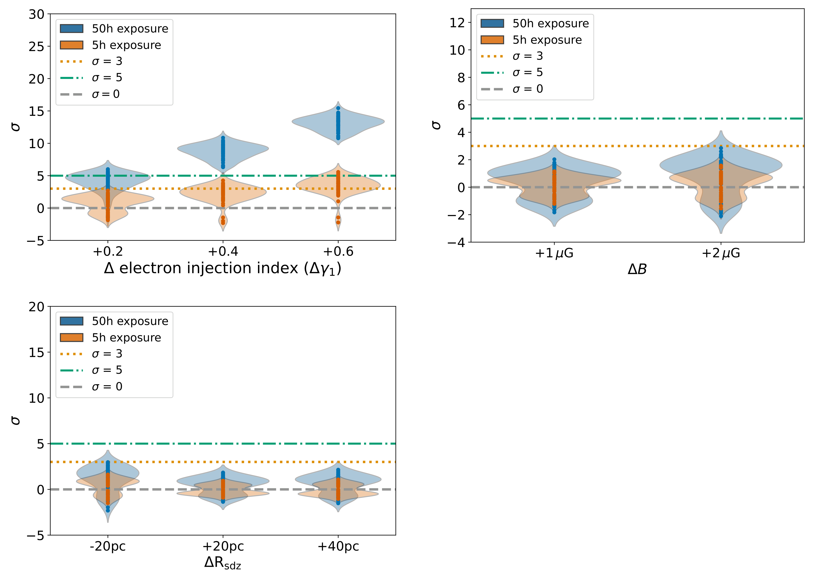<br />
图注：Discriminability of source parameters for the Monogem halo based on mock CTAO observations. Each panel shows violin distributions of the variability in the distinguishability metric $\sigma$ when varying a single source parameter: electron injection index $\gamma_1$ (left), magnetic-field strength $B$ (middle), and diffusion-zone radius $R_{\rm SDZ}$ (right). The true model (used to generate the mock data) is defined by $\gamma_1 = 1.8$, $B = 1~\mu\mathrm{G}$, and $R_{\rm SDZ} = 50$~pc. Blue violins correspond to 50~h exposure scenarios, while orange violins correspond to 5~h. Horizontal lines indicate reference levels of distinguishability at $\sigma = 0$ (dashed), $\sigma = 3$ (dotted), and $\sigma = 5$ (dash-dotted). Higher $\sigma$ values indicate greater statistical separation from the true model.<br />
对应解读：建议重点查看的图表第4、5项；关键图表逐图导读中关于参数灵敏度/似然差图；模型拟合段落中 Monogem 的 R_{\<br />
m SDZ} 退化讨论。<br />
入选理由：这张图直接给出 Monogem 在 mock CTAO 观测下对 \gamma_1、B 和 R_{\<br />
m SDZ} 的区分能力，尤其包含日报重点强调的 30 pc、50 pc 及更大慢扩散区半径能否被区分的问题，是验证“大泡退化”和 CTAO 参数灵敏度结论的核心图。<br />
来源与置信度：\(arxiv_source\)；high；\(arxiv_source\) / \(tev_halo_ctao.tex\):figure[12]</p>
<p><strong>Fig11</strong><br />
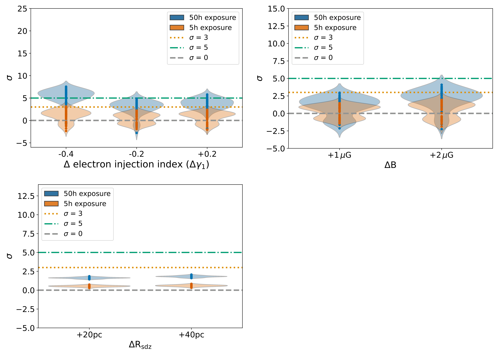<br />
图注：Discriminability of source parameters for the Geminga halo based on mock CTAO observations. Each panel shows violin distributions of the variability in the distinguishability metric $\sigma$ when varying a single source parameter: electron injection index $\gamma_1$ (left), magnetic-field strength $B$ (middle), and diffusion-zone radius $R_{\rm SDZ}$ (right). The true model (used to generate the mock data) is defined by $\gamma_1 = 2.2$, $B = 1~\mu\mathrm{G}$, and $R_{\rm SDZ} = 50$~pc. Blue violins correspond to 50~h exposure scenarios, while orange violins correspond to 5~h. Horizontal lines indicate reference levels of distinguishability at $\sigma = 0$ (dashed), $\sigma = 3$ (dotted), and $\sigma = 5$ (dash-dotted). Higher $\sigma$ values indicate greater statistical separation from the true model.<br />
对应解读：建议重点查看的图表第4项；关键图表逐图导读中参数灵敏度或似然差图；模型拟合段落中 \Delta\gamma_1\simeq0.2 与 \Delta B\simeq2\,\mu{\<br />
m G} 的区分能力。<br />
入选理由：这张图展示 Geminga 对注入谱指数、磁场强度和慢扩散区半径变化的统计区分能力，并同时比较 50 h 与 5 h 曝光，是支撑 CTAO 能否分辨 \gamma_1 和 B 变化的最直接证据。<br />
来源与置信度：\(arxiv_source\)；high；\(arxiv_source\) / \(tev_halo_ctao.tex\):figure[11]</p>
<p><strong>Fig02</strong><br />
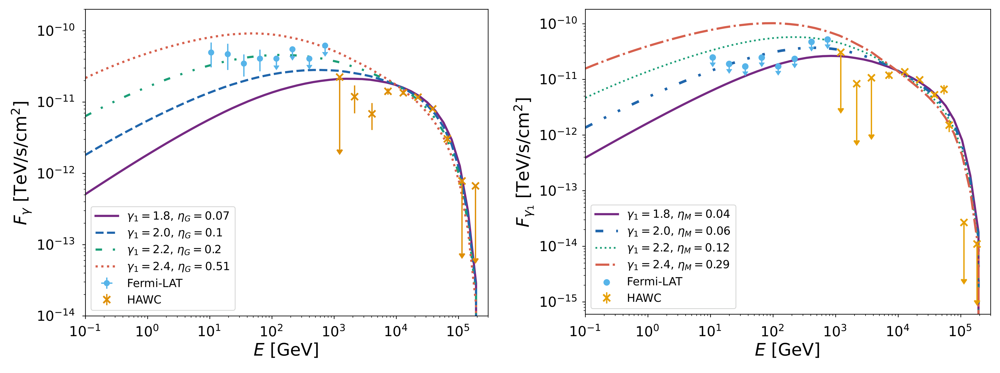<br />
图注：Energy spectrum averaged over 15$^{\circ}$ radius region around Geminga Halo (\textbf{top panel}), and Monogem Halo (\textbf{bottom panel}) for various electron injection index $\gamma_{1}$. We assume a benchmark value of magnetic field $B=1~\mu$G, and SDZ size $R_{\rm SDZ}=50$~pc. The spectrum is compared to Fermi-LAT data and upper limits \(\citep{Di_Mauro_2019},\) and HAWC data \(\citep{HAWC_2024}.\)<br />
对应解读：建议重点查看的图表第1项；关键图表逐图导读中的图1能谱对比；模型拟合段落中先用 HAWC 与 Fermi-LAT 约束物理模型的部分。<br />
入选理由：该图把 Geminga 和 Monogem 的模型能谱与 Fermi-LAT、HAWC 数据和上限直接比较，横跨 GeV 到 TeV 能段，最适合检查基准两区扩散模型是否同时满足现有观测以及注入谱指数变化如何影响高能斜率。<br />
来源与置信度：\(arxiv_source\)；high；\(arxiv_source\) / \(tev_halo_ctao.tex\):figure[2]</p>
<p><strong>Fig01</strong><br />
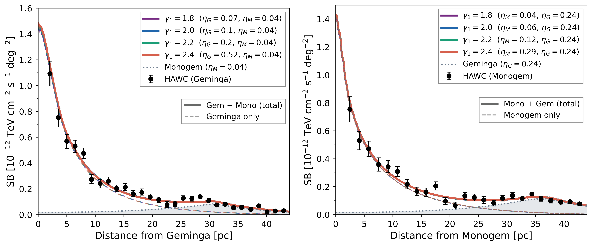<br />
图注：Surface brightness of IC emission in the $5.4$--$68.7$~TeV range for the Geminga halo (\textbf{top panel}) and the Monogem halo (\textbf{bottom panel}), each fitted jointly to account for the mutual contamination between the two sources. In both panels, curves correspond to different electron injection indices $\gamma_{1} = 1.8,\,2.0,\,2.2,\,2.4$ of the primary source, with magnetic field $B = 1~\mu$G and SDZ size $R_{\rm SDZ} = 50$~pc fixed. The injection efficiencies $\eta_{G}$ and $\eta_{M}$ of both sources are fitted simultaneously to the HAWC surface brightness data \(\citep{HAWC_2024}.\) The neighbour source (dotted) is held at a fixed benchmark model. The solid grey line shows the total combined surface brightness, and the dashed grey line shows the primary source contribution alone.<br />
对应解读：建议重点查看的图表第2项；关键图表逐图导读中的径向亮度剖面；模型拟合段落中空间扩展和邻近源互相污染的处理。<br />
入选理由：这张图给出 5.4--68.7 TeV 的 IC 表面亮度径向分布，并显示不同 \gamma_1 模型以及 Geminga/Monogem 互相污染的联合拟合，是判断 TeV 晕是否呈扩展结构、形态是否可区分的关键图。<br />
来源与置信度：\(arxiv_source\)；high；\(arxiv_source\) / \(tev_halo_ctao.tex\):figure[1]</p>
<p><strong>Fig10</strong><br />
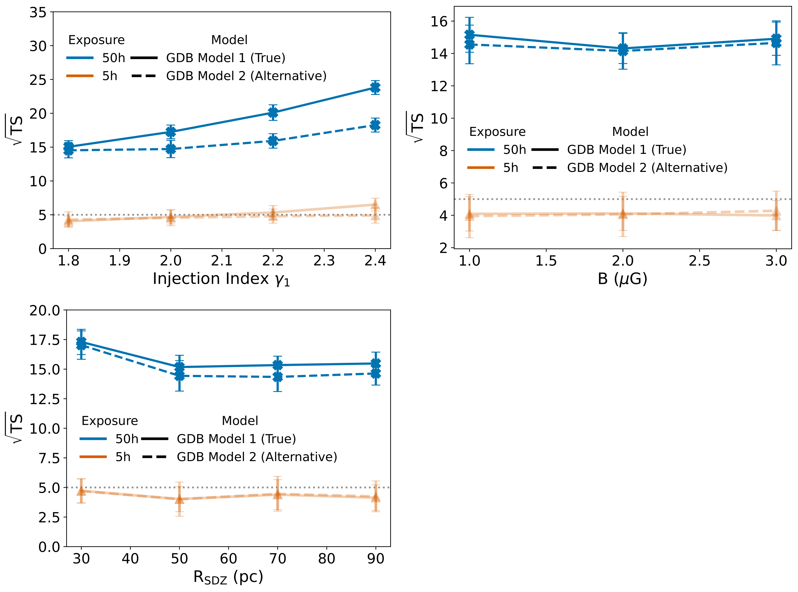<br />
图注：Detection significance of the Monogem halo by CTAO-South by fitting to the true astrophysical background and the alternative background. One model parameter is varied at a time while the remaining parameters are fixed at their benchmark values ($\gamma_1 = 1.8$, $B = 1\,\mu\mathrm{G}$, $R_{\rm SDZ} = 50$~pc). Results for a 5~h exposure are shown to illustrate how the detection significance improves with observing time; this represents an extremely conservative exposure for the CTAO. Each data point is derived from fitting 50 independent realizations of the same source model.<br />
对应解读：建议重点查看的图表第6项；关键图表逐图导读中的稳健性检验图；模型拟合段落中替代 Galactic diffuse template 对显著性和参数灵敏度影响的讨论。<br />
入选理由：该图针对 Monogem 比较真实天体背景与替代背景下的 CTAO-South 探测显著性，并随单个源参数变化，直接对应日报中要求检查 diffuse template 系统误差是否小于约 10% 的问题。<br />
来源与置信度：\(arxiv_source\)；high；\(arxiv_source\) / \(tev_halo_ctao.tex\):figure[10]</p>
<p><strong>Fig09</strong><br />
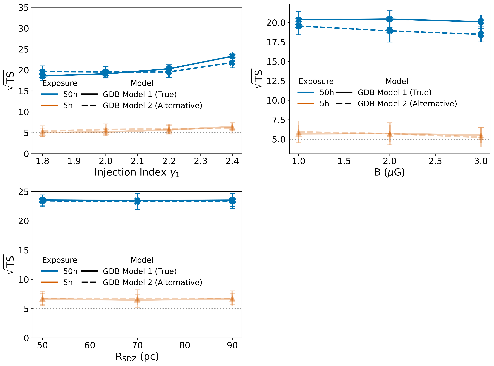<br />
图注：Detection significance of the Geminga halo by CTAO-South by fitting to the true astrophysical background and the alternative background. One model parameter is varied at a time while the remaining parameters are fixed at their benchmark values ($\gamma_1 = 2.2$, $B = 1\,\mu\mathrm{G}$, $R_{\rm SDZ} = 50$~pc). Results for a 5~h exposure are shown to illustrate how the detection significance improves with observing time; this represents an extremely conservative exposure for the CTAO. Each data point is derived from fitting 50 independent realizations of the same source model.<br />
对应解读：建议重点查看的图表第6项；关键图表逐图导读中的背景系统误差检验；模型拟合段落中 Geminga 的替代弥散背景稳健性。<br />
入选理由：这张图与 Fig10 互补，给出 Geminga 在真实背景和替代背景假设下的 CTAO-South 探测显著性变化，可用于判断背景失配对不同物理参数扫描的影响是否保持在论文声称的稳健范围内。<br />
来源与置信度：\(arxiv_source\)；high；\(arxiv_source\) / \(tev_halo_ctao.tex\):figure[9]</p>
<h4 id="_12">强相关工作</h4>
<p>这篇工作直接接在 HAWC 对 Geminga 和 Monogem 扩展 TeV 辐射的发现和后续建模之后。HAWC 结果提出了一个关键张力：若源附近扩散像观测所示那样慢，Geminga 对地球正电子超额的贡献可能不如早期乐观估计；但如果慢扩散区只是有限半径小泡，粒子逃出后仍可能贡献本地 \,\(e^\pm\)。本文用 CTAO 未来观测检验 \,\(R_{\rm SDZ}\) 和 \,\(B\)，正是为了解开这个张力。检索关键词可用 “Geminga TeV halo HAWC diffusion positron excess”、“Monogem B0656+14 TeV halo”、“two-zone diffusion pulsar halos”。</p>
<p>相似工作包括用 HAWC、LHAASO、Fermi-LAT 或 H.E.S.S./MAGIC/VERITAS 研究脉冲星晕的观测论文，以及用 GALPROP/DRAGON/PICARD 等传播代码建模局域慢扩散的理论论文。基础理论则与宇宙线扩散、逆康普顿辐射、脉冲星自转能损失和正电子超额有关。相反观点或张力主要集中在：TeV 晕是否普遍存在、慢扩散是否由自激湍流造成、Geminga/Monogem 是否足以解释 AMS-02 正电子分数、以及两区球对称模型是否过度简化。</p>
<p><strong>同一事件 / 同类源线索</strong>：</p>
<ul>
<li><a href="https://arxiv.org/abs/2607.05245">https://arxiv.org/abs/2607.05245</a></li>
<li><a href="https://arxiv.org/pdf/2607.05245">https://arxiv.org/pdf/2607.05245</a></li>
<li><a href="https://arxiv.org/abs/1711.06223">https://arxiv.org/abs/1711.06223</a></li>
</ul>
<p><strong>相似工作</strong>：</p>
<ul>
<li><a href="https://arxiv.org/abs/1711.06223">https://arxiv.org/abs/1711.06223</a></li>
<li><a href="https://arxiv.org/abs/1904.10213">https://arxiv.org/abs/1904.10213</a></li>
<li><a href="https://arxiv.org/abs/1910.06409">https://arxiv.org/abs/1910.06409</a></li>
</ul>
<p><strong>基础理论 / 方法工作</strong>：</p>
<ul>
<li><a href="https://arxiv.org/abs/0810.4995">https://arxiv.org/abs/0810.4995</a></li>
<li><a href="https://arxiv.org/abs/1009.5305">https://arxiv.org/abs/1009.5305</a></li>
<li><a href="https://arxiv.org/abs/1707.04591">https://arxiv.org/abs/1707.04591</a></li>
</ul>
<p><strong>相反观点 / 张力线索</strong>：</p>
<ul>
<li><a href="https://arxiv.org/abs/1711.06223">https://arxiv.org/abs/1711.06223</a></li>
<li><a href="https://arxiv.org/abs/1803.09751">https://arxiv.org/abs/1803.09751</a></li>
</ul>
</details>
<h3 id="2-an-18-year-fermi-lat-stacking-limit-on-gev-astro_math_2483-ray-emission-from-particle-accelerating-colliding-wind-binaries">2. An 18-year Fermi-LAT stacking limit on GeV $γ$-ray emission from particle-accelerating colliding-wind binaries</h3>
<ul>
<li>来源：arXiv / astro-ph.HE</li>
<li>链接：https://arxiv.org/abs/2607.05102v1</li>
<li>作者：Youngwan Son</li>
<li>评分：novelty 8/10，importance 8/10，relevance 10/10，final 9.70/10</li>
<li>推荐理由：18年Fermi-LAT对粒子加速碰撞风双星进行GeV伽马堆叠，给出严格上限并强调银河面堆叠的源混淆问题；伽马射线天文和粒子加速源 population 研究高度相关。</li>
</ul>
<p><strong>中文题目</strong>：用 17.8 年 Fermi-LAT 叠加分析限制粒子加速型碰撞风双星的 GeV 伽马射线辐射</p>
<p><strong>做了什么</strong>：这篇文章问的是：除 \(\eta\) Car 之外，已知会加速粒子的碰撞风双星是否作为一个族群在 GeV 能段发光？作者用 17.8 年 Fermi-LAT 数据，在 \(>1\,\mathrm{GeV}\) 能段对 De Becker 与 Raucq 目录中的 61 个确认粒子加速型碰撞风双星做二维似然扫描和叠加，并用 200 个按银纬、局部源密度和弥散背景强度匹配的控制场检验虚假信号。关键结论是：一旦剔除视线方向与亮伽马射线目录源重合的目标，剩下 6 个干净且相互孤立的系统叠加结果与零假设一致，\(p=0.83\)，没有族群级 GeV 辐射证据；若不剔除这些重合源，会出现虚假的 \(\gtrsim3.5\sigma\) 超额。论文给出平均单源 \(F(>1\,\mathrm{GeV})\lesssim1.1\times10^{-11}\,\mathrm{ph\,cm^{-2}\,s^{-1}}\) 的 \(95\%\) 上限，并把它转化为很低的伽马射线产能效率限制。</p>
<p><strong>为什么重要</strong>：碰撞风双星是大质量恒星风、强激波、强辐射场和磁场共同作用的天然实验室，非热射电已经说明其中存在相对论电子，但 GeV 伽马射线是否普遍存在直接关系到电子/质子加速效率、逆康普顿辐射、强子相互作用以及星风动能如何转化为非热粒子。此前 \(\eta\) Car 是 Fermi-LAT 中最清楚的例子，但它可能是异常强、异常近或异常特殊的个体。本文的重要性在于把问题从“有没有某个亮源”改成“是否存在一个可叠加检出的普通族群”，并明确指出银道面叠加分析中目录源偶合可以制造看似显著的假阳性。</p>
<p><strong>理论 / 观测 / 仪器方法价值</strong>：对理论而言，本文把平均 GeV 通量上限转化为 \(\gamma\) 射线生产效率和电子加速效率约束，说明普通碰撞风区若要逃过 Fermi-LAT 检测，要么粒子加速效率低，要么磁场接近或高于磁场—光子能量密度均分值，使能量更多进入同步辐射而不是 GeV 逆康普顿辐射。对观测和方法而言，本文给出了 Galactic plane 叠加工作的一个实用警告：局部目录源重合、弥散背景和点扩散函数尾部不是小修正，而可能主导显著性。对未来仪器而言，它说明更好的角分辨率、背景建模和更深的高能数据才是推进普通碰撞风双星 GeV 检测的关键。</p>
<p><strong>为什么应该关注</strong>：如果你关心大质量恒星反馈、银河系宇宙线源、非热射电源或 Fermi-LAT 叠加方法，这篇文章值得看。它不是宣布一个新源，而是把一个很容易被选择效应误导的问题做了“拆雷”：\(\eta\) Car 不能简单外推成一个即将被发现的 GeV 碰撞风双星族群。它还提供了一个可复用的控制场框架，用来判断弱源叠加中的显著性到底来自目标族群，还是来自银道面复杂背景和偶然目录源重合。</p>
<details class="paper-detail">
<summary>展开详细解读：文章讲解、背景、理论、重点章节、图表与相关工作</summary>
<h4 id="_13">文章详细讲解</h4>
<p>科学问题：碰撞风双星由两个大质量恒星的高速星风相撞形成弓形或锥形激波。非热射电同步辐射表明这些系统中有相对论电子，\(\eta\) Car 的 GeV 和高能辐射则表明至少在某些极端系统中，碰撞风区可以产生可观的 \(\gamma\) 射线。问题是，\(\eta\) Car 到底是一个族群的亮端，还是一个物理条件非常特殊的例外？如果普通粒子加速型碰撞风双星普遍有弱 GeV 辐射，单个源可能低于 Fermi-LAT 探测阈值，但叠加后应出现统计性超额。</p>
<p>作者怎么做：论文选取 De Becker 与 Raucq 目录中的 61 个确认粒子加速型碰撞风双星，使用 17.8 年 Fermi-LAT Pass 8 数据，并把分析能段设为 \(>1\,\mathrm{GeV}\)。这个能段牺牲部分光子数，但换来更窄的点扩散函数，从而减轻银道面源混淆和弥散背景不确定性。作者对每个目标位置做二维网格似然扫描，参数为光子指数 \(\Gamma\) 和积分通量 \(F\)，再把似然面叠加起来评估族群平均信号。为了评估弱信号是否可信，作者还构造了 200 个控制场，要求它们在银纬、局部 Fermi 目录源密度和弥散背景强度上与真实目标场相匹配。</p>
<p>关键结果：若保留所有与亮伽马射线目录源视线重合的系统，叠加会出现看似 \(\gtrsim3.5\sigma\) 的超额；但作者表明这主要来自机会重合，而不是目标族群自身发光。剔除这些污染后，只剩下 6 个干净、彼此隔离、适合叠加的系统，其叠加统计量落在控制场零假设分布内，对应 \(p=0.83\)，即完全不支持集体 GeV 辐射。由此得到的 \(95\%\) 置信上限为平均每个源 \(F(>1\,\mathrm{GeV})\lesssim1.1\times10^{-11}\,\mathrm{ph\,cm^{-2}\,s^{-1}}\)，这里采用 \(\Gamma=2\) 的代表性谱形。</p>
<p>局限和下一步：最大的限制是“干净样本”只有 6 个，统计功效受限，且这些系统未必代表所有碰撞风双星，尤其未必代表最靠近银道面、最亮、最复杂的大质量恒星形成区目标。距离、星风功率、轨道相位、磁场、吸收和辐射场几何也会导致很大的源间差异，简单平均可能稀释少数强源。下一步需要更完整的同类源目录、相位相关搜索、与射电和 X 射线非热约束的联合建模，以及用更高角分辨率的未来 MeV-GeV 仪器或更长时间 Fermi-LAT 数据重新检验。</p>
<h4 id="_14">关键结果是怎么做出来的</h4>
<p>样本选择是本文证据链的核心。作者从确认的粒子加速型碰撞风双星目录出发，初始样本为 61 个系统，而不是事后挑选某些有伽马射线迹象的对象。由于这些目标大量位于银道面附近，直接把所有位置叠加会非常容易受到 Fermi-LAT 目录源、弥散背景残差和点扩散函数尾部影响。因此作者把样本分成“有潜在目录源重合或污染”的对象与“干净、互相孤立”的对象，最后得到 6 个适合做保守族群限制的高质量目标。</p>
<p>统计量来自每个目标场的二维似然扫描。对每个候选位置，作者不是只固定一个谱形，而是在 \((\Gamma,F)\) 平面上扫描，其中 \(\Gamma\) 是光子指数，\(F\) 是 \(>1\,\mathrm{GeV}\) 积分通量。这样可以避免因为预设谱形过窄而漏掉或夸大信号。随后把各目标的对数似然差相加，得到叠加似然面，并以控制场分布来判断真实叠加结果是否异常。</p>
<p>显著性检验的关键不是只看形式上的 \(TS\)，而是看真实目标相对于匹配控制场的位置。作者构造的 200 个控制场按银纬、局部源密度和弥散背景强度匹配，目的在于让控制场经历与目标场类似的背景复杂度。干净样本叠加得到 \(p=0.83\)，意味着真实目标的超额程度在控制场零分布中非常普通，不仅没有显著探测，甚至没有接近暗示性信号。</p>
<p>最有警示性的结果来自污染样本对照。若保留与亮目录源视线重合的系统，叠加能产生 \(\gtrsim3.5\sigma\) 的表观超额；但由于这些超额与已知 \(\gamma\) 射线源重合，且在控制场和污染诊断下表现为机会重合，不能归因于碰撞风双星。这说明在 Galactic plane 上做弱源叠加时，形式显著性可能由源混淆主导，不能简单解释为族群辐射。</p>
<p>支持结论的图表应包括：目标与控制场的背景匹配图、每个目标或叠加后的 \((\Gamma,F)\) 似然面、真实样本统计量相对于控制场分布的位置、污染样本与干净样本的对比、以及通量上限转化为效率上限的图或表。主要系统误差包括 Galactic diffuse 模型误差、4FGL 源模型不完备、点扩散函数能量依赖、目标距离不确定性和样本代表性。稳健性主要来自能段选择、污染源剔除、控制场匹配以及保守使用干净样本上限。</p>
<details class="paper-subdetail">
<summary>展开背景、理论、公式、模型、章节和图表导读</summary>
<h4 id="_15">背景知识</h4>
<p>碰撞风双星通常由两颗 O 型或 Wolf-Rayet 等大质量恒星组成。每颗恒星都有强烈辐射驱动星风，风速可达数千 \(\mathrm{km\,s^{-1}}\)，质量损失率也很高。两股星风相撞后形成高温激波和压缩层，在那里一阶费米加速可以把电子甚至质子加速到相对论能量。非热射电同步辐射就是这些相对论电子与磁场相互作用的直接证据。</p>
<p>历史上，碰撞风双星的高能辐射预言很自然：电子可以通过逆康普顿散射把恒星紫外光子提升到 X 射线或 \(\gamma\) 射线能段，质子也可通过 \(pp\) 相互作用产生 \(\pi^0\) 并衰变为 \(\gamma\) 射线。但实际观测很困难，因为这些系统大多位于恒星形成区和银道面附近，Fermi-LAT 在低能端点扩散函数较宽，弥散背景明亮且结构复杂，弱点源很容易与无关 \(\gamma\) 射线源混淆。</p>
<p>\(\eta\) Car 是该领域的标志性目标。它质量极高、星风功率巨大、轨道偏心率高，并且有复杂的环星环境。Fermi-LAT 清楚探测到它的 GeV 辐射，使人自然猜想其他粒子加速型碰撞风双星也许只是更暗，等待更长曝光或叠加分析显现出来。本文正是在 Fermi-LAT 积累近 18 年数据后重新检验这个问题。</p>
<p>现在值得重新看的原因有三点。第一，Fermi-LAT 长时标曝光大幅增加，弱源上限可以明显改进。第二，4FGL 等目录让局部 \(\gamma\) 射线源环境可以更系统地建模和剔除。第三，粒子加速型碰撞风双星目录比早期更完整，使族群统计更有意义。一个常见误区是把非热射电源等同于 GeV \(\gamma\) 射线源；事实上同步辐射强并不必然意味着逆康普顿或强子 \(\gamma\) 射线强，因为磁场、辐射场、冷却、吸收、最大能量和几何都会改变能量分配。</p>
<p>另一个误区是把叠加显著性直接当作族群探测。对银道面弱源来说，叠加会把很多小的建模残差、未建模源和偶然重合一起相加。若没有匹配控制场和严格的污染剔除，\(3\sigma\) 级别的表观超额并不一定有物理含义。本文最重要的背景贡献之一，就是把这个方法学风险放在结果中心。</p>
<h4 id="_16">基础理论 / 方法脉络</h4>
<p>基本物理图像从星风动能开始。每颗大质量恒星的星风携带动能通量，当两股超声速风相撞时，动能在激波处部分转化为热能、湍动能、磁场能和非热粒子能。若激波足够强，粒子在上下游散射中心之间往返，可通过扩散激波加速获得近似幂律分布。电子的直接观测信号通常是射电同步辐射，而 GeV \(\gamma\) 射线更多对应逆康普顿散射或强子过程。</p>
<p>在电子主导的图像中，恒星辐射场提供密集的紫外/光学种子光子。相对论电子把这些光子上散射到高能；在 Thomson 近似下，出射光子能量大约随电子 Lorentz 因子的平方增长。与此同时，同一批电子在磁场中同步辐射。因此逆康普顿与同步辐射的相对强弱主要受光子能量密度 \(U_{\rm ph}\) 与磁场能量密度 \(U_B\) 控制。若 \(U_B\) 较大，电子能量优先通过同步辐射损失，GeV 辐射可以很弱。</p>
<p>在强子主导的图像中，加速质子与风物质碰撞产生介子，\(\pi^0\) 衰变给出 \(\gamma\) 射线，\(\pi^{\pm}\) 衰变还会给出中微子和次级电子。这个通道依赖风密度、加速质子功率和逃逸时间。对大多数碰撞风双星来说，距离、风参数、轨道相位和视线吸收的不确定性较大，因此仅靠一个 GeV 上限很难唯一地区分电子与强子模型，但可以限制总的非热能量预算。</p>
<p>本文的观测方法关键是 Fermi-LAT 的点源似然分析。LAT 记录每个光子的方向、能量和事件类型，模型包括目标点源、邻近目录源、银河弥散辐射和各向同性背景。作者选择 \(>1\,\mathrm{GeV}\)，因为此时 LAT 点扩散函数显著优于低能段，减少源混淆；代价是光子数减少，统计误差增大。对位于银道面附近的目标，这个取舍通常是必要的。</p>
<p>主要退化关系来自谱形、通量和背景之间的耦合。较软的谱在低能贡献更多，因而更依赖弥散背景模型；较硬的谱在高能更干净，但光子数少。源位置与邻近目录源位置若接近，目标通量可与邻源通量互相吸收。叠加分析还会引入选择效应：剔除污染源能提高可信度，但会减少样本量并可能偏向高银纬或较孤立系统。</p>
<h4 id="_17">公式与推导</h4>
<p>第一步是星风动能预算。单颗恒星风的动能功率可写为</p>
<div class="math-display">\[L_{\rm wind}=\frac{1}{2}\dot{M}v_{\rm w}^{2},\]</div>
<p>其中 \(\dot{M}\) 是质量损失率，\(v_{\rm w}\) 是风速。双星系统可把两颗星的贡献相加，得到可供激波、加热和非热粒子分享的总功率。</p>
<p>第二步定义非热粒子能量注入。若电子加速效率为 \(\xi_e\)，则</p>
<div class="math-display">\[L_e=\xi_e L_{\rm wind},\]</div>
<p>其中 \(L_e\) 是注入相对论电子的功率。若考虑强子，也可用类似的 \(L_p=\xi_p L_{\rm wind}\) 表示质子功率。本文的上限最终约束的是这些效率与辐射损失通道的组合。</p>
<p>第三步写出常用的粒子谱。激波加速给出的电子分布常近似为</p>
<div class="math-display">\[N_e(E_e)=K_e E_e^{-p}\exp\left(-\frac{E_e}{E_{\rm cut}}\right),\]</div>
<p>其中 \(E_e\) 是电子能量，\(K_e\) 是归一化，\(p\) 是谱指数，\(E_{\rm cut}\) 是最高能量截断。这个分布决定同步辐射和逆康普顿辐射的谱形。</p>
<p>第四步比较同步与逆康普顿冷却。磁场能量密度为</p>
<div class="math-display">\[U_B=\frac{B^2}{8\pi},\]</div>
<p>其中 \(B\) 是碰撞风区磁场强度。恒星光子场能量密度近似为</p>
<div class="math-display">\[U_{\rm ph}=\frac{L_*}{4\pi r^2 c},\]</div>
<p>其中 \(L_*\) 是恒星光度，\(r\) 是粒子所在位置到辐射源的距离，\(c\) 是光速。若处于 Thomson 区域，同一批电子的逆康普顿与同步功率比近似满足</p>
<div class="math-display">\[\frac{L_{\rm IC}}{L_{\rm syn}}\simeq\frac{U_{\rm ph}}{U_B}.\]</div>
<p>这说明当 \(B\) 接近或超过使 \(U_B\simeq U_{\rm ph}\) 的均分值时，GeV 逆康普顿输出会被压低。</p>
<p>第五步把通量和光度连接。若源距离为 \(d\)，观测到的能量通量 \(G_\gamma\) 与 \(\gamma\) 射线光度满足</p>
<div class="math-display">\[L_\gamma=4\pi d^2 G_\gamma.\]</div>
<p>若论文给出的是光子通量 \(F(>E_0)\)，并假设幂律谱</p>
<div class="math-display">\[\frac{dN}{dE}=N_0\left(\frac{E}{E_0}\right)^{-\Gamma},\]</div>
<p>则积分光子通量为</p>
<div class="math-display">\[F(>E_0)=\int_{E_0}^{\infty}\frac{dN}{dE}\,dE=\frac{N_0E_0}{\Gamma-1},\quad \Gamma>1.\]</div>
<p>能量通量在 \(\Gamma>2\) 且上限足够高时近似为</p>
<div class="math-display">\[G_\gamma(>E_0)=\int_{E_0}^{\infty}E\frac{dN}{dE}\,dE=\frac{N_0E_0^2}{\Gamma-2}.\]</div>
<p>对 \(\Gamma=2\) 的边界情形，需要保留有限高能截断或积分上限。</p>
<p>第六步定义生产效率。论文使用的物理解释可概括为</p>
<div class="math-display">\[\eta_\gamma=\frac{L_\gamma}{L_{\rm wind}},\]</div>
<p>其中 \(\eta_\gamma\) 是风动能转化为 GeV \(\gamma\) 射线的有效效率。由上限可得 \(\eta_\gamma\lesssim4\times10^{-6}(d/{\rm kpc})^2\) 量级，说明普通样本的效率远低于把 \(\eta\) Car 简单缩放后的预期。</p>
<p>第七步是 LAT 似然。对空间和能量分箱 \(i\)，泊松似然可写为</p>
<div class="math-display">\[\ln\mathcal{L}(F,\Gamma)=\sum_i\left[n_i\ln\mu_i(F,\Gamma)-\mu_i(F,\Gamma)-\ln(n_i!)\right],\]</div>
<p>其中 \(n_i\) 是观测计数，\(\mu_i\) 是包含目标源、目录源、银河弥散和各向同性背景后的模型期望计数。目标源的 \(F\) 与 \(\Gamma\) 改变 \(\mu_i\) 的能量和空间分布。</p>
<p>第八步定义检验统计量和叠加。单源的常用统计量为</p>
<div class="math-display">\[TS=2\left[\ln\mathcal{L}(\widehat{F},\widehat{\Gamma})-\ln\mathcal{L}(F=0)\right],\]</div>
<p>其中帽号表示最大似然估计。多个独立目标的叠加近似为</p>
<div class="math-display">\[\Delta\ln\mathcal{L}_{\rm stack}(F,\Gamma)=\sum_{j=1}^{N}\Delta\ln\mathcal{L}_j(F,\Gamma),\]</div>
<p>其中 \(N\) 是叠加目标数。本文进一步用匹配控制场而非只用渐近 \(\chi^2\) 近似来校准 \(p\) 值，这是因为银道面背景和源混淆会破坏理想统计假设。</p>
<h4 id="_18">模型拟合 / 应用方法</h4>
<p>本文的拟合对象不是传统意义上单个源的宽带谱能量分布，而是 Fermi-LAT 数据中每个候选位置的点源通量和谱指数。核心参数是 \(F(>1\,\mathrm{GeV})\) 与 \(\Gamma\)，背景模型则包括邻近 Fermi 目录源、银河弥散模板和各向同性背景。对每个目标，作者在 \((\Gamma,F)\) 网格上计算似然，而不是只报告一个最优值，这有利于在叠加时保留非高斯误差和通量上限的不对称性。</p>
<p>似然本质上是光子计数的泊松似然，经仪器响应函数折叠后比较模型计数和观测计数。对于 LAT 分析，模型计数受有效面积、曝光、点扩散函数、能量弥散和事件选择影响。因为目标多在复杂区域，邻源和弥散背景的参数会与目标通量相关，尤其在低能段更严重。选择 \(>1\,\mathrm{GeV}\) 是一种降低退化的拟合策略。</p>
<p>叠加拟合时，作者把多个目标的似然差相加，相当于检验一个共同的平均通量族群模型。这里的隐含假设是各源在所选参数化下可用相似谱形描述，或者至少平均信号可以由共同 \(\Gamma\) 和平均 \(F\) 代表。这个假设会在源间差异很大时失效：例如少数近源或高风功率源主导信号，而多数源完全无信号，简单平均就不再对应清晰的物理族群参数。</p>
<p>系统误差中最重要的是源混淆。若一个碰撞风双星位置附近有亮 \(\gamma\) 射线目录源，点扩散函数尾部或源模型不完备就可能把邻源光子分配给目标位置，产生虚假正通量。本文通过剔除重合系统和构造匹配控制场处理这一点。控制场的价值在于，它把真实天空的复杂背景、目录源密度和弥散结构纳入零假设校准，而不是完全依赖理想化的 Wilks 定理。</p>
<p>残差诊断应重点看空间残差图、似然剖面是否在 \(F=0\) 附近闭合、不同 \(\Gamma\) 下上限是否稳定、以及污染样本的超额是否集中于少数邻近目录源。模型可能失败的情形包括：真实辐射高度相位调制、谱形不是简单幂律、源有空间延展、弥散模板局部失配，或目标目录本身混入了物理上差异很大的系统。实际应用中，本文的上限最适合用于族群平均约束，而不是给每个具体系统建立精细物理模型。</p>
<h4 id="_19">重点章节 / 结果段落怎么读</h4>
<p>数据与样本部分应首先看清楚 61 个确认粒子加速型碰撞风双星如何进入分析，以及哪些目标因为与亮 \(\gamma\) 射线目录源视线重合、相互不独立或处于复杂背景而被标记为污染。读者要特别注意最终“干净样本”只有 6 个，这既是保守性的来源，也是统计功效的限制。</p>
<p>Fermi-LAT 分析方法部分要关注能段选择、事件类、ROI 建模、目录源处理和弥散背景设置。\(>1\,\mathrm{GeV}\) 的选择不是任意的，而是围绕点扩散函数和银道面混淆做出的取舍。若论文给出不同能段或不同源剔除标准的稳健性检查，应优先阅读。</p>
<p>二维似然扫描和叠加方法部分是本文方法核心。应检查 \((\Gamma,F)\) 网格如何设置，单源似然如何归一化，叠加时是否假设共同谱指数，以及上限如何从似然面中读出。这里决定了 \(95\%\) 上限的统计含义。</p>
<p>控制场部分是判断结果可信度的关键。要看 200 个控制场如何按银纬、局部源密度和弥散强度匹配，以及真实目标的统计量在控制场分布中的位置。若控制场匹配不好，\(p=0.83\) 的解释就会变弱；若匹配充分，它比形式上的 \(TS\) 更有说服力。</p>
<p>结果与讨论部分应区分两个结论：第一，干净样本没有族群 GeV 信号；第二，保留污染目标会产生虚假的 \(\gtrsim3.5\sigma\) 超额。后者不是旁枝，而是本文对 Galactic plane 叠加方法的主要警告。最后再看通量上限如何转化为 \(\eta_\gamma\) 和电子加速效率限制，尤其要注意距离因子和磁场假设。</p>
<h4 id="_20">建议重点查看的图表</h4>
<ol>
<li>
<p>样本天空分布图：检查 61 个目标在银河坐标中的分布，干净样本与污染样本是否集中在不同银纬或背景环境中，以及 \(\eta\) Car 是否单独标识。</p>
</li>
<li>
<p>目标场与控制场匹配诊断图：检查银纬、局部 4FGL 源密度、银河弥散强度的分布是否相似。若真实目标处在控制场分布边缘，零假设校准会变弱。</p>
</li>
<li>
<p>单源或叠加 \((\Gamma,F)\) 似然面：看最大似然点是否远离 \(F=0\)，\(95\%\) 上限轮廓如何随 \(\Gamma\) 变化，以及是否有局部多峰结构提示邻源混淆。</p>
</li>
<li>
<p>控制场 \(TS\) 或叠加统计量分布：检查真实干净样本对应的竖线在控制场直方图中的位置。本文核心数值 \(p=0.83\) 应该来自这类图。</p>
</li>
<li>
<p>污染样本与干净样本对比图：看 \(\gtrsim3.5\sigma\) 表观超额是否由少数与目录源重合的目标驱动，而不是在大量目标中均匀累积。</p>
</li>
<li>
<p>通量上限或效率上限表：检查 \(F(>1\,\mathrm{GeV})\) 上限、假设的 \(\Gamma=2\)、距离归一化和 \(L_{\rm wind}\) 取值。这里决定物理解释的强弱。</p>
</li>
<li>
<p>单区模型约束图：若论文给出电子效率与磁场的允许区域，应看均分磁场附近的转折，以及同步辐射和逆康普顿通道如何互相制约。</p>
</li>
</ol>
<h4 id="_21">关键图表逐图导读</h4>
<p>图 1：建议把它理解为样本和背景环境图。横轴和纵轴通常会是银河经纬或赤经赤纬，数据点表示粒子加速型碰撞风双星，颜色或符号区分全样本、污染样本和干净样本。读图重点是目标是否扎堆在银道面，以及干净样本为何显著减少。陷阱是不要把点少误解为目录不完整的全部原因；这里还有 \(\gamma\) 射线源混淆和相互隔离性筛选。</p>
<p>图 2：若为控制场匹配图，坐标轴应是银纬、局部目录源密度或弥散背景强度等环境量，真实目标与控制场用不同直方图或累积分布表示。关键结论是控制场是否真的模拟了目标场面对的背景复杂度。读图陷阱是只看均值不看尾部；弱源叠加常常被少数极端背景区域支配。</p>
<p>图 3：若为 \((\Gamma,F)\) 似然扫描图，横轴可能是光子指数 \(\Gamma\)，纵轴是积分通量 \(F(>1\,\mathrm{GeV})\)，颜色表示 \(\Delta\ln\mathcal{L}\) 或 \(TS\)。关键是看最佳拟合是否接近零通量，以及 \(95\%\) 上限轮廓在 \(\Gamma=2\) 处给出的数值。陷阱是把某个软谱或硬谱边缘的浅色区域过度解释为真实谱约束；低显著性下谱指数通常没有物理意义。</p>
<p>图 4：若为控制场统计量分布，横轴应是叠加 \(TS\)、最大 \(\Delta\ln\mathcal{L}\) 或等价显著性，纵轴是控制场数量或概率密度。真实样本用竖线标出。干净样本竖线落在普通位置，对应 \(p=0.83\)，这是“无族群信号”的直接证据。读图陷阱是用理想高斯 \(\sigma\) 替代经验控制场 \(p\) 值。</p>
<p>图 5：若为污染样本对比图，通常会展示保留重合源时叠加统计量明显偏高。读图重点是表观 \(\gtrsim3.5\sigma\) 超额是否随剔除特定重合源而消失。陷阱是把这张图当成“可能探测”的证据；本文的解释正相反，它证明未剔除目录源时容易产生假阳性。</p>
<p>图 6：若为物理上限图，横轴可能是距离、磁场或电子加速效率，纵轴可能是 \(\eta_\gamma\)、\(L_\gamma\) 或允许的 \(\xi_e\)。数据线表示 Fermi-LAT 上限，模型线表示单区逆康普顿或同步辐射预期。关键结论是普通样本的效率上限比 \(\eta\) Car 缩放低约两个数量级。陷阱是忽略 \(d^2\) 距离因子和磁场假设，这两个量会显著改变效率解释。</p>
</details>
<h4 id="_22">论文原图 / 可嵌入图片</h4>
<p><strong>Fig02</strong><br />
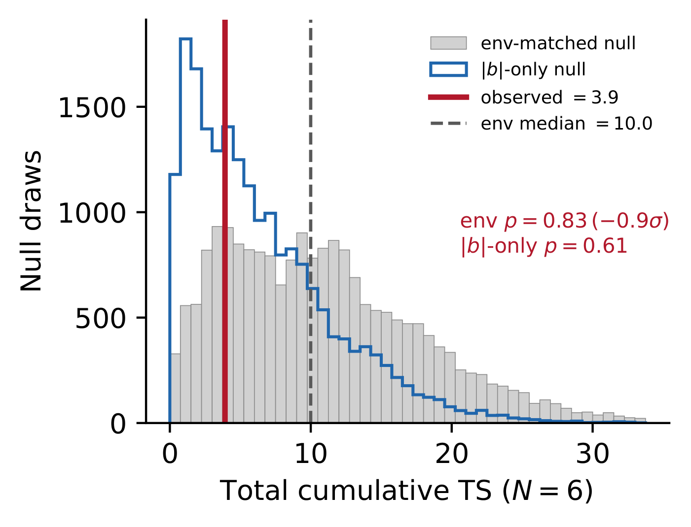<br />
图注：Control-field null distribution of the total cumulative TS for the $>1$\,GeV clean stack ($N=6$, $2\times10^4$ realizations). The fiducial environment-matched null (filled) draws each target's control fields from its $K=20$ nearest in $|b|$, local FL16Y source density, and $>1$\,GeV diffuse intensity. The $|b|$-only null is overplotted (blue). The observed value (red, $3.9$) lies below the mode of the right-skewed env-matched null (median $10.0$), giving $p=0.83$ ($-0.9\sigma$). The $|b|$-only null gives $p=0.61$.<br />
对应解读：对应“建议重点查看的图表”第4项控制场TS/叠加统计量分布，以及“关键图表逐图导读”图4；也是模型拟合段落中用经验控制场校准零假设、得到干净样本 p=0.83 的核心诊断图。<br />
入选理由：这是本文最直接支撑“干净样本无集体GeV信号”的关键证据。图中给出环境匹配控制场的累计TS零假设分布、真实干净样本竖线、p=0.83以及与仅按银纬匹配的对比，能同时验证叠加统计量、控制场校准和无显著超额这一主结论。<br />
来源与置信度：\(arxiv_source\)；high；\(arxiv_source\) / main.tex:figure[2]</p>
<p><strong>Fig01</strong><br />
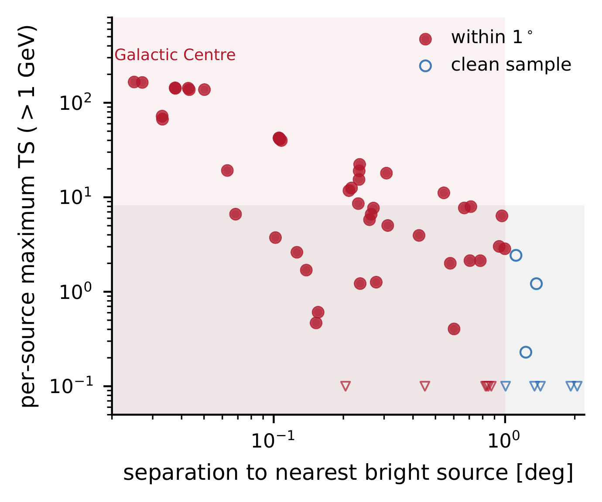<br />
图注：Per-source maximum TS ($>1$\,GeV) versus separation to the nearest bright FL16Y source ($\mathrm{Signif\_Avg}\geq5$). Filled red points lie within the $1\degr$ catalogue mask (shaded), open blue points are the clean sample beyond it, and downward triangles mark non-detections ($\mathrm{TS}\le0$) at the floor. The highest-TS coincidences, the Galactic-Center members, are labeled. The two individually detected CWBs (\(\etacar,\) $\gamma^2$~Vel), whose nearest bright source is their catalogue counterpart, are omitted. The gray band is the control-field background to its $\approx95^{\rm th}$ percentile: the clean systems fall within it, whereas the catalogue-coincident ones track the unrelated bright source.<br />
对应解读：对应“建议重点查看的图表”第5项污染样本与干净样本对比图，并部分对应第1项样本/污染环境识别；也支撑详细解读中关于保留目录源重合系统会产生伪超额的段落。<br />
入选理由：该图把每个源的最大TS与最近亮4FGL/FL16Y源的角距离联系起来，清楚区分1度掩膜内的污染样本和掩膜外的干净样本。它直接展示高TS主要跟亮目录源机会重合相关，而干净系统落在控制场背景范围内，是解释“表观大于3.5σ超额为何是假阳性”的最佳候选图。<br />
来源与置信度：\(arxiv_source\)；high；\(arxiv_source\) / main.tex:figure[1]</p>
<p><strong>Fig03</strong><br />
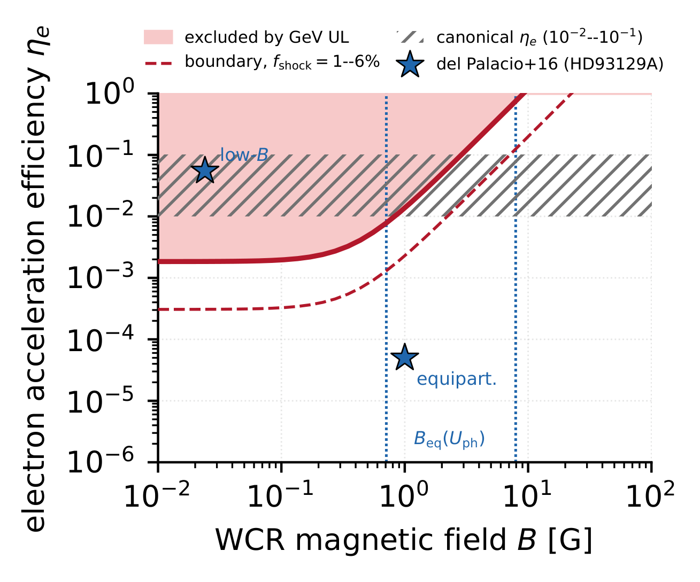<br />
图注：Electron-acceleration efficiency $\eta_e$ versus WCR magnetic field $B$ for a representative CWB at $d=1.7$\,kpc (the sample median, $\eta_e^{\rm max}$ scaling as $d^2$). The shaded region is excluded by the population GeV limit (\(\texttt{naima}\) inverse Compton with the Klein--Nishina cross section, integrated over $>1$\,GeV). The solid and dashed red curves are the boundary for $f_{\rm shock}=1\%$ and $6\%$, the wind-luminosity fraction through the shock to which $\eta_e$ is normalized~\(\cite{delpalacio2016}.\) At the inferred WCR fields ($B\lesssim1$\,G) the limit caps $\eta_e$ at $\sim10^{-3}$. The gray hatched band marks canonical efficiencies ($10^{-2}$--$10^{-1}$), which require $B\gtrsim3$--$7$\,G. Dotted verticals span the magnetic--photon equipartition field $B_{\rm eq}=\sqrt{8\pi U_{\rm ph}}$ (where IC and synchrotron balance) over $U_{\rm ph}=0.02$--$2.5\,\mathrm{erg\, cm^{-3}}$. Stars mark the weak-field and magnetic--thermal equipartition radio solutions of HD\,93129A~\(\cite{delpalacio2016},\) placed at their electron share $\eta_e=f_{\rm NT}/2$ of the quoted non-thermal (electron$+$proton) energy fraction. The weak-field solution lies inside the excluded region, the equipartition solution below it.<br />
对应解读：对应“建议重点查看的图表”第7项单区模型约束图，以及“关键图表逐图导读”图6中关于物理上限、效率上限、磁场和单区逆康普顿模型的讨论。<br />
入选理由：该图把LAT族群通量上限转化为电子加速效率η_e与WCR磁场B的排除区域，并标出磁场-光子能量密度均分范围、典型效率带和HD 93129A模型点。它最能支撑论文从统计上限走向物理解释的结论，即在B较弱时普通碰撞风双星的电子加速效率受到强约束，而较高磁场可削弱GeV逆康普顿限制。<br />
来源与置信度：\(arxiv_source\)；high；\(arxiv_source\) / main.tex:figure[3]</p>
<h4 id="_23">强相关工作</h4>
<p>这篇工作与 \(\eta\) Car 的 Fermi-LAT 探测直接相关：\(\eta\) Car 是同类源中最明确的 GeV 样例，也是判断普通碰撞风双星是否应被 Fermi-LAT 叠加检出的参照物。应检索关键词包括 “eta Carinae Fermi LAT gamma rays”, “colliding wind binaries inverse Compton gamma rays”, “particle accelerating colliding wind binaries catalog”。同一类源方面，还应查找非热射电 PACWB 目录、Wolf-Rayet 双星高能辐射预言、以及 H.E.S.S. 或 NuSTAR 对 \(\eta\) Car 的高能观测。</p>
<p>方法上，本文属于弱源族群叠加和控制场校准问题，与 Fermi-LAT 对星系团、恒星形成星系、暗物质矮星系和未解析源族群的 stacking 分析有共通性，但 Galactic plane 的源混淆更严重。相反观点或张力主要来自早期较乐观的理论预言：如果按 \(\eta\) Car 或高效率逆康普顿模型简单缩放，普通 PACWB 似乎应该更容易在长曝光 LAT 数据中显现；本文的非探测要求降低平均效率、提高磁场或承认 \(\eta\) Car 的特殊性。检索关键词可用 “Fermi LAT stacking Galactic plane source confusion”, “gamma-ray upper limits colliding wind binaries”, “diffuse background systematics Fermi LAT”。</p>
<p><strong>同一事件 / 同类源线索</strong>：</p>
<ul>
<li><a href="https://arxiv.org/abs/2607.05102">https://arxiv.org/abs/2607.05102</a></li>
<li><a href="https://arxiv.org/abs/1008.3235">https://arxiv.org/abs/1008.3235</a></li>
<li><a href="https://arxiv.org/abs/1902.10045">https://arxiv.org/abs/1902.10045</a></li>
</ul>
<p><strong>相似工作</strong>：</p>
<ul>
<li><a href="https://arxiv.org/abs/1008.3235">https://arxiv.org/abs/1008.3235</a></li>
</ul>
<p><strong>基础理论 / 方法工作</strong>：</p>
<ul>
<li><a href="https://arxiv.org/abs/0902.1089">https://arxiv.org/abs/0902.1089</a></li>
<li><a href="https://arxiv.org/abs/1902.10045">https://arxiv.org/abs/1902.10045</a></li>
</ul>
<p><strong>相反观点 / 张力线索</strong>：</p>
<p>（未提供）</p>
</details>
<h3 id="3-neutrinos-from-super-eddington-seyfert-galaxies">3. Neutrinos from super-Eddington Seyfert galaxies</h3>
<ul>
<li>来源：arXiv / astro-ph.HE</li>
<li>链接：https://arxiv.org/abs/2607.03559v1</li>
<li>作者：Lucas M. Pasquevich, Gustavo E. Romero, Matías M. Reynoso</li>
<li>评分：novelty 7/10，importance 8/10，relevance 10/10，final 9.40/10</li>
<li>推荐理由：提出超爱丁顿Seyfert核心作为10–100 TeV隐藏高能中微子源，并讨论IceCube/KM3NeT可探测性及NGC 7469候选事件；与高能中微子、多信使和强子过程高度相关。</li>
</ul>
<p><strong>中文题目</strong>：超爱丁顿赛弗特星系中的中微子</p>
<p><strong>做了什么</strong>：这篇文章提出一个“隐藏中微子源”模型：在超爱丁顿吸积的赛弗特星系核心，黑洞附近的厚盘和强磁场可通过磁重联加速质子，质子再与强辐射场发生光强子相互作用，产生峰值在 \(10\text{--}100\,\mathrm{TeV}\) 的高能中微子。与此同时，盘风和核心区的高光深环境会有效吸收伴随的甚高能 \(\gamma\) 射线，使源在中微子上亮、在 \(\gamma\) 射线上暗。作者还把模型应用到近邻超爱丁顿赛弗特 \(1\) 型星系 NGC 7469，讨论它与已报告的两个候选中微子事件之间的可行联系。</p>
<p><strong>为什么重要</strong>：IceCube 已经把若干活动星系核，特别是赛弗特星系，推到高能中微子源候选名单上，但一个核心困难是：若强子过程足够强，为什么没有相应强的甚高能 \(\gamma\) 射线信号？本文的重要性在于，它把超爱丁顿吸积、磁重联加速、光强子产中微子和盘风吸收 \(\gamma\) 射线放进同一个物理图像中，给出了一个可解释“中微子亮而 \(\gamma\) 射线暗”的具体机制。</p>
<p><strong>理论 / 观测 / 仪器方法价值</strong>：对理论而言，本文扩展了非喷流型活动星系核作为中微子源的建模空间，强调厚盘内区和辐射驱动风的作用，而不是只依赖相对论喷流。对观测而言，它给出 \(10\text{--}100\,\mathrm{TeV}\) 能段、近邻超爱丁顿赛弗特星系、弱 \(\gamma\) 射线对应体这几个筛选条件，有助于 IceCube、KM3NeT 与多波段巡天联合选源。对方法而言，它展示了如何把吸积流结构、粒子输运、光强子相互作用和内部吸收耦合起来估计可探测中微子通量。</p>
<p><strong>为什么应该关注</strong>：如果这个图像成立，下一批可信的星系外中微子源未必都是耀变体或强喷流源，而可能是一类在电磁波上并不显眼、但正经历强吸积的近邻赛弗特核心。它还提醒我们：寻找中微子对应体时，缺少 \(\gamma\) 射线并不必然排除强子源，反而可能是源内高光深环境的特征。NGC 7469 这类对象因此值得在时间相关、多信使和吸积态变化的框架下重新检查。</p>
<details class="paper-detail">
<summary>展开详细解读：文章讲解、背景、理论、重点章节、图表与相关工作</summary>
<h4 id="_24">文章详细讲解</h4>
<p>科学问题：本文要解决的是高能中微子天文学中的一个关键矛盾：活动星系核核心区有足够的辐射密度和物质密度来产生中微子，但同一批强子相互作用通常也会产生 \(\gamma\) 射线级联；如果 \(\gamma\) 射线逃逸，我们应在费米或切伦科夫望远镜中看到强对应体。赛弗特星系，特别是非强喷流或弱喷流赛弗特星系，近年来被频繁讨论为 IceCube 中微子的可能来源，因此需要一个能够同时解释中微子产额和 \(\gamma\) 射线缺失的源内模型。</p>
<p>作者怎么做：作者考虑超爱丁顿吸积状态下的活动星系核。其基本图像是，当吸积率超过爱丁顿量级时，内盘变得几何厚、光学厚，并在临界半径内形成强辐射场和强磁场；同时，辐射压从盘面驱动出高密度盘风。作者假设在黑洞附近一个受磁场约束的紧致区域内，磁重联可把部分磁能转化为非热粒子能量，尤其加速相对论质子。随后质子与盘光子场发生 \(p\gamma\) 相互作用，经由介子衰变产生中微子。</p>
<p>关键结果：模型预期中微子谱在 \(10\text{--}100\,\mathrm{TeV}\) 附近达到主要贡献，这正落在 IceCube 对近邻点源和级联事件较敏感的能段。强盘风和厚盘辐射场会使伴随的高能 \(\gamma\) 射线在源内通过 \(\gamma\gamma\) 吸收和后续电磁级联被压低，因此外部观测者看到的是一个“隐藏”的强子源。作者把该模型用于 NGC 7469，后者是近邻超爱丁顿赛弗特 \(1\) 型星系，并且有两个被讨论过的中微子事件作为动机性案例；他们认为在合理参数下，该源可以给出当前探测器可能触及的中微子通量。</p>
<p>局限和下一步：本文的结论依赖若干核心假设，包括磁重联区大小、磁场强度、非热质子注入功率、超爱丁顿盘风的密度和几何覆盖因子，以及源内级联的处理方式。NGC 7469 的两个中微子事件不能单独构成稳固关联；要把该模型从“可行解释”推进到“优选解释”，需要更大的样本、时间相关分析、吸积态监测以及对候选赛弗特样本的堆叠检验。下一步尤其应比较超爱丁顿与亚爱丁顿赛弗特在中微子事件方向、时间和能量分布上的差异。</p>
<h4 id="_25">关键结果是怎么做出来的</h4>
<p>本文最重要的证据链不是报告新的中微子探测，而是建立一个可与 IceCube 和 KM3NeT 灵敏度比较的物理模型，并用 NGC 7469 作代表性标定。样本选择上，作者聚焦于超爱丁顿赛弗特星系这一类对象，而不是全体活动星系核；原因是超爱丁顿态自然提供厚盘、强辐射场、强磁场和盘风四个要素。NGC 7469 被选为个案，是因为它近邻、属于赛弗特 \(1\) 型、被认为处于高吸积状态，并且已有两个与其方向或时间窗口相关的候选中微子事件被讨论。</p>
<p>事件数方面，文章并不把两个事件当作发现显著性，而是把它们作为模型动机和归一化可行性检验。读者应注意：两个候选事件本身很容易受大气背景、角分辨率、试验因子和源样本后验选择影响；本文的核心主张是“在这样的物理条件下可产生足够中微子且 \(\gamma\) 射线被隐藏”，而不是“NGC 7469 已被确认是中微子源”。因此，对该论文的阅读应重点看模型通量是否落在当前探测器可检范围，以及是否违反多波段上限。</p>
<p>统计和模型比较层面，作者通常需要把源的中微子能谱转换为探测器期望事件数，即通过有效面积、曝光时间和能量响应积分得到 \(N_\nu\)。如果模型给出的 \(N_\nu\) 在合理曝光下达到 \(\mathcal{O}(1)\) 而同时 \(\gamma\) 射线通量低于观测上限，那么模型即通过第一层可行性检验。严格显著性仍需要未分箱似然、方向误差、能量代理和时间窗口联合分析，本文更多是在物理模型层面说明这种源类值得纳入候选。</p>
<p>支撑结论的关键图表应包括：超爱丁顿盘结构和磁重联区示意；加速、冷却和逃逸时间尺度随粒子能量的比较；质子、中微子和 \(\gamma\) 射线谱能量分布；源内 \(\gamma\gamma\) 光深或盘风吸收效率；以及 NGC 7469 的模型通量与 IceCube、KM3NeT 灵敏度或候选事件能量区间的比较。若这些图显示质子最大能量足够高、\(p\gamma\) 效率接近有效、\(\gamma\) 射线被强烈衰减且中微子谱峰位于 \(10\text{--}100\,\mathrm{TeV}\)，则论文的主链条成立。</p>
<p>主要系统误差来自源内环境参数。磁场强度提高会增强加速能力，但也改变次级粒子的同步辐射损失；辐射场密度提高会增强 \(p\gamma\) 产额，也会增强 \(\gamma\gamma\) 吸收；风的柱密度和覆盖因子决定隐藏程度，但实际几何可能强烈非球对称。稳健性检验应关注作者是否扫描了吸积率、黑洞质量、重联区半径、非热功率分数和视线吸收参数，而不是只给出单一“最佳模型”。</p>
<details class="paper-subdetail">
<summary>展开背景、理论、公式、模型、章节和图表导读</summary>
<h4 id="_26">背景知识</h4>
<p>研究对象是赛弗特星系中的超大质量黑洞吸积系统。赛弗特星系通常比耀变体喷流弱得多，但核心区有强紫外、软 \(X\) 射线和硬 \(X\) 射线辐射场。过去高能中微子源研究更偏向耀变体，因为相对论喷流能自然加速粒子并降低能量预算压力；然而 IceCube 的一些结果，尤其是与非耀变体活动星系核的可能联系，使人们重新考虑“核心驱动”的中微子产生。</p>
<p>历史问题是中微子和 \(\gamma\) 射线的伴生关系。在强子相互作用中，带电介子衰变给出中微子，中性介子衰变给出 \(\gamma\) 射线。若源对 \(\gamma\) 射线透明，那么中微子源往往也应是 \(\gamma\) 射线源；但许多候选赛弗特没有相应强的 GeV 到 TeV 信号。这促成了“隐藏源”概念：高能 \(\gamma\) 射线在源内被吸收并级联到较低能段，而中微子几乎无相互作用地逃逸。</p>
<p>超爱丁顿吸积为这个问题提供了新条件。当吸积率达到或超过爱丁顿量级，标准薄盘近似失效，辐射压力、平流冷却、厚盘几何和强盘风变得重要。内区光子密度大幅提高，利于 \(p\gamma\) 过程；盘风的高柱密度和厚盘的强辐射场又会让 \(\gamma\) 射线难以逃逸。这正是本文把超爱丁顿赛弗特和隐藏中微子源联系起来的背景。</p>
<p>为什么现在值得重新看？一方面，IceCube 已积累十年以上数据，点源、堆叠和时间相关分析开始对近邻活动星系核给出有意义约束；另一方面，KM3NeT 对南北天区和中高能中微子的补充将改变源类检验能力。多波段监测也能更好地识别吸积爆发、红外回声、\(X\) 射线冠状区变化和盘风迹象，使“中微子是否在强吸积阶段出现”成为可检验问题。</p>
<p>常见误区有三点。第一，认为没有 TeV \(\gamma\) 射线就没有强子过程；对隐藏源来说恰恰相反，高 \(\gamma\gamma\) 光深是中微子产生区接近致密辐射场的证据。第二，认为所有活动星系核中微子都必须来自喷流；本文强调非喷流或弱喷流核心也可能有效。第三，把少数方向重合事件当成源确认；实际上，单源确认需要严格的背景估计、试验因子控制和可重复的时间或能谱证据。</p>
<h4 id="_27">基础理论 / 方法脉络</h4>
<p>基础物理图像从爱丁顿极限开始。黑洞吸积释放引力能，辐射压会对电离气体施加向外力；当辐射力接近引力时，系统进入爱丁顿量级。若供给率继续增加，吸积流不一定简单地把所有能量辐射出去，而可能形成几何厚、光学厚、带强风的超爱丁顿结构。这样的结构在黑洞附近提供高磁能密度、高光子密度和高物质柱密度。</p>
<p>粒子加速方面，本文采用磁重联而非经典激波作为核心机制。磁重联发生在反向磁通相遇并重排的区域，磁能可快速转化为粒子非热能。若重联区靠近超大质量黑洞，尺度可用若干引力半径表征，磁场强度由吸积功率和磁压约束估计。质子被加速后，其最大能量由加速时间与冷却或逃逸时间的交点决定。</p>
<p>中微子产生主要来自 \(p\gamma\) 相互作用。高能质子与紫外或 \(X\) 射线光子碰撞，超过光介子产生阈值后形成 \(\Delta\) 共振或多介子末态；带电介子链式衰变产生 \(\nu_\mu\)、\(\bar\nu_\mu\) 和 \(\nu_e\)，长距离振荡后到达地球时味比接近 \(1:1:1\)。目标光子能量越高，达到阈值所需的质子能量越低，因此活动星系核内区的紫外到软 \(X\) 射线场自然对应 \(10\text{--}100\,\mathrm{TeV}\) 中微子。</p>
<p>\(\gamma\) 射线隐藏依赖 \(\gamma\gamma\) 吸收和盘风吸收。中性介子产生的高能 \(\gamma\) 射线会与同一辐射场中的低能光子湮灭成 \(e^+e^-\) 对，随后通过同步辐射和逆康普顿形成级联。若光深很大，原始 TeV 到 PeV \(\gamma\) 射线不能直接逃逸，能量被重分配到较低能段或被风吸收再热化。这使多信使约束必须同时看中微子、\(X\) 射线、MeV 到 GeV 背景以及红外再处理辐射。</p>
<p>主要退化关系包括：非热质子功率与 \(p\gamma\) 效率之间的退化，磁场强度与最大能量之间的退化，盘风柱密度与外逃 \(\gamma\) 射线通量之间的退化，以及源距离与本征 luminosity 的退化。观测上还存在方向误差、时间窗口选择、候选源后验挑选和探测器有效面积随赤纬变化等系统效应。</p>
<h4 id="_28">公式与推导</h4>
<p>第一步是给出爱丁顿标尺。对黑洞质量 \(M_\bullet\)，电子散射不透明度 \(\kappa_{\rm es}\) 下的爱丁顿光度为</p>
<div class="math-display">\[L_{\rm Edd}=\frac{4\pi G M_\bullet c}{\kappa_{\rm es}} .\]</div>
<p>这里 \(G\) 是引力常数，\(c\) 是光速。超爱丁顿状态通常用无量纲吸积率 \(\dot m\) 描述：</p>
<div class="math-display">\[\dot m=\frac{\dot M c^2}{L_{\rm Edd}} .\]</div>
<p>当 \(\dot m\gtrsim 1\) 时，薄盘近似不再可靠，厚盘、平流和风变得重要。</p>
<p>第二步是把吸积功率连接到内区磁场。若半径 \(R\) 处磁能密度占局部能量密度的一部分，可用数量级关系写成</p>
<div class="math-display">\[\frac{B^2}{8\pi}\simeq \epsilon_B\frac{L_{\rm acc}}{4\pi R^2 c} .\]</div>
<p>其中 \(B\) 是磁场，\(\epsilon_B\) 是磁能分数，\(L_{\rm acc}\) 是吸积释放功率。这个式子给出磁重联区可用能量的估计。</p>
<p>第三步是质子加速时间。若加速效率参数为 \(\eta_{\rm acc}\)，质子能量为 \(E_p\)，则</p>
<div class="math-display">\[t_{\rm acc}\simeq \eta_{\rm acc}\frac{E_p}{eBc} .\]</div>
<p>这里 \(e\) 是元电荷。较强的 \(B\) 和较小的 \(\eta_{\rm acc}\) 允许质子达到更高能量。</p>
<p>第四步是光强子相互作用阈值。近似 \(\Delta\) 共振条件可写为</p>
<div class="math-display">\[E_p\,\varepsilon_\gamma \gtrsim 0.3\,\mathrm{GeV^2}\,\Gamma_{
m rel}^2 ,\]</div>
<p>其中 \(\varepsilon_\gamma\) 是目标光子能量，\(\Gamma_{}\)<br />
m rel}) 表示相对运动的洛伦兹因子；对非喷流核心可近似取 (\Gamma_{<br />
m rel}\(\sim\) 1)。这说明软 \(X\) 射线或紫外光子可把中微子峰推到十 TeV 量级。</p>
<p>第五步是 \(p\gamma\) 冷却率。对光子数密度谱 \(n_\gamma(\varepsilon)\)，可用简化形式表示为</p>
<div class="math-display">\[t_{p\gamma}^{-1}\simeq c\int d\varepsilon\, n_\gamma(\varepsilon)\,\sigma_{p\gamma}(\varepsilon_r)\,K_{p\gamma}(\varepsilon_r) .\]</div>
<p>其中 \(\sigma_{p\gamma}\) 是截面，\(K_{p\gamma}\) 是非弹性系数，\(\varepsilon_r\) 是质子静止系中的光子能量。该式决定有多少质子能量转入介子。</p>
<p>第六步是中微子能量与质子能量的映射。单个中微子通常携带母质子能量的几个百分点，因此</p>
<div class="math-display">\[E_\nu \simeq 0.05 E_p .\]</div>
<p>这条比例把最大质子能量和目标光子场直接转换为可观测中微子谱峰。</p>
<p>第七步是源内 \(\gamma\gamma\) 吸收。高能光子能量为 \(E_\gamma\) 时，沿路径 \(l\) 的光深近似为</p>
<div class="math-display">\[\tau_{\gamma\gamma}(E_\gamma)=\int dl\int d\varepsilon\, n_\gamma(\varepsilon,l)\,\sigma_{\gamma\gamma}(E_\gamma,\varepsilon) .\]</div>
<p>若 \(\tau_{\gamma\gamma}\gg 1\)，原始 \(\gamma\) 射线通量会按</p>
<div class="math-display">\[F_{\gamma,\rm esc}(E_\gamma)=F_{\gamma,0}(E_\gamma)\exp[-\tau_{\gamma\gamma}(E_\gamma)]\]</div>
<p>被强烈压低，这就是隐藏源的核心诊断。</p>
<p>第八步是把源 luminosity 转换为地球通量。对 luminosity 距离 \(d_L\)，中微子能量通量满足</p>
<div class="math-display">\[E_\nu^2\Phi_\nu(E_\nu)=\frac{E_\nu^2 Q_\nu(E_\nu)}{4\pi d_L^2} .\]</div>
<p>其中 \(Q_\nu\) 是源的中微子产生率谱。这个量可直接与 IceCube 或 KM3NeT 的灵敏度曲线比较。</p>
<p>第九步是期望探测事件数。给定有效面积 \(A_{\rm eff}(E_\nu,\delta)\)、曝光时间 \(T\) 和源赤纬 \(\delta\)，</p>
<div class="math-display">\[N_\nu=T\int dE_\nu\,\Phi_\nu(E_\nu)A_{\rm eff}(E_\nu,\delta) .\]</div>
<p>若模型给出 \(N_\nu\sim 1\) 且不违反电磁上限，它就可解释少数候选事件；若要声称发现，还需与背景期望和试验因子一起进入似然分析。</p>
<h4 id="_29">模型拟合 / 应用方法</h4>
<p>这类模型拟合的核心量包括黑洞质量、吸积率、重联区半径、磁场强度、非热质子注入谱指数、质子最大能量、质子总功率、目标光子场谱以及盘风柱密度。本文对 NGC 7469 的应用本质上是用观测到的活动星系核参数约束这些量的合理范围，再计算中微子和 \(γ\) 射线输出是否与候选事件和电磁约束相容。</p>
<p>似然层面，若有事件级数据，理想做法是构造包含方向、能量代理和时间的未分箱似然。信号项来自模型预测的 \(\Phi_\nu(E_\nu)\) 与探测器点扩散函数，背景项来自大气中微子和误重建大气缪子。本文更偏理论模型，因此重点通常是把通量与灵敏度或期望事件数比较；读者应区分这种可行性比较和严格源关联显著性。</p>
<p>残差诊断不能只看中微子。一个强子模型若提高质子功率来匹配中微子，通常也会提高电磁级联功率；若 \(\gamma\gamma\) 光深或盘风吸收不够，就会超出 Fermi、Swift、NuSTAR 或地面切伦科夫望远镜的上限。因此拟合时必须同时检查外逃 \(\gamma\) 射线、软 \(X\) 射线再处理、红外辐射和总能量预算。</p>
<p>主要退化关系很强。更高的目标光子密度可以用更低的质子功率产生同样中微子通量，但也更强地吸收 \(γ\) 射线并改变级联谱；更强的磁场提高最大质子能量，却可能使介子和缪子在衰变前同步冷却，压低高能中微子；更大的风覆盖因子能隐藏 \(\gamma\) 射线，但如果过大也会改变观测到的赛弗特类型和 \(X\) 射线吸收特征。</p>
<p>模型可能失败的场景包括：真实超爱丁顿阶段持续时间太短，无法提供足够曝光；磁重联加速效率不足，质子达不到所需能量；盘风几何使我们的视线并不经过高吸收区，从而应看到被观测排除的 \(\gamma\) 射线；或者候选中微子事件只是背景涨落。实际应用上，最有力的检验将是对超爱丁顿赛弗特样本进行预先定义的堆叠分析，并与吸积率、\(X\) 射线遮蔽和红外风迹象做相关性检验。</p>
<h4 id="_30">重点章节 / 结果段落怎么读</h4>
<p>数据和对象选择部分应首先看作者如何定义“超爱丁顿赛弗特”。关键不是标签，而是他们采用了哪些黑洞质量、bolometric luminosity、吸积率和盘风证据。对 NGC 7469，应特别检查距离、黑洞质量、爱丁顿比和候选中微子事件的来源是否清楚区分为观测事实、文献推断和模型假设。</p>
<p>物理模型部分是论文核心。读者应按顺序检查超爱丁顿盘结构、磁重联区设置、粒子注入谱、加速与冷却过程、\(p\gamma\) 相互作用以及 \(\gamma\gamma\) 吸收。这里最重要的是参数是否在活动星系核核心的合理范围内，而不是单一拟合曲线是否漂亮。</p>
<p>结果部分应重点读时间尺度图和谱能量分布图。时间尺度图决定质子是否能加速到产生 \(10\text{--}100\,\mathrm{TeV}\) 中微子的能量；谱图决定中微子通量是否接近探测器灵敏度，同时 \(\gamma\) 射线是否被压到电磁观测上限以下。</p>
<p>NGC 7469 应用部分要特别谨慎。这里的价值是案例研究，不应过度解读为源确认。读者应看作者是否给出期望事件数、与两个候选事件能量范围的对应、以及与 IceCube 或 KM3NeT 点源灵敏度的比较。</p>
<p>讨论和稳健性部分应检查模型对吸积率、磁场、非热功率和风吸收的敏感性。若结论只在极窄参数空间成立，说明它更像调参解释；若在一组合理超爱丁顿参数下都能给出可观中微子并隐藏 \(\gamma\) 射线，则源类假说更有价值。</p>
<h4 id="_31">建议重点查看的图表</h4>
<ol>
<li>
<p>超爱丁顿盘、磁重联区和盘风的几何示意：看中微子产生区、\(\gamma\) 射线吸收区和观测视线之间的相对位置，确认“隐藏”是否来自源内环境而非人为遮挡。</p>
</li>
<li>
<p>加速、冷却和逃逸时间尺度图：看 \(t_{\rm acc}\)、\(t_{p\gamma}\)、同步冷却时间和逃逸时间的交点；质子最大能量是否足以产生 \(10\text{--}100\,\mathrm{TeV}\) 中微子是关键。</p>
</li>
<li>
<p>目标光子场谱或能量密度图：看紫外、软 \(X\) 射线和硬 \(X\) 射线成分如何设定 \(p\gamma\) 阈值和效率，注意是否采用过高的内区光子密度。</p>
</li>
<li>
<p>中微子谱能量分布：看 \(E_\nu^2\Phi_\nu\) 的峰值、谱宽和与 IceCube/KM3NeT 灵敏度的相对位置，而不只是峰值是否“接近”。</p>
</li>
<li>
<p>逃逸 \(\gamma\) 射线谱与观测上限：看吸收前后曲线差异，确认未吸收强子 \(\gamma\) 射线是否会违反 Fermi 或 TeV 上限。</p>
</li>
<li>
<p>NGC 7469 案例参数表：检查黑洞质量、距离、爱丁顿比、磁场、非热功率分数和风柱密度是否来自观测约束或合理推断。</p>
</li>
<li>
<p>期望事件数或探测器灵敏度比较：看积分能段、有效面积、曝光时间和源赤纬是否与所用探测器匹配。</p>
</li>
</ol>
<h4 id="_32">关键图表逐图导读</h4>
<p>图 1：若论文给出源区示意图，横向或径向坐标通常表示距离黑洞的尺度，常以引力半径为单位；图中应标出厚盘、磁重联区、辐射驱动风和外逃方向。读图时要判断中微子产生区是否处在高光子密度区内，以及 \(\gamma\) 射线路径是否穿过高光深风区。陷阱是把示意图当成唯一几何，实际盘风很可能非轴对称且随时间变化。</p>
<p>图 2：时间尺度图通常以粒子能量为横轴、时间为纵轴，显示 \(t_{\rm acc}\)、\(t_{p\gamma}\)、同步损失、绝热损失和逃逸时间。质子最大能量由 \(t_{\rm acc}\) 与最快损失或逃逸曲线交点决定。若交点太低，则无法解释十 TeV 以上中微子；若同步损失主导过强，还要检查次级介子和缪子的冷却是否改变中微子谱。</p>
<p>图 3：粒子分布或注入谱图可能展示质子、电子或次级粒子的稳态谱。横轴多为能量，纵轴为 \(E^2N(E)\) 或类似量。应看质子谱是否在 \(p\gamma\) 阈值以上仍有足够能量密度，并注意谱指数和截止能量是否由物理过程决定，还是主要由人为选择。</p>
<p>图 4：中微子和 \(\gamma\) 射线谱能量分布图最直接支撑论文结论。横轴为能量，纵轴为能量通量，例如 \(E^2\Phi\)。模型线应包括中微子谱、未吸收 \(\gamma\) 射线和吸收后 \(\gamma\) 射线；观测点或上限可能来自 Fermi、\(X\) 射线或 TeV 仪器。读图陷阱是只看中微子峰值而忽略级联后电磁能量是否转移到已被观测约束的能段。</p>
<p>图 5：若有 NGC 7469 的专门图，通常会把模型通量与 IceCube 或 KM3NeT 灵敏度、候选事件能量范围放在一起。读者应检查灵敏度曲线对应的曝光年限、置信水平和源赤纬。若模型只略高于灵敏度，两个候选事件仍可能只是统计涨落；若模型在较宽参数范围内给出 \(N_\nu\sim 1\)，则作为候选源更有说服力。</p>
<p>图 6：若有参数扫描或稳健性图，横轴和纵轴可能是吸积率、磁场、非热功率或风柱密度，颜色表示中微子通量或 \(\gamma\) 射线光深。应优先看允许区是否同时满足中微子可探测和电磁不超限两个条件。若允许区极窄，模型预测性较弱；若允许区对应独立观测支持的超爱丁顿参数，则论文结论更稳健。</p>
</details>
<h4 id="_33">论文原图 / 可嵌入图片</h4>
<p><strong>Fig03</strong><br />
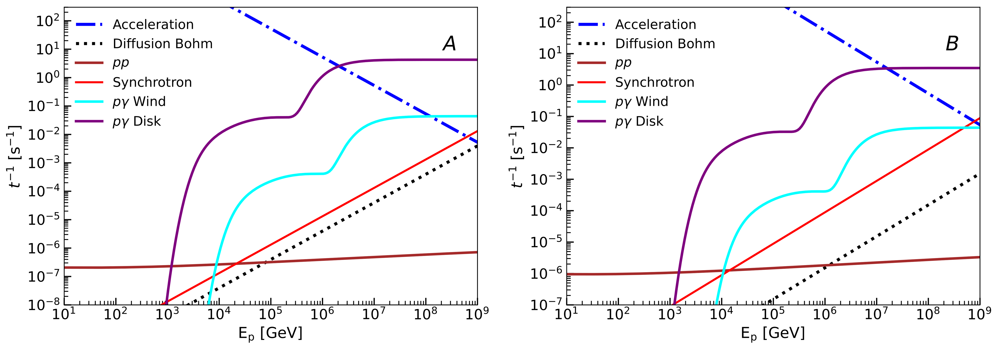<br />
图注：Acceleration, cooling, and diffusion rates for primary protons. At low energies, $pp$ interactions dominate the cooling, while above $\sim$TeV energies $p\gamma$ interactions become the main loss channel. The maximum proton energy reaches $\sim 1$ PeV in model A and $\sim 10$ PeV in model B.<br />
对应解读：对应“建议重点查看的图表”第2项和“关键图表逐图导读”图2：质子加速、冷却和扩散/逃逸时间尺度。<br />
入选理由：该图直接给出主导中微子产生的质子能否被加速到足够高能的核心诊断量，包含加速率、冷却率和扩散率，并明确显示高能端由pγ相互作用主导以及模型A、B的最大质子能量约为1 PeV和10 PeV。它最能检验10--100 TeV中微子峰值是否物理可行。<br />
来源与置信度：\(arxiv_source\)；high；\(arxiv_source\) / main.tex:figure[3]</p>
<p><strong>Fig11</strong><br />
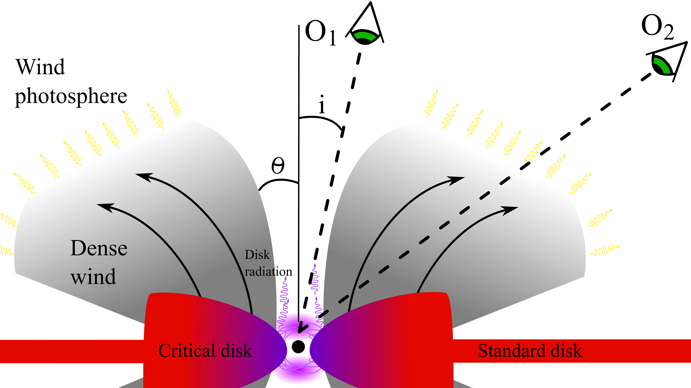<br />
图注：Schematic view of the environment around a super-Eddington AGN. The magnetically confined region is located in the immediate vicinity of the SMBH, where the inner disk provides an intense radiation field. The surrounding wind forms the dense walls of a funnel and can absorb high-energy radiation through both $\gamma\gamma$ interactions with the disk and wind photon fields and $\gamma N$ interactions with the outflowing matter. Depending on the inclination angle, the observer may directly view the inner disk through the funnel (observer $O_1$) or detect only reprocessed emission (observer $O_2$). Not to scale.<br />
对应解读：对应“建议重点查看的图表”第1项和“关键图表逐图导读”图1：超爱丁顿AGN源区几何示意。<br />
入选理由：该图清楚标出磁约束加速区、内盘强辐射场、盘风漏斗壁、不同观测视线以及γγ和γN吸收路径，是理解本文“隐藏中微子源”机制的关键。它能直接支撑日报中关于中微子产生区与γ射线吸收区相对位置的解读。<br />
来源与置信度：\(arxiv_source\)；high；\(arxiv_source\) / main.tex:figure[11]</p>
<p><strong>Fig12</strong><br />
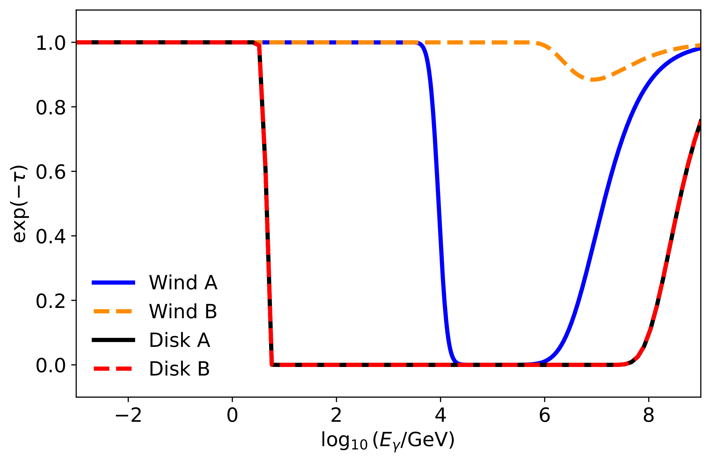<br />
图注：Attenuation factor $\exp(-\tau_{\gamma\gamma})$ produced by $\gamma\gamma$ absorption in the thermal radiation fields of the wind photosphere and the inner disk, for models $A$ and $B$.<br />
对应解读：对应“建议重点查看的图表”第5项和模型拟合段落中关于外逃γ射线、源内吸收和电磁约束的讨论。<br />
入选理由：该图给出γγ吸收的衰减因子exp(-τγγ)，直接量化高能γ射线在风光球和内盘热辐射场中的隐藏程度。相比一般粒子分布图，它更直接检验强子伴随γ射线是否会被充分压低，从而避免违反Fermi或TeV观测上限。<br />
来源与置信度：\(arxiv_source\)；high；\(arxiv_source\) / main.tex:figure[12]</p>
<p><strong>Fig01</strong><br />
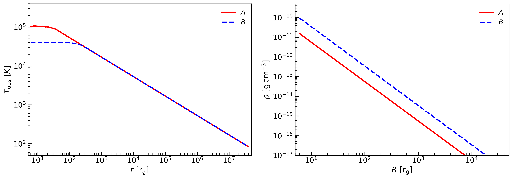<br />
图注：Wind temperature in the photosphere as a function of disk radius in $r_{\rm g}$ (left) and wind mass density as a function of radius from the center of the system in units of $r_{\rm g}$ (right).<br />
对应解读：对应“建议重点查看的图表”第3项以及第6项中关于盘风温度、密度、风柱密度和目标环境合理性的检查。<br />
入选理由：该图展示风光球温度随盘半径变化以及风质量密度随系统半径变化，是判断目标光子场、风吸收环境和γ射线遮蔽能力的重要基础。它虽然不是中微子谱图，但为后续γγ吸收和γN吸收的物理条件提供直接输入。<br />
来源与置信度：\(arxiv_source\)；high；\(arxiv_source\) / main.tex:figure[1]</p>
<p><strong>Fig06</strong><br />
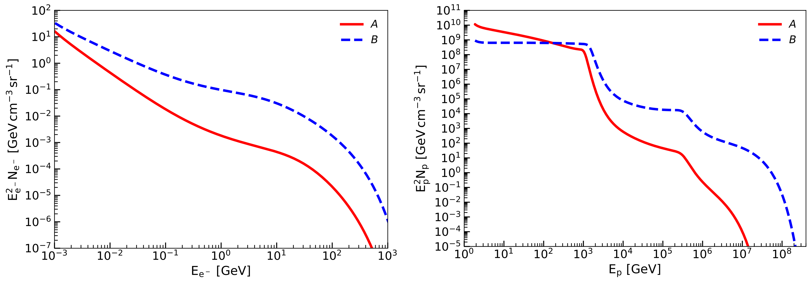<br />
图注：Steady-state distributions of primary electrons and protons.<br />
对应解读：对应“关键图表逐图导读”图3： primary electrons and protons 的稳态粒子分布。<br />
入选理由：该图展示初级电子和质子的稳态分布，可用于检查质子谱在pγ阈值以上是否仍有足够能量密度，以及模型A、B中非热粒子注入和冷却后的结果。它对理解中微子产额和电磁级联功率的共同来源很有帮助。<br />
来源与置信度：\(arxiv_source\)；high；\(arxiv_source\) / main.tex:figure[6]</p>
<p><strong>Fig08</strong><br />
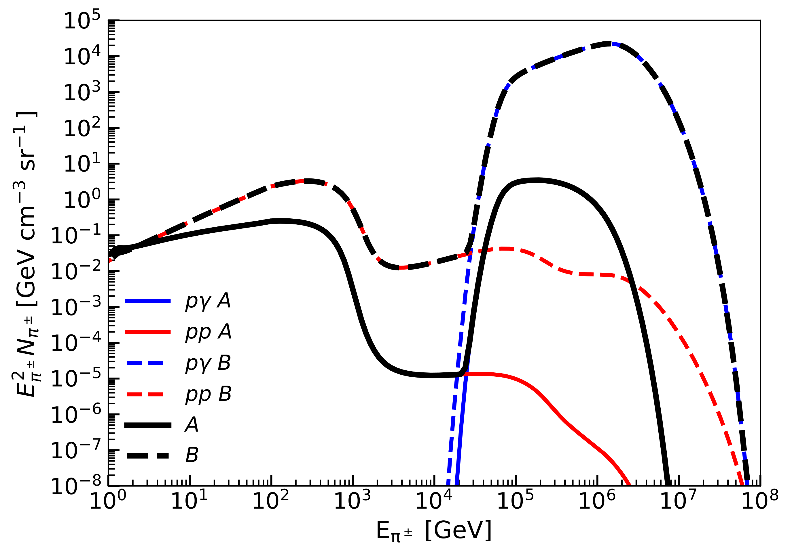<br />
图注：Steady-state distributions of charged pions produced through $pp$ interactions (red lines) and $p\gamma$ interactions (blue lines), for model A (solid lines) and model B (dashed lines). The total distribution is shown in black in each case.<br />
对应解读：对应“关键图表逐图导读”中关于次级粒子分布和中微子产生通道的讨论，尤其是pp与pγ产生的带电 pion 分布。<br />
入选理由：带电π介子是中微子产生的直接母粒子，该图区分pp和pγ通道并比较模型A、B，有助于判断本文声称高能端由pγ主导是否反映到中微子母粒子分布中。它比电子冷却图更直接连接到中微子谱形成。<br />
来源与置信度：\(arxiv_source\)；high；\(arxiv_source\) / main.tex:figure[8]</p>
<h4 id="_34">强相关工作</h4>
<p>同类研究首先包括 IceCube 对非耀变体活动星系核的点源和堆叠结果，尤其是 NGC 1068 的高能中微子证据。NGC 1068 与本文中的超爱丁顿赛弗特图像并非同一事件或同一源，但属于同类“核心隐藏中微子源”问题：中微子信号可能来自致密活动星系核环境，而 \(\gamma\) 射线被源内吸收。可检索关键词包括 “IceCube NGC 1068 neutrino”, “Seyfert hidden neutrino source”, “AGN corona neutrino”, “choked gamma-ray AGN neutrino”。</p>
<p>基础理论方面，应把本文放在标准薄盘、超爱丁顿吸积、磁重联加速和 \(p\gamma\) 中微子产生的交叉点上理解。与耀变体模型相比，本文不依赖强多普勒增亮；与星暴星系模型相比，它把能量释放集中在黑洞几到几十个引力半径附近。可检索关键词包括 “super-Eddington accretion disk wind”, “magnetic reconnection particle acceleration AGN”, “photomeson neutrino production AGN core”。</p>
<p>可能的相反观点或张力来自两方面。第一，候选中微子事件数少，方向关联容易受试验因子影响，NGC 7469 目前不能被视为确认源。第二，若把强子功率调得太高，电磁级联、\(X\) 射线辐射或总能量预算可能与观测冲突。因此后续工作需要预注册样本、统一背景估计和多波段能量闭合检验。</p>
<p><strong>同一事件 / 同类源线索</strong>：</p>
<ul>
<li><a href="https://arxiv.org/abs/2607.03559">https://arxiv.org/abs/2607.03559</a></li>
</ul>
<p><strong>相似工作</strong>：</p>
<ul>
<li><a href="https://arxiv.org/abs/2211.09972">https://arxiv.org/abs/2211.09972</a></li>
<li><a href="https://arxiv.org/abs/1807.08816">https://arxiv.org/abs/1807.08816</a></li>
</ul>
<p><strong>基础理论 / 方法工作</strong>：</p>
<ul>
<li><a href="https://ui.adsabs.harvard.edu/abs/1973A%26A....24..337S/abstract">https://ui.adsabs.harvard.edu/abs/1973A%26A....24..337S/abstract</a></li>
<li><a href="https://arxiv.org/abs/1311.5238">https://arxiv.org/abs/1311.5238</a></li>
</ul>
<p><strong>相反观点 / 张力线索</strong>：</p>
<p>（未提供）</p>
</details>
<h3 id="4-multiwavelength-properties-of-short-gamma-ray-bursts-with-extended-emission-observed-by-swift">4. Multiwavelength properties of short gamma ray bursts with extended emission observed by Swift</h3>
<ul>
<li>来源：arXiv / astro-ph.HE</li>
<li>链接：https://arxiv.org/abs/2607.03541v1</li>
<li>作者：M. M. Dinatolo, A. Mei, R. Brivio, M. Ferro, M. G. Bernardini, P. D'Avanzo, S. Belova, S. Campana</li>
<li>评分：novelty 7/10，importance 8/10，relevance 10/10，final 9.40/10</li>
<li>推荐理由：Swift/Fermi/Konus样本系统研究带扩展发射短GRB的prompt与X射线余辉性质，明确其与标准短/长GRB的关系；GRB为最高优先级高能主题，值得阅读。</li>
</ul>
<p><strong>中文题目</strong>：Swift 观测的带延展辐射短伽马暴的多波段性质</p>
<p><strong>做了什么</strong>：这篇文章系统分析了 Swift 样本中带延展辐射的短伽马暴，即先有一个短而硬的初始脉冲，随后接一个更长、更软的延展辐射成分的事件。作者把这些事件拆成初始脉冲和延展辐射两部分，用 Swift/BAT、Fermi/GBM、Konus-WIND 的 prompt 数据以及 Swift/XRT 的 X 射线余辉，分别与普通短暴和长暴样本比较。核心结论是：这类事件不是简单介于短暴和长暴之间的“中间类”；它们的初始脉冲在能谱能量平面上更像短暴，延展辐射虽然持续时间长但太暗，不能简单当作长暴尾巴；X 射线早期余辉更亮、更复杂，可能直接受到延展辐射或中心引擎持续活动影响，而晚期又回到类似普通短暴的行为。</p>
<p><strong>为什么重要</strong>：短暴是否来自致密双星并合、长暴是否来自大质量星坍缩，是高能时域天文学的基本分类框架。带延展辐射短暴挑战了这个框架：它们按总持续时间可被归为长暴，但初始硬脉冲和零谱延迟又像短暴。本文的重要性在于它不是只看一个指标，如 \(T_{90}\) 或硬度，而是把 prompt 和余辉分开、多样本比较，直接检验“短暴加长尾”“长暴特殊子类”或“独立族群”这些解释。</p>
<p><strong>理论 / 观测 / 仪器方法价值</strong>：对理论而言，结果支持一个需要持续能量注入的并合后中心引擎图像，例如长寿命磁星、黑洞吸积盘尾部活动或并合抛射物相关辐射，而不是简单用坍缩星长暴模型解释。对观测而言，文章强调分类不能只依赖 \(T_{90}\)、硬度比或单一探测器触发持续时间；对方法而言，它展示了如何把 flux-limited、redshift-complete 样本、prompt 分段谱分析、谱延迟和 XRT 断裂拟合放在同一证据链中。</p>
<p><strong>为什么应该关注</strong>：如果你关心引力波电磁对应体、短暴中心引擎寿命、并合后喷流结构或未来高能监测任务的触发策略，这类事件很关键。它们可能代表并合事件中最容易暴露中心引擎持续活动的一类，也可能影响我们用伽马暴分类推断 progenitor、红移分布、喷流能量和 kilonova 伴随率的方式。</p>
<details class="paper-detail">
<summary>展开详细解读：文章讲解、背景、理论、重点章节、图表与相关工作</summary>
<h4 id="_35">文章详细讲解</h4>
<p>科学问题：短伽马暴带延展辐射事件的难点在于，观测形态本身是混合的。初始脉冲短、硬、谱延迟接近零，符合经典短暴特征；但后续延展辐射可持续几十秒到上百秒，使总 \(T_{90}\) 落入长暴区域。若只按持续时间分类，它们像长暴；若只看初始脉冲，它们像短暴。本文要回答的是：这些事件是否只是短暴的一个特殊阶段，是否构成长暴中的一个 peculiar subclass，还是一个真正独立的物理族群。</p>
<p>作者怎么做：作者选取 flux-limited 且 redshift-complete 的 SBAT4 样本中的带延展辐射短暴，并使用 Swift/BAT、Fermi/GBM 和 Konus-WIND 的 prompt 数据分离初始脉冲与延展辐射。随后，他们把初始脉冲、延展辐射分别与扩展 SBAT4 短暴样本和 BAT6 长暴样本比较。比较内容包括持续时间、硬度比、谱演化、谱延迟、各向同性能量、峰值能量与 Amati 平面位置，以及 Swift/XRT 余辉光变曲线的亮度和形态。</p>
<p>关键结果：文章发现 prompt 阶段确实存在清楚的谱演化，通常从初始硬脉冲过渡到更软的延展辐射；但硬度比本身不足以把初始脉冲、延展辐射、普通短暴和普通长暴干净地区分开。所有被分析事件的谱延迟均与零一致，这一点更接近短暴而不是典型长暴。延展辐射平均太暗，难以落在常规长暴的 Amati 关系上；初始脉冲则占据与短暴相同的参数空间。XRT 光变曲线方面，带延展辐射短暴比普通短暴更复杂，经常需要多个断裂、陡降段和平台段；早期 X 射线亮度偏高，晚期则回到普通短暴水平，并整体低于长暴。</p>
<p>局限和下一步：样本规模仍然受限于 Swift 触发、红移完备性、延展辐射可探测性以及多仪器能谱覆盖。延展辐射偏暗意味着选择效应很强：只有近距离、背景较低或探测器时间覆盖合适的事件才容易被识别。下一步需要更大的统一样本、跨探测器联合响应拟合、与宿主星系和 kilonova 约束结合，并在引力波时代检验这类事件是否优先关联致密双星并合。</p>
<h4 id="_36">关键结果是怎么做出来的</h4>
<p>本文最重要的证据链从样本定义开始。作者没有从所有已知伽马暴中任意挑选，而是使用 SBAT4 这类 flux-limited、redshift-complete 样本中的带延展辐射短暴，以降低亮度、红移和后随观测选择造成的偏差。对照样本则包括扩展 SBAT4 短暴和 BAT6 长暴。这个设计的价值在于，短暴、长暴和带延展辐射短暴之间的比较不是单一仪器、单一触发标准下的印象式比较，而是在相对可控的样本框架中进行。</p>
<p>prompt 分析的关键是把每个带延展辐射事件拆为初始脉冲和延展辐射。作者用 Swift/BAT，并在可用时加入 Fermi/GBM 与 Konus-WIND，考察时间结构、硬度比、谱参数和谱延迟。结果显示，从初始脉冲到延展辐射存在明显软化，但硬度比不是强分类器：短暴、长暴、初始脉冲和延展辐射的硬度分布有重叠。因此，文章并不支持“只要延展辐射软就把它当长暴成分”的简单说法。</p>
<p>谱延迟是另一个强诊断量。长暴通常存在能量依赖的脉冲到达时间差，而短暴的谱延迟通常接近零。本文中所有带延展辐射短暴的谱延迟都与零一致，这把它们推向短暴一侧。统计上，这类结论通常依赖不同能段光变曲线互相关峰值的位置及其误差传播；读者应重点看谱延迟结果表或延迟分布图中零延迟是否落在置信区间内，以及是否存在少数高信噪比事件驱动总体结论。</p>
<p>能量学方面，作者把事件放到类似 Amati 平面的 \(E_{\rm p,i}\) 与 \(E_{\rm iso}\) 空间中。延展辐射成分平均太暗，很多情况下不容易作为长暴意义上的 prompt 主成分进入该关系；初始脉冲则与普通短暴占据相似区域。这说明总持续时间长并不等价于长暴式能量释放。读者应特别检查图中初始脉冲、延展辐射和总 prompt 的标记是否分开，以及上限、误差棒和红移不确定性如何处理。</p>
<p>XRT 余辉是本文另一个核心结果。作者发现带延展辐射短暴的 X 射线光变曲线比普通短暴更复杂，常需多个 break 才能描述，并出现早期陡降和平台。早期 luminosity 系统性偏高，暗示延展辐射或中心引擎持续活动可直接贡献 X 射线；但晚期 luminosity 下降到普通短暴范围，且两者均低于长暴。这个结果应由 rest-frame 光变曲线比较图、分段幂律拟合表和亮度分布图共同支撑。</p>
<p>系统误差主要来自三类：一是延展辐射的识别阈值依赖背景建模和仪器灵敏度；二是初始脉冲与延展辐射的时间分界会影响能谱和能量估计；三是 XRT 早期数据可能包含 prompt tail、flare 或高纬度辐射。稳健性检验应关注作者是否改变时间窗口、比较不同仪器能带、使用统一 cosmology 和 \(k\)-correction，并检查结论是否由个别最亮事件主导。</p>
<details class="paper-subdetail">
<summary>展开背景、理论、公式、模型、章节和图表导读</summary>
<h4 id="_37">背景知识</h4>
<p>研究对象是带延展辐射的短伽马暴。这类事件通常由一个持续时间小于几秒、谱较硬的初始脉冲开始，之后跟随一个更长、更软、亮度更低的延展辐射。传统分类中，短暴常与双中子星或中子星—黑洞并合相关，长暴常与大质量恒星坍缩相关；但带延展辐射短暴的总持续时间可能超过经典 \(2\,\mathrm{s}\) 分界，因此天然处在分类边界上。</p>
<p>历史上，\(T_{90}\) 与硬度构成了最早的伽马暴分类基础。BATSE 时代的统计分布显示短硬暴和长软暴两大类，但这个经验分界从一开始就不是物理定律。不同探测器能带、触发算法和背景条件会改变 \(T_{90}\)，弱而软的尾部在某些仪器中可见、在另一些仪器中不可见。因此，带延展辐射短暴提醒我们：观测分类和 progenitor 分类不能直接一一对应。</p>
<p>观测背景还包括 Swift/XRT 对早期余辉的系统监测。Swift 之后，人们发现许多短暴也有复杂 X 射线行为，包括陡降、平台、flare 和晚期断裂。这些特征可能反映 prompt tail、高纬度辐射、外激波起始、能量注入或中心引擎再活动。带延展辐射短暴尤其适合研究这些机制，因为它们在 prompt 阶段已经显示出长寿命活动的迹象。</p>
<p>为什么现在值得重新看？一方面，Swift 积累了足够长时间的红移相对完备样本，使得样本选择比早期个例研究更可控；另一方面，Fermi/GBM 和 Konus-WIND 提供更宽能带的 prompt 谱约束，可减轻 Swift/BAT 窄能带对 \(E_{\rm p}\) 的限制。更重要的是，引力波发现双中子星并合后，短暴分类已经直接连接到多信使天文学，带延展辐射事件可能揭示并合后 remnant 的寿命和能量注入。</p>
<p>该领域常见误区之一是把 \(T_{90}>2\,\mathrm{s}\) 自动等同于长暴 progenitor。另一个误区是认为硬度比可以替代完整谱分析；实际上硬度比受红移、能带和信噪比影响很大。还有一个误区是把延展辐射看作普通余辉的一部分，但它在时间、能谱和触发数据处理上更接近 prompt 或 prompt tail，需要与 XRT 余辉分开建模。</p>
<h4 id="_38">基础理论 / 方法脉络</h4>
<p>基础物理图像可以从喷流和辐射区开始。伽马暴 prompt 辐射来自相对论喷流中的耗散过程，可能是内激波、磁重联、准热 photosphere 或混合机制。观测者看到的持续时间既受中心引擎活动时间控制，也受喷流角结构、辐射半径和探测器阈值影响。因此，\(T_{90}\) 是观测量，不是中心引擎寿命的直接测量。</p>
<p>短暴与长暴的物理区分通常依赖多指标：持续时间、硬度、谱延迟、宿主星系、爆发位置、伴随超新星或 kilonova、能量学和余辉环境。谱延迟尤其有用，因为它反映不同能段脉冲峰值的相对时间。长暴中常见正谱延迟，即低能光子峰值晚于高能光子；短暴通常延迟很小。本文发现带延展辐射短暴的延迟与零一致，因此支持它们与短暴物理机制更接近。</p>
<p>本文涉及的关键 prompt 量包括初始脉冲和延展辐射的持续时间、能 fluence、硬度比、峰值能量 \(E_{\rm p}\)、本征峰值能量 \(E_{\rm p,i}\) 以及各向同性等效能量 \(E_{\rm iso}\)。如果有红移 \(z\)，观测能量和本征能量之间需做 \(1+z\) 修正，能量积分还要做 \(k\)-correction。由于 Swift/BAT 能带较窄，\(E_{\rm p}\) 若落在能带外会导致谱参数与能量估计退化，这也是引入 Fermi/GBM 和 Konus-WIND 的原因。</p>
<p>XRT 余辉建模通常使用分段幂律。早期陡降可由 prompt 高纬度辐射解释，平台可由能量注入解释，晚期正常衰减更接近外激波 afterglow。带延展辐射短暴早期 X 射线更亮，意味着 XRT 起始阶段可能仍受到中心引擎持续活动污染；晚期回到短暴水平，则说明外部环境和喷流总能量未必像长暴那样高。</p>
<p>常见退化包括：红移与本征能量退化、谱模型与 \(E_{\rm p}\) 退化、时间窗口划分与 fluence 退化、早期高纬度辐射与外激波衰减退化、平台能量注入与观测角效应退化。本文的多波段、多样本比较正是为减轻这些退化，但不能完全消除它们。</p>
<h4 id="_39">公式与推导</h4>
<p>第一步是定义最基本的持续时间观测量。\(T_{90}\) 是累计计数从 \(5\%\) 到 \(95\%\) 的时间间隔：</p>
<div class="math-display">\[T_{90}=t_{95}-t_{5}.\]</div>
<p>这里 \(t_{5}\) 与 \(t_{95}\) 由背景扣除后的累计计数曲线给出。这个量依赖探测器能带和背景，不能直接等同于中心引擎活动时间。带延展辐射短暴的总 \(T_{90}\) 可能很长，但初始脉冲的 \(T_{90}\) 仍可很短。</p>
<p>第二步是把观测谱从 photon flux 写起。常用经验谱可以写成 cutoff power-law：</p>
<div class="math-display">\[N(E)=A\left(\frac{E}{E_{0}}\right)^{\alpha}\exp\left(-\frac{E}{E_{\rm c}}\right),\]</div>
<p>其中 \(N(E)\) 是单位能量、单位面积、单位时间的 photon flux，\(A\) 是归一化，\(\alpha\) 是低能谱指数，\(E_{\rm c}\) 是 cutoff 能量。对这种谱，\(\nu F_{\nu}\) 峰值为</p>
<div class="math-display">\[E_{\rm p}=(2+\alpha)E_{\rm c},\]</div>
<p>适用于 \(\alpha>-2\) 且谱峰落在可约束能带附近的情况。</p>
<p>第三步是硬度比。若两个能段分别为 \([E_{1},E_{2}]\) 与 \([E_{3},E_{4}]\)，硬度比可写为</p>
<div class="math-display">\[H=\frac{\int_{E_{3}}^{E_{4}}N(E)R(E)\,dE}{\int_{E_{1}}^{E_{2}}N(E)R(E)\,dE},\]</div>
<p>其中 \(R(E)\) 是仪器有效响应的简化表示。若忽略 \(R(E)\)，硬度比只是谱形积分；真实分析必须通过响应矩阵折叠，因此不同仪器间的 \(H\) 不能无校准地直接比较。</p>
<p>第四步是 fluence 与各向同性等效能量。观测能量 fluence 为</p>
<div class="math-display">\[S=\int_{t_{1}}^{t_{2}}\int_{E_{\rm min}}^{E_{\rm max}}E\,N(E,t)\,dE\,dt.\]</div>
<p>给定红移 \(z\) 和 luminosity distance \(d_{L}(z)\)，本征能段上的各向同性能量可写为</p>
<div class="math-display">\[E_{\rm iso}=\frac{4\pi d_{L}^{2}}{1+z}S_{\rm bol},\]</div>
<p>其中 \(S_{\rm bol}\) 是经过 \(k\)-correction 后的 bolometric fluence，因子 \((1+z)^{-1}\) 修正宇宙学时间伸长和能量红移。</p>
<p>第五步是峰值能量的本征修正：</p>
<div class="math-display">\[E_{\rm p,i}=E_{\rm p}(1+z).\]</div>
<p>这就是把观测 \(E_{\rm p}\) 放到源静止系。Amati 平面比较的是 \(E_{\rm p,i}\) 与 \(E_{\rm iso}\)，典型长暴近似满足</p>
<div class="math-display">\[\log\left(\frac{E_{\rm p,i}}{\mathrm{keV}}\right)=a+b\log\left(\frac{E_{\rm iso}}{10^{52}\,\mathrm{erg}}\right),\]</div>
<p>其中 \(a\) 与 \(b\) 是经验拟合参数。本文的要点是延展辐射往往太暗，不能像普通长暴那样自然落在这个关系上，而初始脉冲更接近短暴区域。</p>
<p>第六步是谱延迟。对高能段光变 \(C_{h}(t)\) 和低能段光变 \(C_{l}(t)\)，可用互相关函数</p>
<div class="math-display">\[\mathrm{CCF}(\tau)=\int C_{h}(t)C_{l}(t+\tau)\,dt\]</div>
<p>估计延迟 \(\tau_{\rm lag}\)，其中 \(\tau_{\rm lag}\) 是使 \(\mathrm{CCF}(\tau)\) 最大的 \(\tau\)。若 \(\tau_{\rm lag}\) 的置信区间包含 \(0\)，则谱延迟与零一致，这是短暴分类中的重要证据。</p>
<p>第七步是 X 射线余辉的分段幂律描述。单段可写为</p>
<div class="math-display">\[F_{X}(t)=F_{0}\left(\frac{t}{t_{0}}\right)^{-\alpha_{X}},\]</div>
<p>其中 \(F_{X}\) 是 X 射线通量，\(\alpha_{X}\) 是衰减指数。若存在平台或断裂，常用平滑断裂形式</p>
<div class="math-display">\[F_{X}(t)=F_{b}\left[\left(\frac{t}{t_{b}}\right)^{s\alpha_{1}}+\left(\frac{t}{t_{b}}\right)^{s\alpha_{2}}\right]^{-1/s},\]</div>
<p>其中 \(t_{b}\) 是断裂时间，\(\alpha_{1}\) 与 \(\alpha_{2}\) 是断裂前后斜率，\(s\) 控制断裂平滑度。本文发现带延展辐射短暴常需多个断裂，说明单一外激波衰减不足以描述早期行为。</p>
<p>第八步是模型比较的统计量。若以高斯近似拟合光变或谱残差，可写</p>
<div class="math-display">\[\chi^{2}=\sum_{i}\frac{\left[y_{i}-m(t_{i};\boldsymbol{\theta})\right]^{2}}{\sigma_{i}^{2}},\]</div>
<p>其中 \(y_{i}\) 是观测点，\(m(t_{i};\boldsymbol{\theta})\) 是模型，\(\sigma_{i}\) 是误差，\(\boldsymbol{\theta}\) 是参数。加入额外 break 是否必要，可用 \(\Delta\chi^{2}\)、信息准则或后验证据判断；物理上，显著残差集中在早期通常提示 prompt tail、flare 或持续能量注入。</p>
<h4 id="_40">模型拟合 / 应用方法</h4>
<p>prompt 阶段的拟合首先依赖时间窗口选择。作者需要把每个事件划分为初始脉冲与延展辐射，再分别提取谱和 fluence。这个划分不是纯数学问题，因为延展辐射往往低信噪比且贴近背景；若窗口过短，会低估延展辐射能量；若窗口过长，会把背景涨落或早期余辉混入 prompt。因此，时间分段本身就是系统误差源。</p>
<p>谱拟合通常在 detector count space 中进行，而不是直接拟合解卷积后的 photon spectrum。模型 photon spectrum 经过仪器响应矩阵折叠，与观测计数比较。Swift/BAT 的窄能带会使 \(E_{\rm p}\) 与谱指数退化，Fermi/GBM 和 Konus-WIND 的宽能带可改善约束。若 \(E_{\rm p}\) 在能带外，使用简单 power-law 可能只能给出下限或上限，这会影响 Amati 平面的位置。</p>
<p>XRT 光变拟合的核心是判断需要多少个分段幂律 break。普通短暴有时可由较简单的衰减描述，而本文中的带延展辐射短暴经常需要陡降、平台和晚期正常衰减。统计上，增加 break 会改善残差，但也增加参数数目；因此应看信息准则、残差结构和断裂参数的不确定性，而不只是看拟合线是否“更贴合”。</p>
<p>参数退化在 XRT 中同样明显。平台段可由中心引擎持续注入解释，也可由喷流结构、观测角或外部密度结构造成；早期陡降可由高纬度辐射解释，但若 prompt 终止时间选择不同，衰减指数会改变。带延展辐射对早期 X 射线亮度的贡献也可能与普通 afterglow 混合，导致 \(F_{X}\)、\(t_{b}\) 和 \(\alpha_{X}\) 的物理解释不唯一。</p>
<p>实际应用中，读者应把本文结果看作分类诊断框架，而不是单一模型的最终证明。若未来发现一个新事件，应分别检查初始脉冲、延展辐射、谱延迟、Amati 平面位置、XRT 早期复杂度和晚期 luminosity，而不是直接根据总 \(T_{90}\) 给出 progenitor 判断。</p>
<h4 id="_41">重点章节 / 结果段落怎么读</h4>
<p>一、样本与数据部分应首先阅读。重点看作者如何定义带延展辐射短暴、选自哪个 Swift 样本、红移完备性如何保证，以及与扩展 SBAT4 短暴和 BAT6 长暴样本的比较是否在相近选择函数下进行。这里决定了后续所有分类结论的可信度。</p>
<p>二、prompt 时间和谱分析部分是全文核心之一。读者应关注初始脉冲与延展辐射的时间窗口、硬度比计算、谱模型选择、Fermi/GBM 与 Konus-WIND 数据如何补充 Swift/BAT，以及谱延迟如何估计。尤其要看作者是否把初始脉冲和延展辐射分开，而不是只报告总 \(T_{90}\)。</p>
<p>三、能量学和经验关系部分需要与短暴、长暴对照读。重点是 \(E_{\rm p,i}\)、\(E_{\rm iso}\) 和 Amati 平面中的位置。读者应检查初始脉冲、延展辐射和总 prompt 的符号是否不同，误差棒是否足够大，以及延展辐射未进入长暴关系究竟是物理差异还是灵敏度限制。</p>
<p>四、XRT 余辉光变部分是判断中心引擎持续活动的重要证据。建议重点读分段幂律拟合、断裂数目、早期 luminosity 比较和晚期行为比较。若作者给出 rest-frame 光变曲线，应优先看它，因为观测者时标会混入红移差异。</p>
<p>五、讨论和结论部分应关注作者如何排除“中间类”解释。真正重要的不是说这些事件像短暴或像长暴，而是指出它们在 prompt 时间结构、谱延迟、能量学和 XRT 复杂度上分别与不同类有相似和不同之处，最终形成一个更细的物理图像。</p>
<h4 id="_42">建议重点查看的图表</h4>
<ol>
<li>
<p>样本分布图或事件列表表格：看带延展辐射短暴的红移、fluence、\(T_{90}\) 和探测器覆盖，判断是否存在明显选择偏差。</p>
</li>
<li>
<p>prompt 光变曲线图：看初始脉冲和延展辐射的时间分界，延展辐射是否显著高于背景，以及不同能段中软化是否清楚。</p>
</li>
<li>
<p>硬度比或谱参数比较图：看初始脉冲、延展辐射、短暴和长暴的分布是否真的重叠，是否有少数离群点影响结论。</p>
</li>
<li>
<p>谱延迟分布图或表：重点检查所有事件的 \(\tau_{\rm lag}\) 误差区间是否包含 \(0\)，以及高信噪比事件是否也支持零延迟。</p>
</li>
<li>
<p>Amati 平面图：看 \(E_{\rm p,i}\) 与 \(E_{\rm iso}\) 的位置，初始脉冲是否靠近短暴，延展辐射是否因太暗而偏离长暴区域或只给出限制。</p>
</li>
<li>
<p>XRT rest-frame 光变曲线比较图：看带延展辐射短暴早期是否系统性高于普通短暴，晚期是否收敛到短暴水平，并与长暴保持亮度差。</p>
</li>
<li>
<p>分段幂律拟合残差或参数表：看需要几个 break、断裂时间是否有物理聚集、早期陡降和平台是否统计显著。</p>
</li>
</ol>
<h4 id="_43">关键图表逐图导读</h4>
<p>图 1：如果论文给出样本选择或事件列表的图表，横轴通常可能是红移、fluence 或 \(T_{90}\)，纵轴可能是事件数或能量相关量。读图时不要只看带延展辐射短暴数量，而要看它们是否集中在低红移或高 fluence 区域；若是，说明延展辐射识别可能强烈受灵敏度限制。</p>
<p>图 2：prompt 光变曲线应是最重要的诊断图之一。横轴是触发后时间，纵轴是不同能段计数率或通量。模型或阴影区可能标出初始脉冲和延展辐射窗口。读图陷阱是把低信噪比长尾误认为必然真实结构；应检查背景区间、不同能段一致性，以及延展辐射是否在软能段更显著。</p>
<p>图 3：硬度比或谱指数比较图通常用不同颜色区分初始脉冲、延展辐射、普通短暴和长暴。关键结论是硬度分布重叠，因此硬度比不能单独分类。读者要注意误差棒和能带定义；不同仪器的硬度比若没有统一响应校正，不宜过度解释绝对数值。</p>
<p>图 4：谱延迟图可能显示 \(\tau_{\rm lag}\) 及其置信区间，横轴为事件或能段组合，纵轴为延迟。核心应看置信区间是否跨过 \(0\)。如果所有事件均与零一致，说明它们不像典型长暴那样有明显正延迟。陷阱是低信噪比会放大误差，因此“与零一致”不等于“精确为零”。</p>
<p>图 5：Amati 平面应以横轴 \(E_{\rm iso}\)、纵轴 \(E_{\rm p,i}\) 或其对数形式呈现，并叠加长暴经验关系及散布区。初始脉冲若落在短暴区域，而延展辐射太暗或偏离长暴关系，就支持作者关于非中间类的判断。陷阱是 \(E_{\rm p}\) 若由窄能带外推得到，误差可能非高斯，图上点的位置不应过度精确化。</p>
<p>图 6：XRT rest-frame luminosity 光变图通常横轴为源静止系时间，纵轴为 X 射线 luminosity。带延展辐射短暴若在早期高于普通短暴、晚期与短暴接近且低于长暴，是本文余辉结论的关键。读者应检查是否所有事件都支持这个趋势，还是由少数亮事件主导。</p>
<p>图 7：若有分段幂律拟合或残差图，重点看新增 break 后残差是否随机化，早期陡降和平台是否需要独立成分。不要把每个 break 都直接解释为一个物理过程；统计上必要的 break 只说明单一幂律不足，物理解释还需结合谱演化和多波段数据。</p>
</details>
<h4 id="_44">论文原图 / 可嵌入图片</h4>
<p><strong>Fig03</strong><br />
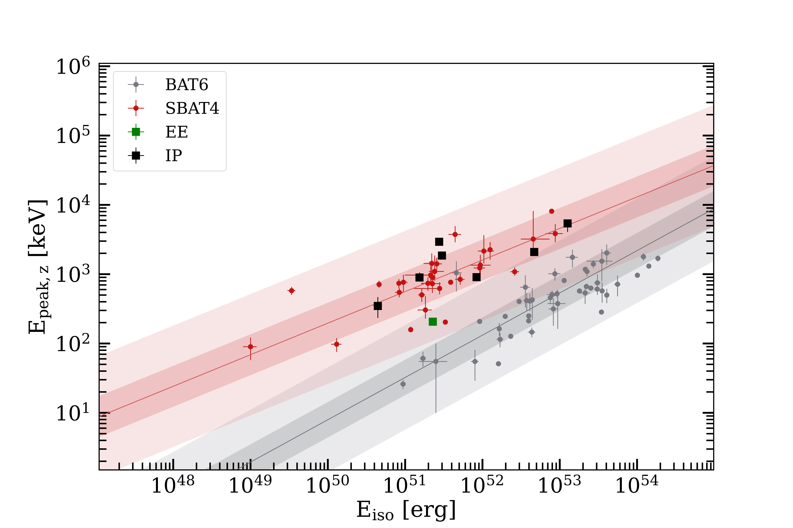<br />
图注：$E_{\text{peak,z}}-E_{\text{iso}}$ (Amati) relation. SGRBs of the extended SBAT4 sample are represented by red dots, shaded regions indicate the $1$ and $3\sigma_{sc}$ scatter of the sample around the best fit (D'Avanzo et al., paper in preparation). LGRBs of the BAT$6$ sample and their fit are represented in grey \(\citep{Nava_2012}.\) The power-law best fits are shown as a solid line. Results of the IP and EE joint analyses are shown as black and green squares, respectively.<br />
对应解读：建议重点查看的图表第5项；关键图表逐图导读图5；模型拟合段落中关于谱拟合、窄能带外推和 Amati 平面位置的讨论。<br />
入选理由：这是检验本文核心结论“初始脉冲占据短暴参数空间、延展辐射平均太暗而不像普通长暴”的最直接图。图中同时给出短暴、长暴、IP 和 EE，并叠加 Amati 关系及1/3σ散布区，比单独的硬度或持续时间图更能支撑分类诊断。<br />
来源与置信度：\(arxiv_source\)；high；\(arxiv_source\) / main.tex:figure[3]</p>
<p><strong>Fig05</strong><br />
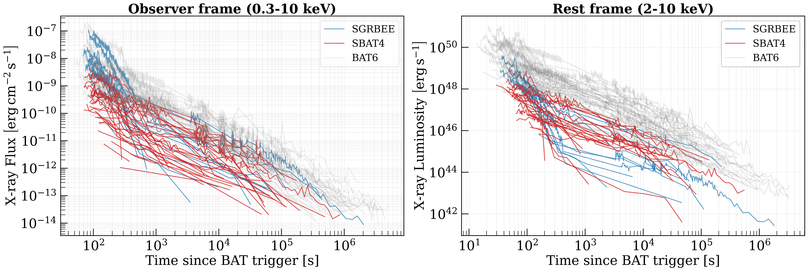<br />
图注：XRT light curves in observer frame (left panel) and in the common rest frame (right panel) of GRBs from the SBAT$4$ sample (in red), BAT6 sample (in grey) and for our sample of GRBs with extended emission (in blue).<br />
对应解读：建议重点查看的图表第6项；关键图表逐图导读图6；模型拟合段落中关于 XRT rest-frame 光变和早期/晚期亮度比较的讨论。<br />
入选理由：该图直接比较 SGRBEE、普通短暴和长暴的 XRT 光变，并同时给出观测者系和共同静止系。它最能检验日报强调的余辉结论：SGRBEE 早期更亮、晚期趋近短暴且整体低于长暴，是本文多波段解释的关键证据。<br />
来源与置信度：\(arxiv_source\)；high；\(arxiv_source\) / main.tex:figure[5]</p>
<p><strong>Fig04</strong><br />
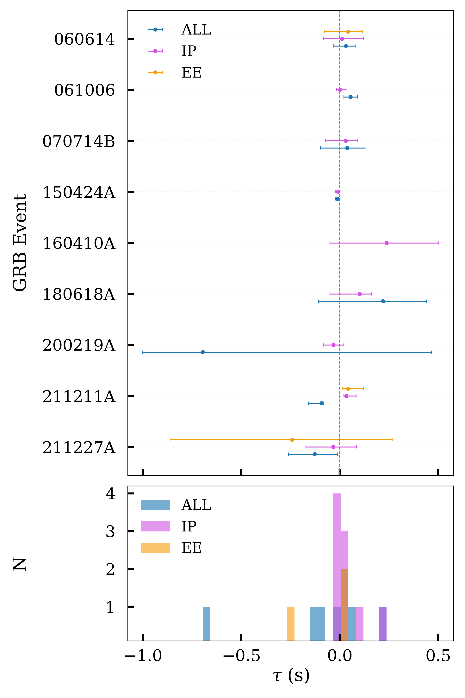<br />
图注：Spectral lag for SGRBEEs in the rest frame energy bands $25-50$ keV and $50-100$ keV considering the whole prompt duration (in blue), the IP (in pink), and the EE (in orange). We report only spectral-lag estimates derived from spectra with enough SNR, as described in Sect.\(\ref{sec:lag}.\)<br />
对应解读：建议重点查看的图表第4项；关键图表逐图导读图4；详细解读中“所有事件谱延迟均与零一致”的结果。<br />
入选理由：谱延迟是否与零一致是区分短暴式行为和典型长暴正延迟的重要诊断。该图按 whole prompt、IP 和 EE 分别给出 rest-frame 25–50 keV 与 50–100 keV 的 lag，能直接检查误差区间是否跨过0以及高信噪比子样本的可靠性。<br />
来源与置信度：\(arxiv_source\)；high；\(arxiv_source\) / main.tex:figure[4]</p>
<p><strong>Fig02</strong><br />
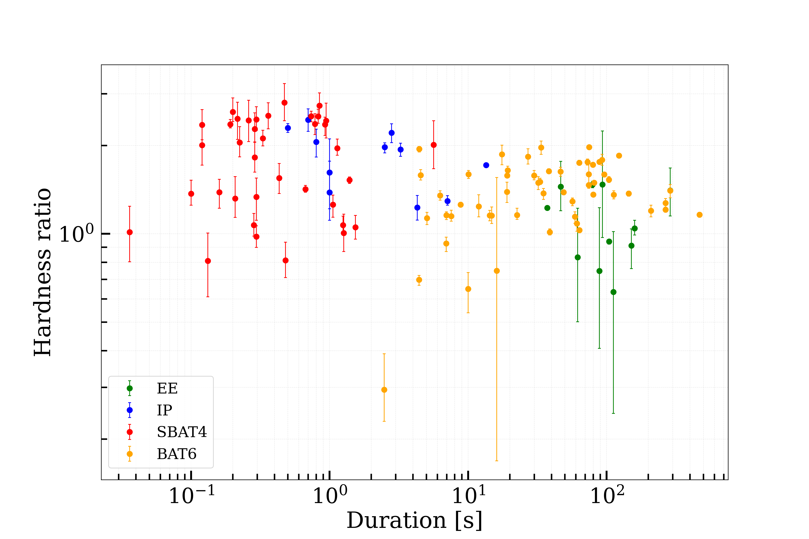<br />
图注：Hardness ratio ($HR$) versus the burst duration during the IP (in blue) and EE (in green) phases, as well as the total duration of short and long GRBs in the SBAT4E (in red) and BAT6 (in yellow) samples, respectively.<br />
对应解读：建议重点查看的图表第3项；关键图表逐图导读图3；详细解读中关于硬度比不能单独分类的讨论。<br />
入选理由：该图把 IP、EE、普通短暴和长暴放在同一 HR–duration 平面上，是验证“硬度分布重叠、不能仅靠硬度分类”的主要证据。相比只展示单个事件内部演化的图，它更直接支撑跨样本比较。<br />
来源与置信度：\(arxiv_source\)；high；\(arxiv_source\) / main.tex:figure[2]</p>
<p><strong>Fig07</strong><br />
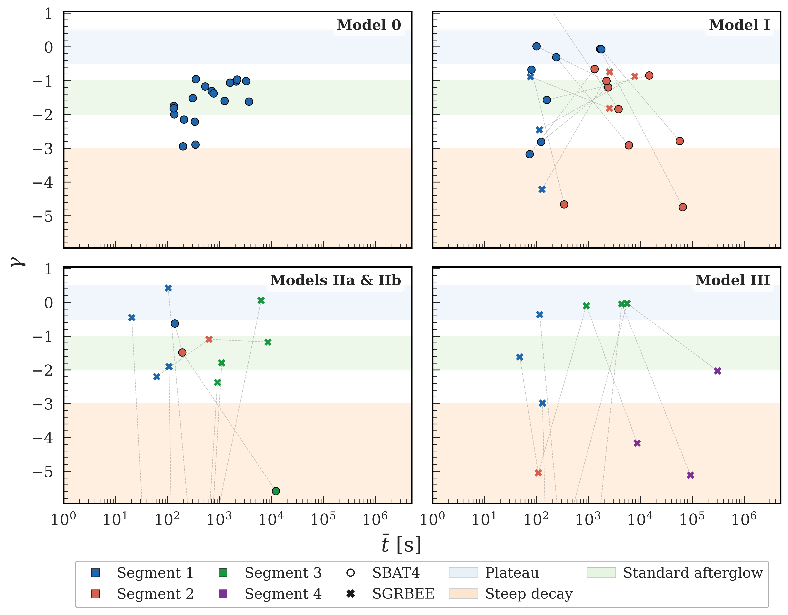<br />
图注：Light curve temporal indices $\gamma$ from the morphological characterization of SBAT$4$ GRBs (circles) and the SGRBEEs (crosses) for each light curve model. $\bar t$ is the average time of the light curve segment characterized by the given temporal index $\gamma$. Each of the light curve segments are shown with different colors. As a reference, we include the expected $\gamma$ values for the plateau, steep decay, and standard afterglow phases in blue, red and green, respectively \(\citep{Zhang_2007}.\)<br />
对应解读：建议重点查看的图表第7项；关键图表逐图导读图7；模型拟合段落中关于陡降、平台和标准余辉阶段的讨论。<br />
入选理由：该图展示 XRT 光变形态分解得到的时间指数，并标出 plateau、steep decay 和 standard afterglow 的参考范围。它比单纯光变曲线更能说明 SGRBEE 余辉为何需要复杂分段模型，以及早期陡降和平台是否具有统计和物理上的可辨识性。<br />
来源与置信度：\(arxiv_source\)；high；\(arxiv_source\) / main.tex:figure[7]</p>
<p><strong>Fig06</strong><br />
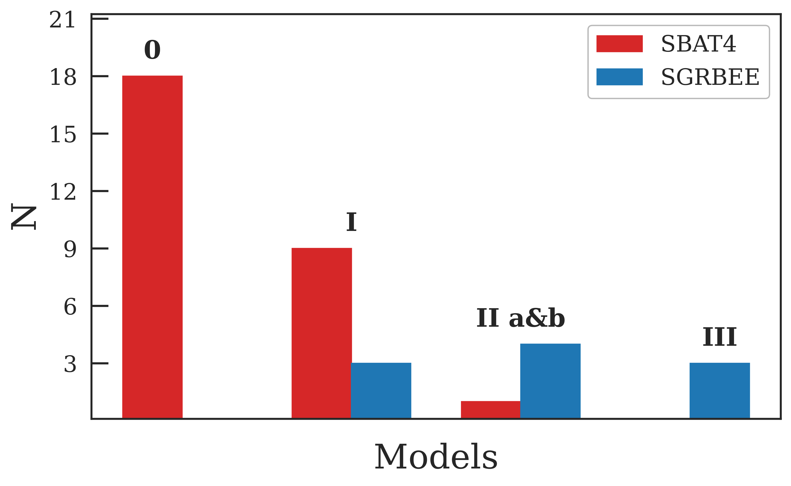<br />
图注：Best-fit model histogram for SBAT4 (in red) and SGRBEEs (in blue) XRT light curves.<br />
对应解读：建议重点查看的图表第7项；模型拟合段落中关于 XRT 光变需要多少个分段幂律 break、SGRBEE 比普通短暴更复杂的讨论。<br />
入选理由：该图用最佳拟合模型类型的直方图比较 SBAT4 短暴和 SGRBEE，是支持“SGRBEE XRT 光变更复杂、常需更多 break”的直接概览。虽然不如残差图或逐事件参数表细致，但在候选图中最贴近模型复杂度统计这一诊断。<br />
来源与置信度：\(arxiv_source\)；high；\(arxiv_source\) / main.tex:figure[6]</p>
<h4 id="_45">强相关工作</h4>
<p>这篇工作与短暴延展辐射研究、Swift 短暴余辉研究和长短暴分类研究直接相关。应检索关键词包括“short gamma-ray bursts extended emission Swift BAT XRT”、“SGRBEE spectral lag”、“SBAT4 short GRB sample”、“BAT6 long GRB sample”、“Amati relation short GRBs”。同类研究通常从个例或小样本出发，讨论 \(050724\)、\(061006\)、\(070714B\)、\(071227\) 等带长尾或复杂余辉的短暴；本文的贡献是把这些问题放入更受控的 Swift 样本比较。</p>
<p>基础理论方面，这项工作连接到 BATSE 时代的长短暴分类、Amati 关系、短暴并合起源以及 Swift 发现的 X 射线平台问题。相反或有张力的观点包括：部分长持续时间事件可能仍来自并合而非坍缩星；部分看似短暴的事件可能是 collapsar 的短时标尾端；硬度和 \(T_{90}\) 分类在不同探测器中并不稳定。建议进一步检索“collapsar contamination in short GRBs”、“non-collapsar probability GRB duration”、“magnetar central engine extended emission”。</p>
<p><strong>同一事件 / 同类源线索</strong>：</p>
<ul>
<li><a href="https://arxiv.org/abs/2607.03541">https://arxiv.org/abs/2607.03541</a></li>
<li><a href="https://arxiv.org/pdf/2607.03541">https://arxiv.org/pdf/2607.03541</a></li>
</ul>
<p><strong>相似工作</strong>：</p>
<ul>
<li><a href="https://arxiv.org/abs/astro-ph/0505630">https://arxiv.org/abs/astro-ph/0505630</a></li>
<li><a href="https://arxiv.org/abs/astro-ph/0508115">https://arxiv.org/abs/astro-ph/0508115</a></li>
<li><a href="https://arxiv.org/abs/0803.0762">https://arxiv.org/abs/0803.0762</a></li>
</ul>
<p><strong>基础理论 / 方法工作</strong>：</p>
<ul>
<li><a href="https://arxiv.org/abs/astro-ph/0205230">https://arxiv.org/abs/astro-ph/0205230</a></li>
<li><a href="https://arxiv.org/abs/astro-ph/0405233">https://arxiv.org/abs/astro-ph/0405233</a></li>
<li><a href="https://ui.adsabs.harvard.edu/abs/1993ApJ...413L.101K/abstract">https://ui.adsabs.harvard.edu/abs/1993ApJ...413L.101K/abstract</a></li>
</ul>
<p><strong>相反观点 / 张力线索</strong>：</p>
<ul>
<li><a href="https://arxiv.org/abs/0908.1853">https://arxiv.org/abs/0908.1853</a></li>
<li><a href="https://arxiv.org/abs/1303.2908">https://arxiv.org/abs/1303.2908</a></li>
</ul>
</details>
<h3 id="5-galactic-center-neutrinos-from-cosmic-ray-dark-matter-interactions">5. Galactic Center Neutrinos from Cosmic Ray-Dark Matter Interactions</h3>
<ul>
<li>来源：arXiv / astro-ph.HE</li>
<li>链接：https://arxiv.org/abs/2607.05335v1</li>
<li>作者：Jorge Terol Calvo, Pedro de la Torre Luque, Mainak Mukhopadhyay, Chris Cappiello, Gonzalo Herrera</li>
<li>评分：novelty 8/10，importance 8/10，relevance 9/10，final 9.35/10</li>
<li>推荐理由：利用银河中心/银河面高能中微子约束宇宙线-轻暗物质相互作用，结合ANTARES并展望IceCube-Gen2/KM3NeT；与高能中微子、多信使和宇宙线物理高度相关。</li>
</ul>
<p><strong>中文题目</strong>：银河中心中微子作为宇宙线—暗物质相互作用探针</p>
<p><strong>做了什么</strong>：这篇文章研究一个相当具体但有潜力的信号通道：银河系宇宙线在穿过暗物质晕时，与亚 \(\mathrm{GeV}\) 甚至 \(\mathrm{keV}\) 质量尺度的暗物质发生深度非弹性散射，产生介子，介子衰变后给出高能中微子。作者把较真实的银河宇宙线空间分布、银河中心和 Galactic Ridge 区域的暗物质柱密度，以及 ANTARES 对该方向中微子的观测结合起来，对暗物质—核子散射截面给出 \(99\%\) 置信水平上限。核心结论是：银河中微子望远镜不仅能看宇宙线强子相互作用，也能作为轻暗物质探针；这一方法覆盖传统地下直接探测很难触及的低质量暗物质区间，并且未来 IceCube-Gen2 与 KM3NeT 有望显著改进灵敏度。</p>
<p><strong>为什么重要</strong>：重要性在于它把两个通常分开的领域接起来：银河系高能中微子天文学和轻暗物质直接探测。低质量暗物质在地下实验中受核反冲阈值限制严重，而银河宇宙线天然提供高能入射粒子，可以把暗物质碰撞过程推到可产生介子和中微子的能区。若模型成立，中微子望远镜的视场、角分辨率和对银河中心的长期曝光就能转化为暗物质—标准模型相互作用的新约束。</p>
<p><strong>理论 / 观测 / 仪器方法价值</strong>：对理论的价值是给出一种从宇宙线输运、暗物质分布到中微子通量的可计算框架；对观测的价值是把 ANTARES 的银河中心数据用于轻暗物质截面限制；对方法的价值是强调空间模板、能谱模板和背景似然在这种搜索中的作用。即使没有发现信号，上限也能补充地下实验、宇宙学约束和伽马射线约束。</p>
<p><strong>为什么应该关注</strong>：如果你关注银河中心高能辐射、IceCube 银河平面中微子、轻暗物质或宇宙线传播，这篇文章值得看，因为它说明同一批中微子数据还能检验非常规的粒子物理通道。它也提醒读者：未来 KM3NeT 对南天银河中心的角分辨率和能量响应，可能会把现在较粗的模板限制变成更有判别力的空间—能谱测试。</p>
<details class="paper-detail">
<summary>展开详细解读：文章讲解、背景、理论、重点章节、图表与相关工作</summary>
<h4 id="_46">文章详细讲解</h4>
<p>科学问题：近年 IceCube 对银河平面弥散中微子给出证据，ANTARES 也长期搜索过 Galactic Ridge 和银河中心附近的中微子发射。通常解释是宇宙线质子或核子与星际气体发生 \(pp\) 碰撞，产生 \(\pi^{\pm}\)、\(K^{\pm}\) 等介子，随后衰变成中微子。本文问的是：如果银河暗物质晕中存在轻暗物质粒子，宇宙线与暗物质也能发生类似强子级联或深度非弹性散射，那么这些碰撞是否会产生可观测的中微子？反过来，ANTARES 没有看到超过背景的强信号，能否限制暗物质—核子截面？</p>
<p>作者怎么做：他们构造了从银河宇宙线分布到中微子强度的链条。输入包括银河系中不同位置、不同能量的宇宙线通量图，暗物质密度轮廓，以及宇宙线—暗物质深度非弹性散射产生介子并衰变为中微子的产额。然后沿视线积分，得到银河中心和 Galactic Ridge 方向的中微子角分布与能谱模板。最后把这个模板与 ANTARES 的观测结果比较，在不同暗物质质量 \(m_\chi\) 下求暗物质—核子散射截面 \(\sigma_{\chi N}\) 的 \(99\%\) 置信水平上限。</p>
<p>关键结果：文章声称约束可以延伸到 \(\mathrm{keV}\) 质量尺度，这是传统核反冲直接探测非常困难的区域。信号形态的特点不是暗物质湮灭的 \(\rho_\chi^2\) 标度，而是宇宙线密度与暗物质密度的乘积，即近似随 \(n_{\rm CR}\rho_\chi\) 加权；因此它既偏向银河中心的高暗物质柱密度，也受宇宙线源分布和传播模型影响。这个空间模板与普通气体相关的银河中微子模板不完全相同，是本文方法上最有辨识度的地方。</p>
<p>局限和下一步：限制强度依赖几个关键假设：暗物质密度剖面，尤其是银河中心 cusp 或 core；宇宙线在内银河的空间分布；低质量暗物质与核子的有效相互作用是否可用作者采用的深度非弹性散射近似描述；以及 ANTARES 对该区域的有效面积、角分辨率和背景建模。下一步最自然的是用 IceCube 的银河平面模板、KM3NeT 对银河中心的高可见度，以及 IceCube-Gen2 的大有效体积做联合似然；理论上也需要更系统地比较中微子、伽马射线、宇宙学和实验室限制。</p>
<h4 id="_47">关键结果是怎么做出来的</h4>
<p>本文最重要的结果是对 \(\sigma_{\chi N}\) 随 \(m_\chi\) 的上限曲线。样本不是逐个天体源，而是来自 ANTARES 对银河中心或 Galactic Ridge 区域的高能中微子观测；作者把候选暗物质信号当作一个具有固定空间模板和能谱形状的附加分量，与大气中微子、大气缪子以及常规银河弥散中微子背景比较。数据选择的关键在于方向区域：靠近银河中心可增加暗物质柱密度，但背景和常规宇宙线—气体中微子也更强，因此信噪比不只由总事件数决定，还由角分布和能量分布决定。</p>
<p>在每一个暗物质质量 \(m_\chi\) 上，作者计算单位截面对应的中微子通量模板。由于产额近似正比于 \(\sigma_{\chi N}\)，截面只是信号归一化参数；这使得上限提取可以理解为：逐步增大 \(\sigma_{\chi N}\)，直到预测事件数或似然劣化超过 \(99\%\) 置信水平允许范围。若论文采用 ANTARES 已发布的区域通量上限，也可等价地把模型通量与观测通量上限逐能段比较，取最严格的能段或联合能段给出排除。</p>
<p>统计上应关注两类量：一是模板预测的事件数 \(\mu_s\) 相对于背景 \(\mu_b\) 的大小，二是模型与数据在能量和角度上的残差。若使用轮廓似然，检验统计量通常是 \(q=-2\ln(\mathcal{L}_{\rm s+b}/\mathcal{L}_{\rm b})\) 或其单边上限形式；若使用发布的 ANTARES 通量限制，则关键是把理论通量折叠有效面积和曝光后，与 \(99\%\) 置信水平事件数上限比较。读者应在结果图中检查上限曲线是否由某个能区主导，以及不同宇宙线模型或暗物质轮廓改变曲线的幅度。</p>
<p>支撑结论的图表通常应包括：宇宙线—暗物质诱导中微子在天区上的强度图；不同 \(m_\chi\) 的能谱；ANTARES 上限转化得到的 \(m_\chi\)–\(\sigma_{\chi N}\) 排除曲线；以及未来 IceCube-Gen2、KM3NeT 预期灵敏度。系统误差主要来自宇宙线三维分布、暗物质密度内斜率、强子产额模型、探测器有效面积和大气背景。稳健性检验应看作者是否更换了暗物质 halo profile、宇宙线传播模型、ROI 大小和能量阈值，并说明排除曲线是否只是整体平移，还是在某些质量段形状也改变。</p>
<details class="paper-subdetail">
<summary>展开背景、理论、公式、模型、章节和图表导读</summary>
<h4 id="_48">背景知识</h4>
<p>研究对象是银河系中由宇宙线与暗物质相互作用产生的高能中微子。宇宙线主要是质子和原子核，能量可从 \(\mathrm{GeV}\) 到 \(\mathrm{PeV}\) 以上；暗物质在银河晕中提供近似静止的靶粒子。如果两者存在非引力相互作用，宇宙线就可能像撞击星际气体一样撞击暗物质，只是靶的质量、密度分布和相互作用截面不同。</p>
<p>历史上，轻暗物质直接探测的难点在于能量阈值。当地下实验寻找核反冲时，暗物质速度只有银河晕速度量级，低质量粒子给靶核的动能非常小，容易低于阈值。宇宙线相关方法利用高能宇宙线作为入射粒子，能把原本冷的暗物质加速，或者在碰撞中产生可见二级粒子；因此它绕开了部分低质量阈值问题，但代价是天体物理不确定性更大。</p>
<p>观测背景来自高能中微子天文学的进展。IceCube 对银河平面弥散中微子给出证据后，银河系不再只是伽马射线中的强子物理实验室，也成为中微子模板分析的对象。ANTARES 位于北半球，虽然体积小于 IceCube，但对南天银河中心方向有较好的可见性；KM3NeT 继承并增强这一优势。因此，把银河中心中微子数据用于暗物质相互作用限制，在时机上是自然的。</p>
<p>为什么现在值得重新看：一方面，宇宙线传播模型和三维银河宇宙线图比过去更细；另一方面，中微子望远镜已有足够长曝光，能对 extended emission 做模板拟合。未来 IceCube-Gen2 和 KM3NeT 会显著提高统计量和角分辨率，使得暗物质相关模板与气体相关模板的分离更现实。</p>
<p>一个常见误区是把所有“暗物质中微子”都理解为湮灭或衰变信号。本文不是 \(\chi\chi\) 湮灭，也不是 \(\chi\) 衰变，而是宇宙线—暗物质散射；因此通量标度、空间形态和粒子物理解释都不同。另一个误区是认为银河中心增强必然代表暗物质信号；实际上气体分布、宇宙线源分布和未解析源同样会增强内银河辐射，必须通过模板和能谱判别。</p>
<h4 id="_49">基础理论 / 方法脉络</h4>
<p>基本物理图像是固定靶碰撞。银河暗物质在实验室系近似非相对论，宇宙线质子或核子以高能撞上暗物质粒子。如果相互作用足够强且中心质心能量超过强子产生阈值，就会出现深度非弹性散射和二级介子产生。带电介子衰变链 \(\pi^+\rightarrow\mu^+\nu_\mu\) 与 \(\mu^+\rightarrow e^+\nu_e\bar{\nu}_\mu\) 给出中微子；负介子给出相应反中微子。</p>
<p>本文的关键假设是暗物质—核子相互作用可用一个有效截面 \(\sigma_{\chi N}\) 描述，并且中微子产额可从宇宙线能量、暗物质质量和深度非弹性散射过程计算。暗物质不是气体盘中的靶，而是近似球状或轴对称 halo 分布；宇宙线则更集中在银河盘和源丰富的内银河。因此信号的体发射率与 \(n_\chi(\mathbf{r})\Phi_{\rm CR}(E_{\rm CR},\mathbf{r})\) 成正比，而不是只跟气体柱密度或 \(\rho_\chi^2\) 成正比。</p>
<p>观测上，中微子望远镜不能直接测量入射中微子的所有信息，而是通过缪子径迹或级联事件重建方向和能量代理量。理论通量必须与探测器有效面积 \(A_{\rm eff}(E_\nu,\Omega)\)、曝光时间和点扩散函数卷积，得到每个能量—角度 bin 的期望事件数。ANTARES 对银河中心的优势来自该方向在其视场中常以穿地上行事件出现，从而降低大气缪子背景。</p>
<p>主要退化关系包括：\(\sigma_{\chi N}\) 与暗物质柱密度归一化退化，内银河宇宙线密度与暗物质 halo 内斜率退化，强子产额模型与中微子能谱形状退化，以及常规 \(pp\) 银河弥散中微子模板与暗物质散射模板的空间相关性。若只用总通量上限，这些退化会被压缩成截面上限的不确定带；若做完整模板似然，则可用角分布和能谱部分打破退化。</p>
<h4 id="_50">公式与推导</h4>
<p>第一步是固定靶碰撞的质心能量。设宇宙线核子能量为 \(E_{\rm CR}\)，暗物质质量为 \(m_\chi\)，暗物质在银河系参考系中近似静止，则</p>
<div class="math-display">\[s \simeq m_N^2+m_\chi^2+2m_\chi E_{\rm CR},\]</div>
<p>其中 \(m_N\) 是核子质量，\(s\) 决定是否进入可产生介子的深度非弹性区。这个式子说明低质量 \(m_\chi\) 需要更高 \(E_{\rm CR}\) 才能达到同样的质心能量。</p>
<p>暗物质数密度由质量密度给出：</p>
<div class="math-display">\[n_\chi(\mathbf{r})=\frac{\rho_\chi(\mathbf{r})}{m_\chi}.\]</div>
<p>这里 \(\rho_\chi(\mathbf{r})\) 来自选定 halo profile。因为 \(n_\chi\propto m_\chi^{-1}\)，同一质量密度下较轻暗物质提供更多靶粒子，但单次碰撞运动学和产额也会变化。</p>
<p>单位体积、单位中微子能量的源函数可写为</p>
<div class="math-display">\[q_\nu(E_\nu,\mathbf{r})=n_\chi(\mathbf{r})\int dE_{\rm CR}\,\Phi_{\rm CR}(E_{\rm CR},\mathbf{r})\,\sigma_{\chi N}(s)\,\frac{dN_\nu}{dE_\nu}(E_\nu|E_{\rm CR},m_\chi),\]</div>
<p>其中 \(\Phi_{\rm CR}\) 是局域宇宙线通量，\(dN_\nu/dE_\nu\) 是每次碰撞产生的中微子谱。若 \(\sigma_{\chi N}\) 在相关能区近似常数，预测通量对截面近似线性。</p>
<p>沿视线积分得到方向 \(\Omega\) 上的微分强度：</p>
<div class="math-display">\[\frac{d\Phi_\nu}{dE_\nu d\Omega}(E_\nu,\Omega)=\frac{1}{4\pi}\int_{\rm l.o.s.} dl\,q_\nu(E_\nu,\mathbf{r}(l,\Omega)).\]</div>
<p>因子 \(1/(4\pi)\) 对应各向同性发射近似；\(l\) 是视线距离。这个式子展示了本文与暗物质湮灭搜索的差别：积分核是 \(\rho_\chi\Phi_{\rm CR}\)，不是 \(\rho_\chi^2\)。</p>
<p>探测器中某一分析 bin 的期望信号事件数为</p>
<div class="math-display">\[\mu_i^{\rm sig}=T\int_{\Delta_i} dE_\nu d\Omega\,A_{\rm eff}(E_\nu,\Omega)\,P_i(E_{\rm rec},\Omega_{\rm rec}|E_\nu,\Omega)\,\frac{d\Phi_\nu}{dE_\nu d\Omega},\]</div>
<p>其中 \(T\) 是曝光时间，\(A_{\rm eff}\) 是有效面积，\(P_i\) 表示能量和方向重建响应。这个卷积是把理论通量变成 ANTARES 可比较事件数的核心。</p>
<p>若每个 bin 的观测事件数为 \(n_i\)，背景为 \(\mu_i^{\rm bkg}\)，Poisson 似然可写成</p>
<div class="math-display">\[\mathcal{L}(\sigma_{\chi N},\boldsymbol{\theta})=\prod_i \frac{\left[\mu_i^{\rm bkg}(\boldsymbol{\theta})+\mu_i^{\rm sig}(\sigma_{\chi N},\boldsymbol{\theta})\right]^{n_i}e^{-\mu_i^{\rm bkg}-\mu_i^{\rm sig}}}{n_i!}\,\Pi(\boldsymbol{\theta}),\]</div>
<p>其中 \(\boldsymbol{\theta}\) 是背景、有效面积、宇宙线模型和暗物质分布等 nuisance 参数，\(\Pi(\boldsymbol{\theta})\) 是约束项或先验。</p>
<p>单边上限常用轮廓似然比诊断：</p>
<div class="math-display">\[q(\sigma_{\chi N})=-2\ln\frac{\mathcal{L}(\sigma_{\chi N},\hat{\hat{\boldsymbol{\theta}}})}{\mathcal{L}(\hat{\sigma}_{\chi N},\hat{\boldsymbol{\theta}})}.\]</div>
<p>双帽表示在固定 \(\sigma_{\chi N}\) 下对 nuisance 参数重新极大化，帽表示全局最优。\(99\%\) 置信水平上限对应 \(q\) 达到相应临界值，或在小样本情况下用伪实验校准。</p>
<p>若论文使用已发布通量上限，也可用近似关系</p>
<div class="math-display">\[\sigma_{\chi N}^{99}(m_\chi)=\sigma_0\min_k\left[\frac{\Phi^{99}_{\nu,k}}{\Phi_{\nu,k}(\sigma_0,m_\chi)}\right],\]</div>
<p>其中 \(k\) 标记能段或天区，\(\sigma_0\) 是用于生成模板的参考截面，\(\Phi^{99}_{\nu,k}\) 是观测给出的通量上限。这个式子说明结果本质上是把线性信号模板重标定到观测允许的最大归一化。</p>
<h4 id="_51">模型拟合 / 应用方法</h4>
<p>这类工作的拟合量通常不是暗物质质量和截面同时自由拟合，而是在一组固定 \(m_\chi\) 网格上计算信号模板，再对 \(\sigma_{\chi N}\) 做单参数上限。暗物质质量改变碰撞运动学、中微子产额和能谱峰值；截面主要改变归一化。因此结果一般呈现为 \(m_\chi\)–\(\sigma_{\chi N}\) 平面上的排除曲线。</p>
<p>若使用完整事件级数据，最自然的是非分箱或分箱 Poisson 似然，输入变量包括重建方向、能量代理量和事件拓扑。背景包括大气中微子、大气缪子误重建、常规银河弥散中微子和可能的未解析源。nuisance 参数应覆盖有效面积归一化、角分辨率、能量尺度、宇宙线模型和暗物质密度剖面；这些参数可用高斯约束、对数正态约束或离散模型包络处理。</p>
<p>残差诊断很关键。若暗物质模板只是在银河中心方向增加几个事件，但这些事件能量分布与背景相似，似然改进或排除能力会很弱。相反，如果预测能谱在某个能段明显硬于大气背景，或者空间上比气体相关模板更集中，就能提高灵敏度。读者应检查残差是否在少数 bin 中驱动上限，避免把统计涨落误读为普遍约束。</p>
<p>参数退化方面，\(\sigma_{\chi N}\) 与 \(\rho_\chi\) 归一化严格相关；内斜率越陡，银河中心 ROI 的上限越强。宇宙线密度若在内银河高于本地推断，信号也增强。强子产额模型影响 \(dN_\nu/dE_\nu\)，尤其在低 \(m_\chi\) 和阈值附近更明显。实际应用时，最好把论文给出的主曲线理解为在一组基准 astrophysical assumptions 下的约束，而不是完全模型无关的粒子物理界限。</p>
<p>模型可能失败的地方包括：暗物质—核子相互作用的能量依赖不能用常数截面表示；低质量暗物质的有效理论在高 \(s\) 下不自洽；介子产生模型在异常靶质量下外推过远；或者银河中心暗物质分布被重子反馈削平成 core。未来联合 IceCube、ANTARES、KM3NeT 数据时，最好采用层级模型，把天体物理和探测器系统误差显式边缘化。</p>
<h4 id="_52">重点章节 / 结果段落怎么读</h4>
<ol>
<li>
<p>引言和物理动机：先看作者如何区分本文信号与传统暗物质湮灭、衰变中微子。重点是宇宙线—暗物质散射的通量标度和为什么低质量暗物质适合用宇宙线探针。</p>
</li>
<li>
<p>宇宙线与暗物质模型：这一部分决定结果可信度。读者应检查作者采用哪些银河宇宙线图、是否包含内银河增强、暗物质 halo profile 取什么形式，以及是否展示不同模型带来的变化。</p>
</li>
<li>
<p>中微子产额计算：这里要看深度非弹性散射、介子产生和衰变谱如何处理。关键不是只看最终曲线，而是确认 \(m_\chi\) 很低时阈值和运动学是否被合理处理。</p>
</li>
<li>
<p>ANTARES 数据或观测上限转化：重点读 ROI、能段、有效面积、背景假设和 \(99\%\) 置信水平定义。若作者使用已发表 ANTARES 限制，要看他们如何把理论谱映射到那些限制上。</p>
</li>
<li>
<p>结果与未来灵敏度：关注主排除图以及 IceCube-Gen2、KM3NeT 预期曲线。读者应把不同实验的改善分解为曝光、有效面积、角分辨率和银河中心可见度，而不是只看曲线低了多少。</p>
</li>
<li>
<p>讨论和稳健性：最后看作者是否把结果与地下直接探测、宇宙学和其他天体限制比较，并说明哪些质量段真正新、哪些质量段已有更强约束。</p>
</li>
</ol>
<h4 id="_53">建议重点查看的图表</h4>
<ol>
<li>
<p>银河中心或 Galactic Ridge 的信号强度模板：看颜色图是否沿银河盘、中心 cusp 或两者共同增强；注意它与普通气体 \(pp\) 模板是否高度相关。</p>
</li>
<li>
<p>不同 \(m_\chi\) 的中微子能谱：看谱峰和高能尾如何随暗物质质量移动；检查 ANTARES 最敏感能段是否覆盖预测峰值。</p>
</li>
<li>
<p>\(m_\chi\)–\(\sigma_{\chi N}\) 上限主图：看 \(99\%\) 置信水平曲线相对已有直接探测、宇宙学或天体约束的位置；不要只看最低点，要看覆盖质量范围。</p>
</li>
<li>
<p>宇宙线模型或暗物质 halo profile 的系统误差带：看不同假设是否造成数量级变化；若只有单条曲线，需谨慎评价鲁棒性。</p>
</li>
<li>
<p>ANTARES 数据与模型的事件数或通量比较图：看背景、信号上限和观测点之间是否由少数 bin 主导。</p>
</li>
<li>
<p>未来 IceCube-Gen2 与 KM3NeT 预期灵敏度图：看改进来自统计量还是空间分辨率；检查是否假设背景系统误差随曝光无限下降。</p>
</li>
</ol>
<h4 id="_54">关键图表逐图导读</h4>
<p>图 1：若论文展示银河中微子强度天图，横轴通常是银河经度，纵轴是银河纬度，颜色表示 \(E_\nu^2 d\Phi_\nu/dE_\nu d\Omega\) 或积分强度。数据点可能没有逐点显示，而是模型模板。读图重点是中心集中程度和沿盘延展程度；陷阱是把中心亮斑直接理解为暗物质，因为宇宙线源和气体也集中在内银河。</p>
<p>图 2：若展示能谱，横轴是 \(E_\nu\)，纵轴是微分通量或 \(E_\nu^2\) 加权通量，不同颜色线代表不同 \(m_\chi\) 或不同 \(\sigma_{\chi N}\)。重点看谱形随 \(m_\chi\) 的变化，以及与 ANTARES 能量响应重叠的区间。读图陷阱是忽略探测器有效面积：理论通量最高的能段未必是事件贡献最大的能段。</p>
<p>图 3：主排除图通常横轴为 \(m_\chi\)，纵轴为 \(\sigma_{\chi N}\)，曲线以下或以上的排除区域需按图例判断。ANTARES 当前限制、未来 KM3NeT 和 IceCube-Gen2 预期可能以不同线型表示。重点看本文限制在哪些质量段优于已有约束，以及 \(\mathrm{keV}\) 到 \(\mathrm{GeV}\) 区间的曲线斜率变化。</p>
<p>图 4：若有系统误差或模型比较图，通常用阴影带展示宇宙线传播模型、halo profile 或产额模型的不确定性。重点看阴影带是否达到数量级；如果达到，那么主曲线的物理含义应理解为基准模型结果。陷阱是只引用最强曲线，而不说明 astrophysical assumptions。</p>
<p>图 5：若有未来灵敏度投影，横轴和纵轴仍多为 \(m_\chi\) 与 \(\sigma_{\chi N}\)。读者应看投影是否包含系统误差地板，还是简单按曝光 \(T^{-1/2}\) 缩放。对于 extended emission，角分辨率改善会改变模板分离能力，不能完全用曝光缩放替代。</p>
</details>
<h4 id="_55">论文原图 / 可嵌入图片</h4>
<p><strong>Fig02</strong><br />
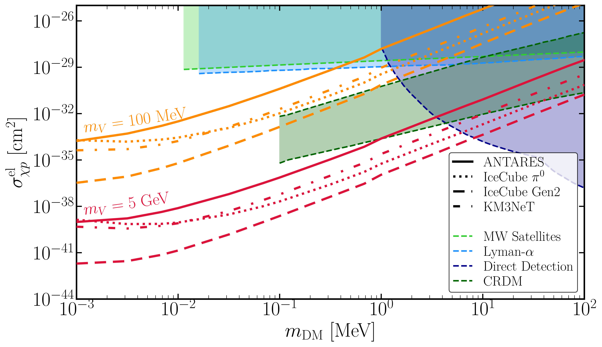<br />
图注：Derived $99\%$ C.L. upper limits on the DM-nucleon elastic scattering cross section as a function of the DM mass, utilizing the ANTARES neutrino observations in the Galactic Ridge and prospects derived from IceCube observations of the galactic plane, IceCube-Gen2 and KM3NeT. In addition we show limits coming from Lyman-$\alpha$ forest observations~\(\cite{Rogers:2021byl},\) Milky Way satellite galaxy population~\(\cite{DES:2020fxi}.\) We also show limits coming from Direct Detection including PandaX-4T~\(\cite{PandaX:2023xgl}and\) DAMIC-M~\(\cite{DAMIC-M:2025luv}\) and finally the limits coming from CRDM obtained with XENON1T~\(\cite{Dent:2019krz}.\) Other constraints that might be of interest are discussed in the main text.<br />
对应解读：对应“建议重点查看的图表”第3项和第6项，以及“关键图表逐图导读”图3/图5：mχ–σχN 99%置信水平上限主图，并包含 IceCube、IceCube-Gen2、KM3NeT 预期灵敏度与其他约束比较。<br />
入选理由：这是本文最核心的排除结果图，直接展示 ANTARES Galactic Ridge 对暗物质—核子截面的99% C.L.上限随暗物质质量的变化，并与未来中微子望远镜和直接探测、Lyman-α、卫星星系等约束对比。它最能支撑日报中关于keV到GeV质量范围、未来改进和互补性的解读。<br />
来源与置信度：\(arxiv_source\)；high；\(arxiv_source\) / main.tex:figure[2]</p>
<p><strong>Fig01</strong><br />
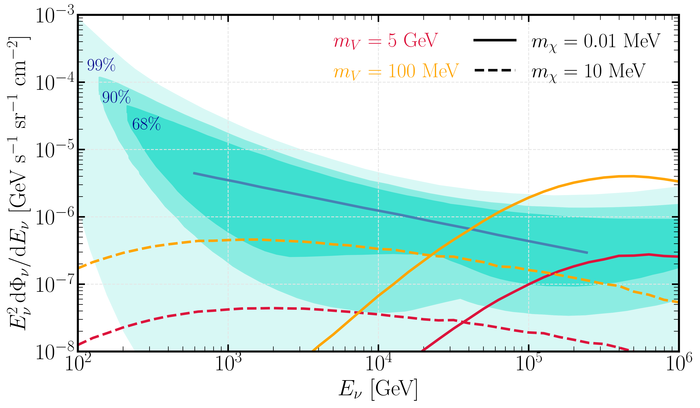<br />
图注：Expected neutrino signal coming from CR-DM inelastic interactions in the Galactic Ridge. We show the flux for a $m_{\rm DM}=10$ MeV (dashed) and a $m_{\rm DM}=10$ keV (solid) Dirac DM particle with a vector mediator with $m_V=5$ GeV (red) and $m_V=100$ MeV (orange), assuming couplings $G_D^2=g_q^2\cdot g_\chi^2=5$. The solid blue line corresponds to the ANTARES Galactic Ridge best-fit and the turquoise regions correspond to the 68\%, 90\% and 99\% C.L. contours~\(\cite{ANTARES:2022izu}.\)<br />
对应解读：对应“建议重点查看的图表”第2项和第5项，以及“关键图表逐图导读”图2：不同暗物质质量和媒介子质量下的 Galactic Ridge 中微子能谱，并与 ANTARES Galactic Ridge 最佳拟合及68%、90%、99%置信区间比较。<br />
入选理由：该图直接把理论CR-DM中微子通量与ANTARES观测允许区域放在一起，是理解上限如何由能谱幅度和ANTARES敏感能段决定的关键图。相比单纯排除曲线，它更直观显示了不同mDM和mV假设下预测谱形与数据约束的关系。<br />
来源与置信度：\(arxiv_source\)；high；\(arxiv_source\) / main.tex:figure[1]</p>
<p><strong>Fig06</strong><br />
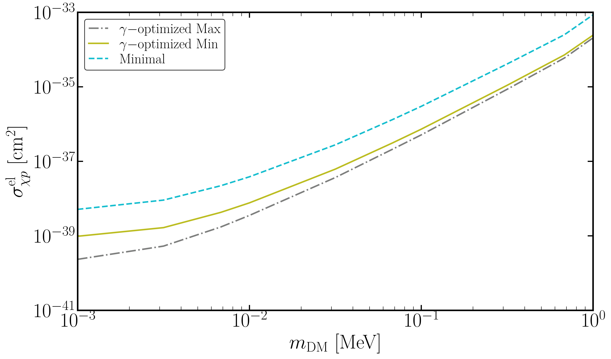<br />
图注：Derived $99\%$ C.L. upper limits on the dark matter-nucleon elastic scattering cross section as a function of the dark matter mass, utilizing the ANTARES neutrino observations in the Galactic Ridge assuming a $m_V=5\ \rm{GeV}$ mediator for different galactic Cosmic Ray models.<br />
对应解读：对应“建议重点查看的图表”第4项和模型拟合段落中关于宇宙线模型系统误差的讨论：不同银河宇宙线模型对mχ–σχN上限的影响。<br />
入选理由：日报特别强调宇宙线在内银河的空间分布会影响信号归一化和约束强度。Fig06专门比较不同Galactic Cosmic Ray模型下的99% C.L.截面上限，是评估本文主曲线鲁棒性和天体物理系统误差的关键图。<br />
来源与置信度：\(arxiv_source\)；high；\(arxiv_source\) / main.tex:figure[6]</p>
<p><strong>Fig07</strong><br />
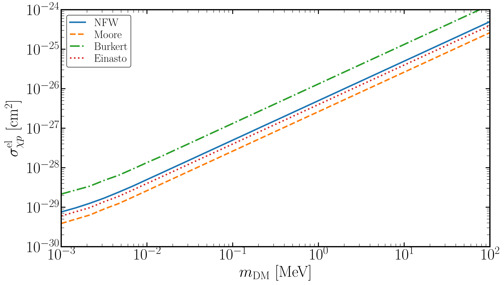<br />
图注：Impact of the dark matter density profile uncertainties on the derived cross-section upper limits, assuming a constant interaction cross section.<br />
对应解读：对应“建议重点查看的图表”第4项和模型拟合段落中关于暗物质halo profile、ρχ归一化与内斜率退化的讨论。<br />
入选理由：该图展示暗物质密度剖面不确定性对截面上限的影响，直接支撑日报中‘银河中心cusp或core会改变约束强度’的判断。它与Fig06互补，分别覆盖宇宙线分布和暗物质分布两类主要天体物理系统误差。<br />
来源与置信度：\(arxiv_source\)；high；\(arxiv_source\) / main.tex:figure[7]</p>
<p><strong>Fig04</strong><br />
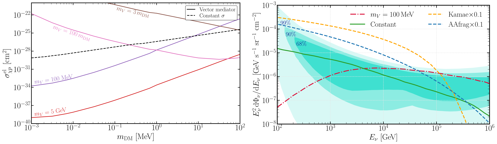<br />
图注：\(\emph{Left: }Derived\) $99\%$ C.L. upper limits on the dark matter-nucleon elastic scattering cross section as a function of the dark matter mass, utilizing the ANTARES neutrino observations in the Galactic Ridge assuming different mediator masses and a constant cross section in energy. \(\emph{Right: }Expected\) neutrino fluxes from CR-DM interactions coming from the galactic Ridge under different cross-section parameterizations for a DM mass set to 1 MeV. The constant cross section has been fixed to $\sigma_0=10^{-26}$ cm$^2$ while in the case of the vector mediator the couplings are set to $G_D^2=10$. The ANTARES 68\%, 90\% and 99\% C.L. bands are shown as well~\(\cite{ANTARES:2022izu}.\)<br />
对应解读：对应“模型拟合”中关于截面能量依赖、常数截面近似和媒介子模型的讨论，也部分对应“建议重点查看的图表”第2项和第3项。<br />
入选理由：Fig04左图给出不同媒介子质量和常数截面假设下的99% C.L.上限，右图比较不同截面参数化下的Galactic Ridge中微子通量并叠加ANTARES置信带。它有助于说明结果并非只由σχN归一化决定，还依赖相互作用能量依赖和媒介子设定。<br />
来源与置信度：\(arxiv_source\)；high；\(arxiv_source\) / main.tex:figure[4]</p>
<p><strong>Fig05</strong><br />
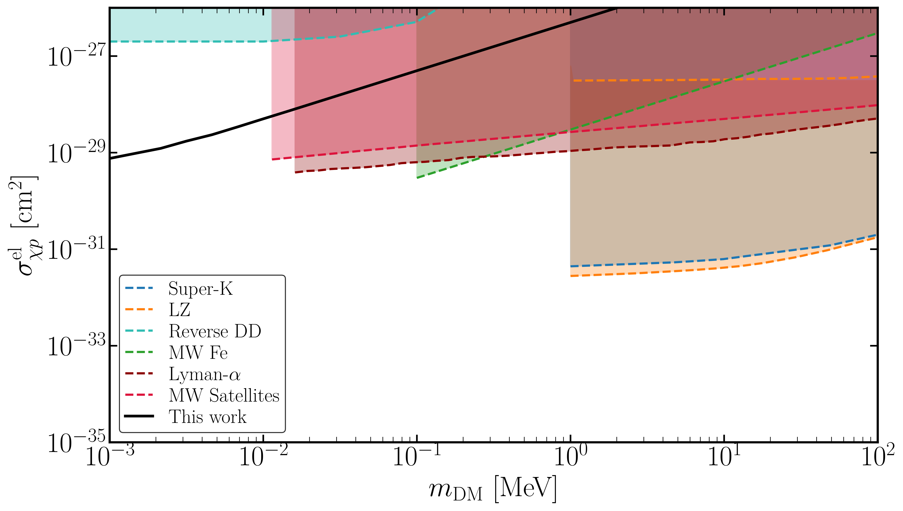<br />
图注：Derived $99\%$ C.L. upper limits on the dark matter-nucleon elastic scattering cross section as a function of the dark matter mass, utilizing the ANTARES neutrino observations in the Galactic Ridge and assuming a constant cross section in energy. In addition we show limits coming from Reverse Direct Detection~\(\cite{Cappiello:2018hsu},\) Lyman-$\alpha$ forest observations~\(\cite{Rogers:2021byl},\) Milky Way satellite galaxy population~\(\cite{DES:2020fxi}.\) We also show the limits coming from CRDM obtained with LZ~\(\cite{Maity:2022exk}\) and Super-Kamiokande~\(\cite{Super-Kamiokande:2022ncz},\) from cosmic ray iron spallation in the Milky Way~\(\cite{Meighen-Berger:2025hrq}.\) Other constraints that might be of interest are discussed in the main text.<br />
对应解读：对应“关键图表逐图导读”图3：常数截面假设下的mχ–σχN排除图，并与Reverse Direct Detection、Lyman-α、卫星星系、LZ、Super-K、宇宙线铁散裂等限制比较。<br />
入选理由：该图是常数截面情形下的主约束汇总，适合补充Fig02的媒介子模型结果，帮助读者区分本文在不同相互作用参数化下与既有限制的相对位置。虽然与Fig02功能相近，但其约束集合和物理假设不同，仍有较高解读价值。<br />
来源与置信度：\(arxiv_source\)；high；\(arxiv_source\) / main.tex:figure[5]</p>
<h4 id="_56">强相关工作</h4>
<p>这篇工作与同类银河中微子观测直接相关：IceCube 对银河平面弥散中微子的报告提供了“银河系确实产生可探测高能中微子”的观测背景；ANTARES 对 Galactic Ridge 和银河中心的搜索则是本文约束的直接数据语境。检索关键词可用 “IceCube Galactic plane neutrino emission”、“ANTARES Galactic Ridge neutrinos”、“KM3NeT Galactic Center neutrino sensitivity”。</p>
<p>在暗物质方向，它属于 cosmic-ray boosted dark matter 和 cosmic-ray dark matter interactions 的扩展分支，但信号不是地下探测中的被加速暗物质反冲，而是宇宙线—暗物质碰撞产生中微子。应与轻暗物质直接探测限制、宇宙学 \(\mathrm{CMB}\) 散射限制、伽马射线强子级联限制一起比较。检索关键词可用 “cosmic ray boosted dark matter”、“sub-GeV dark matter nucleon scattering”、“dark matter cosmic ray neutrinos”、“deep inelastic scattering dark matter cosmic rays”。</p>
<p>可能的张力或相反观点主要来自天体物理系统误差：银河中心暗物质是否 cusp、内银河宇宙线密度是否高于本地外推、以及普通 \(pp\) 中微子模板是否足以解释相关观测。若常规强子模型已经可解释大部分银河平面中微子，那么暗物质分量只能作为子主导上限；若未来发现空间形态偏离气体模板，本文这类模型才会更有判别价值。</p>
<p><strong>同一事件 / 同类源线索</strong>：</p>
<ul>
<li><a href="https://arxiv.org/abs/2607.05335">https://arxiv.org/abs/2607.05335</a></li>
<li><a href="https://arxiv.org/pdf/2607.05335">https://arxiv.org/pdf/2607.05335</a></li>
<li><a href="https://arxiv.org/abs/2307.04427">https://arxiv.org/abs/2307.04427</a></li>
</ul>
<p><strong>相似工作</strong>：</p>
<ul>
<li><a href="https://arxiv.org/abs/2307.04427">https://arxiv.org/abs/2307.04427</a></li>
</ul>
<p><strong>基础理论 / 方法工作</strong>：</p>
<ul>
<li><a href="https://arxiv.org/abs/1810.07705">https://arxiv.org/abs/1810.07705</a></li>
<li><a href="https://arxiv.org/abs/1907.03782">https://arxiv.org/abs/1907.03782</a></li>
</ul>
<p><strong>相反观点 / 张力线索</strong>：</p>
<p>（未提供）</p>
</details>
<h3 id="6-different-dissipation-mechanisms-of-jet-underlying-variability-in-blazars">6. Different dissipation mechanisms of jet underlying variability in blazars</h3>
<ul>
<li>来源：arXiv / astro-ph.HE</li>
<li>链接：https://arxiv.org/abs/2607.03689v1</li>
<li>作者：Hong-bin Tan, Ruo-yu Liu</li>
<li>评分：novelty 7/10，importance 7/10，relevance 10/10，final 9.05/10</li>
<li>推荐理由：针对TeV blazar Mrk 501，联合core-shift、SED和多波段PSD约束喷流耗散分层；涉及blazar和伽马射线波段，是核心兴趣方向，方法也可复用于其他喷流源。</li>
</ul>
<p><strong>中文题目</strong>：耀变体喷流变异背后的不同耗散机制</p>
<p><strong>做了什么</strong>：这篇文章以原型级高峰频 BL Lac 天体 Mrk 501 为例，把三个通常分开处理的观测量放进同一个喷流模型：射电 core-shift、宽波段谱能量分布以及多波段功率谱密度。作者用守恒磁功率的锥形喷流描述沿喷流方向的磁场、电子密度和耗散率分布，发现同一套径向参数可以同时解释射电 core-shift 和平均谱能量分布，却不能解释高频射电、光学到 \(\gamma\) 射线的快速变异。为此他们引入内区 \(\lesssim 0.1\,\mathrm{pc}\) 与外区 \(\gtrsim 0.1\,\mathrm{pc}\) 不同的 blob 分布，才使模拟的功率谱密度与 Mrk 501 在 2017--2019 年低态期间的多波段观测相符。核心结论是：耀变体喷流的能量耗散不是单一尺度自相似过程，内外喷流很可能由不同的扰动注入、加速或磁重联行为控制。</p>
<p><strong>为什么重要</strong>：耀变体喷流的平均谱能量分布长期存在模型简并：很多电子分布、磁场和多普勒因子组合都能拟合同一条谱能量分布曲线。本文的重要性在于把空间信息，也就是射电 core-shift，和时间信息，也就是多波段功率谱密度，加入同一约束框架。这样不仅问“喷流能发出多少辐射”，还问“辐射来自哪里、以什么时间尺度变化”。这能直接检验耗散机制是否随距离改变。</p>
<p><strong>理论 / 观测 / 仪器方法价值</strong>：对理论而言，本文给出了一个可操作的 spectro--timing--astrometric 框架，用于把喷流分层、粒子注入和变异统计联系起来。对观测而言，它说明 VLBI core-shift 不只是测磁场的附属工具，而能和多波段监测共同限制电子密度与耗散率的径向剖面。对方法而言，它提醒读者：只拟合平均谱能量分布会遗漏时间域约束，尤其会低估内喷流高能辐射区的耗散不均匀性。</p>
<p><strong>为什么应该关注</strong>：如果你关心耀变体中 \(\gamma\) 射线耀发、TeV 发射区位置、喷流磁化程度或多信使源关联，本文都值得看。它给出的不是一个只适用于单次耀发的经验拟合，而是试图把毫米射电到 \(\gamma\) 射线的平均辐射、空间定位和随机变异统一起来。即使你不同意具体的 blob 参数化，它也展示了未来如何用 VLBI、长期光变曲线和高能监测联合压缩喷流模型的自由度。</p>
<details class="paper-detail">
<summary>展开详细解读：文章讲解、背景、理论、重点章节、图表与相关工作</summary>
<h4 id="_57">文章详细讲解</h4>
<p>科学问题：耀变体的相对论性喷流把吸积能量转化为非热粒子和辐射，但能量在哪里、以何种机制耗散仍不清楚。传统谱能量分布拟合能给出磁场、电子能谱、多普勒因子和辐射区大小的组合，却很难判断这些参数沿喷流如何变化。Mrk 501 是近邻、明亮、长期被监测的 TeV blazar，因此适合把射电成像、宽波段辐射和时间变异放在同一物理图景下检验。</p>
<p>作者怎么做：论文采用锥形喷流模型，并要求磁功率沿喷流守恒，从而给出磁场随距离的基本标度。射电 core-shift 用来定位不同频率下光深约为 \(\tau_\nu \simeq 1\) 的射电核心位置，因此能约束磁场和相对论电子密度的径向分布。作者进一步用同一径向参数分布计算从射电到高能的谱能量分布，并利用随机 blob 或扰动在不同喷流尺度上的分布来模拟多波段功率谱密度。</p>
<p>关键结果：单一径向分布的模型可以解释 core-shift 关系，也能大体再现低态平均谱能量分布，但它系统性低估了高频射电以及光学到 \(\gamma\) 射线的变异功率。这一点很关键，因为平均通量匹配并不等价于时间域正确。作者引入内外喷流不同的 blob 分布后，模拟功率谱密度与 2017--2019 年低态多波段观测一致，暗示 \(\lesssim 0.1\,\mathrm{pc}\) 的内喷流和 \(\gtrsim 0.1\,\mathrm{pc}\) 的外喷流有不同的耗散行为。</p>
<p>局限和下一步：摘要没有表明该模型是否唯一，也没有说明 blob 分布与具体微观机制，例如冲击、湍流或磁重联之间是否存在一一对应。Mrk 501 处于低态时的结论也未必直接适用于强耀发态，后者可能有更极端的粒子加速和辐射冷却。下一步需要把该框架推广到更多 blazar、不同活动态以及更高时间采样率的光变曲线，并用偏振、毫米 VLBI 或 TeV 监测进一步检验内外耗散区的物理差异。</p>
<h4 id="_58">关键结果是怎么做出来的</h4>
<p>本文证据链的第一步是选择 Mrk 501 的多源数据：射电 core-shift 测量用于定位不同频率射电核心，宽波段谱能量分布用于约束平均辐射输出，多波段光变曲线则转化为功率谱密度以约束随机变异。研究对象限定在 2017--2019 年低态，这一点减少了强耀发期间非平稳事件对平均功率谱的支配，但也意味着结论主要适用于低态喷流结构。</p>
<p>第二步是用锥形喷流解释 core-shift。不同射电频率对应不同的自吸收光深面，频率越高通常越靠近黑洞。通过拟合核心位置随频率的标度，作者得到射电辐射区沿喷流的位置，并据此反推电子密度与耗散率剖面。这里最支撑结论的图应是 core position 或 core offset 对频率的图，以及模型曲线与观测点的残差。</p>
<p>第三步是把同一径向参数用于谱能量分布。若模型同时通过 core-shift 与谱能量分布检验，说明其平均磁场、电子密度和多普勒增强大致合理。然而，作者发现该单一剖面模型在时间域失败：它低估高频射电、光学和 \(\gamma\) 射线的功率谱密度。这不是简单的归一化问题，而是说明产生这些波段辐射的区域需要更强、更集中或更频繁的耗散扰动。</p>
<p>第四步是模型比较：扩展模型允许内区和外区具有不同 blob 分布。统计上，关键并非只看谱能量分布的 \(\chi^2\) 是否改善，而要看多波段功率谱密度的形状、归一化和置信区间是否同时被覆盖。摘要称扩展模型的模拟功率谱密度与观测一致，说明它通过了比平均谱更强的约束。</p>
<p>系统误差主要来自几个方面：core-shift 测量受 VLBI 频率覆盖、图像配准和核心识别影响；谱能量分布的非同时性可能把低态内部的小幅变化混入平均谱；功率谱密度估计受采样窗口、红噪声泄漏、混叠和测光误差影响；模型上则有多普勒因子、电子能谱和磁场标度之间的简并。稳健性检验应重点看不同频段、不同时间分箱、不同 blob 分布假设下，内外喷流耗散差异是否仍然存在。</p>
<details class="paper-subdetail">
<summary>展开背景、理论、公式、模型、章节和图表导读</summary>
<h4 id="_59">背景知识</h4>
<p>Mrk 501 是最著名的 TeV blazar 之一，红移很低，喷流几乎指向视线方向，因此非热辐射被强烈多普勒增强。它的谱能量分布通常呈现 synchrotron 与 inverse Compton 两个宽峰，是研究高能粒子加速、喷流磁场和极端变异的标准样本。由于它足够亮，射电、光学、X 射线、GeV 和 TeV 波段都有长期观测积累。</p>
<p>耀变体喷流理论中的老问题是能量耗散的位置和机制。冲击模型强调壳层碰撞和压缩加速，磁重联模型强调高磁化等离子体中磁能向粒子能的快速转化，湍流模型则把光变看作大量小尺度单元叠加。单靠某一次耀发的光变，很难区分这些模型，因为不同机制可以产生相似的上升、衰减和谱硬化。</p>
<p>射电 core-shift 给这个问题提供了空间约束。VLBI 图像中的“核心”不是固定实体，而是某一频率下喷流由光厚变光薄的位置。频率越低，自吸收越强，核心看起来越远离黑洞。因此，核心位置随频率的移动可以反推喷流磁场和粒子密度的径向变化。这个信息正好弥补宽波段谱能量分布缺乏空间分辨率的缺陷。</p>
<p>为什么现在值得重新看？一方面，多波段长期监测已经足以估计相对可靠的功率谱密度，而不只是讨论单个耀发的时间尺度。另一方面，VLBI core-shift、准同时谱能量分布和高能监测的组合让人可以同时约束空间、频谱和时间三类信息。本文的切入点就是：如果同一喷流模型不能同时解释这三类观测，那么问题很可能出在耗散过程的尺度依赖上。</p>
<p>常见误区之一是把平坦射电谱简单理解为单一区域的幂律辐射。实际上一条平坦谱常常来自多个自吸收区域的叠加，每个频率看到的是不同距离上的喷流层。另一个误区是把谱能量分布拟合成功当作模型验证。对于耀变体，许多参数组合都能拟合同一条平均谱，真正有判别力的是它们能否同时解释位置、延迟、功率谱和偏振等更高维观测。</p>
<h4 id="_60">基础理论 / 方法脉络</h4>
<p>基础物理图像是：相对论喷流携带磁能、粒子动能和辐射能向外传播。若喷流近似锥形，横截面积随距离平方增长；若磁功率近似守恒，磁场会随距离下降。非热电子在局域磁场中产生同步辐射，并通过同步自康普顿或外康普顿过程产生高能辐射。不同距离处的磁场、电子密度和光深不同，因此不同频率自然对应不同发射尺度。</p>
<p>射电 core-shift 的关键是同步自吸收。对给定观测频率 \(\nu\)，当沿视线的自吸收光深满足 \(\tau_\nu \simeq 1\) 时，喷流在该频率上开始变得透明，VLBI 图像中的核心大致位于该位置。若磁场和电子密度沿喷流呈幂律下降，核心位置也会随频率呈幂律变化。这个幂律斜率包含了磁场剖面、电子密度剖面和电子谱指数的信息。</p>
<p>谱能量分布约束的是平均能量输出。同步峰的位置受电子特征 Lorentz 因子、磁场和多普勒因子控制；高能峰则受靶光子场、电子能量和 Klein--Nishina 效应影响。对 Mrk 501 这类高峰频 BL Lac，同步自康普顿通常是重要成分，但具体模型仍会受发射区大小、电子最大能量、磁场强度和多普勒因子简并影响。</p>
<p>功率谱密度描述光变在不同时间尺度上的方差分布。若喷流中有许多 blob 或扰动单元，每个单元在某个距离耗散并产生脉冲辐射，总光变就是许多随机过程的叠加。不同 blob 分布会改变短时间尺度和长时间尺度的相对功率，因此功率谱密度能探测平均谱看不到的耗散结构。</p>
<p>本文的模型假设把这三类信息连接起来：锥形喷流给出几何，磁功率守恒给出磁场标度，core-shift 锁定射电发射位置，谱能量分布约束平均电子与辐射能量，功率谱密度检验扰动在内外喷流的分布。常见简并包括磁场与多普勒因子、电子密度与体积、blob 数量与单个 blob 亮度、采样窗口与真实红噪声斜率之间的混淆。</p>
<h4 id="_61">公式与推导</h4>
<p>第一步从锥形喷流几何出发。若喷流半张角为 \(\phi\)，到黑洞投影校正后的距离为 \(r\)，横向半径可写为</p>
<div class="math-display">\[\nR(r)=r\	an\phi .\]</div>
<p>这里 \(R(r)\) 是发射截面尺度。这个式子把所有径向剖面转换为体积、光深和变异时间尺度的计算基础。</p>
<p>第二步引入磁功率守恒。对 bulk Lorentz 因子为 \(\Gamma\)、速度为 \(\beta c\) 的喷流，磁功率近似为</p>
<div class="math-display">\[\(\nP_B(r)\simeq\) \(\pi\) R^2(r)\Gamma^2\eta c\\,\(U_B(r),\qquad\) U_B(r)=\
rac{B^2(r)}{8\pi} .\]</div>
<p>若 \(P_B(r)\) 近似不随 \(r\) 变且 \(\Gamma\) 变化不大，则 \(B(r)\propto R^{-1}\propto r^{-1}\)。这是许多 core-shift 模型的基本标度。</p>
<p>第三步写出非热电子分布。局域共动系中常用幂律近似</p>
<div class="math-display">\[n_e(\gamma,r)=K(r)\gamma^{-p},\qquad \gamma_{\min}<\gamma<\gamma_{\max},\]</div>
<p>其中 \(K(r)\) 是归一化，\(p\) 是电子谱指数，\(\gamma\) 是电子 Lorentz 因子。本文关心的耗散率剖面可通过 \(K(r)\) 或新注入电子功率的径向变化体现。</p>
<p>第四步给出同步辐射特征频率。单个电子在磁场 \(B\) 中的观测特征频率约为</p>
<div class="math-display">\[\nu_{\rm syn}\simeq \frac{\delta}{1+z}\frac{3eB}{4\pi m_e c}\gamma^2 ,\]</div>
<p>其中 \(\delta\) 是多普勒因子，\(z\) 是红移。这个关系说明高频同步辐射优先选择较大的 \(\gamma\)、较强的 \(B\) 或更高的 \(\delta\)，因此更敏感于内喷流。</p>
<p>第五步写出同步自吸收光深。若吸收系数为 \(\alpha_\nu(r)\)，路径长度为 \(l(r)\)，则</p>
<div class="math-display">\[\tau_\nu(r)=\alpha_\nu(r)l(r) .\]</div>
<p>VLBI 射电核心满足</p>
<div class="math-display">\[\tau_\nu[r_{\rm core}(\nu)]\simeq 1 .\]</div>
<p>在 \(B(r)\propto r^{-m}\)、\(K(r)\propto r^{-n}\) 的幂律假设下，常得到</p>
<div class="math-display">\[r_{\rm core}(\nu)\propto \nu^{-1/k_r},\]</div>
<p>其中 \(k_r\) 由 \(m\)、\(n\) 和 \(p\) 决定。观测 core-shift 的斜率正是反推喷流分层的入口。</p>
<p>第六步把局域辐射转换为观测通量。若共动系谱光度为 \(L'_{\nu'}\)，观测频率满足 \(\nu=\delta\nu'/(1+z)\)，则近似有</p>
<div class="math-display">\[F_\nu\simeq \frac{\delta^3}{4\pi d_L^2}(1+z)L'_{\nu'} .\]</div>
<p>这里 \(d_L\) 是光度距离。对连续喷流可沿 \(r\) 积分，因此平均谱能量分布检验的是所有径向发射单元的加权和。</p>
<p>第七步连接变异时间尺度与发射区尺度。单个 blob 的最短观测变异时间通常受光行时限制，满足</p>
<div class="math-display">\[t_{\rm var}\gtrsim \frac{1+z}{\delta}\frac{R_b}{c},\]</div>
<p>其中 \(R_b\) 是 blob 尺度。内区小尺度 blob 更容易贡献高频功率谱密度中的短时间尺度成分。</p>
<p>第八步定义功率谱密度。对光变 \(x(t)\)，傅里叶变换为 \(\tilde{x}(f)\)，功率谱密度可写为</p>
<div class="math-display">\[P(f)=\frac{2\Delta t}{N\bar{x}^2}\left|\tilde{x}(f)\right|^2 .\]</div>
<p>这里 \(f\) 是频率，\(\Delta t\) 是采样间隔，\(N\) 是点数，\(\bar{x}\) 是平均流量。模型是否成功，不只看 \(\bar{x}\)，还要看 \(P(f)\) 的斜率和归一化是否与观测一致。</p>
<p>第九步给出拟合或模型比较的统计量。若观测功率谱点为 \(P_i^{\rm obs}\)，模型预测为 \(P_i^{\rm mod}(\theta)\)，误差为 \(\sigma_i\)，可用近似统计量</p>
<div class="math-display">\[\chi^2_{\rm PSD}(\theta)=\sum_i\frac{\left[P_i^{\rm obs}-P_i^{\rm mod}(\theta)\right]^2}{\sigma_i^2}\]</div>
<p>或在模拟分布上构造似然。这里 \(\theta\) 包括磁场剖面、电子密度剖面、blob 分布和耗散率参数。本文的核心判断就是：单一 \(\theta\) 可解释 core-shift 与谱能量分布，却无法使 \(\chi^2_{\rm PSD}\) 或等价诊断在多波段同时可接受；引入内外不同 blob 分布后才改善。</p>
<h4 id="_62">模型拟合 / 应用方法</h4>
<p>本文这类工作拟合的对象至少有三组：core-shift 的 (r_{\<br />
m core}(\<br />
u))，宽波段谱能量分布的 (\<br />
u F_\<br />
u)，以及各波段光变的功率谱密度 \(P(f)\)。第一组主要限制磁场和粒子密度沿喷流的幂律斜率，第二组限制总辐射能量预算和电子能谱，第三组限制扰动注入和耗散的时间尺度分布。三者联合比单独拟合谱能量分布更有判别力。</p>
<p>参数估计上，模型很可能包含喷流张角、多普勒因子、磁场归一化、电子密度归一化、电子谱指数、电子能量截断、blob 空间分布和单个 blob 的辐射时间尺度等。若采用 \(\chi^2\) 或似然方法，需要分别处理通量误差、core position 误差和功率谱估计误差。功率谱的误差往往不是简单高斯，因为红噪声过程的 periodogram 分布偏斜，模拟校准通常比直接最小二乘更可靠。</p>
<p>主要退化关系包括：较高的 \(\delta\) 可以降低对内禀光度的要求，也会压缩变异时间尺度；较强的 \(B\) 可以提高同步辐射效率，但会改变同步峰和自吸收频率；较高的电子密度可增加辐射通量，也会增加自吸收光深并移动射电核心；更多低亮度 blob 与更少高亮度 blob 可能给出相似平均谱，却产生不同功率谱。</p>
<p>残差诊断应分开看。若 core-shift 残差随频率系统偏离，说明幂律磁场或电子密度剖面可能不对；若谱能量分布只在高能峰偏离，问题可能是电子最高能量、Klein--Nishina 效应或外部光场处理；若功率谱在高频端偏低，则模型缺少短时间尺度扰动；若低频端偏低，则可能缺少长寿命结构或慢变基线。</p>
<p>模型可能失败的地方在于把复杂喷流动力学压缩为径向参数和 blob 分布。真实喷流可能有横向速度结构、螺旋磁场、站立激波、非轴对称扰动和活动态切换。实际应用中，本文框架适合先作为“联合约束平台”：用 core-shift 锁定空间尺度，用谱能量分布锁定能量预算，用功率谱密度筛掉时间域不合格的模型。</p>
<h4 id="_63">重点章节 / 结果段落怎么读</h4>
<ol>
<li>
<p>数据与样本部分应先看清楚 Mrk 501 在 2017--2019 年低态的定义、采用了哪些频段的光变曲线、谱能量分布是否准同时，以及 core-shift 数据来自哪些射电频率。这里决定了后续模型能约束的是低态平均喷流，还是包含了未建模的小耀发。</p>
</li>
<li>
<p>喷流模型部分是全文核心。读者应关注锥形几何、磁功率守恒、电子密度径向分布和耗散率剖面的假设。尤其要看模型是否固定 \(\Gamma\) 和 \(\delta\)，以及 blob 分布如何从物理参数转化为可模拟的光变。</p>
</li>
<li>
<p>core-shift 与谱能量分布拟合部分需要一起读。若同一套径向参数能同时解释 (r_{\<br />
m core}(\<br />
u)) 和 \(\(\nu\) F_\<br />
u)，说明平均结构并非任意调参。但要特别检查哪些波段主导拟合，以及射电自吸收段是否真正由模型自然产生。</p>
</li>
<li>
<p>功率谱密度比较部分是本文新意最大的结果段。读者应看单一分布模型在哪些频段低估变异、偏差发生在什么傅里叶频率范围、观测误差和模拟散布是否足以覆盖差异。该段是判断“需要不同耗散机制”的主要依据。</p>
</li>
<li>
<p>扩展模型与讨论部分要关注内外边界约为 \(\sim 0.1\,\mathrm{pc}\) 的物理含义。这个距离可能对应喷流从磁主导到粒子主导、从紧凑加速区到射电透明区，或从高能辐射区到较外层射电区的过渡。讨论段中任何把 blob 分布解释为冲击、湍流或磁重联的表述，都应区分模型现象学结论和微观机制推断。</p>
</li>
</ol>
<h4 id="_64">建议重点查看的图表</h4>
<ol>
<li>
<p>core-shift 关系图：检查横轴频率 \(\nu\)，纵轴核心位置或相对位移 (r_{\<br />
m core})，看观测点是否沿单一幂律排列，以及高频端是否有系统偏差。</p>
</li>
<li>
<p>喷流径向参数图：检查 \(B(r)\)、电子密度 \(K(r)\)、耗散率或 blob 数密度随 \(r\) 的变化，重点看 \(\sim 0.1\,\mathrm{pc}\) 附近是否出现模型设定的内外差异。</p>
</li>
<li>
<p>平均谱能量分布图：检查射电、光学、X 射线、GeV 和 TeV 数据与模型曲线的对应关系，尤其看同步峰和高能峰是否同时被拟合，以及射电段是否与 core-shift 约束一致。</p>
</li>
<li>
<p>单一模型的功率谱密度残差图：检查高频射电、光学和 \(\gamma\) 射线波段中，模型是否在 \(P(f)\) 归一化或斜率上低于观测，而不是只在个别频点偏离。</p>
</li>
<li>
<p>扩展 blob 模型的功率谱密度图：检查观测功率谱是否落在模拟置信带内，多个波段是否同时改善，是否存在某个波段仍需额外成分。</p>
</li>
<li>
<p>参数或模型比较表：检查单一模型和内外分区模型的参数数目、拟合优度、置信区间和系统误差预算。若只有视觉比较而缺少统计量，结论强度应相应打折。</p>
</li>
<li>
<p>稳健性检验图或附录诊断：检查采样窗口、红噪声泄漏、不同分箱、不同光变时间段选择是否改变功率谱结论。</p>
</li>
</ol>
<h4 id="_65">关键图表逐图导读</h4>
<p>图 1：建议首先看 core-shift 图。横轴通常是观测频率 \(\nu\) 或其倒数形式，纵轴是相对核心位置 (r_{\<br />
m core})。数据点代表不同射电频率的 VLBI 核心偏移，模型线代表锥形喷流加同步自吸收给出的幂律关系。读图陷阱是不要把 VLBI 核心当作真实黑洞位置；它是频率依赖的光深面。</p>
<p>图 2：喷流径向结构图应展示 \(B(r)\)、电子密度或耗散率随距离 \(r\) 的变化。若图中有内区和外区分界，重点看 \(\sim 0.1\,\mathrm{pc}\) 附近模型是否改变 blob 分布，而不是简单改变平均磁场。读者要区分“平均喷流结构”与“随机扰动分布”，两者对谱能量分布和功率谱密度的影响不同。</p>
<p>图 3：谱能量分布图通常横轴为频率 \(\nu\)，纵轴为 \(\(\nu\) F_\<br />
u)。数据点覆盖射电到 \(\gamma\) 射线，模型线分解为同步辐射与 Compton 辐射。主要结论应是单一径向模型已能较好再现平均谱。读图陷阱是平均谱拟合好并不代表变异也对，尤其非同时数据可能掩盖低态内部的时间变化。</p>
<p>图 4：单一 blob 分布模型的功率谱密度图是判断模型失败的关键。横轴为傅里叶频率 \(f\) 或时间尺度，纵轴为功率谱密度 \(P(f)\)。如果观测点在高频射电、光学和 \(\gamma\) 射线中系统高于模型线或模拟带，说明模型缺少足够短时标或强耗散扰动。不要只看个别离群点，应看整体斜率和归一化。</p>
<p>图 5：扩展模型功率谱密度图应把内外不同 blob 分布纳入后重新比较。关键是观测 \(P(f)\) 是否在模拟置信区间内，以及多个波段是否同步改善。若只有光学改善而射电不改善，结论会弱；若高频射电到 \(\gamma\) 射线均改善，则内外耗散差异更可信。</p>
<p>图 6：如果论文给出参数表或置信区间图，应检查新增参数是否只是过拟合。横轴和纵轴可能是 blob 分布指数、耗散率归一化、磁场或电子密度参数。读图陷阱是忽视参数相关性：例如 \(\delta\)、\(B\) 和电子密度可能共同移动谱峰，同时改变功率谱归一化。</p>
</details>
<h4 id="_66">论文原图 / 可嵌入图片</h4>
<p><strong>Fig01</strong><br />
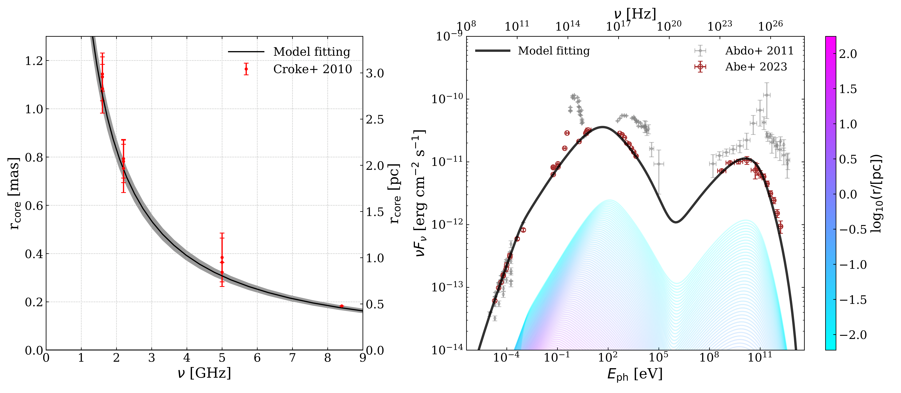<br />
图注：The core-shift relation (left panel) and the SED (right panel) reproduced by the model. In the left panel, the red points show the measured positions of the frequency-dependent radio cores, and the black solid line is the model result. The corresponding core distances at 1.6, 2.2, 5.0, and 8.4\,GHz are also shown. In the right panel, the grey points show the typical state of Mrk~501 in 2009, the brown points show the low state in 2017--2019 . The black solid line is the total model emission. The colored curves show the contributions from different distances along the jet.<br />
对应解读：对应“建议重点查看的图表”中的 core-shift 关系图和平均谱能量分布图，以及“关键图表逐图导读”的图 1、图 3。<br />
入选理由：这张图同时给出射电 core-shift 关系和宽波段 SED，是论文联合约束框架的起点：左图可检查频率依赖核心位置是否被锥形喷流模型的幂律关系再现，右图可检查平均谱从射电到高能段是否由同一径向模型解释。它直接支撑日报中“平均谱拟合好但不代表变异正确”的核心判断。<br />
来源与置信度：\(arxiv_source\)；high；\(arxiv_source\) / \(submitted_version.tex\):figure[1]</p>
<p><strong>Fig03</strong><br />
<br />
图注：Multiwavelength PSDs predicted by the baseline model. The remaining bands are: (j) SMA 230\,GHz, (k) GASP-WEBT and Tuorla optical $R$ band, (l) Swift-UVOT W1 (3.76--6.5~eV), (m) Swift-UVOT M2 (4.52--7.09~eV), (n) Swift-UVOT W2 (4.8--9.75~eV), (o) Swift-XRT (0.3--2~keV), (p) Swift-XRT (2--10~keV), (q) Fermi-LAT (0.3--500~GeV), and (r) MAGIC ($>$0.2~TeV).<br />
对应解读：对应“单一模型的功率谱密度残差图”和“关键图表逐图导读”的图 4，尤其是光学、紫外、X 射线、GeV 和 TeV 波段的 baseline PSD。<br />
入选理由：这张图展示 baseline 单一 blob 分布模型在高能和光学相关波段的 PSD 预测，是判断模型失败的关键证据。日报强调模型系统性低估光学到 γ 射线变异功率，而该图正覆盖 R 波段、Swift-UVOT、Swift-XRT、Fermi-LAT 和 MAGIC 等关键波段，比单纯平均 SED 更能体现时间域约束。<br />
来源与置信度：\(arxiv_source\)；high；\(arxiv_source\) / \(submitted_version.tex\):figure[3]</p>
<p><strong>Fig06</strong><br />
<br />
图注：Multiwavelength PSDs after the model modification.<br />
对应解读：对应“扩展 blob 模型的功率谱密度图”和“关键图表逐图导读”的图 5，重点是修改模型后高能与光学相关波段 PSD 是否落入模拟置信带。<br />
入选理由：这张图展示模型修改后的 multiwavelength PSD，是检验内外喷流不同 blob 分布是否改善光学到 γ 射线变异拟合的核心图之一。它与 Fig03 形成直接前后对照，可判断改进是否不仅是平均谱层面的，而是真正修复了高能时间域功率不足的问题。<br />
来源与置信度：\(arxiv_source\)；high；\(arxiv_source\) / \(submitted_version.tex\):figure[6]</p>
<p><strong>Fig04</strong><br />
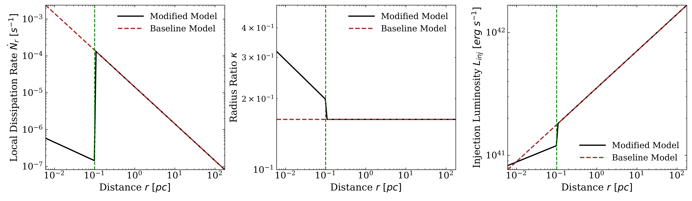<br />
图注：Distance dependence of the modified model parameters, local dissipation rate $\dot{N}_r$ (left panel), the radius ratio $\kappa(r)$ (middle panel) and the injected luminosity $L'_e(r)$ (right panel). Brown dashed lines show the baseline single-distribution model used for the SED and core-shift fit. Black solid lines show the modified distributions used to fit the multiwavelength PSDs.<br />
对应解读：对应“喷流径向参数图”和“关键图表逐图导读”的图 2，展示局部耗散率、半径比和注入电子光度随距离的变化。<br />
入选理由：这张图直接给出 baseline 单一分布与修改后分布在喷流距离上的差异，尤其适合检查日报中强调的内外喷流耗散行为差异。它把 PSD 改善背后的物理改动可视化，说明作者不是任意调整 SED 曲线，而是在径向耗散率、blob 尺度或注入功率分布上做了分区修改。<br />
来源与置信度：\(arxiv_source\)；high；\(arxiv_source\) / \(submitted_version.tex\):figure[4]</p>
<p><strong>Fig02</strong><br />
<br />
图注：Multiwavelength PSDs predicted by the baseline model. The panels show PSDs derived from long-term multiwavelength observations. The blue solid lines show the median PSDs obtained from Monte Carlo simulations of the observed light curves, and the blue shaded regions show the 1$\sigma$ and 3$\sigma$ ranges. The red points show the PSDs rebinned in logarithmic frequency bins. The black solid lines and shaded regions show the model PSDs after applying the same sampling pattern, window function, and observational uncertainties as in the data. The green dashed lines show the white-noise level from observational uncertainties. The bands are: (a) RATAN 4.7\,GHz, (b) Medicina 8\,GHz, (c) RATAN 11.2\,GHz, (d) OVRO 15\,GHz, (e) RATAN 22\,GHz, (f) Medicina 24\,GHz, (g) Mets\"ahovi 37\,GHz, (h) IRAM 100\,GHz, and (i) IRAM 230\,GHz.<br />
对应解读：对应“单一模型的功率谱密度残差图”和“关键图表逐图导读”的图 4，重点是射电到毫米波段 baseline PSD。<br />
入选理由：这张图覆盖 4.7 GHz 到 230 GHz 的射电/毫米波 PSD，对日报中提到的高频射电变异功率被 baseline 模型低估非常重要。它还显示观测采样、窗口函数和白噪声水平如何进入模型比较，有助于判断偏差是否是系统性而非单个频点离群。<br />
来源与置信度：\(arxiv_source\)；high；\(arxiv_source\) / \(submitted_version.tex\):figure[2]</p>
<p><strong>Fig05</strong><br />
<br />
图注：Multiwavelength PSDs after the model modification. The legend is the same as in Fig.~\(\ref{fig:PSD}.\) Here we show the model PSDs after applying the sampling pattern, window function, and observational uncertainties of the data.<br />
对应解读：对应“扩展 blob 模型的功率谱密度图”和“关键图表逐图导读”的图 5，重点是修改模型后射电到毫米波段 PSD 的改善。<br />
入选理由：这张图与 Fig02 构成 baseline 与修改模型在射电/毫米波段的直接对照，可检查高频射电 PSD 是否在引入内外不同 blob 分布后进入模拟置信范围。它补足 Fig06 的高能波段信息，使日报关于“多个波段同时改善”的判断更有依据。<br />
来源与置信度：\(arxiv_source\)；high；\(arxiv_source\) / \(submitted_version.tex\):figure[5]</p>
<h4 id="_67">强相关工作</h4>
<p>这篇工作与 Blandford--Königl 类型的自相似锥形喷流模型直接相关，也与 Lobanov 等关于 VLBI core-shift 反推磁场和核心位置的经典方法相关。它的不同之处在于不止把 core-shift 用作静态结构诊断，而是进一步要求同一喷流结构解释多波段功率谱密度。可检索关键词包括 “Mrk 501 core shift”, “blazar power spectral density”, “conical jet model”, “spectro timing astrometric blazar jet”。</p>
<p>与相似观测相比，Mrk 501 过去已有大量多波段观测和 TeV 耀发研究，尤其是强耀发态的谱变与快速变异。本文聚焦 2017--2019 年低态，更像是在建立基线喷流耗散结构，而不是解释某次极端耀发。读者可把它同 Mrk 421、PKS 2155-304、3C 273、BL Lac 等对象的 core-shift 和功率谱工作对照，看内外耗散分区是否为高峰频 BL Lac 的普遍性质。</p>
<p>可能的相反观点来自更简单的一区或多区谱能量分布模型：这些模型可能认为不必引入明确的内外 blob 分布，只需改变电子注入、冷却或多普勒因子即可拟合观测。本文真正需要面对的张力是：新增复杂度是否被功率谱密度显著要求，还是只是给模型更多自由度。检索关键词可用 “one-zone SSC Mrk 501”, “multi-zone SSC blazar variability”, “magnetic reconnection blazar minute variability”, “shock-in-jet blazar PSD”。</p>
<p><strong>同一事件 / 同类源线索</strong>：</p>
<ul>
<li><a href="https://arxiv.org/abs/2607.03689">https://arxiv.org/abs/2607.03689</a></li>
<li><a href="https://arxiv.org/pdf/2607.03689">https://arxiv.org/pdf/2607.03689</a></li>
</ul>
<p><strong>相似工作</strong>：</p>
<ul>
<li><a href="https://ui.adsabs.harvard.edu/abs/1998A%26A...330...79L/abstract">https://ui.adsabs.harvard.edu/abs/1998A%26A...330...79L/abstract</a></li>
<li><a href="https://ui.adsabs.harvard.edu/abs/1985ApJ...298..114M/abstract">https://ui.adsabs.harvard.edu/abs/1985ApJ...298..114M/abstract</a></li>
</ul>
<p><strong>基础理论 / 方法工作</strong>：</p>
<ul>
<li><a href="https://ui.adsabs.harvard.edu/abs/1979ApJ...232...34B/abstract">https://ui.adsabs.harvard.edu/abs/1979ApJ...232...34B/abstract</a></li>
<li><a href="https://ui.adsabs.harvard.edu/abs/1966Natur.211..468R/abstract">https://ui.adsabs.harvard.edu/abs/1966Natur.211..468R/abstract</a></li>
</ul>
<p><strong>相反观点 / 张力线索</strong>：</p>
<p>（未提供）</p>
</details>
<h3 id="7-beyond-the-impulsive-approximation-the-dynamics-and-radio-emission-of-tidal-disruption-jets">7. Beyond the Impulsive Approximation: The Dynamics and Radio Emission of Tidal Disruption Jets</h3>
<ul>
<li>来源：arXiv / astro-ph.HE</li>
<li>链接：https://arxiv.org/abs/2607.03548v1</li>
<li>作者：Fabio De Colle, Enrico Ramirez-Ruiz</li>
<li>评分：novelty 8/10，importance 8/10，relevance 8/10，final 9.00/10</li>
<li>推荐理由：用相对论流体模拟表明TDE喷流持续能量注入会显著改变动力学和射电余辉，挑战常用冲击波瞬时近似；对TDE喷流普遍性、离轴搜索和瞬变建模重要。</li>
</ul>
<p><strong>中文题目</strong>：超越瞬时爆炸近似：潮汐瓦解事件喷流的动力学与射电辐射</p>
<p><strong>做了什么</strong>：这篇文章重新检验相对论性潮汐瓦解事件喷流的射电建模中一个常用但很强的假设：把喷流当成一次性释放能量的 Blandford–McKee 相对论爆波。作者指出，潮汐瓦解事件的喷流更自然地由回落吸积在数周到数月内持续供能，而不是像许多伽马暴余辉模型那样近似为瞬时注能。通过一维和二维相对论流体模拟，并耦合同步辐射计算，他们发现：在总能量相同的情况下，持续供能喷流的前向激波更慢，射电峰值更晚、更暗，离轴辐射尤其被强烈压低。文章给出一个实用判据：只有当注能持续时间小于等效 Blandford–McKee 爆波减速时间的大约 \(10\%\) 时，瞬时近似才可靠；这对多数相对论性潮汐瓦解事件并不成立。</p>
<p><strong>为什么重要</strong>：相对论性潮汐瓦解事件的数量、喷流开角、能量和观测率，很多时候都是从射电余辉反推的。如果模型默认瞬时爆炸，就会高估离轴事件的可见性，并可能低估宇宙中真实产生喷流的潮汐瓦解事件比例。本文的重要性在于把中心引擎的时间结构带回了射电余辉问题：射电光变不只是外部介质和总能量的探针，也保留了喷流供能历史的记忆。</p>
<p><strong>理论 / 观测 / 仪器方法价值</strong>：对理论而言，本文给出了从回落供能到相对论激波演化再到同步辐射光变的数值桥梁，明确了 Blandford–McKee 解的适用边界。对观测而言，它提醒用射电非探测或浅巡天结果约束离轴喷流时，不能直接套用瞬时余辉模板。对方法而言，文章把一维、二维相对论流体动力学和辐射后处理结合，用一个简单的时间尺度比值来总结复杂模拟结果，便于后续人口统计和巡天灵敏度预测使用。</p>
<p><strong>为什么应该关注</strong>：如果你关心潮汐瓦解事件喷流到底有多常见、为什么 Swift J1644+57 这类明亮事件稀少、以及即将到来的深射电巡天能否发现大量离轴喷流，这篇文章直接影响答案。它说明“没看到亮的离轴射电余辉”并不一定意味着喷流罕见，可能只是持续供能让余辉更暗、更宽、更不成束。</p>
<details class="paper-detail">
<summary>展开详细解读：文章讲解、背景、理论、重点章节、图表与相关工作</summary>
<h4 id="_68">文章详细讲解</h4>
<p>科学问题：相对论性潮汐瓦解事件的射电辐射通常借用伽马暴余辉理论来解释，核心模板是 Blandford–McKee 自相似解，即一团已经完成注能的相对论爆波在外部介质中减速。这个近似对短时标中心引擎比较自然，但潮汐瓦解事件的质量回落率在很长时间内演化，中心引擎可能连续数周到数月向喷流供能。问题是：如果总能量相同，但能量不是瞬时释放，而是在有限时间内持续注入，射电光变和离轴可见性会发生多大变化？</p>
<p>作者怎么做：文章用一维和二维相对论流体动力学模拟来跟踪喷流头、前向激波和横向结构的演化，再用同步辐射辐射转移或后处理计算不同视角下的射电光变。对照组是等总能量的 impulsive Blandford–McKee 爆波；实验组是按潮汐瓦解事件回落吸积启发的持续供能喷流。这样设计的好处是把总能量、外部密度和微物理参数尽量固定，把差异主要归因于注能时间尺度。</p>
<p>关键结果：持续供能并不会简单等价于把同样的能量“晚一点”加进去。因为前向激波在早期没有立刻获得全部能量，它的洛伦兹因子较低，减速和辐射演化都不同。对相同总能量，持续供能模型产生更慢的前向激波，射电峰值被推迟，峰值通量系统性降低。文章特别强调，离轴观测时差异更大：连续供能 outflow 的有效 beaming 较弱，离轴射电辐射被压制，因此用瞬时模型预测的离轴检出率会偏乐观。</p>
<p>文章给出一个清晰的适用性判据：若注能持续时间 \(t_{\rm inj}\) 小于等效 Blandford–McKee 爆波减速时间 \(t_{\rm dec}\) 的约 \(0.1\)，瞬时近似才大致成立；否则，光变和角分布都会带有中心引擎记忆。对相对论性潮汐瓦解事件而言，回落供能的 \(t_{\rm inj}\) 通常不是 \(t_{\rm dec}\) 的极小分数，所以传统瞬时模板在物理上经常越界。</p>
<p>局限和下一步：文章的模型仍需要对外部介质密度、喷流初始结构、微物理参数 \(\epsilon_e\)、\(\epsilon_B\)、电子谱指数 \(p\) 作假设。真实潮汐瓦解事件还可能有复杂的盘风、喷流间歇性、磁化程度、非均匀核区介质以及观测选择效应。下一步应把这种持续供能模板嵌入贝叶斯拟合和群体合成中，用 Swift J1644+57、Swift J2058+05、AT2022cmc 以及射电非探测样本共同约束喷流发生率和能量分布。</p>
<h4 id="_69">关键结果是怎么做出来的</h4>
<p>本文最重要的证据链从一个受控比较开始：固定喷流总能量和外部介质条件，比较一次性释放能量的 Blandford–McKee 型爆波与持续注能的回落供能喷流。样本不是观测事件集合，而是一组数值实验；“事件数”对应的是不同注能持续时间、视角、维度和可能的外部参数组合。这样的设计让作者可以直接问：同样的 \(E_{\rm tot}\) 放在不同时间结构里，射电可观测量是否等价？答案是否定的。</p>
<p>统计显著性在这类理论数值论文中不是通过观测 \(p\)-value 给出，而是通过模型间系统偏差、时间尺度扫描和辐射输出的数量级差异来体现。作者用 \(t_{\rm inj}/t_{\rm dec}\) 作为控制参数，检查在不同取值下动力学轨迹是否趋近 Blandford–McKee 解。关键结论是临界值约为 \(t_{\rm inj}/t_{\rm dec}\lesssim 0.1\)；超过这个范围，瞬时解不再能同时描述激波洛伦兹因子、峰值时间和射电通量。</p>
<p>支撑结论的图表应主要包括三类：第一类是动力学演化图，例如前向激波半径、速度或洛伦兹因子随时间变化，显示持续供能模型在早期更慢；第二类是射电光变图，比较相同频率、相同视角下的峰值时间和峰值通量；第三类是角向辐射或离轴光变图，显示离轴观测者看到的信号比瞬时模型弱得多。若文章给出二维模拟切片或角向能量分布图，也应把它作为解释离轴压制的关键证据。</p>
<p>模型比较的核心不是调参得到某个源的最佳拟合，而是判断某一类模板是否物理适用。若读者要复现实验，应检查两组模型是否确实有相同的总注入能量，外部密度剖面是否一致，辐射后处理采用的 \(\epsilon_e\)、\(\epsilon_B\)、\(p\) 是否固定，以及光变差异是否远大于数值分辨率或辐射微物理可引入的变化。</p>
<p>主要系统误差包括：一维模拟可能过度限制横向扩展，二维轴对称可能不能完全代表三维湍动和喷流不稳定性；外部介质若不是均匀或简单幂律，\(t_{\rm dec}\) 和峰值通量都会改变；同步辐射自吸收和电子冷却处理会影响低频射电峰值；中心引擎若强烈间歇而非平滑回落，可能介于瞬时和连续供能之间。稳健性检验应看作者是否改变分辨率、视角、注能持续时间和辐射参数后仍保持“持续供能更暗、更晚、离轴更难见”的趋势。</p>
<details class="paper-subdetail">
<summary>展开背景、理论、公式、模型、章节和图表导读</summary>
<h4 id="_70">背景知识</h4>
<p>潮汐瓦解事件发生在恒星经过超大质量黑洞潮汐半径以内时，恒星被拉裂，一部分物质逃逸，另一部分物质回落并吸积。对大多数潮汐瓦解事件，主要观测信号在紫外、光学和软 X 射线；但少数事件表现出强烈高能辐射和射电余辉，被解释为产生了指向我们的相对论喷流。Swift J1644+57 是这一类的原型之一，之后 Swift J2058+05、Swift J1112.2-8238、AT2022cmc 等事件进一步推动了相对论性潮汐瓦解事件研究。</p>
<p>历史上，射电余辉建模大量借鉴伽马暴理论。伽马暴余辉中，中心引擎活动时间通常远短于外部激波减速时间，因此把爆炸视为瞬时能量释放往往是合理的一阶近似。Blandford–McKee 解给出了超相对论绝热爆波的自相似结构，是解释余辉光变、谱能分布和喷流开角的标准工具。许多潮汐瓦解事件射电分析也沿用这一框架，把观测到的射电光变反推为外部介质密度、总能量和视角。</p>
<p>但潮汐瓦解事件与伽马暴的中心引擎物理有本质不同。潮汐瓦解后的回落率通常按近似 \(t^{-5/3}\) 衰减，超爱丁顿吸积和喷流功率可持续很久。即使高能辐射在某些阶段快速变化，整体能量注入也未必已经在外部激波减速前完成。因此，射电余辉可能不只由总能量决定，还由能量注入的时间分布决定。</p>
<p>现在值得重新看这个问题，有两个原因。第一，观测上，射电巡天和快速暂现源跟踪正在扩大潮汐瓦解事件样本，越来越多非探测也被用来约束离轴喷流比例。第二，理论上，若用瞬时模板高估离轴射电亮度，就会把“没有发现很多离轴事件”误读为“喷流很罕见”。这直接影响喷流发生率、黑洞自旋相关性和宇宙射电暂现源背景的估计。</p>
<p>该领域常见误区之一是把总能量相同等同于余辉相同。对外部激波而言，能量何时到达激波与能量总量一样重要。另一个误区是把离轴余辉简单理解为“等到喷流减速、beaming cone 变宽后就会亮起来”。如果持续供能改变了角向结构和激波速度，离轴峰值可能不仅延迟，而且显著变暗。</p>
<h4 id="_71">基础理论 / 方法脉络</h4>
<p>基本物理图像是：相对论喷流把能量注入周围核区介质，驱动前向激波。激波把外部质子和电子加热，并通过磁场放大产生非热电子，同步辐射形成射电余辉。观测者看到的光变由三部分共同决定：激波动力学、辐射微物理、以及相对论 beaming 和到达时延。</p>
<p>在瞬时爆炸模型中，喷流能量在外部介质尚未显著减速前已经给定，随后爆波近似绝热演化。Blandford–McKee 解给出能量 \(E\)、外部密度 \(n\)、半径 \(R\) 与激波洛伦兹因子 \(\Gamma\) 的关系。减速时间 \(t_{\rm dec}\) 大致对应 swept-up 外部介质的静能经 \(\Gamma^2\) 放大后可与初始能量相比的时刻。</p>
<p>本文关心的持续供能模型中，喷流功率 \(L_j(t)\) 在有限时间 \(t_{\rm inj}\) 内注入，总能量仍可写成 \(E_{\rm tot}=\int L_j(t)dt\)。但在任意观测时刻，激波真正获得的能量 \(E(<t)\) 小于 \(E_{\rm tot}\)，因此 \(\Gamma(t)\)、半径 \(R(t)\) 和辐射峰值都不同于瞬时模型。若 \(t_{\rm inj}\ll t_{\rm dec}\)，差异会被抹平；若两者可比，外部激波会持续“记得”中心引擎。</p>
<p>辐射方面，文章采用标准同步辐射框架：一部分激波后内能进入电子，比例为 \(\epsilon_e\)；一部分进入磁场，比例为 \(\epsilon_B\)；电子能谱为幂律，指数为 \(p\)。不同频率的光变取决于特征频率、冷却频率、自吸收频率和峰值通量。射电波段尤其容易受到自吸收、外部密度和角向结构影响。</p>
<p>常见退化包括：降低 \(E_{\rm tot}\)、降低 \(n\)、降低 \(\epsilon_B\) 或改成持续供能都可能让射电光变变暗；改变视角 \(\theta_{\rm obs}\) 和喷流开角 \(\theta_j\) 也会改变峰值时间。本文的价值在于通过受控模拟把“时间结构效应”单独拿出来量化，说明它不是微物理参数的小修正，而可能改变离轴检出率的数量级判断。</p>
<h4 id="_72">公式与推导</h4>
<p>第一步是写出中心引擎注能的能量账本。若喷流功率为 \(L_j(t)\)，持续到 \(t_{\rm inj}\)，则总能量为</p>
<div class="math-display">\[E_{\rm tot}=\int_0^{t_{\rm inj}} L_j(t)\,dt .\]</div>
<p>这里 \(L_j(t)\) 是双边或单边喷流功率，取决于作者定义；\(t_{\rm inj}\) 是引擎有效供能时间。瞬时模型等价于令 \(L_j(t)\) 在动力学时间上趋近 \(\delta\) 函数，使外部激波从一开始就携带近似 \(E_{\rm tot}\)。</p>
<p>潮汐瓦解事件的供能常由回落率启发，可近似写成</p>
<div class="math-display">\[\dot M_{\rm fb}(t)=\dot M_{\rm p}\left({t\over t_{\rm p}}\right)^{-5/3},\quad t\gtrsim t_{\rm p},\]</div>
<p>并令</p>
<div class="math-display">\[L_j(t)=\eta_j \dot M_{\rm fb}(t)c^2 .\]</div>
<p>其中 \(\dot M_{\rm p}\) 是峰值回落率，\(t_{\rm p}\) 是峰值时间，\(\eta_j\) 是把回落质量能转化为喷流功率的效率。真实模型可比这个更复杂，但这个式子说明潮汐瓦解事件天然不是短脉冲供能。</p>
<p>对瞬时相对论爆波，Blandford–McKee 标度可概括为</p>
<div class="math-display">\[E\simeq {16\pi\over 17} R^3 n m_p c^2 \Gamma^2 ,\]</div>
<p>其中 \(R\) 是激波半径，\(n\) 是外部数密度，\(m_p\) 是质子质量，\(\Gamma\) 是激波洛伦兹因子。这个关系体现了绝热相对论爆波中能量主要储存在扫掠介质的内能里，并随 \(\Gamma^2\) 放大。</p>
<p>减速半径可由扫掠质量条件估计：</p>
<div class="math-display">\[m_{\rm sw}(R_{\rm dec})\simeq {E\over \Gamma_0^2 c^2},\quad m_{\rm sw}={4\pi\over 3}R^3 n m_p .\]</div>
<p>于是均匀介质中的减速半径约为</p>
<div class="math-display">\[R_{\rm dec}\simeq \left({3E\over 4\pi n m_p c^2 \Gamma_0^2}\right)^{1/3},\]</div>
<p>观测者时间约为</p>
<div class="math-display">\[t_{\rm dec}\simeq {R_{\rm dec}\over 2c\Gamma_0^2}.\]</div>
<p>这里 \(\Gamma_0\) 是初始洛伦兹因子。本文的核心判据就是比较 \(t_{\rm inj}\) 与这个等效瞬时爆波的 \(t_{\rm dec}\)。</p>
<p>文章的经验结论可写成一个适用性条件：</p>
<div class="math-display">\[{t_{\rm inj}\over t_{\rm dec}}\lesssim 0.1\quad \Rightarrow \quad \hbox{impulsive approximation roughly valid}.\]</div>
<p>若这个比值接近或大于 \(0.1\)，激波在减速前尚未获得全部能量，动力学不再由单一 \(E_{\rm tot}\) 的 Blandford–McKee 解描述。</p>
<p>同步辐射后处理中，激波后磁场常写成</p>
<div class="math-display">\[B' = \left(32\pi \epsilon_B \Gamma^2 n m_p c^2\right)^{1/2},\]</div>
<p>其中撇号表示共动系，\(\epsilon_B\) 是磁场能量占内能的比例。最低电子洛伦兹因子可估计为</p>
<div class="math-display">\[\gamma_m \simeq \epsilon_e {p-2\over p-1}{m_p\over m_e}(\Gamma-1),\]</div>
<p>其中 \(\epsilon_e\) 是电子能量比例，\(p\) 是电子幂律指数，\(m_e\) 是电子质量。</p>
<p>对应的特征同步辐射频率为</p>
<div class="math-display">\[\nu_m \simeq {\Gamma\over 1+z}{3q_e B'\over 4\pi m_e c}\gamma_m^2 ,\]</div>
<p>其中 \(z\) 是红移，\(q_e\) 是电子电荷。因为 \(B'\) 和 \(\gamma_m\) 都依赖 \(\Gamma\)，持续供能导致的较低 \(\Gamma\) 会显著改变射电谱峰和光变峰值。</p>
<p>观测通量可形式化写成</p>
<div class="math-display">\[F_\nu(t_{\rm obs},\theta_{\rm obs})={1+z\over 4\pi d_L^2}\int j'_{\nu'} D^3\,dV',\]</div>
<p>其中 \(d_L\) 是光度距离，\(j'_{\nu'}\) 是共动系发射率，\(D=[\Gamma(1-\beta\cos\theta)]^{-1}\) 是多普勒因子，\(\theta_{\rm obs}\) 是视线角。离轴辐射对 \(D\) 极敏感，因此持续供能改变 \(\Gamma\) 和角向结构后，会强烈影响可探测性。</p>
<h4 id="_73">模型拟合 / 应用方法</h4>
<p>本文本身主要是数值理论比较，而不是对单一观测事件做完整贝叶斯拟合。但它直接影响该类事件的拟合方法：如果用瞬时 Blandford–McKee 模板拟合持续供能喷流，拟合可能通过降低总能量、改变外部密度、调节 \(\epsilon_B\) 或增大视角来“吸收”模型错误，从而得到物理上有偏的参数。</p>
<p>实际拟合射电潮汐瓦解事件时，数据通常是多频通量 \(F_\nu(t)\) 及其误差，模型参数包括 \(E_{\rm tot}\)、\(n\) 或密度剖面参数、\(\theta_j\)、\(\theta_{\rm obs}\)、\(t_{\rm inj}\)、\(L_j(t)\) 的形状、\(\epsilon_e\)、\(\epsilon_B\)、\(p\) 和红移固定后的距离。似然可近似采用高斯通量误差，也可能需要处理上限、非高斯系统误差和不同仪器的标定偏差。</p>
<p>残差诊断非常关键。若瞬时模型系统性地让峰值过早、峰值过亮，或在离轴情况下预言一个观测中不存在的宽峰，不能简单解释为数据噪声。应检查残差是否随时间同号、是否在所有频率上同时出现、是否低频受自吸收影响更强。持续供能模型的一个可检验特征是光变峰值推迟且峰值通量降低，同时不同频率峰值的相对时序也会改变。</p>
<p>主要退化关系包括 \(E_{\rm tot}\) 与 \(n\) 的退化、\(\epsilon_B\) 与通量归一化的退化、\(\theta_{\rm obs}\) 与 \(t_{\rm peak}\) 的退化，以及 \(t_{\rm inj}\) 与外部密度剖面之间的退化。若只有单频射电光变，几乎不可能唯一分辨持续供能和低密度环境；多频谱演化、早期高能或光学约束、以及晚期高分辨率射电成像可以打破一部分退化。</p>
<p>模型失败的场景也应明确：如果喷流高度磁化，纯流体模拟可能低估磁压和准直效应；如果中心引擎强烈间歇，平滑回落功率模型会错过内部碰撞或再增亮；如果核区介质由盘风塑造，均匀密度或简单幂律密度假设会偏离真实环境。本文的结论应被看作“瞬时模板的适用边界”，而不是所有相对论性潮汐瓦解事件的最终统一模型。</p>
<h4 id="_74">重点章节 / 结果段落怎么读</h4>
<p>数据/数值设置部分应首先阅读。重点看作者如何定义瞬时模型和持续供能模型，是否保持相同的 \(E_{\rm tot}\)、外部密度和初始喷流几何。还要看一维与二维模拟分别用于什么问题：一维更适合扫参数和理解径向动力学，二维更适合角向结构、横向扩展和离轴辐射。</p>
<p>动力学结果部分是全文核心。读者应关注前向激波的 \(R(t)\)、\(\Gamma(t)\) 或速度演化，确认持续供能模型为什么比瞬时模型慢。尤其要找作者如何定义 \(t_{\rm dec}\)，以及如何从模拟中得到 \(t_{\rm inj}/t_{\rm dec}\lesssim 0.1\) 这个判据。</p>
<p>辐射计算部分需要检查同步辐射微物理假设，包括 \(\epsilon_e\)、\(\epsilon_B\)、\(p\)、自吸收和冷却处理。不要只看最终光变；应看这些假设是否在模型间保持一致，因为本文要证明的是注能历史造成的差异，而不是微物理调参造成的差异。</p>
<p>离轴观测和 beaming 部分最关系到巡天预测。应重点读不同 \(\theta_{\rm obs}\) 下的光变比较，理解为什么持续供能 outflow 比瞬时爆波产生更弱的离轴射电信号。这一节直接连接到“喷流可能比当前射电探测暗示的更常见”这一结论。</p>
<p>讨论和局限部分应看作者如何把模拟结果外推到真实潮汐瓦解事件。特别要关注他们是否讨论外部密度不确定性、二维轴对称限制、微物理参数退化、以及与 Swift J1644+57 等原型事件的关系。</p>
<h4 id="_75">建议重点查看的图表</h4>
<ol>
<li>
<p>动力学演化图：看 \(R(t)\)、\(\Gamma(t)\) 或激波速度随时间的曲线，比较瞬时和持续供能模型在相同 \(E_{\rm tot}\) 下是否明显分离。</p>
</li>
<li>
<p>\(t_{\rm inj}/t_{\rm dec}\) 扫描图：看模型偏离 Blandford–McKee 解的程度如何随该比值变化，尤其是约 \(0.1\) 的临界判据是否由多组模拟支持。</p>
</li>
<li>
<p>射电光变比较图：看固定频率下 \(F_\nu(t)\) 的峰值时间、峰值通量和衰减斜率，确认持续供能是否普遍更晚、更暗。</p>
</li>
<li>
<p>多视角或离轴光变图：看不同 \(	heta_{\rm obs}\) 下瞬时模型与持续供能模型的差异是否随视角增大而放大。</p>
</li>
<li>
<p>二维流体结构图：看能量、密度或洛伦兹因子在半径—角度平面上的分布，判断持续供能如何改变角向能量结构和 beaming。</p>
</li>
<li>
<p>谱或多频诊断图：若文章给出不同射电频率光变，应看自吸收频率附近的峰值迁移，避免把低频延迟全部误解为动力学延迟。</p>
</li>
<li>
<p>稳健性或分辨率检验表：看数值分辨率、边界条件或辐射参数改变后，核心趋势是否保持。</p>
</li>
</ol>
<h4 id="_76">关键图表逐图导读</h4>
<p>图 1：通常应是模型设置或动力学基准图。横轴多半是源系时间或观测者时间，纵轴可能是喷流功率、累计能量、激波半径或洛伦兹因子。数据点或曲线应区分瞬时注能和持续注能。读图关键是确认两类模型最终 \(E_{\rm tot}\) 相同，但早期累计能量不同；陷阱是不要把早期低亮度简单解释为低总能量。</p>
<p>图 2：若为 Blandford–McKee 对照图，横轴可能是时间，纵轴为 \(\Gamma\)、\(R\) 或归一化偏差。模型线应显示持续供能曲线在 \(t_{\rm inj}\) 与 \(t_{\rm dec}\) 可比时偏离自相似解。读者应检查偏差是在减速前已出现，还是只在后期数值边界或非相对论阶段出现。</p>
<p>图 3：射电光变图最重要。横轴为观测者时间，纵轴为通量密度 \(F_\nu\)，不同颜色表示注能时标或视角。主要结论应是持续供能峰值更晚、更暗。读图陷阱是低频射电可能受自吸收影响，峰值时间并不只反映动力学；应结合谱演化或高频光变一起看。</p>
<p>图 4：离轴光变或角向 beaming 图应显示 \(\theta_{\rm obs}\) 增大时模型差异急剧增强。横轴为时间，纵轴为 \(F_\nu\)，不同曲线为视角；也可能横轴为视角，纵轴为峰值通量或可探测体积。重点看持续供能模型是否在离轴方向比瞬时模型低很多。陷阱是仪器灵敏度线若未画出，肉眼看到的差异不一定等于检出率差异；需要把通量与巡天阈值比较。</p>
<p>图 5：二维模拟切片若存在，坐标可能是轴向距离与横向距离，颜色为密度、压力或 \(\Gamma\)。模型线或色标显示喷流头、弓形激波和 cocoon。读图时要看持续供能是否导致更宽、更慢或更弱准直的结构。陷阱是二维轴对称可能强化某些准直或回流结构，不能直接等同三维。</p>
<p>图 6：稳健性图或表应列出不同微物理参数、外部密度或数值分辨率下的峰值时间和峰值通量。关键不是某个数值，而是趋势是否稳定：持续供能相对瞬时模型的压低是否超过系统误差范围。</p>
</details>
<h4 id="_77">论文原图 / 可嵌入图片</h4>
<p><strong>Fig04</strong><br />
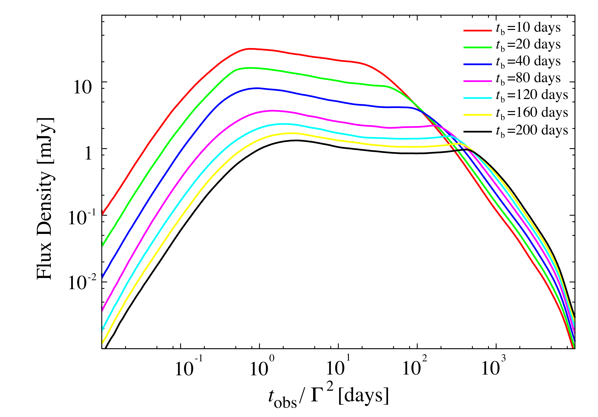<br />
图注：Radio light curves at $\nu=4.86$ GHz for the constantly-powered, one-dimensional simulations shown in Figure~\(\ref{fig3}.\) The colored curves correspond to continuously powered blast waves with different energy injection times, $t_b$. Increasing the duration of energy injection systematically lowers the peak radio luminosity and delays the time of maximum emission.<br />
对应解读：“建议重点查看的图表”第3项射电光变比较图；“关键图表逐图导读”图3关于固定频率下峰值时间和峰值通量的讨论。<br />
入选理由：该图直接给出4.86 GHz射电光变，并按不同注能时标比较持续供能模型，最清楚地支撑“注能持续越久，射电峰值越晚、越暗”的核心结论，是日报中射电诊断段落最应嵌入的图。<br />
来源与置信度：\(arxiv_source\)；high；\(arxiv_source\) / main.tex:figure[4]</p>
<p><strong>Fig10</strong><br />
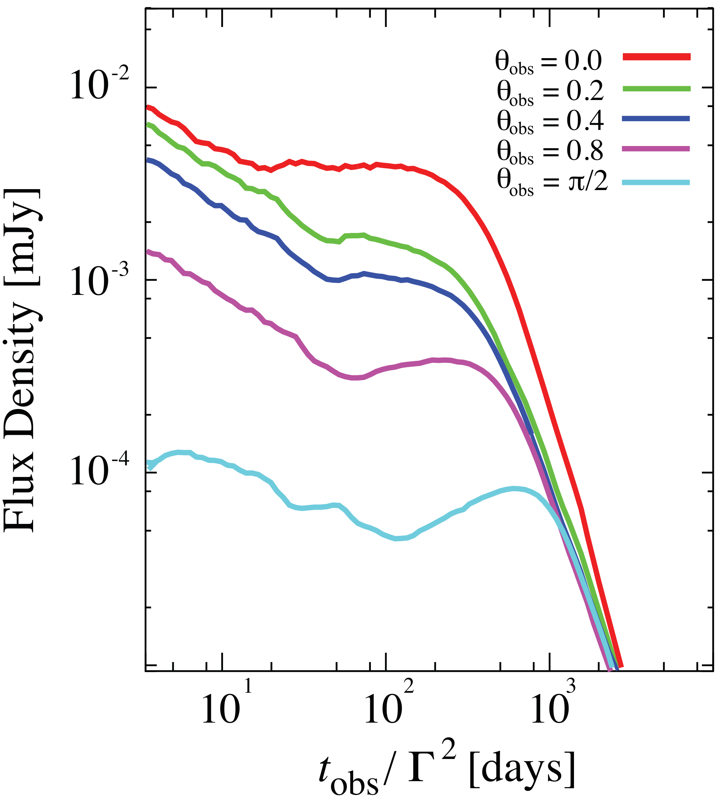<br />
图注：Radio light curves at $\nu=4.86$ GHz for a fallback-powered jet viewed from observer angles $\theta_{\rm obs}=0$, 0.2, 0.4, 0.8, and $\pi/2$. The jet follows the fallback luminosity history shown in Figure~\(\ref{fig1},\) has an initial half-opening angle $\theta_{\rm jet}=0.1$, and an isotropic-equivalent energy $E_{\rm iso}=4\times10^{53}$ erg. As the viewing angle increases, the observed flux decreases and the radio peak shifts to later times as relativistic beaming becomes progressively weaker. The suppression of the radio emission for off-axis observers is substantially stronger than predicted by impulsive models because the lower shock velocities produced by sustained energy injection reduce the degree of Doppler boosting.<br />
对应解读：“建议重点查看的图表”第4项多视角或离轴光变图；“关键图表逐图导读”图4关于离轴观测和beaming压制的讨论。<br />
入选理由：该图展示同一fallback-powered喷流在多个观测角下的4.86 GHz光变，直接对应离轴通量降低、峰值推迟以及持续供能导致Doppler boosting减弱的结论，是解释检出率和离轴射电压制最关键的候选图。<br />
来源与置信度：\(arxiv_source\)；high；\(arxiv_source\) / main.tex:figure[10]</p>
<p><strong>Fig05</strong><br />
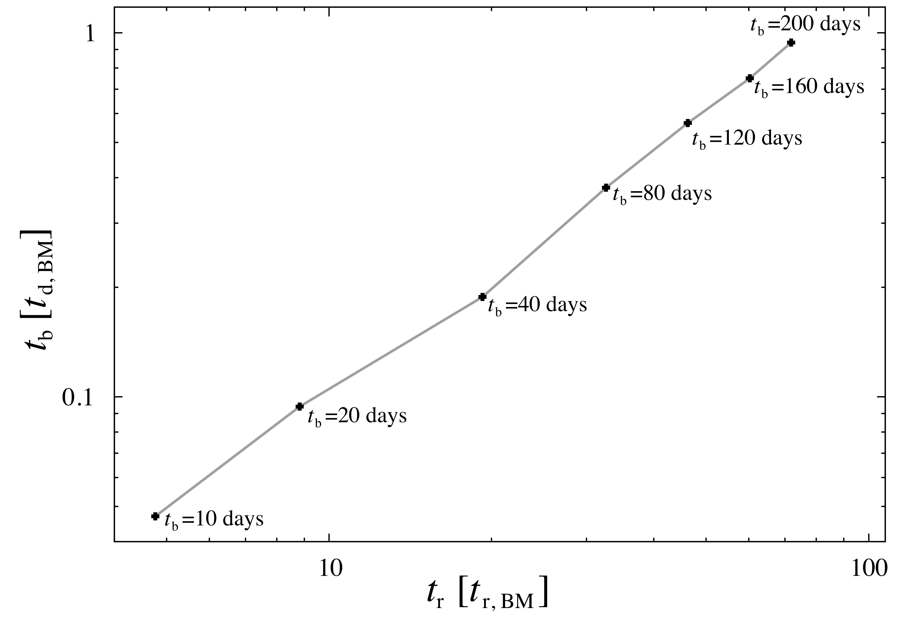<br />
图注：Energy injection time, $t_b$, normalized to the deceleration time of an equivalent impulsive Blandford--McKee blast wave, $t_{\rm d,BM}$, as a function of the radio peak time, $t_r$, normalized to the peak time of the corresponding impulsive solution, $t_{\rm r,BM}$ for the one-dimensional simulations shown in Figures~\(\ref{fig3}\) and \(\ref{fig4}.\) Although the energy injection terminates before the Blandford--McKee deceleration time for all models ($t_b<t_{\rm d,BM}$), the radio emission peaks substantially later than in the impulsive case.<br />
对应解读：“建议重点查看的图表”第2项关于t_inj/t_dec扫描图；详细解读中“约0.1的瞬时近似适用边界”相关段落。<br />
入选理由：该图以注能时间t_b相对等效BM减速时间t_d,BM为横向诊断，并比较射电峰值时间相对BM解的延迟，最贴近日报中强调的t_inj/t_dec判据和瞬时近似失效条件。<br />
来源与置信度：\(arxiv_source\)；high；\(arxiv_source\) / main.tex:figure[5]</p>
<p><strong>Fig03</strong><br />
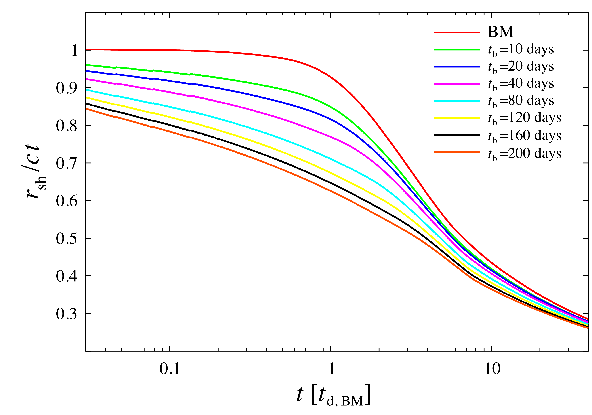<br />
图注：Evolution of the mean forward shock velocity, $\langle \beta_{\rm sh}\rangle = r_{\rm sh}/ct$, for one-dimensional impulsive and continuously powered blast waves with the same isotropic-equivalent energy, $E_{\rm iso}=4\times10^{53}$ erg. The impulsive model (BM) is initialized using the Blandford--McKee self-similar solution, while the powered models assume constant energy injection for $t<t_b$, followed by the canonical fallback decay $L_{\rm j}\propto t^{-5/3}$. The circumnuclear medium corresponds to a $10^7\,M_\odot$ black hole (Figure~\ref{fig1}). Increasing the duration of energy injection systematically reduces the shock velocity because, at any given time, only a fraction of the eventual explosion energy has been transferred to the blast wave. Once the bulk of the energy has been injected, the powered solutions gradually converge toward the impulsive evolution.<br />
对应解读：“建议重点查看的图表”第1项动力学演化图；“关键图表逐图导读”图2关于BM对照和激波速度偏离的讨论。<br />
入选理由：该图直接比较相同总能量下BM瞬时模型与不同持续注能时标模型的平均前向激波速度，证明持续供能会使激波系统性更慢，是连接中心引擎注能历史与后续射电光变差异的动力学依据。<br />
来源与置信度：\(arxiv_source\)；high；\(arxiv_source\) / main.tex:figure[3]</p>
<p><strong>Fig09</strong><br />
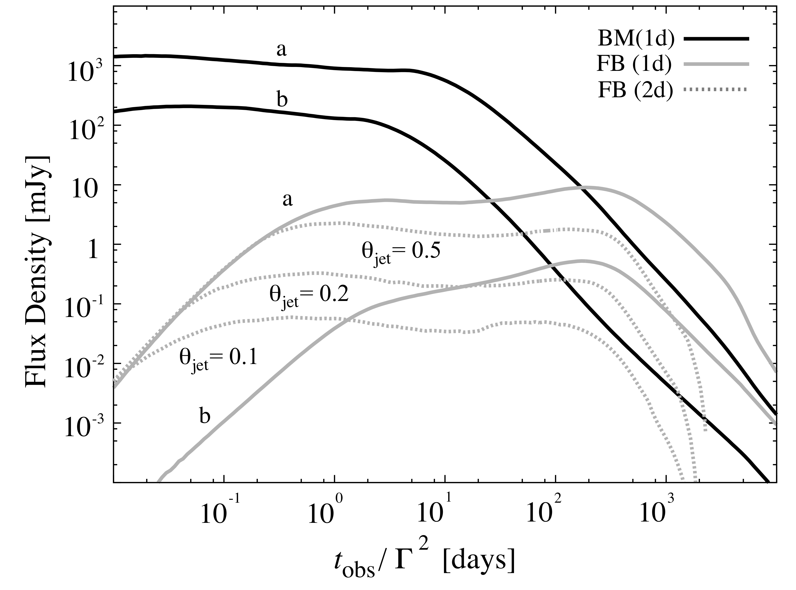<br />
图注：On-axis radio light curves at $\nu=4.86$ GHz comparing impulsive Blandford--McKee (BM) blast waves with fallback-powered (FB) jet models. The FB simulations adopt the physically motivated jet luminosity histories shown in Figure~\(\ref{fig1}.\) Results are shown for isotropic-equivalent energies of $E_{\rm iso}=2\times10^{51}$ erg (models labeled <code>b'') and $E_{\rm iso}=4\times10^{53}$ erg (models labeled</code>a''). The two-dimensional calculations assume jet half-opening angles of $\theta_{\rm jet}=0.1$, 0.2, and 0.5 rad. Relative to the BM solutions, the FB models exhibit systematically later and fainter radio peaks as a consequence of sustained energy injection. For the FB models, the two-dimensional jets produce lower on-axis fluxes than the corresponding one-dimensional calculations because the emitting surface is reduced in collimated outflows, with narrower jets yielding progressively lower radio luminosities.<br />
对应解读：“建议重点查看的图表”第3项射电光变比较图，以及模型拟合段落中关于用BM模板会导致峰值过早、过亮的系统偏差。<br />
入选理由：该图直接把impulsive BM光变与fallback-powered喷流光变放在同一4.86 GHz频率下比较，并包含不同能量和二维喷流开角，能支持“BM模板会高估早期/峰值射电亮度”的拟合偏差讨论。<br />
来源与置信度：\(arxiv_source\)；high；\(arxiv_source\) / main.tex:figure[9]</p>
<p><strong>Fig07</strong><br />
<br />
图注：Density maps from a two-dimensional simulation of a relativistic jet propagating through the circumnuclear medium surrounding a $10^7\,M_\odot$ black hole at $t=7$, 47, and 380 days (left to right). The jet is injected at the inner boundary with Lorentz factor $\Gamma_{\rm jet}=10$, isotropic-equivalent energy $E_{\rm iso}=4\times10^{53}$ erg, and a luminosity history corresponding to the fallback-powered model shown in Figure~\(\ref{fig1}.\) The interaction of the jet with the ambient medium produces the characteristic forward and reverse shock structure while inflating a hot cocoon that expands laterally and confines the relativistic jet. The physical scale shown in each panel increases with time: the horizontal bars correspond to $3\times10^{15}$, $3\times10^{16}$, and $3\times10^{17}$ cm, respectively. The simulation is performed on a spherical polar grid extending from $3\times10^{15}$ to $2\times10^{18}$ cm with a jet half-opening angle $\theta_{\rm jet}=0.1$ rad. The computational grid is resolved with $200\times2$ cells in the radial and polar directions and 14 levels of adaptive mesh refinement.<br />
对应解读：“建议重点查看的图表”第5项二维流体结构图；“关键图表逐图导读”图5关于喷流头、弓形激波和cocoon结构的讨论。<br />
入选理由：该图给出二维密度切片，显示fallback-powered相对论喷流在核周介质中传播时的前向/反向激波和热cocoon结构，是理解持续供能如何改变角向结构、准直和横向扩展的主要形态学证据。<br />
来源与置信度：\(arxiv_source\)；high；\(arxiv_source\) / main.tex:figure[7]</p>
<h4 id="_78">强相关工作</h4>
<p>这篇工作与 Swift J1644+57 以来的相对论性潮汐瓦解事件射电建模直接相关。早期研究通常用外部激波和同步辐射框架解释其长期射电演化，并从中估计喷流能量、外部密度和视角。本文并不否定这些物理图像，而是指出其中“瞬时注能”这一技术假设在潮汐瓦解事件中未必成立。检索关键词可用 “relativistic tidal disruption event radio afterglow”, “Swift J1644+57 external shock”, “AT2022cmc radio jet”, “off-axis TDE jet”。</p>
<p>它也与伽马暴余辉理论中的能量注入问题有关。伽马暴余辉中也存在 plateau、refreshed shocks 和长期中心引擎活动，但许多标准余辉应用仍以 Blandford–McKee 自相似解为基准。本文把这个问题移植到潮汐瓦解事件，并强调回落吸积给出的长注能时标是该类事件的自然属性。检索关键词可用 “Blandford McKee solution”, “energy injection afterglow”, “refreshed shock”, “continuous jet hydrodynamic simulation”。</p>
<p>可能存在张力的方向是观测人口统计：若过去基于瞬时模型的离轴射电预测过亮，那么对喷流发生率的上限可能过严；反过来，若某些事件的射电光变确实很接近瞬时模型，则需要解释其中心引擎为何注能短、或外部减速时间为何很长。后续应把本文模板用于同一事件拟合和非探测样本重分析。</p>
<p><strong>同一事件 / 同类源线索</strong>：</p>
<ul>
<li><a href="https://arxiv.org/abs/2607.03548">https://arxiv.org/abs/2607.03548</a></li>
<li><a href="https://arxiv.org/abs/1104.3257">https://arxiv.org/abs/1104.3257</a></li>
<li><a href="https://arxiv.org/abs/1104.4787">https://arxiv.org/abs/1104.4787</a></li>
<li><a href="https://arxiv.org/abs/1106.3568">https://arxiv.org/abs/1106.3568</a></li>
<li><a href="https://arxiv.org/abs/2211.16530">https://arxiv.org/abs/2211.16530</a></li>
</ul>
<p><strong>相似工作</strong>：</p>
<ul>
<li><a href="https://arxiv.org/abs/1106.3568">https://arxiv.org/abs/1106.3568</a></li>
<li><a href="https://arxiv.org/abs/1206.2922">https://arxiv.org/abs/1206.2922</a></li>
<li><a href="https://arxiv.org/abs/2211.16530">https://arxiv.org/abs/2211.16530</a></li>
</ul>
<p><strong>基础理论 / 方法工作</strong>：</p>
<ul>
<li><a href="https://ui.adsabs.harvard.edu/abs/1976PhFl...19.1130B/abstract">https://ui.adsabs.harvard.edu/abs/1976PhFl...19.1130B/abstract</a></li>
<li><a href="https://ui.adsabs.harvard.edu/abs/1988Natur.333..523R/abstract">https://ui.adsabs.harvard.edu/abs/1988Natur.333..523R/abstract</a></li>
<li><a href="https://arxiv.org/abs/astro-ph/9709273">https://arxiv.org/abs/astro-ph/9709273</a></li>
</ul>
<p><strong>相反观点 / 张力线索</strong>：</p>
<ul>
<li><a href="https://arxiv.org/abs/1104.3257">https://arxiv.org/abs/1104.3257</a></li>
<li><a href="https://arxiv.org/abs/1104.4787">https://arxiv.org/abs/1104.4787</a></li>
</ul>
</details>
<h3 id="8-nmma-an-extended-bayesian-framework-for-nuclear-multimessenger-astronomy-in-the-era-of-next-generation-detectors">8. nmma: An extended Bayesian framework for Nuclear Multimessenger Astronomy in the Era of Next-Generation Detectors</h3>
<ul>
<li>来源：arXiv / astro-ph.HE</li>
<li>链接：https://arxiv.org/abs/2607.03045v1</li>
<li>作者：Henrik Rose, Hauke Koehn, Thibeau Wouters, Peter T. H. Pang, Mattia Bulla, Michael W. Coughlin, Tim Dietrich</li>
<li>评分：novelty 8/10，importance 8/10，relevance 8/10，final 9.00/10</li>
<li>推荐理由：nmma多信使贝叶斯框架重大升级，可联合GW、kilonova、afterglow和核物理参数并显著加速推断；对下一代双中子星多信使分析和EOS约束很有复用价值。</li>
</ul>
<p><strong>中文题目</strong>：nmma：面向下一代探测器时代核多信使天文学的扩展贝叶斯框架</p>
<p><strong>做了什么</strong>：这篇文章介绍了核多信使天文学软件框架 nmma 的一次大升级：把引力波、千新星、余辉和中子星核物质方程状态的推断放进同一个可扩展的贝叶斯框架中，并用替代模型、机器学习 emulator 和波形加速技术把计算成本压下来。核心进展不是提出某个单一物理模型，而是让研究者能够直接在核物理参数、引力波参数、电磁暂现源参数以及宇宙学参数之间联合采样。作者用 \(2017\) 年双中子星并合事件 \(GW170817/AT2017gfo\) 的再分析和一个未来探测示例展示：在使用更细物理模型的同时，计算速度可提升约 \(20\) 到 \(60\) 倍，并能在假想未来事件中同时约束核物质参数和哈勃常数 \(H_0\)。</p>
<p><strong>为什么重要</strong>：下一代引力波探测器和宽场巡天会把双中子星多信使事件从“稀有个例”推向“样本统计”。瓶颈将不再只是探测，而是如何把高维、强退化、跨物理领域的数据一致地放进同一个推断问题中。nmma 的重要性在于它把核物理方程状态、潮汐形变、喷流余辉、千新星辐射输运和宇宙学距离标尺连接起来，使多信使分析不再停留在事后拼接约束，而是成为一个端到端的联合贝叶斯问题。</p>
<p><strong>理论 / 观测 / 仪器方法价值</strong>：对理论而言，这个框架让核物质微观参数可以直接被天文观测更新，而不是只在宏观量 \(M\)、\(R\)、\(\Lambda\) 层面间接比较。对观测而言，它能把引力波定位、距离、倾角、千新星光变和余辉信息组合起来，减少单信使退化。对方法和软件而言，文章展示了替代模型、emulator 和快速似然评估如何把原本昂贵的多物理模型推断变成可用于下一代事件流的实用工具。</p>
<p><strong>为什么应该关注</strong>：如果你关心中子星半径、最大质量、核物质相变、喷流结构、千新星元素合成或暗标准汽笛宇宙学，这篇文章的价值在于提供了一个统一分析平台。未来真正有决定性的结果很可能不来自某一个“最漂亮”的事件，而来自大量事件的联合层级推断；nmma 这类框架决定了这些数据能否被物理上自洽、计算上可承受地转化为核物理和宇宙学约束。</p>
<details class="paper-detail">
<summary>展开详细解读：文章讲解、背景、理论、重点章节、图表与相关工作</summary>
<h4 id="_79">文章详细讲解</h4>
<p>科学问题：双中子星并合同时给出引力波、电磁辐射和核物质信息，但这些信息在参数空间中高度耦合。引力波主要约束质量、距离、倾角、自旋和潮汐形变；千新星光变受抛射物质量、速度、不透明度、组分和视角控制；余辉受喷流能量、结构、外介质密度和观测角影响；而潮汐形变又来自中子星方程状态。过去许多分析把这些环节分开做：先用引力波得到 \(m_1\)、\(m_2\)、\(\Lambda_1\)、\(\Lambda_2\)，再与光变模型或方程状态模型比较。本文要解决的是如何把这些步骤合并为一个可实际运行的联合贝叶斯推断框架。</p>
<p>作者怎么做：文章升级了 Nuclear Multimessenger Astronomy 框架，即 nmma。它的核心是模块化贝叶斯采样：引力波模块可调用现代波形近似和加速似然；千新星模块使用快速 surrogate 或 emulator 近似辐射输运模型；余辉模块接入相对论喷流余辉模型；核物理模块使用从核参数到中子星宏观性质的 emulator，把核参数映射到质量-半径关系、潮汐形变和最大质量等量。这样采样器不只在经验的光变参数或宏观方程状态参数上走，而是可以直接对核物质参数、天体物理参数和宇宙学参数联合采样。</p>
<p>关键结果：作者用 \(GW170817/AT2017gfo\) 的再分析展示框架能力。摘要中最明确的性能结果是，在使用比以往更细致物理模型的情况下，计算速度相对先前研究提升约 \(20\) 到 \(60\) 倍。这一点很关键，因为下一代探测器将显著增加事件数，高维多信使后验若每个事件都需要极长计算时间，将无法做群体推断。文章还展示了一个假想未来探测案例，说明 nmma 可以同时约束核物质参数与哈勃常数 \(H_0\)，并给出不确定度传播，而不是把 \(H_0\) 或方程状态当作外部固定输入。</p>
<p>局限和下一步：这类框架的局限主要来自模型误差而非贝叶斯形式本身。千新星辐射输运 surrogate 的训练集覆盖范围、核物理 emulator 的先验空间、波形系统误差、余辉模型对喷流结构的假设、以及电磁数据的标定和宿主星系红移系统误差，都可能影响联合后验。下一步最重要的是扩展训练集、加入更多可替换模型、建立模型平均或模型选择机制，并在真实下一代探测器注入和端到端模拟中检验：当事件数很多、信噪比分布宽、部分事件缺少电磁对应体时，框架是否仍能稳定给出核物理和宇宙学约束。</p>
<h4 id="_80">关键结果是怎么做出来的</h4>
<p>本文的核心证据链不是某一个新的天体测量值，而是一个联合推断框架在代表性问题上的可行性验证。作者选择了两类应用：一类是真实的 \(GW170817/AT2017gfo\) 再分析，用来说明框架能处理已经充分研究的多信使事件；另一类是假想未来双中子星多信使探测，用来说明下一代探测器时代可以把核参数和 \(H_0\) 放在同一个后验里约束。样本规模上，真实案例是单事件高信息量验证；未来案例更像方法演示而非群体统计结果。</p>
<p>数据和模型选择的关键在于多信使联合。对 \(GW170817\)，引力波数据提供双中子星质量、距离、倾角和潮汐信息；\(AT2017gfo\) 的多波段光变约束千新星抛射物；若加入余辉，射电、光学和 \(X\) 射线后期数据可帮助限定观测角和喷流结构。nmma 的升级点是这些量不必在不同代码中分步拟合，而可以通过共同参数和物理映射在一个似然中相乘。</p>
<p>显著性或置信度在本文中主要表现为后验可信区间、模型比较和计算性能对比，而不是传统“发现显著性”。作者强调的量包括联合后验的宽度、核参数与宏观中子星性质的不确定度、\(H_0\) 的后验，以及计算时间加速因子。约 \(20\) 到 \(60\) 倍的加速来自多个环节：电磁暂现源 surrogate、核参数到宏观性质的 emulator，以及引力波波形和似然评估加速。读者应关注论文中性能表和后验角图是否显示加速没有引入明显偏差。</p>
<p>支撑结论的图表通常应包括：\(GW170817\) 再分析的参数后验角图、千新星光变拟合图、核参数到质量-半径或潮汐形变的后验预测图、未来事件中 \(H_0\) 与核参数的联合后验、以及运行时间或采样效率对比表。尤其要看 emulator 或 surrogate 与原始高保真模型的残差，而不仅看最终后验是否“合理”。如果替代模型误差与观测误差同量级，联合推断可能过度自信。</p>
<p>系统误差方面，最需要检查的是训练集覆盖范围、先验选择、波形近似差异、电磁光变模型族差异和仪器标定误差。稳健性检验应包括更换方程状态参数化、更换千新星模型、调整电磁误差模型、比较不同采样器或不同加速设置下的后验，以及在模拟注入中检验参数回收。本文的主要说服力来自这些检验是否表明 nmma 的速度提升没有以不可控偏差为代价。</p>
<details class="paper-subdetail">
<summary>展开背景、理论、公式、模型、章节和图表导读</summary>
<h4 id="_81">背景知识</h4>
<p>研究对象是双中子星并合及其多信使观测。引力波给出致密双星并合动力学，电磁对应体则揭示抛射物、喷流和重元素核合成。\(GW170817/AT2017gfo\) 之后，这个领域从“是否存在电磁对应体”的发现阶段，进入“如何从同一事件中同时提取核物理、相对论天体物理和宇宙学信息”的阶段。</p>
<p>历史问题之一是中子星内部的冷致密核物质方程状态。实验室核物理很难直接达到中子星核心密度，天文观测则通过质量、半径、潮汐形变和最大质量间接约束。引力波潮汐形变对半径很敏感，但受质量比、自旋、波形系统误差和信噪比限制；\(X\) 射线脉冲轮廓和热辐射半径测量有不同系统误差；多信使联合是打破这些退化的自然路径。</p>
<p>观测背景上，千新星光变来自并合抛射物中 \(r\) 过程元素的放射性加热。蓝色较早期成分通常关联较低不透明度、较高电子丰度物质；红色较晚期成分通常关联镧系元素丰富、高不透明度物质。但这种语言容易被过度简化：颜色不是单一成分标签，光变还依赖几何、视角、速度分布、热化效率和辐射输运细节。余辉则提供喷流结构与观测角信息，可帮助解除引力波距离-倾角退化。</p>
<p>为什么现在值得重新看：下一代引力波探测器和大型光学巡天将显著增加双中子星候选事件。事件数增加会把统计误差压低，使模型系统误差和计算效率成为主导问题。手工拼接、逐事件定制的分析方式无法扩展到高事件率和多模型比较。一个模块化、可替换、可层级化的贝叶斯框架因此具有基础设施意义。</p>
<p>常见误区包括：把多信使联合看成简单相乘几个独立约束；忽视不同信使共享的距离、倾角、抛射物来源和方程状态参数；把 surrogate 当成无误差模型；或者认为 \(GW170817\) 的成功分析可直接复制到下一代探测器时代。实际上，联合推断必须处理选择效应、非探测上限、触发偏差、宿主星系关联概率和模型族不确定性，否则会得到看似精确但物理上偏的结论。</p>
<h4 id="_82">基础理论 / 方法脉络</h4>
<p>基础物理图像可以从双中子星并合的能量和角动量释放说起。轨道衰减产生引力波，晚期相位受双星质量、自旋和潮汐形变影响；并合时一部分物质通过潮汐剥离、冲击加热和盘风抛出，产生千新星；若形成相对论喷流，喷流与星际介质相互作用产生非热余辉。这些观测通道都指向同一组源参数，因此适合联合建模。</p>
<p>引力波部分的关键量包括分量质量、质量比、合并质量、有效自旋、光度距离、轨道倾角和潮汐形变。潮汐形变 \(\Lambda\) 与半径有强幂次关系，因此对方程状态敏感。但引力波振幅也依赖距离和倾角，单独依靠引力波时 \(D_L\) 与 \(\iota\) 常有强退化。电磁余辉和千新星的角向信息可以提供外部约束，从而改善距离和 \(H_0\) 推断。</p>
<p>千新星模型把抛射物质量、速度、组分和不透明度映射到多波段光变。高保真辐射输运计算昂贵，难以在贝叶斯采样中调用数百万次，因此需要 surrogate 或 emulator。本文框架的重点是把这些近似模型做成可替换模块，并把模型误差尽可能纳入误差预算或稳健性检验。</p>
<p>核物理模块的逻辑是从微观或半经验核参数出发，得到压力 \(p(\rho)\)、能量密度 \(\epsilon(\rho)\)，再通过 Tolman-Oppenheimer-Volkoff 方程得到质量-半径关系和潮汐形变。这一步是把“核参数”连接到“引力波可观测量”的桥梁。文章强调可以直接在核参数上采样，而不是先采样一条任意宏观方程状态曲线后再解释。</p>
<p>统计方法上，多信使联合通常把各信使似然在共享参数条件下相乘，再乘以先验得到后验。关键退化包括 \(D_L\)-\(\iota\) 退化、抛射物质量-不透明度-热化效率退化、喷流能量-外介质密度退化，以及核参数化本身带来的模型先验退化。选择效应和非探测也不能忽视：下一代样本中并非所有引力波事件都有明亮电磁对应体，联合分析需要正确处理这种不完整性。</p>
<h4 id="_83">公式与推导</h4>
<p>第一步是从贝叶斯联合推断写起。设共同参数为 \(\theta\)，其中可包括双星质量、自旋、距离、倾角、核物理参数、千新星参数和余辉参数；观测数据包括引力波数据 \(d_{\rm GW}\)、千新星光变 \(d_{\rm KN}\) 和余辉数据 \(d_{\rm AG}\)。在条件独立近似下，联合后验为</p>
<div class="math-display">\[\np(\	heta|d_{\
m GW},d_{\
m KN},d_{\
m AG})=\
rac{p(d_{\
m GW}|\	heta)p(d_{\
m KN}|\	heta)p(d_{\
m AG}|\	heta)p(\	heta)}{Z},\]</div>
<p>其中 \(Z\) 是证据，\(p(\theta)\) 是先验。这个式子说明 nmma 的核心不是把结果图叠在一起，而是在同一参数向量上联合采样。</p>
<p>第二步是引力波似然。若噪声近似为平稳高斯噪声，频域残差内积可写成</p>
<div class="math-display">\[\ln p(d_{\
m GW}|\	heta)=-\
rac{1}{2}\langle d-h(\	heta)|d-h(\	heta)\
angle+{\
m const},\]</div>
<p>其中 \(h(\theta)\) 是波形模型，内积定义为</p>
<div class="math-display">\[\langle a|b\
angle=4\\,\Re\int_{f_{\min}}^{f_{\max}}\
rac{a^*(f)b(f)}{S_n(f)}\\,df,\]</div>
<p>\(S_n(f)\) 是单边噪声功率谱密度。波形加速的目标就是减少反复计算 \(h(\theta)\) 和该内积的成本。</p>
<p>第三步是把核物理参数连接到中子星宏观结构。给定方程状态 \(p(\epsilon;\eta)\)，其中 \(\eta\) 表示核参数，非旋转球对称星满足 TOV 方程</p>
<div class="math-display">\[\
rac{dp}{dr}=-\
rac{G[\epsilon(r)+p(r)/c^2][m(r)+4\pi r^3p(r)/c^2]}{r^2[1-2Gm(r)/(rc^2)]},\qquad \
rac{dm}{dr}=4\pi r^2\epsilon(r).\]</div>
<p>积分该方程可得到质量 \(M\)、半径 \(R\) 和最大质量 \(M_{\max}\)。emulator 的作用是快速近似映射 \(\eta\mapsto \\{M(R),\Lambda(M),M_{\max}\\}\)。</p>
<p>第四步是潮汐形变。单星无量纲潮汐形变可写成</p>
<div class="math-display">\[\Lambda=\
rac{2}{3}k_2\left(\
rac{c^2R}{GM}\
ight)^5,\]</div>
<p>其中 \(k_2\) 是二阶 Love 数，\(M\) 和 \(R\) 是该质量中子星的质量和半径。因为存在五次方依赖，半径的小变化会显著改变 \(\Lambda\)，这也是引力波晚期相位能约束方程状态的原因。</p>
<p>第五步是双星波形中常用的质量加权潮汐组合。对分量质量 \(m_1\)、\(m_2\) 和潮汐形变 \(\Lambda_1\)、\(\Lambda_2\)，有效潮汐参数为</p>
<div class="math-display">\[\	ilde{\Lambda}=\
rac{16}{13}\
rac{(m_1+12m_2)m_1^4\Lambda_1+(m_2+12m_1)m_2^4\Lambda_2}{(m_1+m_2)^5}.\]</div>
<p>该量主导双中子星晚期引力波相位中的潮汐修正，是连接引力波数据和方程状态的主要可观测压缩量之一。</p>
<p>第六步是千新星光度的简化尺度关系。若抛射物质量为 \(M_{\}\)<br />
m ej})、特征速度为 (v_{\<br />
m ej})、有效不透明度为 \(\kappa\)，扩散时间尺度近似为</p>
<div class="math-display">\[\nt_{\
m diff}\simeq\left(\
rac{\kappa M_{\
m ej}}{4\pi v_{\
m ej}c}\
ight)^{1/2}.\]</div>
<p>在峰值附近，光度大致跟放射性加热率相当，</p>
<div class="math-display">\[\nL_{\
m pk}\sim M_{\
m ej}\\,\dot{q}(t_{\
m diff})\\,f_{\
m th}(t_{\
m diff}),\]</div>
<p>其中 \(\dot{q}\) 是单位质量放射性加热率，\(f_{\}\)<br />
m th}) 是热化效率。真实 nmma 使用更复杂的 surrogate，但这些尺度关系解释了 (M_{\<br />
m ej})、\(\kappa\) 和 (v_{\<br />
m ej}) 的退化来源。</p>
<p>第七步是电磁光变似然。对滤光片 \(b\) 和观测时刻 \(t_i\) 的测光量 \(F_{i,b}\)，若误差近似高斯，可写成</p>
<div class="math-display">\[\ln p(d_{\
m KN}|\	heta)=-\
rac{1}{2}\sum_{i,b}\left[\
rac{F_{i,b}-F^{\
m model}_{i,b}(\	heta)}{\sigma_{i,b}}\
ight]^2-\sum_{i,b}\ln(\sqrt{2\pi}\sigma_{i,b}).\]</div>
<p>这里 \(F^{\}\)<br />
m model}_{i,b}) 来自辐射输运 surrogate 或经验模型，\(\sigma_{i,b}\) 应包含观测误差和可能的模型误差。</p>
<p>第八步是标准汽笛宇宙学。低红移近似下，红移 \(z\) 与光度距离 \(D_L\) 的关系为</p>
<div class="math-display">\[\(\nD_L\simeq\) \
rac{cz}{H_0}\left[1+\
rac{1-q_0}{2}z+O(z^2)\
ight],\]</div>
<p>其中 \(q_0\) 是减速参数。若宿主星系红移已知，联合后验可通过引力波距离和电磁倾角信息约束 \(H_0\)。本文假想未来事件展示的就是把 \(H_0\) 与核参数同时放入 \(\theta\) 中采样，而不是先固定其中一部分再事后传播误差。</p>
<h4 id="_84">模型拟合 / 应用方法</h4>
<p>本文涉及的模型拟合是典型的高维贝叶斯问题。拟合量包括引力波的质量、自旋、距离、倾角和潮汐参数；千新星的抛射物质量、速度、组分或不透明度、几何和视角；余辉的喷流能量、开角、结构参数、外介质密度和微物理参数；核物理模块中的方程状态参数；以及在宇宙学应用中的 \(H_0\)。这些量之间不是简单独立的，例如倾角同时影响引力波振幅、千新星视角颜色和余辉峰值时间。</p>
<p>似然结构通常是各数据集似然在共享参数下的乘积。引力波部分常用频域高斯噪声似然，电磁测光可用高斯或带上限处理的似然，余辉可用多波段通量的误差模型。先验选择非常重要：核参数先验会诱导非平凡的 \(M\)-\(R\)-\(\Lambda\) 先验；喷流结构先验会影响倾角；宿主星系红移和本动速度先验会影响 \(H_0\)。读者不应只看后验宽度，还要看先验到后验的信息增益。</p>
<p>残差诊断方面，引力波应看 whitened residual、匹配滤波残差和不同波形模型下的后验漂移；千新星应看多波段光变残差是否有系统颜色偏差，尤其早期蓝光和晚期红外；余辉应看峰值时间、谱斜率和多波段一致性。对于 surrogate，需要额外检查 emulator 误差是否被纳入似然或通过稳健性检验评估。</p>
<p>主要退化包括 \(D_L\)-\(\iota\) 退化、\(\kappa\)-(M_{\<br />
m ej})-(v_{\<br />
m ej}) 退化、喷流能量-外介质密度-微物理参数退化，以及核参数之间的相关性。多信使联合的价值就在于不同数据对这些退化方向不同：余辉可强约束观测角，千新星可约束抛射物量，引力波可约束质量和潮汐，合起来比单独数据更有力。</p>
<p>模型可能失败的地方同样需要明确。若真实千新星有多维非轴对称结构而模型族过于简单，后验会把模型误差错误地投射到抛射物质量或不透明度上；若真实方程状态有强相变而参数化不包含该自由度，核参数后验会过度自信；若波形缺少足够精确的潮汐、后并合或高阶效应，高信噪比下一代事件会暴露系统偏差。因此 nmma 的模块化设计是方法价值所在：它允许替换模型、比较模型证据，并在群体分析中传播模型不确定性。</p>
<h4 id="_85">重点章节 / 结果段落怎么读</h4>
<p>第一，读“框架与代码结构”部分时，应关注 nmma 如何组织参数、先验、似然和模型模块。关键不是代码接口本身，而是它是否允许引力波、千新星、余辉、核物理和宇宙学参数共享同一个采样空间，以及不同模块之间的物理映射是否明确。</p>
<p>第二，读“核物理与方程状态 emulator”部分时，应检查核参数如何映射到宏观中子星性质，例如质量-半径关系、最大质量和潮汐形变。要特别注意训练集范围、物理约束条件、因果性和稳定性筛选，以及 emulator 误差是否量化。</p>
<p>第三，读“电磁暂现源 surrogate 和余辉模型”部分时，应看模型覆盖了哪些抛射物构型、滤光片、观测时段和视角。千新星 surrogate 如果只在有限参数空间训练，那么在贝叶斯采样边缘区域的外推可能成为主导系统误差。</p>
<p>第四，读“\(GW170817/AT2017gfo\) 再分析”部分时，应把结果与已有文献对照。重点不是后验是否完全相同，而是新框架在更详细模型下是否回收相容物理结论，并实现摘要所说的 \(20\) 到 \(60\) 倍速度提升。</p>
<p>第五，读“未来探测示例与 \(H_0\) 推断”部分时，应关注假设条件：事件信噪比、红移信息、电磁对应体质量、观测角约束强度、以及是否考虑选择效应。这个部分展示的是方法潜力，不应误读成对未来实际精度的无条件预言。</p>
<p>第六，读“讨论与展望”部分时，应重点看作者如何处理模型系统误差、代码可扩展性和下一代探测器事件率。真正决定框架长期价值的是它能否支持群体层级推断和模型比较，而不是单次运行速度。</p>
<h4 id="_86">建议重点查看的图表</h4>
<ol>
<li>
<p>框架流程图：看参数如何从核物理模块传递到中子星宏观性质，再进入引力波、千新星和余辉似然。关键是共享参数是否清楚，模块之间是否只是松散拼接。</p>
</li>
<li>
<p>emulator 或 surrogate 精度图：看预测值与高保真模型的残差、训练集和验证集分布、误差随参数空间位置的变化。若残差在物理关键区域变大，最终后验可能受偏。</p>
</li>
<li>
<p>\(GW170817/AT2017gfo\) 的联合后验角图：看质量、潮汐、距离、倾角、抛射物参数和核参数之间的相关性。特别关注先验边界是否截断后验。</p>
</li>
<li>
<p>多波段千新星光变拟合图：看每个滤光片中模型是否同时拟合早期蓝光和晚期红光，残差是否有时间相关结构。单纯总的 \(\chi^2\) 好看并不代表物理模型正确。</p>
</li>
<li>
<p>质量-半径或 \(\Lambda(M)\) 后验图：看联合分析如何收缩方程状态空间，是否满足最大质量、因果性和稳定性约束。</p>
</li>
<li>
<p>\(H_0\) 与核参数联合后验图：看宇宙学参数与方程状态参数是否存在相关性。若相关性强，说明固定核物理假设会低估 \(H_0\) 不确定度。</p>
</li>
<li>
<p>运行时间或采样效率表：看加速因子是在相同精度、相同数据、相同模型复杂度下比较，还是包含模型简化带来的收益。</p>
</li>
</ol>
<h4 id="_87">关键图表逐图导读</h4>
<p>图 1：建议首先阅读框架结构图。横向通常对应不同信使模块，例如引力波、千新星、余辉；纵向可能对应从核参数到宏观中子星性质再到观测量的映射。读图时要确认哪些参数是全局共享的，哪些是只属于某个信使的 nuisance 参数。陷阱是把流程图误解为因果链完全确定；实际上每个箭头都可能包含近似模型和训练误差。</p>
<p>图 2：若论文给出 surrogate 或 emulator 验证图，横轴可能是高保真模型输出，纵轴是 emulator 预测，或横轴为参数空间位置、纵轴为残差。理想情况是点分布沿一比一直线且残差无明显结构。读图时要看验证集是否独立于训练集，以及误差是否在后验高概率区域内足够小。</p>
<p>图 3：\(GW170817/AT2017gfo\) 再分析的后验角图通常是本文最重要图之一。对角线是一维边缘后验，非对角线是二维相关。重点看 \(D_L\) 与 \(\iota\)、\(\tilde{\Lambda}\) 与质量、核参数之间的相关结构。不要只盯峰值；长尾和先验边界往往决定物理解释。</p>
<p>图 4：千新星光变拟合图的横轴通常是并合后时间，纵轴是星等或通量，不同颜色代表不同滤光片，点为观测，线或带为模型预测。需要看模型是否在所有波段同时通过数据，尤其早期短波和晚期近红外。如果某些波段系统偏离，可能意味着抛射物几何或不透明度模型不足。</p>
<p>图 5：质量-半径或潮汐形变后验图的横轴常为质量 \(M\)，纵轴为半径 \(R\) 或 \(\Lambda\)。可信带显示方程状态不确定度。要检查最大质量约束是否满足已知大质量脉冲星，低质量和高质量端是否由先验主导，以及联合多信使数据是否真的比引力波单独结果更窄。</p>
<p>图 6：未来事件的 \(H_0\) 联合后验图可能展示 \(H_0\) 与核参数、倾角或距离的二维相关。若 \(H_0\) 后验显著依赖倾角约束或宿主红移误差，图上会出现倾斜相关带。读图陷阱是把单个假想事件的精度当作下一代总体保证；它依赖具体信噪比、视角和电磁跟踪质量。</p>
<p>图 7：计算性能比较表或图应检查纵轴是 wall time、似然调用次数、有效样本数每小时，还是总运行成本。最有意义的比较应在相同后验精度和相近物理模型下进行。若加速来自更粗模型而不是算法改进，需要在解释中分开。</p>
</details>
<h4 id="_88">论文原图 / 可嵌入图片</h4>
<p><strong>Fig02</strong><br />
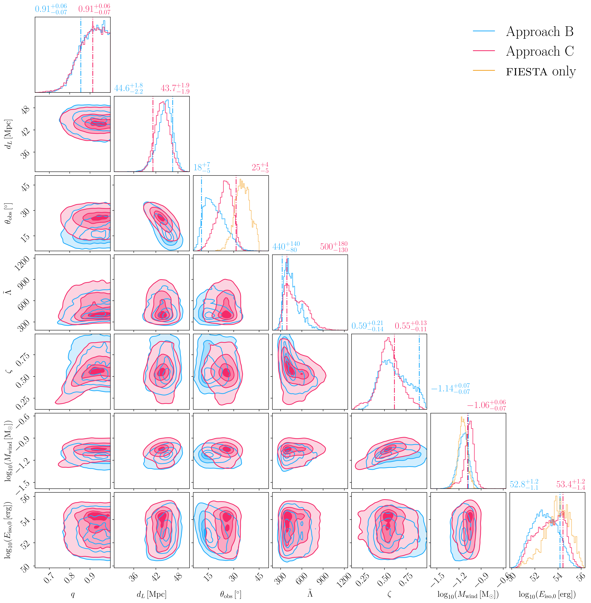<br />
图注：Posterior comparison for key system parameters of the 2017 BNS merger, including the GRB afterglow. Red contours correspond to the analysis using current models, while thin blue lines use older physical models; see the text for details. We additionally show applicable posteriors from an EM-only analysis with \(\fiesta\)~\(\citep{Koehn:2025b}.\) Dashed-dotted vertical lines mark the maximum-posterior solutions for which we show lightcurves in~\(\cref{fig:lc_comp}\)<br />
对应解读：对应“GW170817/AT2017gfo 的联合后验角图”和关键图表逐图导读中的图3，以及模型拟合段落对质量、距离、倾角、潮汐和电磁参数相关性的讨论。<br />
入选理由：这是候选图中最直接呈现2017年双中子星多信使再分析联合后验的图，且明确包含GRB余辉、当前模型与旧物理模型、EM-only结果的对比。它最能支撑日报中关于多信使联合约束、模型更新导致后验变化、以及不同数据集退化方向互补的解读。<br />
来源与置信度：\(arxiv_source\)；high；\(arxiv_source\) / _main.tex:figure[2]</p>
<p><strong>Fig04</strong><br />
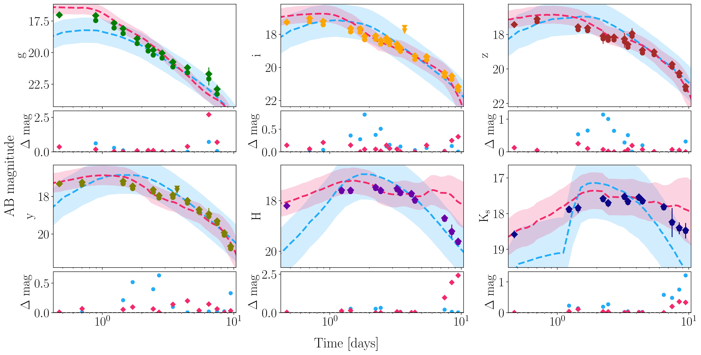<br />
图注：Dashed lines mark best-fitting KN lightcurves for the maximum-posterior solution of \(\cref{fig:New_models}.\) The surrounding bands indicate $\sigma_{\rm sys}$. Dots mark the observations compiled in~\(\citet{Coughlin:2018},\) based on~\(\citet{Villar:2017}\) and used in \(\citetalias{Pang:2023}\) (Approach B, blue lightcurve). Diamonds include an updated reddening-correction~\(\citep\)[Approach C, red lightcurve]{Hussenot:2025}. Triangles mark upper limits. The \(\textsc{Bu2026}\) model provides an overall better fit to the data, although it clearly overestimates the late-time infrared flux.<br />
对应解读：对应“多波段千新星光变拟合图”和关键图表逐图导读中的图4，以及模型拟合段落中关于千新星残差、系统误差和早期蓝光/晚期红外拟合质量的讨论。<br />
入选理由：该图直接展示AT2017gfo千新星光变的观测点、上限、最佳拟合模型曲线和系统误差带，并指出Bu2026模型虽整体更好但高估晚期红外通量。它是判断物理模型是否只是统计上拟合良好、还是在具体波段存在系统偏差的关键图。<br />
来源与置信度：\(arxiv_source\)；high；\(arxiv_source\) / _main.tex:figure[4]</p>
<p><strong>Fig03</strong><br />
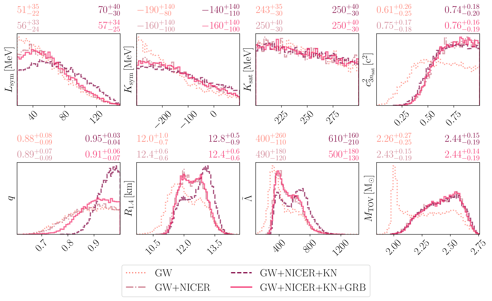<br />
图注：Posterior comparison for microphysical parameters of the 2017 BNS merger when analysing the strain data of GW170817 (dotted) and sequentially including NICER constraints on PSR J0030+0451~\(\citep{Kini:2026}\) and J0437-4715~\(\citep{Choudhury:2024}\) (dash-dotted), the KN AT2017gfo (dashed) and GRB~170817A (solid). We see that GW data alone strongly favour a soft EoS, while the inclusion of NICER constraints stiffens the EoS. The KN further intensifies this trend, whereas the GRB afterglow with its broadened distribution of mass ratios again suggests a more moderate stiffening. The sharp peak at $\mtov=\qty{2}{\msun}$ in the GW-only case is not physical, but results from our enforcement of a corresponding lower limit in emulator training. Because we have excluded EoS with lower $\mtov$ from our training data, we have kept the PSR J1614-2230 mass constraint~\(\citep{Shamohammadi:2023}\) to exclude unphysical predictions, leading to an artificial pile-up of EoSs that barely exceed that limit.<br />
对应解读：对应“质量-半径或 Lambda(M) 后验图”“GW170817/AT2017gfo联合后验角图”以及模型拟合段落中核参数、EoS先验边界和多数据集顺序加入的讨论。<br />
入选理由：该图展示GW、NICER、KN和GRB逐步加入后对微物理/EoS相关参数后验的影响，并明确暴露了由emulator训练下限导致的非物理尖峰。它非常适合支撑日报中关于核物理参数直接采样、先验诱导效应和先验边界截断后验的提醒。<br />
来源与置信度：\(arxiv_source\)；high；\(arxiv_source\) / _main.tex:figure[3]</p>
<p><strong>Fig09</strong><br />
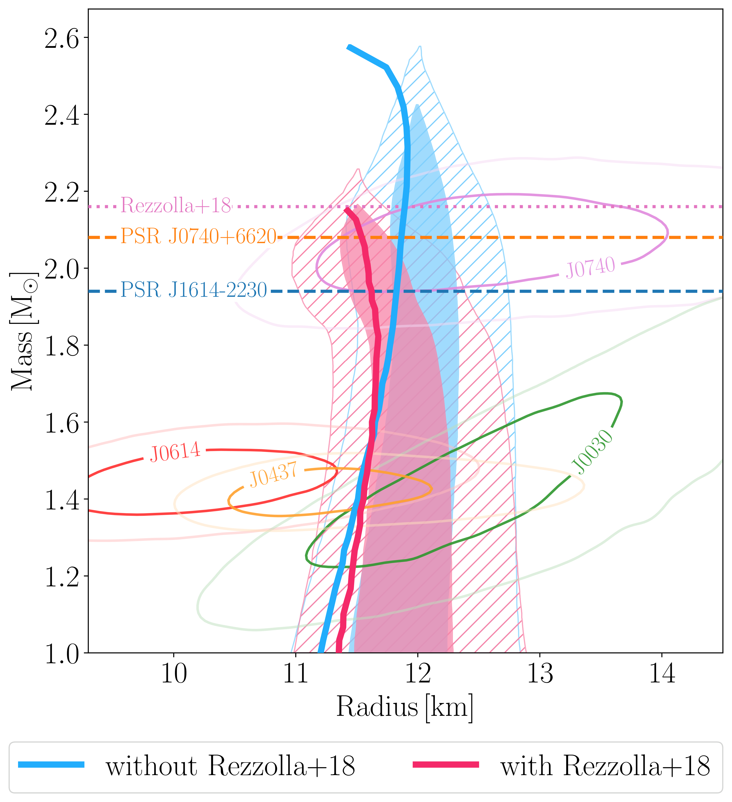<br />
图注：Effective $M-R$ posteriors from different observational constraints, applying agnostic (blue) and experimentally informed nuclear priors (red). Solid lines show the mass-radius curves with highest posterior support. The filled (hatched) contours surrounding them show the radius spread with \(\qty{50}{\percent}\) (\qty{90}{\percent}) posterior support. The applied constraints are visualised as dashed (dotted) lines to indicate lower (upper) bounds on the maximum mass from heavy pulsar observations, while empty contours show mass-radius constraints from NICER measurements, again at the \(\qty{50}{\percent}\) and \(\qty{90}{\percent}\) levels. For the tighter prior, we additionally apply an upper mass limit from~\(\citet{Rezzolla:2018}.\)<br />
对应解读：对应“质量-半径或 Lambda(M) 后验图”和关键图表逐图导读中的图5。<br />
入选理由：该图给出不同观测约束和不同核物理先验下的有效质量-半径后验、最高后验支持的M-R曲线、50%/90%可信区域以及最大质量约束。它最能展示联合分析如何收缩方程状态空间，以及结果对核先验和大质量脉冲星约束的依赖。<br />
来源与置信度：\(arxiv_source\)；high；\(arxiv_source\) / _main.tex:figure[9]</p>
<p><strong>Fig06</strong><br />
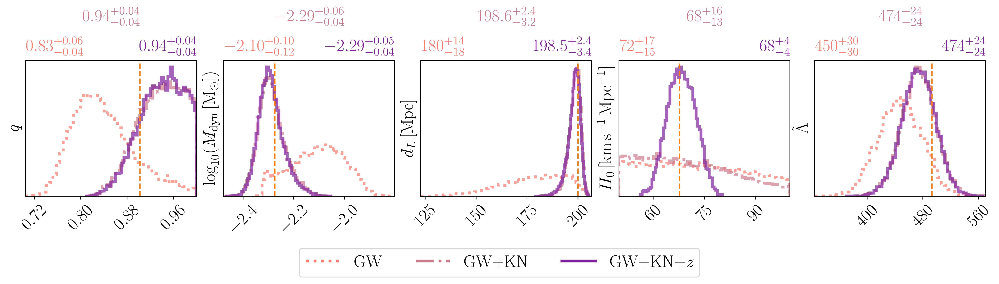<br />
图注：Posteriors on important astrophysical parameters with their injection values (dashed orange lines). We use dotted (dashed-dotted, solid) lines to indicate analyses using the GW strain (and KN, and redshift). We indicate the median and the \(\qty{68}{\percent}\) credible intervals on top of each panel.<br />
对应解读：对应“未来事件的 H0 与核参数联合后验图”和关键图表逐图导读中的图6中关于假想未来探测、GW+KN+redshift逐步加入的讨论。<br />
入选理由：虽然caption未明确写出H0二维相关图，但它展示了带注入值的未来事件重要天体物理参数后验，并比较GW、GW+KN、GW+KN+redshift三种分析。它可用于支撑日报中关于红移信息、距离相关参数和未来多信使约束能力的解读。<br />
来源与置信度：\(arxiv_source\)；high；\(arxiv_source\) / _main.tex:figure[6]</p>
<p><strong>Fig05</strong><br />
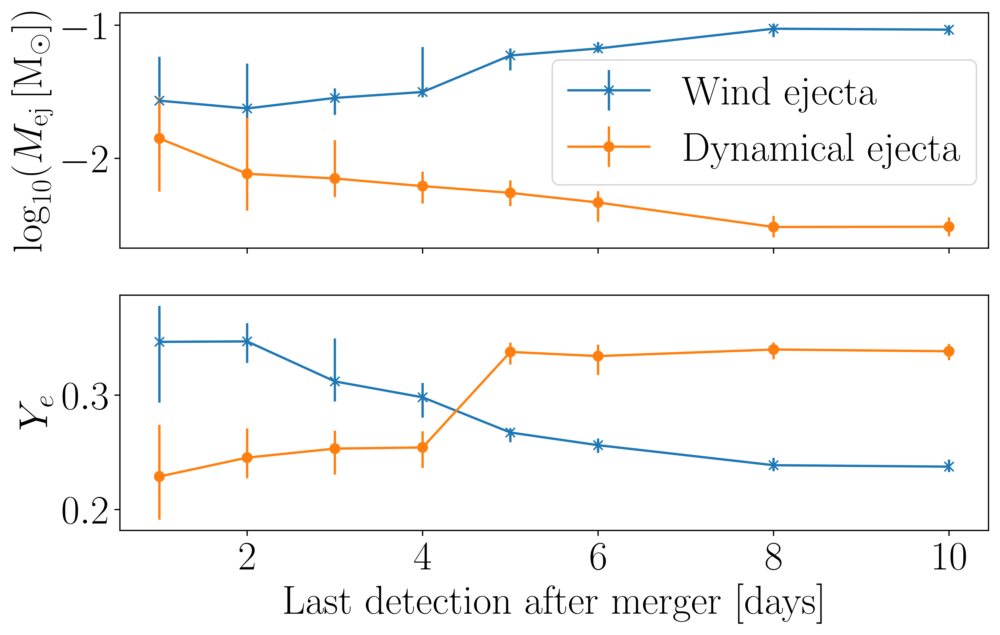<br />
图注：Posteriors on the ejecta mass and mean electron fraction of the dynamical and wind ejecta when only considering observations up to $n$ days after merger. As we include later observations, the inferred wind ejecta mass grows and increasingly dominates over the dynamical component while its electron fraction decreases, effectively pushing towards a single-component model.<br />
对应解读：对应模型拟合段落中关于千新星抛射物质量、电子丰度、时间覆盖对后验的影响，以及关键图表逐图导读中对多波段光变物理解释的延伸。<br />
入选理由：该图展示只使用并合后不同时间范围观测时，动力学抛射物和风抛射物质量、平均电子丰度后验如何变化。它能补充说明千新星参数并非由单个总chi平方决定，而会随晚期数据加入而发生系统性漂移。<br />
来源与置信度：\(arxiv_source\)；high；\(arxiv_source\) / _main.tex:figure[5]</p>
<h4 id="_89">强相关工作</h4>
<p>这篇工作直接处在 \(GW170817/AT2017gfo\) 之后形成的多信使推断谱系中。同一事件的基础论文包括 LIGO/Virgo 对 \(GW170817\) 的发现、Fermi/INTEGRAL 对短伽马暴关联的报道、光学红外对应体 \(AT2017gfo\) 的发现与千新星建模、以及用标准汽笛测量 \(H_0\) 的工作。检索关键词可用 “GW170817 multimessenger inference”，“AT2017gfo kilonova modeling”，“standard siren \(H_0\) GW170817”，“neutron-star equation of state tidal deformability”。</p>
<p>相似方法上，相关工作包括 bilby、LALInference、PyCBC Inference 等引力波贝叶斯推断工具，POSSIS、Kasen 系列、Bulla 系列等千新星辐射输运模型，以及 RIFT、relative binning、reduced-order quadrature 等波形似然加速方法。nmma 的特点是把这些工具链更直接地面向核多信使问题整合，并强调可在核参数上直接采样。检索关键词可用 “nuclear multimessenger astronomy Bayesian framework”，“kilonova surrogate model”，“equation of state emulator neutron star”，“multimessenger Bayesian inference binary neutron star”。</p>
<p>也存在值得对照的张力和相反观点。一类张力来自不同观测对中子星半径和方程状态的约束是否一致，例如引力波潮汐、NICER 脉冲轮廓、大质量脉冲星和核实验约束之间的关系。另一类张力来自 \(H_0\) 测量：标准汽笛可能在未来提供独立路线，但单事件结果受倾角、宿主速度和选择效应影响明显。读者应检索 “\(H_0\) tension standard sirens”，“NICER neutron star radius EOS”，“phase transition neutron star EOS tidal deformability” 来看 nmma 这类框架将面对的物理争议。</p>
<p><strong>同一事件 / 同类源线索</strong>：</p>
<ul>
<li><a href="https://arxiv.org/abs/2607.03045">https://arxiv.org/abs/2607.03045</a></li>
<li><a href="https://arxiv.org/abs/1710.05832">https://arxiv.org/abs/1710.05832</a></li>
<li><a href="https://arxiv.org/abs/1710.05833">https://arxiv.org/abs/1710.05833</a></li>
<li><a href="https://arxiv.org/abs/1710.05835">https://arxiv.org/abs/1710.05835</a></li>
<li><a href="https://arxiv.org/abs/1710.05435">https://arxiv.org/abs/1710.05435</a></li>
</ul>
<p><strong>相似工作</strong>：</p>
<ul>
<li><a href="https://arxiv.org/abs/1811.02042">https://arxiv.org/abs/1811.02042</a></li>
<li><a href="https://arxiv.org/abs/2001.04442">https://arxiv.org/abs/2001.04442</a></li>
<li><a href="https://arxiv.org/abs/1909.11873">https://arxiv.org/abs/1909.11873</a></li>
<li><a href="https://arxiv.org/abs/2302.11257">https://arxiv.org/abs/2302.11257</a></li>
</ul>
<p><strong>基础理论 / 方法工作</strong>：</p>
<ul>
<li><a href="https://arxiv.org/abs/1710.05832">https://arxiv.org/abs/1710.05832</a></li>
<li><a href="https://arxiv.org/abs/1805.11581">https://arxiv.org/abs/1805.11581</a></li>
<li><a href="https://arxiv.org/abs/1707.00008">https://arxiv.org/abs/1707.00008</a></li>
<li><a href="https://arxiv.org/abs/1101.1673">https://arxiv.org/abs/1101.1673</a></li>
</ul>
<p><strong>相反观点 / 张力线索</strong>：</p>
<ul>
<li><a href="https://arxiv.org/abs/1907.10625">https://arxiv.org/abs/1907.10625</a></li>
<li><a href="https://arxiv.org/abs/2105.06980">https://arxiv.org/abs/2105.06980</a></li>
<li><a href="https://arxiv.org/abs/1908.06060">https://arxiv.org/abs/1908.06060</a></li>
</ul>
</details>
<h3 id="9-trigger-system-for-the-payload-for-ultrahigh-energy-observations-pueo-balloon-borne-neutrino-detector">9. Trigger system for the Payload for Ultrahigh Energy Observations (PUEO) balloon-borne neutrino detector</h3>
<ul>
<li>来源：arXiv / astro-ph.HE</li>
<li>链接：https://arxiv.org/abs/2607.05285v1</li>
<li>作者：Q. Abarr, J. Alfaro, P. Allison, J. Alvarez-Muñiz, T. Anderson, H. Barnett, A. Basharina-Freshville, J. J. Beatty</li>
<li>评分：novelty 7/10，importance 8/10，relevance 8/10，final 8.70/10</li>
<li>推荐理由：PUEO超高能中微子气球实验的数字波束形成触发系统，给出预飞测试和低SNR触发性能；属于高能中微子/宇宙线仪器方法，值得关注。</li>
</ul>
<p><strong>中文题目</strong>：PUEO 气球载超高能中微子探测器的触发系统</p>
<p><strong>做了什么</strong>：这篇仪器论文介绍了 PUEO 主探测器的实时触发系统：它用 24 块 Xilinx RFSoC 对 192 路射频通道以 \(3\,\mathrm{GSa\,s^{-1}}\) 采样，在 \(375\,\mathrm{MHz}\) 系统时钟下做全数字超采样波束形成、频带调理、动态射频干扰抑制和匹配滤波。目标是在南极气球平台上从强热噪声和人造射频干扰中抓住超高能中微子诱发的 Askaryan 脉冲，或向上行空气簇射的地磁辐射。预飞测试显示，模拟信号触发阈值可低到约 \(\mathrm{SNR}\sim1.5\)，触发逻辑功耗约 \(5\text{--}7\,\mathrm{W}\)，并能合成 48 个天线波束覆盖约 \(25^\circ\) 天顶角和 \(60^\circ\) 方位角。</p>
<p><strong>为什么重要</strong>：超高能中微子的事件率极低，真实信号又是纳秒尺度的宽带射电脉冲；如果触发层损失灵敏度，后端再好的离线分析也无法补回。PUEO 的核心进步不是单纯增加天线数，而是把多通道相干波束形成、实时干扰剔除和低功耗 FPGA/RFSoC 实现结合起来，使气球载荷在有限电力、带宽和数据下行条件下仍能压低触发阈值。</p>
<p><strong>理论 / 观测 / 仪器方法价值</strong>：对仪器方法的价值在于，它给出了下一代气球射电中微子实验的实时数字触发架构样例：如何在 \(192\) 路高速采样数据上做分布式同步、延迟补偿、波束合成、频域权重和匹配滤波，同时控制资源占用和功耗。对观测的价值在于，触发阈值降低直接扩大有效体积和瞬时孔径，尤其影响 \(10^{17.5}\,\mathrm{eV}\) 附近的能区。</p>
<p><strong>为什么应该关注</strong>：如果你关心宇宙线起源、GZK 中微子、瞬变源多信使观测，或 ANITA 后续实验能否真正进入有竞争力的超高能中微子参数空间，这篇文章值得读。它回答的是一个很实际的问题：在气球平台上，能不能用可承受功耗的数字硬件把相干触发做到足够灵敏，而不是只在离线分析里证明算法有效。</p>
<details class="paper-detail">
<summary>展开详细解读：文章讲解、背景、理论、重点章节、图表与相关工作</summary>
<h4 id="_90">文章详细讲解</h4>
<p>科学问题：PUEO 要探测的是能量高于约 \(10^{17.5}\,\mathrm{eV}\) 的超高能中微子。信号通道包括中微子在南极冰中产生粒子簇射后的 Askaryan 射电脉冲，以及地球掠入或向上行粒子簇射产生的地磁辐射。这些信号持续时间短、频带宽、方向性强，并且通常埋在热噪声和射频干扰中。仪器真正面对的难题不是“能不能记录波形”，而是“能不能在纳秒尺度、数百通道、有限功耗下实时判断某个微弱相干脉冲值得保存”。</p>
<p>作者做的事情：论文聚焦 PUEO 主仪器触发系统，而不是完整科学灵敏度预报。系统采用 24 个 RFSoC 数字化单元，处理 192 个射频通道，采样率为 \(3\,\mathrm{GSa\,s^{-1}}\)，系统时钟为 \(375\,\mathrm{MHz}\)。触发链路包括频带调理、通道相对延迟校正、合成波束形成、动态 RFI 抑制、匹配滤波和触发判据生成。它合成 48 个波束，每个波束最多相干叠加 8 根天线，在约 \(25^\circ\) 天顶角和约 \(60^\circ\) 方位角范围内寻找脉冲。</p>
<p>关键结果：预飞测试表明，在注入模拟信号时，触发系统可以达到约 \(\mathrm{SNR}\sim1.5\) 的最低触发水平，同时触发逻辑功耗仅约 \(5\text{--}7\,\mathrm{W}\)。这个结果的重要性在于，相干波束形成把多天线共同看到的瞬态脉冲叠加起来，而非相干热噪声只按统计规律增长，从而在触发层提升有效信噪比。动态 RFI 抑制则保证系统不会被窄带或局部频段污染长期占据触发率预算。</p>
<p>局限和下一步：预飞测试中的模拟信号和实验室环境无法完全代表南极飞行期间的射频环境、温度漂移、时钟相位稳定性、天线方向图误差和真实背景触发率。论文的结果主要证明触发架构和硬件实现可行，但最终科学收益还要由飞行数据中的实际噪声分布、RFI 占空比、触发死时间、方向覆盖和与离线重建的一致性决定。下一步最关键的是把预飞标定、端到端注入测试、飞行中校准脉冲和真实触发样本结合起来，建立从硬件阈值到中微子有效面积的可验证链条。</p>
<h4 id="_91">关键结果是怎么做出来的</h4>
<p>本文最重要的结果是：PUEO 的全数字波束形成触发能够在接近 \(\mathrm{SNR}\sim1.5\) 的模拟信号水平触发，同时把触发逻辑功耗控制在约 \(5\text{--}7\,\mathrm{W}\)。这不是一个单一算法指标，而是硬件资源、数据速率、时钟同步、波束覆盖、滤波策略和触发率控制共同作用的系统级结果。读者应把它理解为预飞端到端触发链路的性能验证，而不是最终飞行中微子灵敏度的直接测量。</p>
<p>数据和样本方面，论文基于 192 路射频通道的触发架构说明和预飞测试，输入信号包括用于验证触发灵敏度的模拟脉冲或等效注入信号。每个合成波束最多使用 8 根天线；系统总共形成 48 个波束，覆盖约 \(25^\circ\) 的天顶角范围和约 \(60^\circ\) 的方位角范围。应重点看作者如何定义测试中的 \(\mathrm{SNR}\)、如何扫注入幅度、如何记录触发效率曲线，以及 \(50\%\) 或接近全效率点对应的阈值。</p>
<p>统计判据方面，这类触发测试通常不是用天体物理显著性 \(p\)-值来宣称发现，而是用触发效率、误触发率和阈值稳定性来量化。真正关键的是：在给定噪声 RMS、频带选择和触发率预算下，注入信号的触发概率如何随 \(\mathrm{SNR}\) 增长；同时在无注入噪声运行中，纯热噪声触发率和 RFI 触发率是否受控。若论文给出效率曲线或阈值扫描，应检查曲线是否陡峭、不同波束是否一致、不同频带屏蔽状态下是否稳定。</p>
<p>支撑结论的图表应包括触发数据路径框图、波束形成几何覆盖、频带调理或动态 RFI 屏蔽示例、匹配滤波前后的波形响应、触发效率随 \(\mathrm{SNR}\) 的曲线，以及 FPGA/RFSoC 资源和功耗表。尤其要看低 \(\mathrm{SNR}\) 下效率是否依赖某些特定通道或特定波束；如果只有最优波束达到 \(\mathrm{SNR}\sim1.5\)，那与全视场平均触发能力并不等价。</p>
<p>系统误差和稳健性主要来自通道增益差、相位延迟误差、时钟抖动、ADC 量化噪声、天线方向图不确定性、窄带 RFI 屏蔽造成的信号能量损失，以及实验室注入信号与真实 Askaryan/地磁脉冲形状的差别。稳健性检验应包括不同频带、不同波束、不同输入幅度、不同噪声条件和不同模板的性能对比。对专业读者来说，最值得追问的是：\(\mathrm{SNR}\sim1.5\) 的数字是否在触发率约束下成立，还是在理想化测试配置下得到。</p>
<details class="paper-subdetail">
<summary>展开背景、理论、公式、模型、章节和图表导读</summary>
<h4 id="_92">背景知识</h4>
<p>PUEO 属于气球载射电中微子实验谱系，目标是利用南极冰盖作为巨大靶体。超高能中微子在冰中发生相互作用后，电磁级联和强子级联会形成带负电荷过剩的粒子团，产生相干 Askaryan 射电辐射。气球飞在高空，可以俯视大面积冰面，因此即使中微子通量极低，也有机会获得很大的瞬时有效体积。</p>
<p>历史上，ANITA 系列任务已经证明南极气球平台可以长时间监测射电瞬态，并把射电触发、干涉成像和离线脉冲识别用于超高能粒子搜索。但 ANITA 的灵敏度受到触发阈值、天线数、实时处理能力和 RFI 环境限制。PUEO 的设计目标之一就是在相似平台约束下，通过更强的数字波束触发和更低阈值进入更有竞争力的能区。</p>
<p>为什么现在值得重新看，是因为超高能中微子的理论预期和实验上限之间仍有很大空间。GZK 或宇宙成因中微子通量取决于超高能宇宙线成分、源演化、最高加速能量和传播背景场；许多模型已被 IceCube、Auger、ANITA 等结果压低，但并未关闭。\(10^{17}\text{--}10^{19}\,\mathrm{eV}\) 区间仍是连接天体源加速和宇宙线传播物理的关键窗口。</p>
<p>这个领域常见误区之一是把“更大天线阵列”直接等同于“更好灵敏度”。事实上，对瞬态射电中微子实验来说，实时触发阈值、死时间、RFI 抑制、相干叠加精度和数据保存策略同样决定有效孔径。另一个误区是把实验室中的低阈值触发直接解释成天体物理发现能力；实际飞行中，窄带发射、人造通信、卫星信号、太阳活动、仪器自噪声和方向相关增益都会改变触发率预算。</p>
<p>还需要避免把 Askaryan 脉冲和空气簇射地磁辐射混为一谈。二者都是短时宽带射电信号，但产生介质、极化方向、视几何、传播路径和背景误判方式不同。PUEO 同时关注冰内相互作用和向上行空气簇射通道，因此触发系统必须对不同脉冲形状和方向覆盖保持较高效率。</p>
<h4 id="_93">基础理论 / 方法脉络</h4>
<p>基本物理图像是相干叠加。若一个真实射电脉冲从某个方向到达天线阵列，不同天线收到的是同一波形的延迟版本；只要按候选方向补偿几何延迟再相加，信号电压会近似按天线数 \(N\) 增长，而不相关热噪声的 RMS 只按 \(\sqrt{N}\) 增长。因此相干波束形成可以把单通道看不清的脉冲推到触发阈值以上。</p>
<p>PUEO 的触发系统把这一思想放进实时硬件。RFSoC 以 \(3\,\mathrm{GSa\,s^{-1}}\) 对 192 个通道采样；系统时钟为 \(375\,\mathrm{MHz}\)，意味着高速采样数据要被重新组织成适合 FPGA 逻辑并行处理的流。每个合成波束对应一个方向假设，系统对至多 8 根天线施加预设延迟和权重，再计算波束化时间序列中的脉冲显著程度。</p>
<p>频带调理和动态 RFI 抑制是触发能否低阈值运行的关键。热噪声大致可近似为宽带高斯噪声，但真实飞行环境中常有窄带或准窄带干扰。如果不在触发层识别并抑制这些频段，触发阈值必须抬高以保持可接受的误触发率，从而损失中微子效率。PUEO 的设计把频带权重、屏蔽和匹配滤波嵌入触发链路，目标是在保留宽带脉冲能量的同时降低干扰贡献。</p>
<p>匹配滤波的物理含义是把数据与预期脉冲模板做相关。在高斯噪声假设下，匹配滤波是检测已知波形的最优线性滤波器。对 PUEO 来说，模板不一定代表单一固定波形，而是反映带宽、天线响应、电子学响应和可能的 Askaryan 或地磁脉冲形状。模板过窄会错过真实波形多样性，模板过宽则会提高噪声响应，这是实际触发设计中的灵敏度和稳健性权衡。</p>
<p>常见退化和系统误差包括：方向假设错误会导致延迟补偿不准，使相干增益下降；通道间相位和增益标定误差会把真实信号部分抵消；RFI 频段屏蔽会降低有效带宽，从而改变 \(\mathrm{SNR}\) 定义；ADC 量化和时钟抖动会在低幅度脉冲处变得重要。因此，低触发阈值必须和全链路标定、波束均匀性及误触发率一起解读。</p>
<h4 id="_94">公式与推导</h4>
<p>第一步从单通道电压模型开始。对第 \(i\) 个天线，采样电压可写为</p>
<div class="math-display">\[x_i(t)=g_i s(t-\tau_i)+n_i(t)+r_i(t),\]</div>
<p>其中 \(g_i\) 是通道增益，\(s(t)\) 是入射脉冲在参考通道的波形，\(\tau_i\) 是由入射方向决定的几何延迟，\(n_i(t)\) 是近似热噪声，\(r_i(t)\) 是 RFI 或非理想背景。这个式子说明触发问题本质上是从多通道含噪时间序列中检验是否存在共同延迟结构。</p>
<p>第二步是方向相关延迟。若天线位置为 \(\mathbf{r}_i\)，入射单位方向为 \(\hat{\mathbf{k}}\)，远场近似下相对延迟为</p>
<div class="math-display">\[\tau_i(\hat{\mathbf{k}})=\frac{\mathbf{r}_i\cdot\hat{\mathbf{k}}}{c},\]</div>
<p>其中 \(c\) 是光速。每个合成波束就是选择一个 \(\hat{\mathbf{k}}\)，用相应的 \(\tau_i\) 对齐通道。PUEO 的 48 个波束就是对可见方向空间的离散采样。</p>
<p>第三步是相干波束形成。带权波束电压可写为</p>
<div class="math-display">\[y_b(t)=\sum_{i=1}^{N_b} w_{ib}\,x_i\!\left(t+\tau_i(\hat{\mathbf{k}}_b)\right),\]</div>
<p>其中 \(b\) 是波束编号，\(N_b\leq 8\) 是该波束使用的天线数，\(w_{ib}\) 是权重。若方向匹配且增益已校准，信号项相干相加；若噪声互不相关，噪声方差近似相加。</p>
<p>第四步给出相干增益的近似标度。若 \(w_{ib}=1\)、各通道噪声 RMS 均为 \(\sigma\)、单通道信号峰值为 \(A\)，则波束信噪比近似为</p>
<div class="math-display">\[\mathrm{SNR}_{\mathrm{beam}}\simeq \frac{N_b A}{\sqrt{N_b}\sigma}=\sqrt{N_b}\,\mathrm{SNR}_{\mathrm{ch}}.\]</div>
<p>这说明 8 天线相干叠加在理想情况下可带来约 \(\sqrt{8}\) 的电压信噪比提升。实际增益会因方向离散、带宽、相位误差和通道权重而降低。</p>
<p>第五步是频域调理。把波束数据傅里叶变换为 \(Y_b(f)\)，可对频率施加权重 \(H(f)\)：</p>
<div class="math-display">\[\tilde{y}_b(t)=\mathcal{F}^{-1}\left[H(f)Y_b(f)\right].\]</div>
<p>这里 \(H(f)\) 可包含通带选择、坏频段屏蔽和近似白化。若某些频率被 RFI 污染，令对应 \(H(f)\) 变小可以降低误触发，但也会减少真实脉冲的有效带宽。</p>
<p>第六步是匹配滤波。在高斯噪声功率谱 \(S_n(f)\) 下，模板 \(h(t)\) 的最优滤波统计量可写为</p>
<div class="math-display">\[\rho_b(t_0)=\frac{\int df\,\tilde{Y}_b(f)\tilde{H}^{*}_{\mathrm{temp}}(f)S_n^{-1}(f)e^{2\pi i f t_0}}{\left[\int df\,|\tilde{H}_{\mathrm{temp}}(f)|^2S_n^{-1}(f)\right]^{1/2}},\]</div>
<p>其中 \(\tilde{H}_{\mathrm{temp}}(f)\) 是模板频谱，\(t_0\) 是候选到达时间。\(\rho_b\) 是触发层可用的归一化相关显著量。</p>
<p>第七步是热噪声误触发率。若滤波后统计量近似服从标准正态分布，单个独立试验超过阈值 \(\eta\) 的概率为</p>
<div class="math-display">\[p_{\mathrm{FA}}(>\eta)=\frac{1}{2}\,\mathrm{erfc}\!\left(\frac{\eta}{\sqrt{2}}\right).\]</div>
<p>总误触发率还要乘以独立时间窗数、波束数和模板数，因此低阈值只有在 RFI 抑制和试验因子受控时才有意义。</p>
<p>第八步连接到有效灵敏度。触发效率可表示为注入幅度或能量的函数：</p>
<div class="math-display">\[\epsilon_{\mathrm{trig}}(A)=\frac{N_{\mathrm{trig}}(A)}{N_{\mathrm{inj}}(A)},\]</div>
<p>其中 \(N_{\mathrm{inj}}(A)\) 是幅度为 \(A\) 的注入次数，\(N_{\mathrm{trig}}(A)\) 是成功触发次数。论文报告的约 \(\mathrm{SNR}\sim1.5\) 应通过类似效率曲线理解，而非只看单次事件。</p>
<p>第九步是仪器响应到事件率的概念桥梁。中微子预期事件数可写为</p>
<div class="math-display">\[N_{\nu}=T\int dE_{\nu}\,\Phi_{\nu}(E_{\nu})A_{\mathrm{eff}}(E_{\nu})\epsilon_{\mathrm{trig}}(E_{\nu}),\]</div>
<p>其中 \(T\) 是曝光时间，\(\Phi_{\nu}\) 是中微子通量，\(A_{\mathrm{eff}}\) 是几何、相互作用概率和传播效应折合后的有效面积。触发阈值降低会通过 \(\epsilon_{\mathrm{trig}}\) 和可探测体积提升最终事件率，尤其在阈值附近能区影响最大。</p>
<h4 id="_95">模型拟合 / 应用方法</h4>
<p>这篇论文本身更接近仪器实现与性能验证，而不是天体物理参数拟合；但其核心仍包含一类“模型到数据”的拟合问题：给定预期脉冲模板、噪声统计和方向假设，判断某段多通道波形是否更像相干脉冲而非噪声。实际拟合量包括通道延迟、相对增益、频带权重、触发阈值、匹配滤波模板参数和波束方向网格。</p>
<p>若把触发效率测试写成统计模型，可以用二项似然描述在某一注入幅度 \(A_j\) 下的触发次数：\(N_{\mathrm{trig},j}\) 服从成功概率 \(\epsilon(A_j)\) 的二项分布。常见做法是用 sigmoid 或误差函数拟合 \(\epsilon(A)\)，提取 \(50\%\) 效率点、\(90\%\) 效率点和曲线宽度。曲线越陡，说明阈值定义越稳定；不同波束曲线差异越小，说明视场内响应越均匀。</p>
<p>噪声和 RFI 模型是最大的不确定来源。若只假设高斯热噪声，阈值与误触发率关系很清楚；但真实 RFI 往往非平稳、非高斯、频率局域且方向相关。模型拟合中应把频带屏蔽状态、噪声 RMS 漂移、触发率随时间变化、坏通道状态作为 nuisance parameters 或至少作为分组诊断量。否则一个低阈值结果可能只是某段安静实验室数据的表现。</p>
<p>参数退化主要有三类。第一，模板形状与频带权重退化：屏蔽某些频段后，最优模板和 \(\mathrm{SNR}\) 归一化都会改变。第二，方向误差与通道延迟误差退化：二者都表现为相干和下降。第三，增益标定误差与实际信号幅度退化：若通道增益漂移未被校正，触发效率曲线的横轴标定会偏移。</p>
<p>实际应用时，读者应关注残差诊断而不仅是最佳阈值。匹配滤波后的噪声统计是否近似高斯？不同波束的触发率是否符合天线方向图和环境预期？注入信号恢复的最佳波束是否与注入方向一致？被动态 RFI 算法屏蔽的频段是否与已知干扰源对应？这些诊断决定该触发系统在飞行数据中是否可被可靠建模。</p>
<h4 id="_96">重点章节 / 结果段落怎么读</h4>
<ol>
<li>
<p>仪器和科学需求部分：先读 PUEO 的探测目标、能区和信号类型。这里要抓住为什么触发阈值直接影响科学产出，以及为什么气球平台对功耗、数据率和实时处理有强约束。</p>
</li>
<li>
<p>数字化和触发架构部分：重点看 24 个 RFSoC、192 通道、\(3\,\mathrm{GSa\,s^{-1}}\) 采样和 \(375\,\mathrm{MHz}\) 系统时钟之间如何组织数据流。读者应确认系统如何分配通道、如何同步、如何在 FPGA 逻辑中完成并行处理。</p>
</li>
<li>
<p>波束形成和频带调理方法部分：这是论文的核心技术段落。要看每个波束使用多少天线、延迟如何实现、48 个波束怎样覆盖视场，以及动态 RFI 抑制与匹配滤波在触发链中处于哪个位置。</p>
</li>
<li>
<p>优化和资源占用部分：重点关注作者如何在灵敏度、资源占用和功耗之间折中。RFSoC/FPGA 资源、乘法器、存储、时钟域和数据搬运通常比算法本身更限制气球载荷可行性。</p>
</li>
<li>
<p>预飞测试和性能部分：最应该细读触发效率、最低 \(\mathrm{SNR}\)、功耗和稳定性测试。读者要区分实验室注入测试、系统级集成测试和真实飞行环境预期，不要把预飞测试结果直接等同于最终中微子上限。</p>
</li>
</ol>
<h4 id="_97">建议重点查看的图表</h4>
<ol>
<li>
<p>触发系统总体框图：看 192 路输入如何进入 24 个 RFSoC，频带调理、波束形成、匹配滤波和触发决策的顺序是否清楚。</p>
</li>
<li>
<p>波束覆盖图：看 48 个合成波束在天顶角和方位角上的分布，检查相邻波束间距是否足以避免方向失配导致相干增益明显下降。</p>
</li>
<li>
<p>数据路径或时钟结构图：看 \(3\,\mathrm{GSa\,s^{-1}}\) 采样如何映射到 \(375\,\mathrm{MHz}\) 逻辑时钟，是否存在跨时钟域、缓存或延迟对齐的关键设计。</p>
</li>
<li>
<p>频带调理/RFI 抑制示例：看被屏蔽频段的位置、宽度和随时间变化，判断算法是否可能误伤宽带脉冲信号。</p>
</li>
<li>
<p>匹配滤波或触发统计量响应图：看滤波前后波形峰值、噪声 RMS 和旁瓣结构，确认 \(\mathrm{SNR}\) 提升不是由归一化定义造成的表观提升。</p>
</li>
<li>
<p>触发效率随 \(\mathrm{SNR}\) 的曲线：这是验证 \(\mathrm{SNR}\sim1.5\) 说法的关键。应看 \(50\%\)、\(90\%\) 效率点和不同波束/频带配置的差异。</p>
</li>
<li>
<p>资源和功耗表：看触发逻辑的 LUT、DSP、BRAM 或等效资源占用，以及 \(5\text{--}7\,\mathrm{W}\) 是否只包括触发逻辑而非全部数字系统。</p>
</li>
</ol>
<h4 id="_98">关键图表逐图导读</h4>
<p>图 1：若论文给出系统框图，横向通常是从天线/模拟链路到 ADC，再到 RFSoC 内部处理模块，最后到触发输出。读图时要注意哪些步骤发生在每个通道独立处理阶段，哪些步骤需要跨通道数据交换。陷阱是把框图中的“波束形成”看成离线算法；这里它必须在实时硬件和固定延迟预算内完成。</p>
<p>图 2：波束覆盖图通常以方位角为横轴、天顶角或俯仰角为纵轴，点或格子代表 48 个合成波束。应看覆盖范围是否与 PUEO 天线视场相匹配，以及边缘波束是否稀疏。读图陷阱是只看总覆盖角度，不看波束间隔；过大的间隔会使真实信号落在波束之间时相干增益下降。</p>
<p>图 3：频谱或 RFI 抑制图通常显示功率谱密度、频带权重或被屏蔽频率。关键是比较屏蔽前后的噪声底、窄带峰和可用带宽。读图陷阱是认为屏蔽越多越好；对纳秒脉冲来说，带宽被削掉会展宽脉冲并降低匹配滤波效率。</p>
<p>图 4：匹配滤波响应图可能以时间为横轴、归一化相关或波束电压为纵轴，显示注入脉冲在滤波后形成清晰峰值。应看主峰高度、旁瓣、噪声基线和触发阈值线。若旁瓣接近阈值，真实 RFI 环境中可能增加误触发。</p>
<p>图 5：触发效率曲线通常以注入 \(\mathrm{SNR}\) 或幅度为横轴、触发概率为纵轴。论文报告的约 \(\mathrm{SNR}\sim1.5\) 应能在这里找到对应位置。读图时要确认该点是最低可触发个例、\(50\%\) 效率点还是接近全效率点；三者物理含义差别很大。</p>
<p>图 6：资源和功耗表或柱状图应显示各模块的 FPGA 资源占用和功耗。重点看波束形成、滤波和 RFI 逻辑哪一项最耗资源。陷阱是只引用 \(5\text{--}7\,\mathrm{W}\) 而不说明边界条件；如果这个数字不含 ADC、数据传输或其他系统开销，就不能代表整机功耗。</p>
</details>
<h4 id="_99">论文原图 / 可嵌入图片</h4>
<p><strong>Fig09</strong><br />
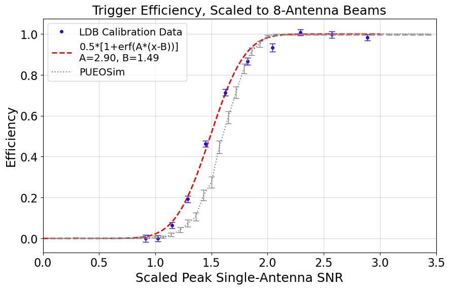<br />
图注：Beamform trigger efficiency, calculated from data taken in the launch facility hangar using the RF box. Single-antenna SNR has been scaled by $\frac{3}{4}$ to represent an 8-antenna beam, as described in text. PUEO's Monte Carlo instrument simulation, PUEOSim, is plotted in gray for comparison.<br />
对应解读：“建议重点查看的图表”第6项、关键图表逐图导读图5、模型拟合段落中的触发效率曲线与SNR阈值检验。<br />
入选理由：这是验证论文核心性能声明“最低触发水平约SNR~1.5”的最关键图。图中直接给出波束形成触发效率随单天线SNR变化的关系，并与PUEOSim蒙特卡洛结果比较，可用于判断SNR~1.5对应的是低效率边缘、50%效率点还是接近全效率点，比其他硬件结构图更直接支撑性能结论。<br />
来源与置信度：\(arxiv_source\)；high；\(arxiv_source\) / main.tex:figure[9]</p>
<p><strong>Fig02</strong><br />
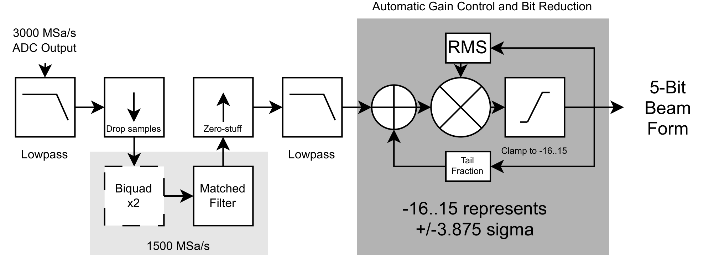<br />
图注：Block diagram of the trigger signal processing chain. The optional biquad block and the matched filter operate at $1.5~\textrm{GSa/s}$ and the AGC-BR block operates at $3~\textrm{GSa/s}$.<br />
对应解读：“建议重点查看的图表”第1项和第3项、关键图表逐图导读图1：触发系统总体框图与实时数据路径。<br />
入选理由：该图明确展示触发信号处理链路，包括AGC-BR、可选biquad、匹配滤波等模块及其工作采样率/时钟关系，是理解192路输入经RFSoC实时处理、频带调理、波束形成/滤波和触发判据顺序的基础。它比载荷外观图更能支撑日报对实时硬件固定延迟和数据流的解读。<br />
来源与置信度：\(arxiv_source\)；high；\(arxiv_source\) / main.tex:figure[2]</p>
<p><strong>Fig07</strong><br />
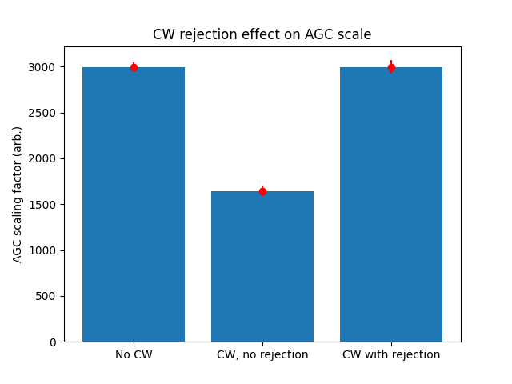<br />
图注：RFI mitigation testing. Injecting a $370~\mathrm{MHz}$ sine wave at $\sim1.75\times$ thermal RMS with no mitigation resulted in a $\sim1.8\times$ decrease in the AGC-BR scale to compensate. Enabling the CW rejection returned the scaling to its prior value.<br />
对应解读：“建议重点查看的图表”第4项、关键图表逐图导读图3、模型拟合段落中关于RFI非高斯噪声与动态抑制诊断的讨论。<br />
入选理由：该图给出370 MHz连续波干扰注入时，未抑制与启用CW rejection后的AGC-BR scale变化，是候选图中最直接展示RFI抑制实际效果的证据。它能帮助判断窄带干扰是否会压低有效增益，以及抑制算法是否恢复宽带脉冲触发所需的动态范围。<br />
来源与置信度：\(arxiv_source\)；high；\(arxiv_source\) / main.tex:figure[7]</p>
<p><strong>Fig04</strong><br />
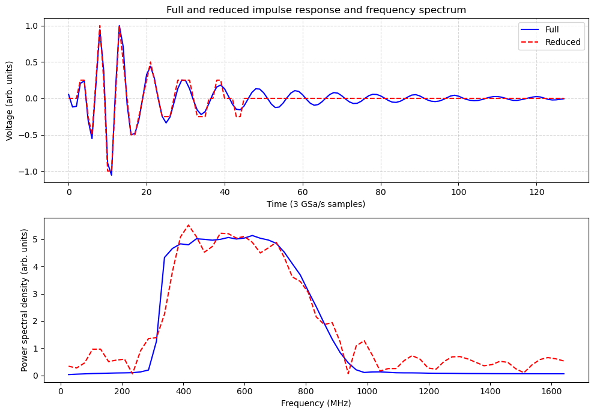<br />
图注：System impulse response (after halfband filter) and reduced version generated by rounding to the nearest power of 2 for use in the multiplierless matched filter.<br />
对应解读：“建议重点查看的图表”第5项、关键图表逐图导读图4、模型拟合段落中匹配滤波模板和滤波响应的讨论。<br />
入选理由：该图展示半带滤波后的系统冲激响应，以及为无乘法器匹配滤波而进行2的幂近似后的简化模板。它直接对应日报中关于模板形状、主峰、旁瓣和SNR提升是否由匹配滤波真实带来的问题，是理解触发统计量构造的重要图。<br />
来源与置信度：\(arxiv_source\)；high；\(arxiv_source\) / main.tex:figure[4]</p>
<p><strong>Fig03</strong><br />
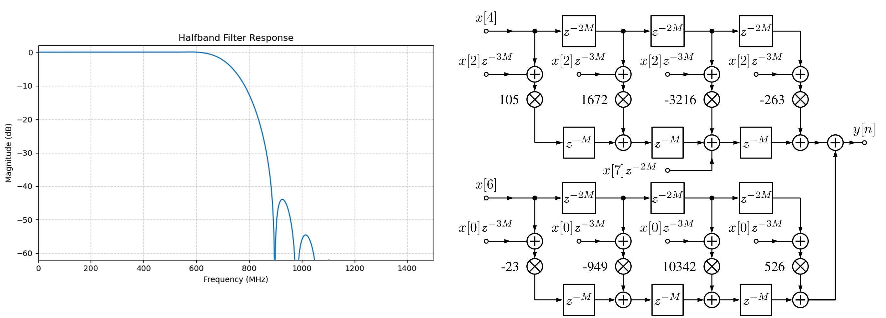<br />
图注：Frequency response<br />
对应解读：“建议重点查看的图表”第4项、关键图表逐图导读图3：频带调理和频率响应。<br />
入选理由：该图给出系统频率响应，可用于检查有效触发带宽、频带调理对宽带纳秒脉冲的影响，以及带宽削减是否可能改变匹配滤波效率。虽然它不如Fig07直接展示RFI抑制测试，但对理解频带权重和模板退化仍有重要价值。<br />
来源与置信度：\(arxiv_source\)；high；\(arxiv_source\) / main.tex:figure[3]</p>
<p><strong>Fig05</strong><br />
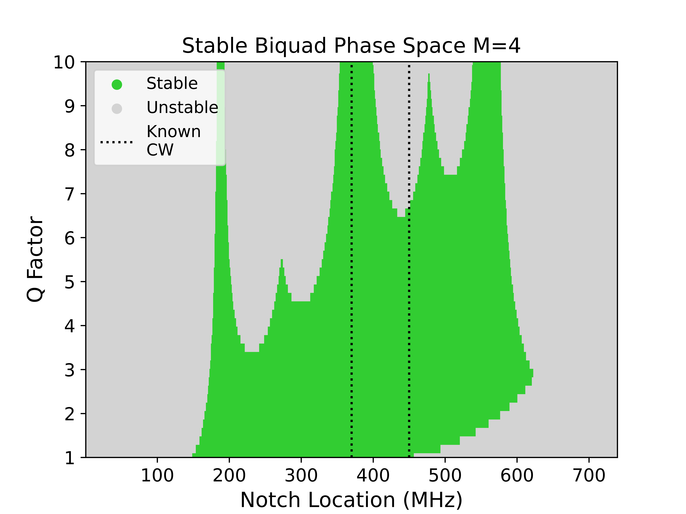<br />
图注：Stable phase space for a biquad with $M=4$ when used as a simple notch with nominal frequencies indicated with a vertical line. In the primary PUEO trigger band of $300-750\,\text{MHz}$ the primary interferers occur in the $375-500\,\text{MHz}$ where a good region of stability exists for moderate-width notches as used in similar flights.<br />
对应解读：“建议重点查看的图表”第4项、模型拟合段落中关于被屏蔽频段、notch稳定性和RFI nuisance parameters的讨论。<br />
入选理由：该图展示biquad作为notch滤波器时的稳定参数空间，并标出PUEO主触发频带300–750 MHz及375–500 MHz主要干扰区域。它有助于评估动态RFI抑制在硬件实现中可用的notch宽度和频率范围，但相较Fig07更偏设计约束而非端到端性能验证。<br />
来源与置信度：\(arxiv_source\)；high；\(arxiv_source\) / main.tex:figure[5]</p>
<h4 id="_100">强相关工作</h4>
<p>这篇工作应放在 ANITA、ARA、ARIANNA、RNO-G 和 GRAND 等射电超高能中微子实验的发展脉络中读。ANITA 是最直接的历史原型：同样利用南极气球平台和射电脉冲触发，但 PUEO 试图通过更强的数字波束形成和实时处理降低阈值。地面或冰面阵列如 ARA、ARIANNA、RNO-G 更强调长期曝光和本地天线站触发；PUEO 的优势是瞬时视场大，难点是飞行时间短、功耗和实时数据处理受限。检索关键词可用 “PUEO balloon neutrino RFSoC trigger beamforming”、“ANITA ultrahigh energy neutrino radio trigger”、“Askaryan radio neutrino detector digital beamforming”。</p>
<p>基础理论方面，应回到 Askaryan 效应、相干射电 Cherenkov 辐射、地磁空气簇射辐射和高斯噪声下匹配滤波。相反观点或张力主要不在触发算法是否数学上有效，而在真实环境中低阈值能否长期稳定运行：非高斯 RFI、卫星通信、冰面反射、人类活动和仪器自身噪声都可能迫使阈值抬高。读者可检索 “ANITA anomalous upward-going events”、“radio frequency interference balloon-borne neutrino experiment”、“cosmogenic neutrino flux limits ANITA Auger IceCube” 来了解科学背景和限制。</p>
<p><strong>同一事件 / 同类源线索</strong>：</p>
<ul>
<li><a href="https://arxiv.org/abs/2607.05285">https://arxiv.org/abs/2607.05285</a></li>
<li><a href="https://arxiv.org/pdf/2607.05285">https://arxiv.org/pdf/2607.05285</a></li>
<li><a href="https://arxiv.org/abs/2010.02892">https://arxiv.org/abs/2010.02892</a></li>
</ul>
<p><strong>相似工作</strong>：</p>
<ul>
<li><a href="https://arxiv.org/abs/2010.02892">https://arxiv.org/abs/2010.02892</a></li>
</ul>
<p><strong>基础理论 / 方法工作</strong>：</p>
<p>（未提供）</p>
<p><strong>相反观点 / 张力线索</strong>：</p>
<p>（未提供）</p>
</details>
<h3 id="10-observational-study-of-multi-wavelength-synergistic-effects-in-3c-120">10. Observational Study of Multi-wavelength Synergistic Effects in 3C 120</h3>
<ul>
<li>来源：arXiv / astro-ph.HE</li>
<li>链接：https://arxiv.org/abs/2607.04666v1</li>
<li>作者：Yuting He, Ming Zhang, Qi Yuan, Nenghui Liao</li>
<li>评分：novelty 7/10，importance 7/10，relevance 9/10，final 8.70/10</li>
<li>推荐理由：13年3C 120多波段研究包含Fermi-LAT伽马、光学和VLBA喷流监测，给出伽马领先射电及喷流结抛射/偏振变化关联；对AGN高能喷流和伽马辐射区定位有直接相关性。</li>
</ul>
<p><strong>中文题目</strong>：3C 120 的多波段协同变化：从 \(\gamma\) 射线耀发到射电核、偏振和超光速结的时序链条</p>
<p><strong>做了什么</strong>：这篇文章对宽线射电星系 3C 120 做了 \(2012\)–\(2025\) 年的多波段监测分析，合并了 \(\mathrm{Fermi}\)-LAT \(\gamma\) 射线、ASAS-SN 光学、以及 \(15\,\mathrm{GHz}\) 和 \(43\,\mathrm{GHz}\) VLBA 射电成像数据。核心结果是：\(\gamma\) 射线耀发系统性领先射电变化，领先 \(15\,\mathrm{GHz}\) 约 \(11.08^{+4.03}_{-1.88}\) 个月，领先 \(43\,\mathrm{GHz}\) 约 \(8.27^{+3.45}_{-5.55}\) 个月；同时，射电耀发伴随核区增亮、偏振流量上升、电矢量位置角 \(\mathrm{EVPA}\) 快速旋转和随后出现的超光速喷流结。作者据此提出：高能辐射区位于射电核上游，射电频率依赖的延迟反映同步自吸收导致的 core-shift；长期基线变化可能受喷流进动几何调制，而快速偏振爆发更像短寿命内激波。</p>
<p><strong>为什么重要</strong>：3C 120 是距离较近、结构可分辨、又有显著相对论喷流的宽线射电星系，因此它是连接 blazar 式喷流物理和低视线夹角射电星系物理的关键对象。文章把 \(\gamma\) 射线、光学、射电总流量、VLBA 形态、偏振和喷流结运动放在同一条时间轴上，试图回答高能耀发究竟发生在黑洞附近、射电核附近，还是更下游的喷流中。这个问题直接关系到喷流粒子加速、磁场耗散、辐射区大小和外光子场来源。</p>
<p><strong>理论 / 观测 / 仪器方法价值</strong>：方法上的价值在于它不是只做两条光变曲线的相关，而是把跨波段时延、频率依赖、VLBI 核区结构、偏振诊断和超光速结喷出时间结合起来。对观测者而言，这提供了一套判别高能耗散区相对射电核位置的实用流程；对理论建模者而言，文章给出了约束喷流扰动传播、同步自吸收光深、激波压缩磁场和几何进动的联合证据链。</p>
<p><strong>为什么应该关注</strong>：如果你关心 AGN 喷流中 \(\gamma\) 射线是在何处产生、射电核是否真是固定物理位置、以及偏振旋转能否作为粒子加速事件的标志，这篇文章值得看。它也提醒我们：单一波段或单一耀发的解释很容易误判，真正有约束力的是同一事件在高能、射电结构和偏振空间中的相对时序。</p>
<details class="paper-detail">
<summary>展开详细解读：文章讲解、背景、理论、重点章节、图表与相关工作</summary>
<h4 id="_101">文章详细讲解</h4>
<p>科学问题：AGN 相对论喷流中的高能辐射区位置一直有争议。若 \(\gamma\) 射线来自黑洞附近的宽线区或盘风环境，那么高能耀发应领先射电核亮化；若来自毫米或厘米射电核附近，则 \(\gamma\) 射线、毫米射电和 VLBI 核区事件应近乎同步；若来自更下游的再加速区，则可能出现射电先于高能或复杂多峰时延。3C 120 的特殊性在于它不是典型强指向 blazar，而是宽线射电星系，视线角较大但仍显示超光速运动，因此它给喷流统一模型提供了更有几何杠杆的测试。</p>
<p>作者怎么做：文章汇集 \(2012\)–\(2025\) 年 \(\mathrm{Fermi}\)-LAT \(\gamma\) 射线光变、ASAS-SN 光学光变、以及 \(15\,\mathrm{GHz}\) 与 \(43\,\mathrm{GHz}\) VLBA 监测。作者对跨波段光变曲线做相关分析，估计 \(\gamma\) 射线相对不同射电频率的领先时间；又在主要 \(\gamma\) 射线耀发时期检查 parsec 尺度喷流图像、核区亮度、偏振流量、\(\mathrm{EVPA}\) 旋转和新喷流结的出现时间。这样做的重点是建立一条时间顺序：高能事件先发生，扰动沿喷流传播，随后在更低频射电光深约为 \(1\) 的位置变亮。</p>
<p>关键结果：最直接的数值结果是 \(\gamma\) 射线领先 \(15\,\mathrm{GHz}\) 射电约 \(11.08^{+4.03}_{-1.88}\) 个月，领先 \(43\,\mathrm{GHz}\) 射电约 \(8.27^{+3.45}_{-5.55}\) 个月。较高频射电延迟较短，符合射电核位置随频率升高向上游移动的图像。VLBA 形态和偏振诊断进一步表明，射电耀发不是简单的总流量随机涨落，而通常伴随紧致核增亮、偏振流量突增、\(\mathrm{EVPA}\) 快速变化以及之后超光速结被识别出来。作者将这些现象解释为喷流中传播的扰动或激波先在高能区释放能量，随后穿过不同频率的射电光球面。</p>
<p>局限和下一步：这类工作最主要的局限是采样不均匀、不同波段时间分辨率不同、\(\gamma\) 射线低信噪比时间 bin 的处理方式会影响相关峰，VLBI 结的喷出时间也依赖模型分量分解。文章给出的时延很有物理启发，但不应理解为每个耀发都严格遵循同一延迟；更合理的读法是统计上存在一个频率依赖的平均传播时标。下一步需要加入毫米波、亚毫米波、X 射线、光谱指数和更密集的偏振监测，并用统一的贝叶斯层级模型同时拟合光变、core-shift 和喷流结运动，从而把“时序一致”推进到“参数可闭合”。</p>
<h4 id="_102">关键结果是怎么做出来的</h4>
<p>本文最重要的证据链从样本和时间基线开始：作者选取 \(2012\)–\(2025\) 年 3C 120 的长期监测资料，覆盖高能 \(\gamma\) 射线、光学、\(15\,\mathrm{GHz}\) VLBA 和 \(43\,\mathrm{GHz}\) VLBA。这个时间跨度足够长，可以避免只由一两个孤立耀发支配结论；同时，VLBA 数据提供的不只是总流量，还包括核区结构、偏振和可追踪喷流结，因此能把光变相关转化为几何位置约束。</p>
<p>跨波段时延是核心定量结果。作者用相关分析寻找 \(\gamma\) 射线和射电光变之间的相关峰，并给出 \(\gamma\) 射线领先 \(15\,\mathrm{GHz}\) 的时间为 \(11.08^{+4.03}_{-1.88}\) 个月，领先 \(43\,\mathrm{GHz}\) 的时间为 \(8.27^{+3.45}_{-5.55}\) 个月。读者应重点检查相关函数峰是否尖锐、置信区间如何由重采样或模拟得到、采样窗口是否产生伪峰、以及是否存在多个可比拟的次峰。频率越高延迟越短是这条证据链中最物理的部分，因为它直接对应同步自吸收下射电核位置随频率升高向上游移动。</p>
<p>事件级别的证据来自主要 \(\gamma\) 射线耀发时期的 VLBA 形态。作者报告射电爆发常与紧致核增亮、偏振流量增强、\(\mathrm{EVPA}\) 突变或旋转、以及之后出现的超光速结相联系。这里的关键不是某一个量单独显著，而是多种喷流诊断量在合理时序上互相支持：高能先亮，核区后亮，偏振状态改变，再识别到运动分量向下游离开核区。</p>
<p>统计和模型比较方面，文章的结论应主要看作相关分析与物理一致性检验的组合，而不是单一似然模型的排他性证明。若相关峰的显著性是通过光变曲线随机化、通量重排或红噪声模拟评估，读者需要确认模拟是否保留了原始功率谱和采样间隔。若结喷出时间由线性外推得到，误差条应包括分量识别、位置误差和速度拟合的不确定性。</p>
<p>主要系统误差包括：\(\mathrm{Fermi}\)-LAT 光变 bin 宽会平滑短时耀发；ASAS-SN 光学可能含有吸积盘和宿主星系贡献，不一定只追踪喷流；\(15\,\mathrm{GHz}\) 与 \(43\,\mathrm{GHz}\) 射电核不是同一物理位置；偏振角存在 \(n\pi\) 模糊；VLBI 模型分量在亮核附近容易混叠。稳健性检验应包括改变时间 bin、剔除最大耀发、分别计算不同时间段相关、比较 \(15\,\mathrm{GHz}\) 和 \(43\,\mathrm{GHz}\) 的延迟顺序、以及检查喷流结喷出时间是否仍落在射电/偏振事件之后。</p>
<details class="paper-subdetail">
<summary>展开背景、理论、公式、模型、章节和图表导读</summary>
<h4 id="_103">背景知识</h4>
<p>3C 120 是一个经典的宽线射电星系，红移较低，具有明亮核心、单边相对论喷流和可观测的超光速结。它常被看作介于强指向 blazar 和较大视线角射电星系之间的对象：喷流仍有明显多普勒增强，但不像许多 blazar 那样几乎沿视线方向，因此 VLBI 形态和时间延迟更容易提供空间信息。</p>
<p>历史上，3C 120 在射电和 X 射线研究中都很重要。它曾被用于研究吸积盘状态变化与喷流结喷出之间的联系，也常出现在 MOJAVE 等 VLBI 监测样本中。过去的多波段工作已经提示高能活动、射电核耀发和新结喷出有关，但不同事件的时序并不总是清楚，尤其是 \(\gamma\) 射线信号通常较弱、采样有限，导致高能辐射区位置仍有争论。</p>
<p>现在重新看这个问题的原因是长期监测基线已经足够长。\(\mathrm{Fermi}\)-LAT 提供了十年以上全天高能数据，ASAS-SN 提供长期光学采样，VLBA 在 \(15\,\mathrm{GHz}\) 和 \(43\,\mathrm{GHz}\) 的监测则能分辨 parsec 尺度结构。单独任何一个数据集都可能只给出模糊暗示，但三者组合可以形成从时间到空间的约束。</p>
<p>该领域一个常见误区是把“射电核”当成黑洞位置。厘米和毫米 VLBI 中的核通常是光深约为 \(1\) 的表面，其位置依赖频率、喷流密度、磁场和视角。因此 \(\gamma\) 射线领先射电并不自动意味着高能区就在事件视界附近；它也可能位于厘米核上游但仍在 parsec 或亚 parsec 尺度。另一个误区是把每次 \(\mathrm{EVPA}\) 旋转都解释为同一种物理过程，实际它可能来自激波压缩、螺旋磁场、湍流随机游走或几何视角变化。</p>
<h4 id="_104">基础理论 / 方法脉络</h4>
<p>基本物理图像是：喷流中某次能量注入或扰动先在较高能电子和较强辐射场区域产生 \(\gamma\) 射线，随后扰动沿喷流向外传播。当它到达对某个射电频率光深约为 \(1\) 的位置时，同步辐射才在该频率变得可见。低频射电自吸收更强，对应的可见位置更下游，因此低频相对高能的延迟通常更长。</p>
<p>射电核位移来自同步自吸收和喷流物理量沿距离的衰减。若磁场和粒子密度随距离下降，则给定频率的 \(\tau_\nu\approx1\) 面满足 \(r_{\rm core}\propto \nu^{-1/k_r}\)。在接近能量均分、锥形稳态喷流的理想情形，\(k_r\) 常接近 \(1\)。本文发现 \(43\,\mathrm{GHz}\) 延迟短于 \(15\,\mathrm{GHz}\)，正是这种频率依赖核位置的时间域表现。</p>
<p>偏振提供的是磁场有序程度和几何变化的信息。同步辐射的线偏振方向与投影磁场方向相关，\(\mathrm{EVPA}\) 旋转可能说明发射区穿过螺旋磁场、激波压缩改变局部有序场、或喷流方向相对视线发生变化。偏振流量突增比总流量更敏感，因为它会在无序场平均抵消减弱时保持低值，而在局部有序化事件中迅速上升。</p>
<p>超光速结则是运动学约束。VLBI 图像中的亮分量从核区分离并沿喷流移动，若其角速度为 \(\mu\)，可得到表观速度 \(\beta_{\rm app}\)。把结的轨迹外推回核心位置可估计喷出时间，并与 \(\gamma\) 射线耀发、射电核亮化和偏振事件比较。这个外推对分量识别很敏感，但若多次事件都呈现相同顺序，就能支持传播扰动模型。</p>
<p>需要警惕的退化包括：传播延迟和辐射冷却时间可能混在一起；几何进动可同时改变多普勒因子和投影位置；红噪声光变会制造相关峰；\(15\,\mathrm{GHz}\) 和 \(43\,\mathrm{GHz}\) 数据的采样密度不同会偏置时延。因而本文结果的强点不是某个单独数值，而是时延、频率依赖、偏振和结运动在物理上互相闭合。</p>
<h4 id="_105">公式与推导</h4>
<p>第一步从观测通量与本征辐射的多普勒增强关系开始。若喷流以洛伦兹因子 \(\Gamma\) 运动、视线角为 \(\theta\)，多普勒因子为</p>
<div class="math-display">\[\delta=\frac{1}{\Gamma(1-\beta\cos\theta)} ,\]</div>
<p>其中 \(\beta c\) 是喷流速度。对谱指数 \(\alpha\) 满足 \(S_\nu\propto \nu^{-\alpha}\) 的连续喷流，观测通量常写作</p>
<div class="math-display">\[S_{\nu,\rm obs}\simeq \delta^{p} S_{\nu',\rm int},\quad p\approx 2+\alpha ,\]</div>
<p>这说明几何变化或进动可在不改变本征功率的情况下调制长期流量基线。</p>
<p>第二步描述同步自吸收导致的射电核位置。若在频率 \(\nu\) 处定义核为 \(\tau_\nu(r)=1\) 的位置，则经验和锥形喷流模型常给出</p>
<div class="math-display">\[r_{\rm core}(\nu)=\Omega_r\,\nu^{-1/k_r},\]</div>
<p>其中 \(\Omega_r\) 是 core-shift 标度，\(k_r\) 与磁场、粒子密度随距离的幂律下降有关。若 \(k_r\approx1\)，频率升高会近似线性地把可见核推向上游。</p>
<p>第三步把空间距离转化为观测时延。扰动从高能区 \(r_\gamma\) 传播到射电核 \(r_{\rm core}(\nu)\) 的观测延迟可近似写为</p>
<div class="math-display">\[\Delta t_{\rm obs}(\nu)=\frac{1+z}{\beta c}\,[r_{\rm core}(\nu)-r_\gamma]\,(1-\beta\cos\theta),\]</div>
<p>其中 \(z\) 是红移。这个式子解释了为什么同一扰动在 \(43\,\mathrm{GHz}\) 的延迟应短于 \(15\,\mathrm{GHz}\)：前者的 \(r_{\rm core}\) 更小。</p>
<p>第四步可由两频时延反推 core-shift 的相对尺度。对两个频率 \(\nu_1\) 和 \(\nu_2\)，有</p>
<div class="math-display">\[\(\Delta\) \(t_{\rm obs}(\nu_1)-\Delta\) t_{\rm obs}(\nu_2)=\frac{1+z}{\beta c}(1-\beta\cos\theta)\Omega_r\left(\nu_1^{-1/k_r}-\nu_2^{-1/k_r}\right).\]</div>
<p>若已知或假设 \(\beta\)、\(\theta\) 和 \(k_r\)，这个关系把本文测得的 \(\gamma\)-射电延迟直接连接到射电核之间的物理间距。</p>
<p>第五步是 VLBI 结运动学。若结相对核的角距离满足</p>
<div class="math-display">\[R(t)=\mu (t-t_{\rm ej}),\]</div>
<p>则 \(t_{\rm ej}\) 是线性外推的喷出时刻，\(\mu\) 是角速度。表观速度为</p>
<div class="math-display">\[\beta_{\rm app}=\frac{\mu D_A(1+z)}{c},\]</div>
<p>其中 \(D_A\) 是角直径距离。把 \(t_{\rm ej}\) 与耀发峰时刻比较，是检验“高能耀发—核区扰动—新结喷出”时序的关键。</p>
<p>第六步是光变相关的统计量。对不均匀采样数据，常用离散相关函数或其变体，核心形式可写为</p>
<div class="math-display">\[\mathrm{DCF}(\tau)=\frac{1}{M}\sum_{ij}\frac{(a_i-\bar a)(b_j-\bar b)}{\sigma_a\sigma_b},\quad t_j-t_i\in [\tau-\Delta\tau/2,\tau+\Delta\tau/2],\]</div>
<p>其中 \(a_i\) 和 \(b_j\) 是两条光变曲线，\(M\) 是落入该延迟 bin 的点对数。峰值所在 \(\tau\) 给出候选时延，误差通常需由重采样或模拟估计。</p>
<p>第七步是偏振诊断。由 Stokes 量 \(Q\) 和 \(U\) 得到线偏振强度与角度：</p>
<div class="math-display">\[\(P=\sqrt{Q^2+U^2},\quad\) \(\chi=\frac{1}{2}\arctan\left(\frac{U}{Q}\right).\)\]</div>
<p>这里 \(\chi\) 即 \(\mathrm{EVPA}\)，存在 \(\pi\) 模糊；\(P\) 的突增和 \(\chi\) 的连续旋转可指示磁场有序化或发射区穿越非均匀磁场。</p>
<p>第八步是用似然或检验量评价相关峰是否超过红噪声偶然相关。简化地，若模拟产生 \(N_{\rm sim}\) 条无真实互相关的光变，且其中 \(N_{>r}\) 条在某延迟范围内出现不小于观测峰的相关系数，则经验 \(p\) 值为</p>
<div class="math-display">\[p\simeq \frac{N_{>r}+1}{N_{\rm sim}+1},\]</div>
<p>对应显著性可由正态近似写为</p>
<div class="math-display">\[Z=\Phi^{-1}(1-p),\]</div>
<p>其中 \(\Phi^{-1}\) 是标准正态分布函数的反函数。这个阶梯把观测延迟、core-shift、结运动和统计显著性连成同一套可检查框架。</p>
<h4 id="_106">模型拟合 / 应用方法</h4>
<p>本文涉及的拟合首先是光变相关和时延估计。实际操作中，\(\gamma\) 射线和射电光变采样通常不均匀、误差非高斯且含红噪声，因此不能只看普通皮尔逊相关。更稳妥的做法是使用离散相关函数、插值相关函数或 z-transformed DCF，并通过 flux randomization、random subset selection 或红噪声模拟给出时延置信区间。本文报告的 \(11.08^{+4.03}_{-1.88}\) 个月和 \(8.27^{+3.45}_{-5.55}\) 个月应被理解为相关峰中心及其统计不确定性，而不是单个事件的精确传播时间。</p>
<p>第二类拟合是 VLBI 图像模型分解。通常需要用若干二维高斯分量拟合可见度数据或 CLEAN 图像，得到核和移动结的通量、位置、大小与偏振量。随后对结距核心的角距离随时间做线性或分段线性拟合，外推喷出时间。这里的残差很关键：若轨迹有明显加速、弯曲或分量混叠，简单线性喷出时间会偏移；若多个频率对同一分量给出一致轨迹，可信度就更高。</p>
<p>第三类是偏振和 \(\mathrm{EVPA}\) 的时间序列解释。偏振角拟合要处理 \(n\pi\) 模糊，偏振强度还存在正定偏置，低信噪比时 \(P=\sqrt{Q^2+U^2}\) 会被系统性抬高。若文章把 \(\mathrm{EVPA}\) 旋转作为激波或螺旋场证据，读者应检查旋转是否连续、采样是否足够密、是否可能由随机游走产生，以及偏振流量是否同步上升。</p>
<p>第四类是物理模型层面的参数退化。传播速度 \(\beta\)、视线角 \(\theta\)、core-shift 标度 \(\Omega_r\)、高能辐射区位置 \(r_\gamma\) 和多普勒因子 \(\delta\) 会彼此耦合。相同的时延可以由更远的距离配合更大的速度或更小的投影因子产生；相同的流量变化也可以来自本征功率变化或几何多普勒变化。因此本文提出的“双机制”解释——长期进动调制加短期内激波——是物理上合理的综合模型，但需要更多独立约束来打破退化。</p>
<p>实际应用时，读者可把本文方法推广到其他有长期 \(\mathrm{Fermi}\)、光学和 VLBI 监测的射电噪 AGN。最有用的诊断不是单次相关峰，而是三项一致性：高能到高频射电再到低频射电的延迟序列、VLBI 核区与移动分量的形态证据、偏振状态的同步变化。若三者都成立，喷流扰动传播模型就明显强于纯随机红噪声解释。</p>
<h4 id="_107">重点章节 / 结果段落怎么读</h4>
<p>数据与样本部分应先读清楚各波段的时间覆盖、采样间隔和数据处理方式。\(\mathrm{Fermi}\)-LAT 的能段、时间 bin、源模型和检出阈值会影响 \(\gamma\) 射线耀发形态；ASAS-SN 光学数据需要注意宿主星系和吸积盘贡献；VLBA 的 \(15\,\mathrm{GHz}\) 与 \(43\,\mathrm{GHz}\) 数据要区分总流量、核流量、偏振量和模型分量位置。</p>
<p>跨波段相关分析部分是定量结论的核心。读者应重点看作者如何定义正负时延、如何处理不均匀采样、如何估计误差，以及是否用模拟评估红噪声假相关。特别要检查 \(\gamma\) 射线领先 \(15\,\mathrm{GHz}\) 和 \(43\,\mathrm{GHz}\) 的两个结果是否来自同一套统计流程。</p>
<p>VLBI 形态分析部分提供物理解释的支撑。这里应关注主要 \(\gamma\) 射线耀发前后核区是否变亮、喷流结是否从核心分离、结的速度和喷出时间误差如何确定。若文章给出多历元图像或模型分量表，应把喷出时间与高能峰、射电峰和偏振峰逐一对照。</p>
<p>偏振分析部分用于区分单纯强度变化和磁场结构变化。读者应看偏振流量峰值是否与射电核增亮同步，\(\mathrm{EVPA}\) 旋转是否连续且超过测量误差，是否存在 \(\pi\) 跳变处理说明。偏振证据越清楚，内激波或有序磁场扰动解释越有说服力。</p>
<p>讨论部分的重点是“双机制”模型：长期运动学和通量基线由喷流进动或几何多普勒变化调制，短期高能偏振爆发由内部激波驱动。读者应把它当作一个可检验的工作假设，而不是最终定论；最重要的问题是这个模型是否同时解释时延、频率依赖、偏振和结运动。</p>
<h4 id="_108">建议重点查看的图表</h4>
<ol>
<li>
<p>多波段长期光变图：检查 \(\gamma\) 射线、光学、\(15\,\mathrm{GHz}\)、\(43\,\mathrm{GHz}\) 的峰值相对顺序，尤其是主要 \(\gamma\) 射线耀发后是否在射电中出现延迟响应。</p>
</li>
<li>
<p>跨相关函数图：重点看 \(\gamma\)-\(15\,\mathrm{GHz}\) 和 \(\gamma\)-\(43\,\mathrm{GHz}\) 的相关峰位置、峰宽、置信区间和次峰。若相关峰很宽，时延数值的物理解释应更谨慎。</p>
</li>
<li>
<p>VLBA 多历元图像或模型分量轨迹：检查核心亮化、喷流结出现和向外运动是否在同一耀发后连续发生。需要看等高线动态范围和分量标识是否稳定。</p>
</li>
<li>
<p>偏振流量与 \(\mathrm{EVPA}\) 时间序列：看偏振增强是否与总流量增强同步，\(\mathrm{EVPA}\) 是否呈连续旋转而非稀疏采样造成的跳变。</p>
</li>
<li>
<p>喷流结距离核心随时间图：检查线性拟合残差、喷出时间误差条，以及外推喷出时间是否与高能和射电事件相容。</p>
</li>
<li>
<p>频率依赖延迟或 core-shift 解释图：如果文章有示意图或拟合图，应看 \(43\,\mathrm{GHz}\) 延迟短于 \(15\,\mathrm{GHz}\) 是否被清楚展示，以及误差条是否允许相反排序。</p>
</li>
<li>
<p>稳健性表或附录诊断：关注改变时间 bin、剔除强耀发、不同相关方法、不同随机模拟下时延是否保持。</p>
</li>
</ol>
<h4 id="_109">关键图表逐图导读</h4>
<p>图 1：通常应是长期多波段光变总览。横轴应为观测时间，纵轴分别为 \(\gamma\) 射线通量、光学亮度或通量、射电核/总通量。读图时不要只找最高峰，而要看峰值序列：\(\gamma\) 射线峰是否系统性早于 \(43\,\mathrm{GHz}\)，再早于 \(15\,\mathrm{GHz}\)。陷阱是不同面板的纵轴缩放会夸大或压低某些峰，且 \(\gamma\) 射线 bin 宽可能隐藏短时结构。</p>
<p>图 2：应重点对应跨相关函数。横轴是时延 \(\tau\)，纵轴是相关系数或 DCF 值；若作者定义正 \(\tau\) 为 \(\gamma\) 射线领先射电，则峰应出现在约 \(8\)–\(11\) 个月附近。读者要看峰的宽度、置信带和次峰。若多个峰相近，物理解释不能只选最符合预期的一个。</p>
<p>图 3：可能展示 \(15\,\mathrm{GHz}\) 和 \(43\,\mathrm{GHz}\) VLBA 图像或核区结构。坐标轴通常是相对核心的毫角秒偏移，等高线是射电强度，彩色或短线可能表示偏振。关键是看主要耀发时期核心是否明显变亮，喷流下游是否出现新紧致分量。读图陷阱是核心附近 beam 卷积会把多个紧邻结构混成一个亮斑。</p>
<p>图 4：若为偏振流量和 \(\mathrm{EVPA}\) 演化图，横轴为时间，纵轴分别为偏振通量、偏振度和角度 \(\chi\)。主要结论应是偏振突增和 \(\mathrm{EVPA}\) 快速变化与射电耀发/结喷出相关。读图时要注意 \(\mathrm{EVPA}\) 的 \(180^\circ\) 模糊，作者是否做了角度展开，以及误差条是否足以支持连续旋转。</p>
<p>图 5：若为喷流结运动学图，横轴是时间，纵轴是分量离核心角距离。模型线的斜率给出角速度 \(\mu\)，与横轴交点给出喷出时间 \(t_{\rm ej}\)。关键看外推交点是否落在 \(\gamma\) 射线耀发之后或附近，以及误差条是否覆盖多个可能事件。若残差呈系统弯曲，线性速度解释需谨慎。</p>
<p>图 6：如果文章给出物理示意或频率依赖延迟图，应把它当作结论综合图来读。它应展示高能区在射电核上游、\(43\,\mathrm{GHz}\) 核比 \(15\,\mathrm{GHz}\) 核更靠近黑洞、扰动向外传播并依次触发射电和偏振事件。陷阱是示意图不是直接测量；真正证据仍来自相关峰、VLBI 分量和偏振时序。</p>
</details>
<h4 id="_110">论文原图 / 可嵌入图片</h4>
<p>（未提供 verified figure；为避免编造图片链接，本节只在能确认官方图片 URL 或成功提取论文原图时嵌入图片。）</p>
<h4 id="_111">强相关工作</h4>
<p>这篇工作属于同一源 3C 120 的长期多波段和 VLBI 监测研究脉络。相关的历史问题包括：3C 120 中 X 射线低谷是否与射电结喷出相关、VLBI 超光速结如何约束喷流视角和洛伦兹因子、以及 \(\gamma\) 射线耀发是否发生在厘米射电核上游。检索关键词可用 “3C 120 Fermi LAT gamma-ray flare VLBA knot ejection”, “3C 120 multiwavelength monitoring”, “3C 120 EVPA rotation”, “3C 120 core shift”。</p>
<p>在同类源层面，这篇文章与 blazar 和射电星系的 \(\gamma\)-射电时延研究直接相关，尤其是利用 DCF 或 zDCF 统计 \(\mathrm{Fermi}\)-LAT 与 VLBI/单碟射电光变的工作。基础理论则要回到 Blandford–Königl 锥形喷流、Marscher–Gear 激波模型、同步自吸收 core-shift 和相对论多普勒增强。可能的相反观点包括：相关峰由红噪声和采样窗口造成、\(\mathrm{EVPA}\) 旋转由湍流随机游走产生、以及 \(\gamma\) 射线区并不唯一而是多区叠加。检索关键词可用 “AGN gamma-ray radio time lag red noise”, “EVPA rotation stochastic turbulence blazar”, “VLBI core shift gamma-ray emission zone”。</p>
<p><strong>同一事件 / 同类源线索</strong>：</p>
<ul>
<li><a href="https://arxiv.org/abs/2607.04666">https://arxiv.org/abs/2607.04666</a></li>
<li><a href="https://arxiv.org/pdf/2607.04666">https://arxiv.org/pdf/2607.04666</a></li>
</ul>
<p><strong>相似工作</strong>：</p>
<ul>
<li><a href="https://ui.adsabs.harvard.edu/abs/2002PASP..114..964P/abstract">https://ui.adsabs.harvard.edu/abs/2002PASP..114..964P/abstract</a></li>
<li><a href="https://ui.adsabs.harvard.edu/abs/2009AJ....138.1874L/abstract">https://ui.adsabs.harvard.edu/abs/2009AJ....138.1874L/abstract</a></li>
<li><a href="https://ui.adsabs.harvard.edu/abs/2011ApJ...730..141M/abstract">https://ui.adsabs.harvard.edu/abs/2011ApJ...730..141M/abstract</a></li>
</ul>
<p><strong>基础理论 / 方法工作</strong>：</p>
<ul>
<li><a href="https://ui.adsabs.harvard.edu/abs/1979ApJ...232...34B/abstract">https://ui.adsabs.harvard.edu/abs/1979ApJ...232...34B/abstract</a></li>
<li><a href="https://ui.adsabs.harvard.edu/abs/1985ApJ...298..114M/abstract">https://ui.adsabs.harvard.edu/abs/1985ApJ...298..114M/abstract</a></li>
<li><a href="https://ui.adsabs.harvard.edu/abs/1988ApJ...333..646E/abstract">https://ui.adsabs.harvard.edu/abs/1988ApJ...333..646E/abstract</a></li>
<li><a href="https://ui.adsabs.harvard.edu/abs/1998A&amp;A...330...79L/abstract">https://ui.adsabs.harvard.edu/abs/1998A&amp;A...330...79L/abstract</a></li>
</ul>
<p><strong>相反观点 / 张力线索</strong>：</p>
<ul>
<li><a href="https://ui.adsabs.harvard.edu/abs/2012ApJ...757...13M/abstract">https://ui.adsabs.harvard.edu/abs/2012ApJ...757...13M/abstract</a></li>
<li><a href="https://ui.adsabs.harvard.edu/abs/2016MNRAS.463.1812B/abstract">https://ui.adsabs.harvard.edu/abs/2016MNRAS.463.1812B/abstract</a></li>
</ul>
</details>
<h3 id="11-long-period-radio-transient-psr-j0901-4046-is-not-an-isolated-white-dwarf-pulsar">11. Long-period radio transient PSR J0901-4046 is not an Isolated White Dwarf Pulsar</h3>
<ul>
<li>来源：arXiv / astro-ph.HE</li>
<li>链接：https://arxiv.org/abs/2607.03848v1</li>
<li>作者：Maxim Lyutikov, Mukremin Kilic, Alexander Wolszczan, Craig Heinke</li>
<li>评分：novelty 7/10，importance 8/10，relevance 8/10，final 8.70/10</li>
<li>推荐理由：Chandra更深X射线非探测直接排除长周期射电暂现源PSR J0901-4046的孤立白矮星脉冲星解释，支持磁星式磁耗散供能；对长周期中子星/磁星族群有明确高能天体物理意义。</li>
</ul>
<p><strong>中文题目</strong>：长周期射电暂现源 PSR J0901-4046 不是孤立白矮星脉冲星</p>
<p><strong>做了什么</strong>：这篇文章用一次更深的 Chandra 观测检验了长周期射电暂现源 PSR J0901-4046 的本质。该源自转周期约为 \(75.89\,\mathrm{s}\)，曾被讨论为极慢中子星、磁星类天体，或孤立白矮星脉冲星。作者报告 Chandra 未探测到对应的 X 射线源；若采用约 \(467\,\mathrm{pc}\) 的距离，得到的 X 射线光度上限只有几 \(\times 10^{28}\,\mathrm{erg\,s^{-1}}\)，比此前 Swift 限制低约 \(50\) 倍。这个上限与中子星按观测 \(P\) 和 \(\dot P\) 推得的自转能损失率相当，但比白矮星模型所要求的自转能低约四个数量级。因此，文章的核心结论是：PSR J0901-4046 很难是一个由孤立白矮星自转供能的脉冲星，更可能属于磁能释放供能的长周期射电暂现源，类似低辐射效率或间歇射电磁星。</p>
<p><strong>为什么重要</strong>：长周期射电暂现源正在挑战传统脉冲星死亡线、磁星活动时间尺度和致密星自转供能图像。PSR J0901-4046 的周期太长，以至于普通旋转供能中子星模型显得紧张；而白矮星因转动惯量大，一度是一个看似自然的替代解释。本文的重要性在于，它没有只靠理论偏好，而是用深 X 射线上限直接检验白矮星自转供能模型的能量预算。若白矮星以观测到的 \(P\) 和 \(\dot P\) 损失转动能，它通常应留下远高于 Chandra 上限的高能辐射或相关耗散迹象；未探测结果因此成为强约束。</p>
<p><strong>理论 / 观测 / 仪器方法价值</strong>：对理论而言，本文把 PSR J0901-4046 从“可能的孤立白矮星脉冲星”参数空间中基本排除，迫使模型回到中子星磁层、磁能释放、极长周期磁星或非标准射电发射机制。对观测而言，它展示了 X 射线非探测同样可以成为有力判据：只要距离、吸收和计数率上限处理得当，非探测能直接约束供能通道。对方法而言，文章强调应同时比较 \(L_X\)、\(\dot E\)、距离和紧致星转动惯量，而不是只看周期是否“像”某一类源。</p>
<p><strong>为什么应该关注</strong>：如果你关心长周期射电暂现源、磁星、脉冲星死亡线或白矮星脉冲星模型，这篇文章值得读，因为它给出了一个清晰的反例筛选逻辑：同一个 \(P\) 和 \(\dot P\) 放到中子星与白矮星上，会给出完全不同的 \(\dot E\)，而深 X 射线上限可以区分二者。它也提醒我们，LPT 可能不是一类由旋转能统一解释的天体，而是一组由磁活动、几何选择效应和间歇磁层状态共同塑造的源。</p>
<details class="paper-detail">
<summary>展开详细解读：文章讲解、背景、理论、重点章节、图表与相关工作</summary>
<h4 id="_112">文章详细讲解</h4>
<p>科学问题：PSR J0901-4046 是一个周期约 \(75.89\,\mathrm{s}\) 的长周期射电暂现源，这个周期远长于绝大多数普通射电脉冲星，也超过许多传统“死亡线”估计所允许的稳定 pair cascade 工作区。发现之后，一个关键问题是它到底是极慢中子星、磁星类天体，还是某种白矮星脉冲星。孤立白矮星解释的吸引力在于白矮星半径大、转动惯量大，长周期并不罕见；但同样因为转动惯量大，在给定 \(P\) 和 \(\dot P\) 下，其自转能损失率也会大得多。因此，若这个源真是白矮星自转供能，系统必须处理掉大量能量。</p>
<p>作者怎么做：作者使用 Chandra 对 PSR J0901-4046 进行深 X 射线观测，并报告未探测到可信的 X 射线对应体。文章把非探测转化为计数率上限，再在假定谱形、吸收柱密度和距离的条件下，换算为未吸收通量上限和 X 射线光度上限。采用约 \(467\,\mathrm{pc}\) 的距离后，得到 \(L_X\lesssim\) 几 \(\times 10^{28}\,\mathrm{erg\,s^{-1}}\)。这个限制比此前 Swift 观测给出的限制强约 \(50\) 倍，因此不只是“没看到”，而是进入了能量预算判别的关键区间。</p>
<p>关键结果：文章最重要的比较是把该 X 射线光度上限与由 \(P\) 和 \(\dot P\) 推得的自转能损失率 \(\dot E\) 对比。对于中子星，标准转动惯量约 \(I\sim 10^{45}\,\mathrm{g\,cm^2}\)，推得的 \(\dot E\) 与 Chandra 上限在同一数量级附近，因此低 X 射线辐射效率并不离谱。但若把同样的 \(P\) 和 \(\dot P\) 套到白矮星，典型 \(I\sim 10^{50}\,\mathrm{g\,cm^2}\)，\(\dot E\) 会大约高出 \(10^5\) 倍；即便考虑几何和辐射效率，X 射线上限相对可用自转能低约四个数量级，使孤立白矮星脉冲星解释非常不自然。</p>
<p>局限和下一步：本文的结论依赖距离、吸收、谱形假设和 X 射线辐射效率与供能机制之间的关系。严格说，低 \(L_X\) 不能在逻辑上排除任何“几乎完全不在 X 射线耗散”的特殊白矮星模型，但会使这类模型失去简单能量预算优势。下一步需要更深的 X 射线或紫外/光学约束来寻找热辐射、伴星或磁白矮星迹象，也需要长期射电计时来确认 \(\dot P\) 是否稳定、是否受磁层扭矩变化影响。若 \(\dot P\) 本身有强烈时变，单次以 \(P\) 和 \(\dot P\) 推导偶极场和 \(\dot E\) 的解释也要更加谨慎。</p>
<h4 id="_113">关键结果是怎么做出来的</h4>
<p>本文的证据链从样本选择非常简单：目标不是统计样本，而是单个关键源 PSR J0901-4046。它是已知长周期射电暂现源中最适合做白矮星假说能量检验的对象之一，因为它有测得的 \(P\)、\(\dot P\) 和距离估计。作者没有重新发现射电脉冲，而是把 X 射线非探测作为核心观测事实，目标是把 Chandra 的灵敏度优势转化为对 \(L_X\) 的强上限。</p>
<p>事件数或计数率方面，文章报告在源位置没有显著 X 射线点源。实际分析通常会在射电位置附近取一个源区，在邻近无源区域估计背景，然后用 Poisson 统计或 Bayesian 上限给出净计数上限。由于源未探测，关键不是拟合复杂谱模型，而是问：在给定背景和曝光下，最多允许多少源计数仍与观测相容。随后用 Chandra 响应矩阵、假定谱形和吸收柱密度把计数率上限换成通量上限。</p>
<p>显著性和置信度的重点在于“未探测”的统计解释。读者应关注作者采用的是 \(90\%\)、\(95\%\) 还是近似 \(3\sigma\) 上限，以及背景区域如何选择。若源区观测计数与背景预期一致，上限主要由曝光时间、有效面积、PSF 包含率和背景涨落决定。文章的主结论并不依赖一个微弱边缘信号，而是依赖 Chandra 上限相对 Swift 旧上限提高约 \(50\) 倍后，已经低到足以和中子星 \(\dot E\) 及白矮星 \(\dot E\) 做数量级判别。</p>
<p>模型比较不是传统的多模型谱拟合，而是能量预算比较。作者把 \(\dot E=4\pi^2 I\dot P/P^3\) 分别代入中子星和白矮星的典型 \(I\)。对中子星，\(I\) 小，\(\dot E\) 较低，\(L_X\lesssim \dot E\) 或 \(L_X\sim\dot E\) 的关系可接受；对白矮星，\(I\) 大，\(\dot E\) 巨大，若仍要产生观测射电活动而没有任何可观 X 射线耗散，模型必须诉诸非常低的高能辐射效率或特殊几何。</p>
<p>支撑结论的图表应包括 Chandra 场图或源区图、计数率到通量上限的表、\(L_X\) 与 \(\dot E\) 的比较表或示意图，以及中子星/白矮星参数对比。系统误差主要来自距离 \(d\)、吸收柱密度 \(N_H\)、假定谱形、源位置误差、背景估计和 Chandra 校准。稳健性检验应看作者是否尝试不同谱形，例如黑体、幂律或磁星类软 X 射线谱；只要这些假设下 \(L_X\) 上限仍远低于白矮星自转能尺度，主结论就稳固。</p>
<details class="paper-subdetail">
<summary>展开背景、理论、公式、模型、章节和图表导读</summary>
<h4 id="_114">背景知识</h4>
<p>长周期射电暂现源，通常简称 LPT，是近几年低频和宽视场射电巡天中逐渐凸显的一类现象。它们可以表现为分钟到小时尺度的重复射电脉冲，也可以有极长的表观自转周期。传统射电脉冲星的周期多在毫秒到数秒，磁星可达到十几秒量级；而 PSR J0901-4046 的 \(75.89\,\mathrm{s}\) 周期让它处在普通脉冲星族群边缘之外。</p>
<p>历史问题是“脉冲星死亡线”是否真的禁止这么慢的中子星发射射电。经典图像认为，旋转磁偶极提供电势差，磁层中产生电子-正电子对级联，进而支持相干射电辐射。当 \(P\) 太长或磁场太弱时，电势差不足，pair cascade 关闭，射电发射应消失。然而死亡线从来不是绝对边界，它依赖磁场曲率、表面温度、局部多极场、加速区模型和磁层状态。</p>
<p>白矮星脉冲星模型之所以会被考虑，是因为有些磁白矮星和紧密双星系统确实显示脉冲状非热辐射，例如 AR Scorpii 常被称为白矮星脉冲星原型之一。白矮星半径约 \(10^9\,\mathrm{cm}\)，自转周期几十秒到数分钟并不极端；如果白矮星有强磁场和快速旋转，原则上可驱动粒子加速和相干辐射。但孤立白矮星与双星白矮星脉冲星不同，缺少伴星风、相互作用区和外部粒子库。</p>
<p>为什么现在值得重新看，是因为射电巡天灵敏度、时域覆盖和数据处理方式正在打开过去被忽略的周期空间。过去很多脉冲星搜索对几十秒以上周期不友好，容易受红噪声、基线漂移和 RFI 影响；因此 LPT 可能代表真实未充分采样的天体族群，也可能混有不同物理来源。PSR J0901-4046 是一个关键个案，因为它有清楚的周期和周期导数，允许做能量学检验。</p>
<p>常见误区之一是把“周期很长”直接等同于“白矮星”。周期只是动力学时间尺度的一部分，供能还取决于 \(\dot P\)、转动惯量、磁场和辐射效率。另一个误区是认为 X 射线未探测没有信息；事实上，当上限足够深且距离较近时，非探测可以排除高耗散模型。还有一个误区是把所有 LPT 视为同一类天体，实际上极长周期射电源可能包括磁星、极慢中子星、白矮星双星、等离子体透镜事件甚至未识别的人造或电离层干扰，必须逐源检验。</p>
<h4 id="_115">基础理论 / 方法脉络</h4>
<p>基础物理图像从旋转磁偶极开始。一个带磁场的致密星若以角速度 \(\Omega\) 旋转，会在磁层中感生电场并抽取带电粒子。若电势足够大，粒子沿开放磁力线加速，产生曲率辐射、逆康普顿散射或其他高能过程，并触发 pair cascade。相干射电辐射本身能量需求未必很高，但它通常需要一个活跃磁层来提供电荷和等离子体结构。</p>
<p>关键量是周期 \(P\)、周期导数 \(\dot P\)、转动惯量 \(I\)、自转能 \(E_{\rm rot}\) 和自转能损失率 \(\dot E\)。在同样的 \(P\) 与 \(\dot P\) 下，\(\dot E\) 与 \(I\) 成正比。中子星的 \(I\) 典型为 \(10^{45}\,\mathrm{g\,cm^2}\)，白矮星可达 \(10^{50}\,\mathrm{g\,cm^2}\) 左右，因此白矮星解释会带来巨大能量预算。这正是本文判别的核心。</p>
<p>本文使用的观测逻辑是 X 射线非探测约束。Chandra 对源位置附近的光子计数进行成像探测；若没有超过背景的点源，就可以给出计数率上限。通过仪器响应和假定谱形，计数率上限转成能量通量上限，再用距离 \(d\) 转成光度上限 \(L_X=4\pi d^2F_X\)。这个 \(L_X\) 不等于总能量损失，但它是磁层耗散、极冠加热、磁能释放或白矮星加速区辐射的重要约束。</p>
<p>中子星磁星模型与旋转供能模型的区别在于，射电发射未必由 \(\dot E\) 主导。磁星可由内部或磁层磁能释放供能，即使 \(\dot E\) 很小也能出现爆发或间歇射电活动。若 PSR J0901-4046 的 \(L_X\) 很低，它可能是低活动态磁星或磁能释放效率很低的长周期中子星。本文倾向于这种解释，而不是把射电活动完全归因于白矮星的巨大自转能。</p>
<p>主要退化和系统误差包括距离误差、吸收柱密度 \(N_H\)、谱形假设、X 射线发射各向异性和 \(\dot P\) 是否代表长期偶极制动。若 \(\dot P\) 受时变磁层扭矩或计时噪声影响，推得的 \(\dot E\) 会有系统偏差。若 X 射线谱极软或极硬，Chandra 计数率到通量的换算也会变化。不过，要挽救孤立白矮星模型，需要跨越约数个到四个数量级的能量差，这比通常谱形和吸收不确定性大得多。</p>
<h4 id="_116">公式与推导</h4>
<p>第一步是自转能。把致密星近似为刚体，角速度为 \(\Omega=2\pi/P\)，转动惯量为 \(I\)，则自转能为</p>
<div class="math-display">\[E_{\rm rot}=\frac{1}{2}I\Omega^2=\frac{2\pi^2 I}{P^2}.\]</div>
<p>这里 \(P\) 是自转周期，\(I\) 取决于天体类型。该式说明同样周期下，白矮星因 \(I\) 大而储存更多转动能。</p>
<p>第二步是自转能损失率。对上式求导并取正的损失率，得到</p>
<div class="math-display">\[\dot E_{\rm rot}= -\frac{dE_{\rm rot}}{dt}=4\pi^2 I\frac{\dot P}{P^3}.\]</div>
<p>这里 \(\dot P>0\) 表示自转变慢。本文核心比较正是把 PSR J0901-4046 的观测 \(P\) 和 \(\dot P\) 分别与中子星和白矮星的 \(I\) 结合。</p>
<p>第三步是中子星与白矮星的尺度比。在同样的 \(P\) 和 \(\dot P\) 下，二者自转能损失率之比为</p>
<div class="math-display">\[\frac{\dot E_{\rm WD}}{\dot E_{\rm NS}}=\frac{I_{\rm WD}}{I_{\rm NS}}.\]</div>
<p>若取 \(I_{\rm NS}\sim10^{45}\,\mathrm{g\,cm^2}\)、\(I_{\rm WD}\sim10^{50}\,\mathrm{g\,cm^2}\)，比值可达 \(10^5\)。这就是为什么白矮星模型在能量学上会受到强约束。</p>
<p>第四步是磁偶极制动的常用表面场估计。若假定真空偶极辐射，磁矩 \(\mu\)、倾角 \(\alpha\)、光速 \(c\) 给出</p>
<div class="math-display">\[\dot E_{\rm dip}\simeq \frac{2\mu^2\Omega^4\sin^2\alpha}{3c^3}.\]</div>
<p>这个公式是理想化的，真实等离子体磁层会改变系数，但它说明制动功率随 \(\Omega^4\) 急剧下降，长周期中子星很难靠普通旋转供能维持强辐射。</p>
<p>第五步是 X 射线计数到通量的关系。观测到的计数率 \(C\) 可写为</p>
<div class="math-display">\[C=\int R(E)\,A_{\rm eff}(E)\,N(E)\,dE,\]</div>
<p>其中 \(R(E)\) 表示探测器能量响应或再分布，\(A_{\rm eff}(E)\) 是有效面积，\(N(E)\) 是到达望远镜的光子谱。非探测给出 \(C<C_{\rm ul}\)，再由假定谱形求得通量上限。</p>
<p>第六步是吸收修正。若源的本征光子谱为 \(N_0(E)\)，星际吸收后为</p>
<div class="math-display">\[N(E)=N_0(E)\exp[-\sigma(E)N_H],\]</div>
<p>其中 \(\sigma(E)\) 是光电吸收截面，\(N_H\) 是氢柱密度。软 X 射线尤其受 \(N_H\) 影响，因此不同谱形和吸收假设会改变通量上限。</p>
<p>第七步是由通量得到光度。若未吸收能量通量上限为 \(F_{X,{\rm ul}}\)，距离为 \(d\)，各向同性等效光度上限为</p>
<div class="math-display">\[L_{X,{\rm ul}}=4\pi d^2F_{X,{\rm ul}}.\]</div>
<p>本文采用约 \(d=467\,\mathrm{pc}\) 后得到 \(L_X\lesssim\) 几 \(\times10^{28}\,\mathrm{erg\,s^{-1}}\)。距离误差以 \(d^2\) 放大，是必须检查的系统项。</p>
<p>第八步是辐射效率约束。定义 X 射线效率</p>
<div class="math-display">\[\eta_X=\frac{L_X}{\dot E_{\rm rot}},\]</div>
<p>则非探测给出 \(\eta_X< L_{X,{\rm ul}}/\dot E_{\rm rot}\)。对中子星，\(\eta_X\) 的上限仍可与低效率脉冲星或低态磁星相容；对白矮星，由于 \(\dot E_{\rm rot}\) 极大，\(\eta_X\) 必须低到很难与一个活跃孤立白矮星脉冲星的耗散图像协调。</p>
<p>第九步是非探测的 Poisson 上限。若源区观测到 \(n\) 个计数，背景期望为 \(b\)，源期望为 \(s\)，则似然为</p>
<div class="math-display">\[\mathcal{L}(s)=\frac{(s+b)^n e^{-(s+b)}}{n!}.\]</div>
<p>上限 \(s_{\rm ul}\) 可由积分后验或频率学构造得到，再除以曝光时间和 PSF 包含率转化为 \(C_{\rm ul}\)。这一步决定了“未探测”到底对应多强的物理限制。</p>
<h4 id="_117">模型拟合 / 应用方法</h4>
<p>本文不是一个以多参数谱拟合为主的工作，因为 Chandra 没有探测到点源。核心“拟合量”实际上是上限：源区净计数、背景计数、计数率上限、吸收修正通量上限和距离换算后的 \(L_X\) 上限。读者应把它理解成一个 censored-data 问题，而不是普通的最小二乘谱拟合。</p>
<p>参数估计中最重要的隐含先验或假设是谱形。若假定幂律谱，需要给出光子指数；若假定黑体，需要给出温度；若类比磁星，还可能考虑软热成分加硬尾。不同谱形通过 Chandra 有效面积和星际吸收转化为不同的 count-rate-to-flux conversion factor。本文结论的稳健性来自于上限相对白矮星能量尺度差距太大，而不是某个单一谱形的精细选择。</p>
<p>似然或统计处理可用 Poisson 计数模型描述。源区计数与背景区计数都服从 Poisson 分布，背景区面积缩放后给出源区背景期望。若采用 Bayesian 方法，需要对源强 \(s\ge0\) 设定先验并积分得到可信上限；若采用频率学方法，可用 Kraft-Burrows-Nousek 或类似小计数上限方法。实际读论文时应检查置信水平、背景区选择、PSF 包含率和曝光图校正。</p>
<p>退化关系主要有三组。第一，\(L_X\propto d^2\)，距离误差直接改变光度上限。第二，软谱与高 \(N_H\) 退化：同样计数上限下，若吸收更强，本征软 X 射线光度上限会变宽松。第三，\(\dot E\propto I\dot P/P^3\)，在 \(P\) 与 \(\dot P\) 固定时，天体类型通过 \(I\) 支配结论。中子星和白矮星的 \(I\) 差异太大，使这一退化反而成为判别工具。</p>
<p>模型可能失败的地方也很明确。如果白矮星模型声称几乎所有自转能都以不可见形式输出，例如低频 Poynting flux、极窄束射电或非 X 射线粒子风，那么 X 射线上限不能完全逻辑排除它；但这会削弱模型的可检验性。反过来，中子星磁能释放模型也需要解释为什么射电活动存在而 X 射线如此暗，可能需要低活动态磁层、强几何选择效应或间歇放电。</p>
<h4 id="_118">重点章节 / 结果段落怎么读</h4>
<p>第一，应先读观测与数据处理部分。重点看 Chandra 观测的曝光时间、能段选择、源位置、源区半径、背景区域和是否考虑了 astrometric uncertainty。因为整篇文章建立在非探测上，任何源区选择或背景估计都会影响上限。</p>
<p>第二，应读计数率到通量上限的换算部分。这里要关注作者采用的谱形、吸收柱密度 \(N_H\)、能段和置信水平。若文中同时列出不同谱形下的上限，读者应比较这些上限是否都保持在几 \(\times10^{28}\,\mathrm{erg\,s^{-1}}\) 量级。</p>
<p>第三，应读能量预算和 \(\dot E\) 比较部分。这是全文的物理核心。作者把观测上限与中子星和白矮星的自转能损失率作比较，结论是中子星解释没有被 X 射线上限排除，但孤立白矮星自转供能需要极端低的 X 射线效率。</p>
<p>第四，应读讨论部分关于 LPT 供能机制的段落。作者提出孤立 LPT 更可能由磁耗散而非旋转供能，类比磁星射电发射。这里要区分“PSR J0901-4046 不是孤立白矮星脉冲星”这一强结论，和“所有 LPT 都是磁星类中子星”这一更广泛但仍需样本验证的推论。</p>
<p>第五，若有附录或稳健性检验，应重点看不同距离、吸收、谱形和置信水平对 \(L_X\) 上限的影响。对于非探测论文，附录中的上限构造和系统误差往往比正文的一句话结论更关键。</p>
<h4 id="_119">建议重点查看的图表</h4>
<ol>
<li>
<p>Chandra X 射线图像或源位置切图：看射电位置附近是否有点源、源区和背景区如何定义、附近是否有污染源。</p>
</li>
<li>
<p>计数率上限表：看源区计数、背景估计、净计数上限、曝光时间、置信水平和 PSF 校正。</p>
</li>
<li>
<p>通量/光度上限表：比较不同谱形和 \(N_H\) 假设下的 \(F_X\) 与 \(L_X\) 上限，确认结论不是只依赖单一谱假设。</p>
</li>
<li>
<p>中子星与白矮星能量预算对比图或表：检查 \(I_{\rm NS}\)、\(I_{\rm WD}\)、\(P\)、\(\dot P\)、\(\dot E\) 和 \(L_X/\dot E\) 的数量级。</p>
</li>
<li>
<p>与此前 Swift 上限的比较：看 Chandra 限制提高约 \(50\) 倍的依据，是曝光、角分辨率、背景降低还是响应差异。</p>
</li>
<li>
<p>若有 \(P-\dot P\) 或 \(L_X-\dot E\) 图：看 PSR J0901-4046 相对普通脉冲星、磁星、白矮星候选体的位置，注意不同类源的选择效应和上限箭头。</p>
</li>
</ol>
<h4 id="_120">关键图表逐图导读</h4>
<p>图 1：通常应是 Chandra 观测场或源位置附近的 X 射线图。横纵轴多为天球坐标或像素坐标，图上会标出射电计时位置、误差圆、源提取区和背景区。关键结论是误差圆内没有显著点源。读图陷阱是不要凭肉眼判断微弱像素涨落，应结合背景估计和 Poisson 上限。</p>
<p>图 2：若论文给出能量预算比较图，横轴可能是周期 \(P\)、\(\dot E\) 或天体类别，纵轴可能是 \(L_X\) 或 \(L_X/\dot E\)。数据点或箭头代表 PSR J0901-4046 的 Chandra 上限，模型线或标记区分中子星和白矮星假设。主要结论是 Chandra 上限落在中子星可接受范围，却远低于白矮星自转供能预期。陷阱是 \(\dot E\) 不是直接观测量，而是依赖 \(I\) 的推导量。</p>
<p>图 3：若有不同谱形下的上限图或表格化图示，横轴可能是黑体温度、幂律光子指数或吸收柱密度 \(N_H\)，纵轴是未吸收通量或光度上限。应看上限随软谱和高吸收如何变宽松，以及是否仍不足以支持孤立白矮星模型。读图陷阱是把观测计数上限和未吸收光度上限混为一谈；后者模型依赖更强。</p>
<p>图 4：若有与 Swift 旧结果的比较，坐标可能直接列出 \(L_X\) 上限或通量上限。重点是 Chandra 角分辨率和背景控制带来的改进是否真实进入了物理判别区间。陷阱是不同望远镜能段、谱形假设和置信水平可能不同，比较时应统一假设。</p>
<p>图 5：若有 \(P-\dot P\) 图，横轴为 \(P\)，纵轴为 \(\dot P\)，普通脉冲星、磁星和长周期源占据不同区域，常叠加等 \(\dot E\)、等偶极场或等特征年龄线。PSR J0901-4046 会位于极长周期区域。读图时要注意死亡线不是硬边界，且 \(\dot P\) 可能受磁层扭矩变化影响。</p>
</details>
<h4 id="_121">论文原图 / 可嵌入图片</h4>
<p><strong>Fig01</strong><br />
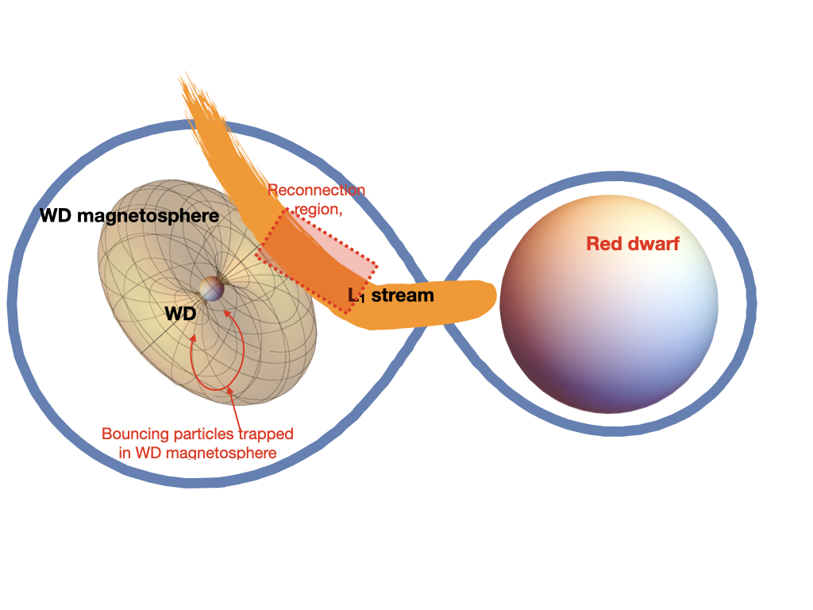<br />
对应解读：对应“建议重点查看的图表”第1项，以及“关键图表逐图导读”中的图1：Chandra源位置附近的X射线图像/切图，用于判断射电位置处是否存在X射线点源。<br />
入选理由：候选中唯一真实存在的论文图，且与本文核心证据最直接相关：Chandra未探测到PSR J0901-4046的X射线对应体。它能支撑日报关于源位置、误差区域、局部背景和非探测结论的解读，是后续计数率上限、通量/光度上限以及排除孤立白矮星自转供能模型的观测基础。<br />
来源与置信度：\(arxiv_source\)；high；\(arxiv_source\) / apj.tex:figure[1]</p>
<h4 id="_122">强相关工作</h4>
<p>这篇工作与 PSR J0901-4046 的发现论文、长周期射电暂现源巡天论文、磁星射电发射研究和白矮星脉冲星候选体研究直接相关。对于同一源，应检索关键词 “PSR J0901-4046 discovery”, “76 second radio pulsar”, “MeerTRAP PSR J0901-4046”, “long period radio transient”。同一类源方面，应检索 “long-period radio transient”, “ultra-long period magnetar”, “GLEAM-X long period transient”, “ASKAP long period radio transient”。</p>
<p>理论背景方面，本文站在旋转供能脉冲星、磁星磁能释放和白矮星脉冲星模型之间。基础关键词包括 “Goldreich Julian pulsar magnetosphere”, “pulsar death line”, “magnetar radio emission”, “white dwarf pulsar AR Scorpii”, “spin-down luminosity compact stars”。相反或张力方向的文献包括主张某些 LPT 可能是磁白矮星、双星白矮星或非中子星系统的文章；读者应特别比较这些模型是否给出可检验的 X 射线、光学或紫外预言，而不只是解释周期尺度。</p>
<p><strong>同一事件 / 同类源线索</strong>：</p>
<ul>
<li><a href="https://arxiv.org/abs/2607.03848">https://arxiv.org/abs/2607.03848</a></li>
<li><a href="https://ui.adsabs.harvard.edu/search/q=PSR%20J0901-4046">https://ui.adsabs.harvard.edu/search/q=PSR%20J0901-4046</a></li>
</ul>
<p><strong>相似工作</strong>：</p>
<ul>
<li><a href="https://ui.adsabs.harvard.edu/search/q=%22long-period%20radio%20transient%22">https://ui.adsabs.harvard.edu/search/q=%22long-period%20radio%20transient%22</a></li>
<li><a href="https://ui.adsabs.harvard.edu/search/q=%22ultra-long%20period%22%20magnetar">https://ui.adsabs.harvard.edu/search/q=%22ultra-long%20period%22%20magnetar</a></li>
<li><a href="https://ui.adsabs.harvard.edu/search/q=%22AR%20Scorpii%22%20%22white%20dwarf%20pulsar%22">https://ui.adsabs.harvard.edu/search/q=%22AR%20Scorpii%22%20%22white%20dwarf%20pulsar%22</a></li>
</ul>
<p><strong>基础理论 / 方法工作</strong>：</p>
<ul>
<li><a href="https://ui.adsabs.harvard.edu/abs/1969ApJ...157..869G/abstract">https://ui.adsabs.harvard.edu/abs/1969ApJ...157..869G/abstract</a></li>
<li><a href="https://ui.adsabs.harvard.edu/abs/1992ApJ...392L...9D/abstract">https://ui.adsabs.harvard.edu/abs/1992ApJ...392L...9D/abstract</a></li>
<li><a href="https://ui.adsabs.harvard.edu/search/q=pulsar%20death%20line%20pair%20cascade">https://ui.adsabs.harvard.edu/search/q=pulsar%20death%20line%20pair%20cascade</a></li>
</ul>
<p><strong>相反观点 / 张力线索</strong>：</p>
<ul>
<li><a href="https://ui.adsabs.harvard.edu/search/q=%22white%20dwarf%20pulsar%22%20%22long-period%20radio%20transient%22">https://ui.adsabs.harvard.edu/search/q=%22white%20dwarf%20pulsar%22%20%22long-period%20radio%20transient%22</a></li>
<li><a href="https://ui.adsabs.harvard.edu/search/q=%22long-period%20radio%20transient%22%20%22white%20dwarf%22">https://ui.adsabs.harvard.edu/search/q=%22long-period%20radio%20transient%22%20%22white%20dwarf%22</a></li>
</ul>
</details>
<h3 id="12-a-nicer-view-of-the-millisecond-pulsar-psr-j2124astro_math_26223358-evidence-for-a-helium-atmosphere">12. A NICER view of the millisecond pulsar PSR J2124$-$3358: evidence for a helium atmosphere</h3>
<ul>
<li>来源：arXiv / astro-ph.HE</li>
<li>链接：https://arxiv.org/abs/2607.03721v1</li>
<li>作者：Denis González-Caniulef, Sebastien Guillot, Pierre Stammler, Lucien Mauviard, Christine Kazantsev, Anna L. Watts, Devarshi Choudhury, Bas Dorsman</li>
<li>评分：novelty 7/10，importance 8/10，relevance 8/10，final 8.70/10</li>
<li>推荐理由：NICER+Chandra对毫秒脉冲星PSR J2124-3358进行脉冲轮廓建模，并提出氦大气证据；虽半径约束较宽，但对NICER中子星EOS测量和大气系统误差很有参考价值。</li>
</ul>
<p><strong>中文题目</strong>：NICER 观测毫秒脉冲星 PSR J2124−3358：支持氦大气的证据</p>
<p><strong>做了什么</strong>：这篇文章用 NICER 的软 X 射线脉冲轮廓和 Chandra 对背景/邻近源的约束，对孤立毫秒脉冲星 PSR J2124−3358 做相对论脉冲轮廓建模。作者用公开代码 X-PSI 同时拟合中子星质量、赤道半径、热点几何、视线倾角、距离和背景等参数，并比较氢大气与氦大气、不同热点构型。核心结论是：数据更偏好氦大气模型；在氦大气假设下得到较宽的后验，质量约为 \(M=1.8\pm0.5\,M_\odot\)，赤道半径约为 \(R_{\rm eq}=11.7^{+2.6}_{-3.0}\,\rm km\)，热点更像两个略微非对跖的热区。由于源很暗、信噪比较低，这还不是强半径约束，但它展示了把更多较暗毫秒脉冲星纳入 NICER 方程状态研究的可行性，也提醒我们：大气成分不是技术细节，而会系统性移动质量和半径推断。</p>
<p><strong>为什么重要</strong>：NICER 的中子星半径约束目前主要来自少数明亮毫秒脉冲星。PSR J2124−3358 较暗，加入它可以扩大样本，但也会暴露低信噪比下的模型选择问题。本文重要之处在于它把大气成分作为主要物理假设来检验：氢大气会使推断的 \(M\) 和 \(R_{\rm eq}\) 分别降低约 \(0.5\,M_\odot\) 和约 \(1\,\rm km\)。这说明未来用多个 NICER 源合并约束致密物质方程状态时，不能只关心统计误差，还必须认真处理表面成分、热点几何和背景建模的系统误差。</p>
<p><strong>理论 / 观测 / 仪器方法价值</strong>：对理论而言，本文提供了一个额外的质量—半径后验，可用于未来方程状态联合推断，但目前更适合作为宽约束而非决定性半径测量。对观测而言，它展示了 NICER 与 Chandra 联合使用的价值：NICER 给时间分辨的脉冲轮廓，Chandra 帮助识别场源和背景。对方法而言，文章是 X-PSI 在较低信噪比毫秒脉冲星上的一次完整应用，清楚体现了大气模型、热点几何、仪器响应和背景先验如何影响贝叶斯后验。</p>
<p><strong>为什么应该关注</strong>：如果你关心中子星方程状态，这篇文章值得关注，因为它说明新增样本并不只是把更多后验相乘那么简单；每个源的表面物理假设都可能把 \(M\)–\(R\) 约束推向不同区域。如果你关心脉冲星演化，氦大气偏好也很有意思：它可能与曾经存在的贫氢伴星、吸积残留和后续蒸发有关。如果你做 X 射线数据分析，本文是一个很好的案例：在源暗、背景重要、模型退化明显时，如何读懂脉冲轮廓建模的可信度。</p>
<details class="paper-detail">
<summary>展开详细解读：文章讲解、背景、理论、重点章节、图表与相关工作</summary>
<h4 id="_123">文章详细讲解</h4>
<p>科学问题：NICER 脉冲轮廓建模的目标是从毫秒脉冲星表面热斑的 X 射线脉冲形状反推出中子星的紧致度、质量和半径。PSR J2124−3358 是一颗孤立、旋转供能的毫秒脉冲星，距离较近、已有多波段研究基础，但 X 射线源较暗。本文要问的是：在现有 NICER 和 Chandra 数据下，能否对它的 \(M\) 和 \(R_{\rm eq}\) 给出有用约束？同时，表面大气到底更像氢还是氦？热点是否必须严格对跖？这些问题直接影响把该源纳入中子星方程状态样本时是否可靠。</p>
<p>作者怎么做：论文使用 X-PSI 进行广义相对论光线追踪和贝叶斯参数推断。NICER 提供能量分辨、相位分辨的脉冲计数数据；Chandra 的作用主要是帮助刻画视场内点源、弥散背景以及源的非脉冲成分，从而减少 NICER 大视场带来的背景不确定性。作者尝试不同表面大气成分，包括氢和氦，并比较不同热点几何，例如两个近似对跖热斑和允许非对跖偏移的构型。拟合参数包括 \(M\)、\(R_{\rm eq}\)、距离、倾角、热点位置/大小/温度、背景参数以及仪器响应相关量。</p>
<p>关键结果：模型比较偏好氦大气解释。采用氦大气时，后验中位数和 \(68\%\) 可信区间给出 \(M=1.8\pm0.5\,M_\odot\)，\(R_{\rm eq}=11.7^{+2.6}_{-3.0}\,\rm km\)。由于数据较弱，后验很宽，并不能像 J0030+0451 或 J0740+6620 那样提供尖锐的半径约束。不过模型仍倾向于两个略微非对跖的热点，而不是最简单的完全对跖偶极几何。若改用氢大气，质量和半径后验整体降低，幅度约为 \(0.5\,M_\odot\) 和 \(1\,\rm km\)，这表明大气成分的系统误差与统计误差同量级。</p>
<p>局限和下一步：本文最重要的限制来自低信噪比、背景占比、热点几何退化和大气成分模型选择。氦大气偏好是物理上可解释的，但仍需多波段证据支持，例如射电脉冲极化几何、伽马射线脉冲峰相位、伴星演化痕迹或紫外/光学约束。下一步最有价值的是将 X 射线脉冲轮廓与射电、伽马射线发射几何联合建模，缩小视线倾角和磁倾角退化；同时需要更长 NICER 曝光或未来更高有效面积软 X 射线仪器，以减少背景主导下的模型选择不确定性。</p>
<h4 id="_124">关键结果是怎么做出来的</h4>
<p>数据和样本选择方面，本文聚焦单一源 PSR J2124−3358，而不是做脉冲星群体统计。NICER 数据承担主拟合任务，因为它提供亚毫秒时间标记、软 X 射线能谱和相位分辨计数；Chandra 数据用于约束空间上可分辨的 X 射线点源和背景结构，从而辅助 NICER 的背景建模。作者没有把所有光子简单相加，而是按照脉冲星自转相位和能道构造二维计数分布，并将其与相对论辐射传输模型比较。</p>
<p>事件数和信噪比是本文结论强弱的关键。摘要明确指出源较暗、数据集信噪比较低，因此质量和半径后验宽。读者在正文中应特别检查净源计数、背景计数、相位折叠后的脉冲显著性，以及不同能段中脉冲调制是否一致。若某一模型的优势主要来自少数能道或少数相位 bin，就需要警惕背景或响应系统误差。本文的主结论不是“精确测得半径”，而是“在当前数据下氦大气模型更合适，并给出宽的 \(M\)–\(R_{\rm eq}\) 后验”。</p>
<p>统计方法上，X-PSI 通常采用泊松计数似然，并在贝叶斯框架下对源参数和背景参数进行联合抽样。模型比较可通过贝叶斯证据、证据差、边际似然或后验预测拟合质量来评估。本文比较氢和氦大气以及不同热点配置，结论是氦大气更受数据支持，两个略微非对跖热斑较自然地解释相位轮廓。读者应查看证据差是否足够大、先验体积是否影响模型排序，以及氦大气偏好是否与某个几何先验强相关。</p>
<p>支撑结论的图表应包括相位—能量计数图、最佳拟合或后验预测脉冲轮廓、\(M\)–\(R_{\rm eq}\) 二维可信区域、热点几何后验、大气成分或模型证据比较表。尤其要看氢大气和氦大气模型在低能端的谱形差异是否能被 NICER 数据分辨，以及背景模型变化后 \(M\)–\(R_{\rm eq}\) 区域是否稳定。若残差呈现随能量或相位有结构的偏差，说明热点温度分布、非热成分或背景模型可能还不够。</p>
<p>系统误差和稳健性检验方面，最重要的是大气成分、距离先验、视线倾角先验、热点数量/形状、NICER 背景估计、Chandra 识别的邻近源贡献以及能量响应校准。本文发现氢大气使 \(M\) 和 \(R_{\rm eq}\) 分别约降低 \(0.5\,M_\odot\) 和 \(1\,\rm km\)，这本身就是最直接的系统误差诊断。稳健性应通过替换背景模型、调整能段、改变热点参数化和比较后验预测来检查。</p>
<details class="paper-subdetail">
<summary>展开背景、理论、公式、模型、章节和图表导读</summary>
<h4 id="_125">背景知识</h4>
<p>毫秒脉冲星是自转周期在毫秒量级的中子星，通常被认为经历过低质量 X 射线双星阶段的吸积加速。它们磁场较弱、自转稳定，很多源在软 X 射线中表现为来自磁极附近热斑的热辐射。由于热斑随着星体自转周期性扫过视线，观测者看到的 X 射线脉冲轮廓包含了引力弯光、多普勒增强、投影效应和表面辐射各向异性的信息。</p>
<p>NICER 的核心科学目标之一就是利用这种脉冲轮廓反推中子星半径，进而约束超核密度物质方程状态。此前较有影响的目标包括 PSR J0030+0451 和 PSR J0740+6620，它们给出了相对有用的 \(M\)–\(R\) 约束。PSR J2124−3358 是扩展样本的一部分；它不如一些标志性目标明亮，但每加入一个独立源，都有助于检验方程状态推断是否被少数对象的特殊系统误差主导。</p>
<p>这个领域的历史难点在于，从 X 射线脉冲轮廓到半径不是简单几何反演。脉冲调制幅度受中子星紧致度、热点纬度、观测倾角、热点大小、温度分布、大气辐射束形和背景共同影响。较强引力弯光会让背面的热斑也可见，从而降低脉冲幅度；快速自转又引入多普勒频移和光行时效应。因而同一条脉冲轮廓可能由不同参数组合产生，必须用完整的贝叶斯推断处理退化。</p>
<p>为什么现在值得重新看 PSR J2124−3358？一方面，NICER 累积了足够长的曝光，X-PSI 等公开工具也让不同源的建模框架更统一；另一方面，Chandra 的高角分辨率可以给 NICER 的背景和场源污染提供外部约束。更重要的是，本文把氦大气作为严肃候选，而不是默认氢大气。对经历过复杂双星演化的毫秒脉冲星而言，表面成分未必总是纯氢。</p>
<p>常见误区有三个。第一，把 NICER 半径测量理解为直接测量黑体半径，这是错误的；真实推断依赖大气辐射、相对论传播和几何模型。第二，以为热点必须是简单对跖偶极结构；事实上回收毫秒脉冲星的磁场可能很复杂，非对跖热点并不意外。第三，把不同大气模型下的 \(M\)–\(R\) 差异看作小修正；本文显示成分假设可以造成与统计误差相当的系统偏移。</p>
<h4 id="_126">基础理论 / 方法脉络</h4>
<p>基本物理图像是：中子星表面局部热区发出软 X 射线，光子在强引力场中发生红移和弯曲，最后被 NICER 记录为随自转相位和能量变化的计数率。若星体更紧致，即 \(GM/(Rc^2)\) 更大，引力弯光更强，热斑在更大相位范围内可见，脉冲调制通常被抹平。因此脉冲轮廓的形状对 \(M/R\) 很敏感，而绝对通量、谱形和多普勒效应进一步帮助区分 \(M\) 与 \(R\)。</p>
<p>表面大气决定了同一有效温度下的谱形和角分布。纯黑体辐射是各向同性的近似，但真实轻元素大气会产生颜色校正和边缘增亮/变暗。氢大气和氦大气的不透明度不同，因此给定观测颜色温度和通量时，推断的发射面积、温度、距离和半径会不同。本文的关键物理点正是：氦大气更能同时解释 PSR J2124−3358 的能谱和相位调制。</p>
<p>观测上，NICER 不成像，优势是大有效面积、好时间分辨和软 X 射线能谱；缺点是背景和视场内其他源需要仔细处理。Chandra 成像能力强，可以帮助确认目标附近是否存在污染源，并约束非脉冲背景。模型拟合时，理论光子通量要通过 NICER 的能量响应矩阵和有效面积转换成每个能道、每个相位 bin 的预期计数，再与实际计数比较。</p>
<p>本文假设热辐射主要来自一个或两个极冠热区，并允许它们不完全对跖。关键量包括质量 \(M\)、赤道半径 \(R_{\rm eq}\)、自转频率、距离 \(D\)、视线倾角 \(i\)、热点共纬度和方位、热点角半径、表面温度以及背景计数率。退化关系主要包括 \(M/R_{\rm eq}\) 与几何调制的退化、\(D\) 与发射面积的退化、温度与大气成分的退化、背景与低脉冲幅度的退化。</p>
<p>系统误差通常来自大气成分、热点形状、仪器响应、能段选择、背景模型和相位对齐。对于暗源，背景模型稍有改变就可能改变低能谱形和脉冲分数，进而影响大气模型比较。因而读者不应只看后验中位数，而要看后验是否宽、是否多峰、是否由先验边界截断，以及不同模型的后验预测是否真正重现实测相位—能量结构。</p>
<h4 id="_127">公式与推导</h4>
<p>第一步，从紧致度开始。静态球对称近似下，中子星表面光子的引力红移满足</p>
<div class="math-display">\[1+z=\left(1-\frac{2GM}{Rc^2}\right)^{-1/2},\]</div>
<p>其中 \(G\) 是引力常数，\(c\) 是光速，\(M\) 是质量，\(R\) 可近似理解为半径或在快速自转模型中与 \(R_{\rm eq}\) 相关的局部半径。该式说明观测到的光子能量低于表面发射能量，并且红移主要由紧致度 \(GM/(Rc^2)\) 控制。</p>
<p>第二步，表面发射能量与观测能量的关系为</p>
<div class="math-display">\[E_{\rm obs}=\frac{E_{\rm em}}{1+z}\,\delta,\]</div>
<p>其中 \(E_{\rm em}\) 是局部共动系发射能量，\(E_{\rm obs}\) 是远处观测能量，\(\delta\) 是由自转引起的多普勒因子。对毫秒脉冲星，\(\delta\) 不能完全忽略，因为热点接近观测者或远离观测者时会造成相位相关的能量偏移和强度增强。</p>
<p>第三步，辐射强度沿测地线满足 Liouville 不变量：</p>
<div class="math-display">\[\frac{I_E}{E^3}={\rm invariant},\]</div>
<p>所以远处比强度可写成</p>
<div class="math-display">\[I_{E,\rm obs}=\left(\frac{E_{\rm obs}}{E_{\rm em}}\right)^3 I_{E,\rm em}.\]</div>
<p>这里 \(I_E\) 是单位能量比强度。该关系把大气模型给出的局部角分布和谱形连接到观测者看到的谱形，是脉冲轮廓建模的核心。</p>
<p>第四步，单个表面元对观测通量的贡献可概略写作</p>
<div class="math-display">\[dF_E(\phi)=\frac{I_{E,\rm obs}(\alpha,\phi)\,d\Omega_{\rm obs}}{1},\]</div>
<p>其中 \(\phi\) 是自转相位，\(\alpha\) 是局部发射角，\(d\Omega_{\rm obs}\) 是该表面元在观测者天空中的立体角。实际 X-PSI 会用相对论光线追踪计算 \(\alpha\)、光行时、可见性和自转导致的修正，而不是使用简单平直空间投影。</p>
<p>第五步，总的相位分辨能谱由所有可见热点表面元积分得到：</p>
<div class="math-display">\[F_E(\phi)=\sum_{k}\int_{S_k} I_{E,\rm obs}(\alpha,\phi)\,d\Omega_{\rm obs},\]</div>
<p>其中 \(S_k\) 表示第 \(k\) 个热点区域。热点位置、大小和温度改变该积分的相位依赖；大气成分改变 \(I_{E,\rm em}\) 的能量和角度依赖。</p>
<p>第六步，理论通量需要通过仪器响应变成预期计数：</p>
<div class="math-display">\[\mu_{jp}=T\int R_j(E)\,A_{\rm eff}(E)\,F_E(\phi_p)\,dE+B_{jp},\]</div>
<p>其中 \(\mu_{jp}\) 是第 \(j\) 个能道、第 \(p\) 个相位 bin 的期望计数，\(T\) 是曝光时间，\(R_j(E)\) 是能量重分布响应，\(A_{\rm eff}(E)\) 是有效面积，\(B_{jp}\) 是背景期望计数。NICER 数据分析的很多系统误差都进入这一式。</p>
<p>第七步，对计数数据常用泊松似然：</p>
<div class="math-display">\[\ln \mathcal{L}=\sum_{j,p}\left[n_{jp}\ln\mu_{jp}-\mu_{jp}-\ln(n_{jp}!)\right],\]</div>
<p>其中 \(n_{jp}\) 是观测计数。该式让模型同时利用能谱和相位信息；若某模型在某些相位或能道系统性偏离，似然会下降。</p>
<p>第八步，贝叶斯后验为</p>
<div class="math-display">\[p(\theta|d)=\frac{\mathcal{L}(d|\theta)\,\pi(\theta)}{\mathcal{Z}},\]</div>
<p>其中 \(\theta\) 包括 \(M\)、\(R_{\rm eq}\)、几何、大气和背景参数，\(d\) 是数据，\(\pi(\theta)\) 是先验，\(\mathcal{Z}\) 是贝叶斯证据。本文报告的质量和半径可信区间就是从该后验边际化得到。</p>
<p>第九步，不同大气或热点模型的比较可用证据比表示：</p>
<div class="math-display">\[K_{12}=\frac{\mathcal{Z}_1}{\mathcal{Z}_2},\qquad \Delta\ln\mathcal{Z}=\ln\mathcal{Z}_1-\ln\mathcal{Z}_2.\]</div>
<p>若模型 \(1\) 是氦大气、模型 \(2\) 是氢大气，则正的 \(\Delta\ln\mathcal{Z}\) 表示数据在考虑先验体积后更支持氦大气。读者应同时检查后验预测残差，避免只依赖一个证据数值。</p>
<p>第十步，半径约束最终与紧致度和通量标度共同相关。一个直观近似是</p>
<div class="math-display">\[F_{\rm bol}\sim \sigma_{\rm SB}T_{\rm eff}^4\left(\frac{R_{\rm em}}{D}\right)^2(1+z)^{-4},\]</div>
<p>其中 \(F_{\rm bol}\) 是观测 bolometric 通量，\(\sigma_{\rm SB}\) 是 Stefan–Boltzmann 常数，\(T_{\rm eff}\) 是有效温度，\(R_{\rm em}\) 是等效发射尺度，\(D\) 是距离。该近似显示距离、温度、大气颜色校正、红移和发射面积之间存在强退化，解释了为什么暗源的 \(M\)–\(R_{\rm eq}\) 后验较宽。</p>
<h4 id="_128">模型拟合 / 应用方法</h4>
<p>本文的模型拟合属于典型的相位分辨 X 射线计数贝叶斯反演。被拟合的数据不是单条光变曲线，而是能量—相位二维计数分布。模型参数大致分为四组：中子星整体参数，如 \(M\)、\(R_{\rm eq}\)、距离和倾角；表面热点参数，如位置、大小、温度和是否非对跖；辐射物理参数，如氢或氦大气；以及观测参数，如背景、响应和可能的非源贡献。</p>
<p>似然一般基于泊松计数统计，背景参数可以固定、带先验或与源模型联合边际化。Chandra 信息的价值在于给背景和场源贡献提供外部约束，从而降低 NICER 不成像带来的歧义。对暗源而言，若背景先验过强，可能人为压缩后验；若背景先验过宽，则源参数会与背景强烈退化，使 \(M\) 和 \(R_{\rm eq}\) 约束变宽。</p>
<p>参数退化是读本文时的重点。视线倾角和热点纬度共同决定脉冲幅度；紧致度也改变脉冲幅度，因此几何和 \(M/R_{\rm eq}\) 退化。距离和热点面积共同决定通量归一化；温度和大气成分共同决定谱峰和颜色校正。氢大气与氦大气给出的角分布和谱形不同，因此它们会把后验推到不同的 \(M\)–\(R_{\rm eq}\) 区域。</p>
<p>残差诊断应按能量和相位同时检查。如果模型只在相位平均能谱上拟合得好，但在脉冲峰附近的能道残差有系统结构，说明热点几何或大气束形可能不对。如果相位轮廓拟合得好但能谱低能端偏离，可能是吸收、背景或大气成分问题。本文偏好氦大气，读者应关注这种偏好是否表现为全局残差减少，而不是某个能段的局部改善。</p>
<p>模型可能失败的地方包括：热点不是均匀圆斑而是有温度梯度；存在非热磁层 X 射线成分；表面不是纯氢或纯氦而是混合或分层大气；磁场虽然弱但仍改变轻元素大气辐射；NICER 背景模型没有捕捉观测期间的空间天气变化。实际应用上，本文后验可进入多源方程状态联合分析，但最好保留大气模型不确定性，而不是只采用单一氦大气后验。</p>
<h4 id="_129">重点章节 / 结果段落怎么读</h4>
<p>数据/样本部分应先看 NICER 和 Chandra 观测的选择、曝光、能段、相位折叠和背景处理。重点不是源名本身，而是有效计数、背景占比和是否有邻近 X 射线源污染。读者应确认作者如何使用脉冲星星历把事件折叠到自转相位，以及 Chandra 约束如何转化为 NICER 背景先验。</p>
<p>方法部分应重点读 X-PSI 设置：使用的时空近似、光线追踪、仪器响应、能道和相位 bin、采样算法、先验范围，以及大气模型库。尤其要看氢大气和氦大气的处理是否除了成分外保持可比，热点几何的自由度是否相近，否则模型证据比较可能受先验体积影响。</p>
<p>主结果部分应读 \(M\)–\(R_{\rm eq}\) 后验、热点几何后验和模型比较表。本文最应记住的数值是氦大气下 \(M=1.8\pm0.5\,M_\odot\) 与 \(R_{\rm eq}=11.7^{+2.6}_{-3.0}\,\rm km\)，以及氢大气会使结果约下降 \(0.5\,M_\odot\) 和 \(1\,\rm km\)。这些结果应与后验宽度一起理解。</p>
<p>讨论部分应看作者如何解释氦大气的物理来源。PSR J2124−3358 可能曾经有贫氢伴星，吸积和蒸发过程可使表面保留氦或氢缺乏物质。读者应区分“统计上偏好氦大气”和“已经直接探测到氦谱线”这两种说法；NICER 软 X 射线连续谱和脉冲形状支持的是前者。</p>
<p>附录/稳健性检验若有，应优先检查先验敏感性、背景模型替换、能段选择、采样收敛、后验预测检查和不同热点参数化。对于低信噪比目标，附录往往比主文结论更能告诉你结果有多可靠。</p>
<h4 id="_130">建议重点查看的图表</h4>
<ol>
<li>
<p>相位折叠脉冲轮廓：看不同能段的脉冲峰位置、脉冲分数和误差棒，确认源是否有足够相位信息支撑几何拟合。</p>
</li>
<li>
<p>相位—能量二维计数或残差图：看模型是否在某些相位/能道留下结构化残差；这是判断大气模型和热点模型是否合理的关键。</p>
</li>
<li>
<p>\(M\)–\(R_{\rm eq}\) 二维后验图：看可信区间是否闭合、是否多峰、是否靠近先验边界，以及氢/氦模型的后验偏移有多大。</p>
</li>
<li>
<p>大气模型比较表或证据图：看氦大气相对氢大气的证据优势、似然改善和先验体积惩罚，避免只看最佳拟合值。</p>
</li>
<li>
<p>热点几何示意或后验角分布：看两个热点是否显著非对跖，热点大小和温度是否与脉冲轮廓相符。</p>
</li>
<li>
<p>背景和 Chandra 场源诊断：看 NICER 视场内背景贡献、Chandra 识别的邻近源以及这些不确定性如何传递到源参数。</p>
</li>
<li>
<p>后验预测检查：看从后验抽样生成的模型是否覆盖实际数据，而不仅是最大后验模型看起来不错。</p>
</li>
</ol>
<h4 id="_131">关键图表逐图导读</h4>
<p>图 1：建议把它作为数据质量图来读。横轴通常是自转相位或能量，纵轴是计数率、净计数或脉冲强度。若分能段展示，应比较软能段和较硬能段的脉冲峰是否同相，脉冲幅度是否随能量变化。读图陷阱是不要把背景扣除后的平滑曲线当成纯源信号；暗源中误差棒和背景模型同样重要。</p>
<p>图 2：若论文给出相位—能量二维图或模型残差图，横轴多为相位，纵轴多为能道或能量，颜色表示计数、模型预测或标准化残差。关键看残差是否随机散布在零附近。若在低能端或脉冲峰附近有连续正负残差带，说明大气谱形、热点温度分布或背景处理可能有问题。</p>
<p>图 3：\(M\)–\(R_{\rm eq}\) 后验图是本文的中心图之一。横轴通常为 \(R_{\rm eq}\)，纵轴为 \(M\)，等高线表示 \(68\%\)、\(90\%\) 或 \(95\%\) 可信区域。读者应比较氦大气和氢大气的等高线位置：氦大气结果更高质量、更大半径；氢大气整体向较小 \(M\) 和较小 \(R_{\rm eq}\) 移动。陷阱是不要只取中位数，后验宽度才体现本文约束的真实强度。</p>
<p>图 4：热点几何图或角参数后验应显示热点共纬度、方位、角半径和观测倾角之间的关系。若两个热点不是严格相隔 \(180^\circ\)，说明简单居中偶极磁场不足以解释轮廓。读图时要注意角度参数常有镜像退化，例如 \(i\) 与热点纬度互换可能产生类似脉冲形状。</p>
<p>图 5：模型比较或证据表应把氦大气、氢大气、不同热点构型放在一起。若列出 \(\ln\mathcal{Z}\)、最大似然或信息准则，应看复杂模型的改进是否超过先验体积惩罚。陷阱是把最佳拟合残差较小直接等同于模型更可信；贝叶斯证据还会惩罚没有被数据有效约束的额外自由度。</p>
<p>图 6：背景/场源图若来自 Chandra，通常会显示目标周围 X 射线图像、源区和背景区，或列出场源通量。读者应看 NICER 大视场内是否有不可忽略的污染源，以及这些源的谱形是否可能模仿目标的非脉冲软 X 射线成分。对于 PSR J2124−3358 这种暗源，这类图直接关系到后验是否稳健。</p>
</details>
<h4 id="_132">论文原图 / 可嵌入图片</h4>
<p><strong>Fig07</strong><br />
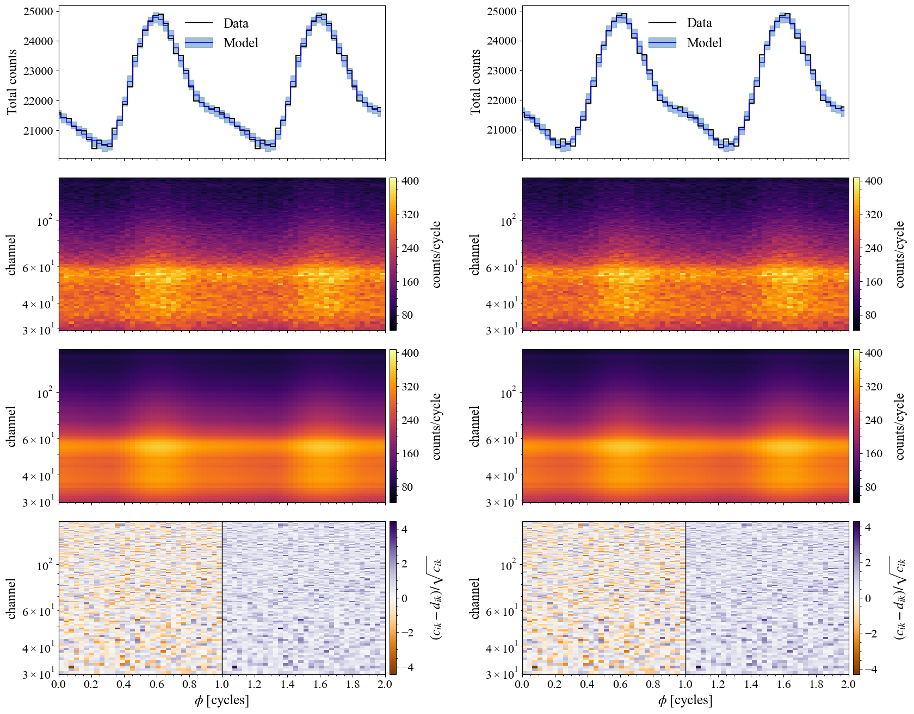<br />
图注：NICER data versus model for the \(\texttt{ST+CDT}\) surface pattern considering hydrogen (left column) and helium (right column) atmospheric composition. For each column, the top panel shows the observed, bolometric pulse profile (integrated over energy channels; black line) together with the corresponding model (blue line), with the shaded region indicating the $68\%$ credible interval. The second panel shows the observed phase- and channel-dependent pulse profile (as shown in Figure~\ref{fig:nicer_data}). The third panel shows the phase- and channel-dependent pulse profile model. The bottom, left (right) sub-panel shows the residuals, $(c_{ik}-d_{ik})/\sqrt{c_{ik}}$ (and their absolute values), where $d_{ik}$ and $c_{ik}$ correspond to the data and model counts, respectively, in the $i$-th rotational phase bin and $k$-th channel.<br />
对应解读：对应“相位—能量二维计数或残差图”“后验预测检查”以及模型拟合段落中关于能量—相位二维残差诊断的讨论。<br />
入选理由：这是最直接检验氢/氦大气和ST+CDT热点模型是否真正拟合数据的图：同时给出相位积分脉冲轮廓、相位—能道二维数据、二维模型和标准化残差，并左右并列比较氢与氦大气。它比单独的数据图更能支撑日报中关于结构化残差、模型偏好和全局拟合质量的解读。<br />
来源与置信度：\(arxiv_source\)；high；\(arxiv_source\) / main.tex:figure[7]</p>
<p><strong>Fig03</strong><br />
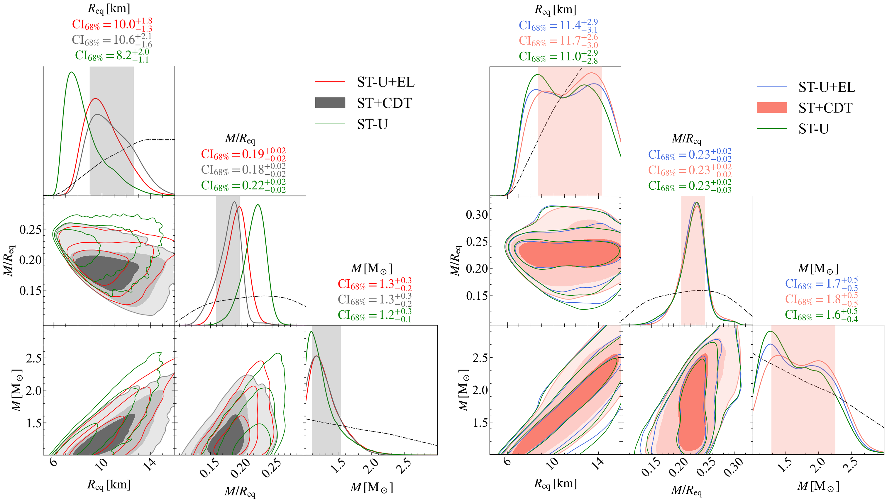<br />
图注：Posterior distributions for the radius, compactness, and mass considering hot spots with hydrogen (left panel) and helium (right panel) atmospheric compositions. For a given atmospheric composition, different colors correspond to different hot spot complexities (\(\texttt{ST-U},\) \(\texttt{ST+CDT},\) or \(\texttt{ST-U+EL}\) model). In both panels, the dash-dotted black lines show the 1D prior distributions, which are common for all models. The shaded, vertical bands (gray in the left panel and salmon in the right panel) show the $68.3\%$ credible intervals, corresponding only to the \(\texttt{ST+CDT}\) model. The 2D posterior distributions show the $68.3\%$, $95.4\%$, and $99.7\%$ credible regions.<br />
对应解读：对应“\(M\)–(R_{\<br />
m eq}) 二维后验图”和关键图表逐图导读中的图3。<br />
入选理由：这是论文核心物理结论图，直接展示质量、半径和紧致度后验，并比较氢/氦大气以及不同热点复杂度下的可信区域。它能支撑日报中关于氦模型给出更高质量、更大半径、后验较宽且需关注先验边界和可信区间的全部讨论。<br />
来源与置信度：\(arxiv_source\)；high；\(arxiv_source\) / main.tex:figure[3]</p>
<p><strong>Fig01</strong><br />
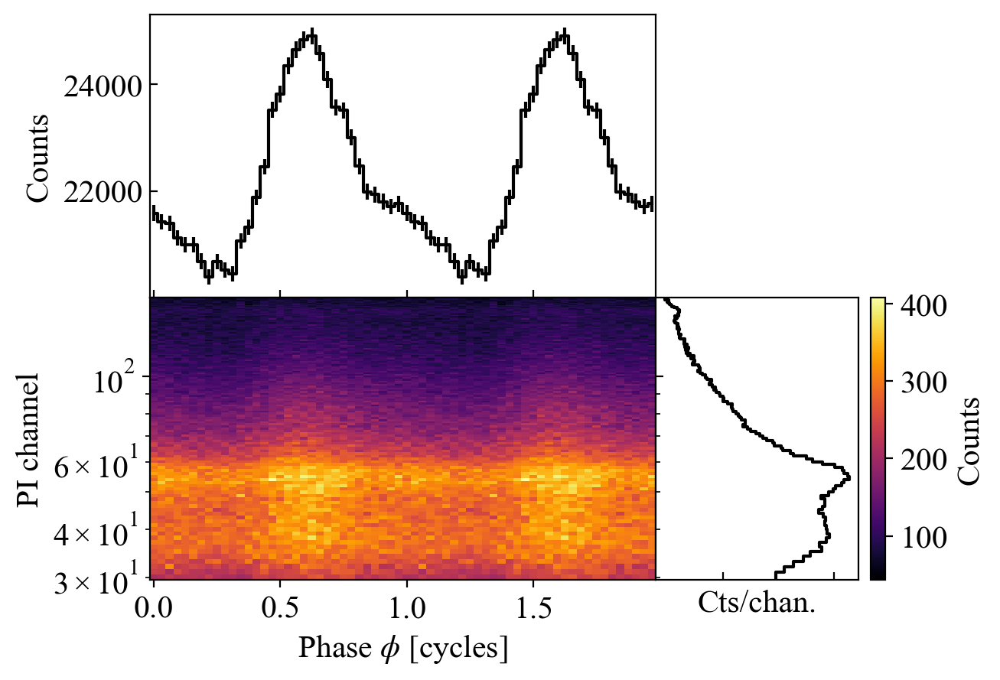<br />
图注：Phase-dependent NICER data for PSR~J2124$-$3358 in the $30-160$ PI channel range (equivalent to $0.3-1.6$~keV energy range). The top panel displays the bolometric (energy-integrated) pulse profile with the associated error bars. The bottom panels shows the energy-phase-resolved pulse profile (left) and phase-averaged spectrum in counts per channel (right). The data are divided in 32 equally spaced phase bins. Two rotational cycles are shown for clarity.<br />
对应解读：对应“相位折叠脉冲轮廓”和关键图表逐图导读中的图1。<br />
入选理由：该图展示NICER相位折叠数据、能量—相位二维计数分布和相位平均能谱，是判断PSR J2124−3358是否有足够相位信息进行脉冲轮廓建模的基础数据质量图。日报中关于脉冲峰、脉冲分数、误差棒和暗源背景影响的解读都需要这张图作为入口。<br />
来源与置信度：\(arxiv_source\)；high；\(arxiv_source\) / main.tex:figure[1]</p>
<p><strong>Fig04</strong><br />
<br />
图注：Representation of the geometries associated with the maximum likelihood parameters for different atmosphere compositions and surface pattern complexities. The upper panels (A), (B), and (C) correspond to hydrogen atmospheric composition for the \(\texttt{ST-U},\) \(\texttt{ST+CDT},\) and \(\texttt{ST-U+EL}\) models, respectively. The lower panels (D), (E), and (F) show again the \(\texttt{ST-U},\) \(\texttt{ST+CDT},\) and \(\texttt{ST-U+EL}\) models, respectively, but assuming helium atmospheric composition. The viewing geometries correspond to phase zero of the NS rotation as observed from Earth. The NS is represented without including general or special relativistic effects. In the panels (B) and (E), blue, orange, and red colors represent relatively hot, warm, and cold temperatures, respectively, while dimmer colors indicate location of the spot (or part of it) behind the sphere. A similar color scheme is adopted for panels (A), (C), (D), and (F), but using slightly darker tones. In panels (C) and (F), the temperature of the rest of the surface is $\log_{10}(T_{\rm{else}}/\rm{K})=5.46$ and $5.37$ for the case of hydrogen and helium, respectively.<br />
对应解读：对应“热点几何示意或后验角分布”和关键图表逐图导读中的图4。<br />
入选理由：该图用最大似然参数直观展示氢/氦大气与不同表面热点复杂度下的几何构型，尤其能说明ST+CDT模型中两个热点并非简单完全对跖。它适合支撑日报中关于非对跖热点、观测几何和简单偶极构型不足的讨论。<br />
来源与置信度：\(arxiv_source\)；high；\(arxiv_source\) / main.tex:figure[4]</p>
<p><strong>Fig05</strong><br />
<br />
图注：Spectrum for the NICER data with the inferred \(\texttt{ST+CDT}\) model components for the case of hydrogen (left panel) and helium (right panel) atmospheric compositions, as well as the associated background. The dashed magenta line corresponds to the NICER phase-averaged spectrum (Data spectrum in the legend). The solid pink line corresponds to the total expected signal. The solid purple line shows the maximum-likelihood (MaxL) background (BKG; background that maximizes the likelihood for the maximum likelihood sample), and the purple shaded regions (from darker to lighter) show the $\pm1$, 2, and 3 standard deviations (calculated from 200 randomly selected posterior samples). The pink shaded regions, from lighter to darker, show the contributions associated to the maximum-likelihood model for the primary (\texttt{ST}) and secondary hot spot (\texttt{CDT}), as well as the background.<br />
对应解读：对应“背景和Chandra场源诊断”以及模型拟合段落中关于背景与源模型退化的讨论。<br />
入选理由：该图分解NICER相位平均谱中的源热点贡献、总模型和背景，并给出背景后验不确定性区间，还并列比较氢与氦大气。对于暗源PSR J2124−3358，背景如何与热斑谱形共同决定拟合结果非常关键，因此这张图比单纯展示最佳拟合参数更有诊断价值。<br />
来源与置信度：\(arxiv_source\)；high；\(arxiv_source\) / main.tex:figure[5]</p>
<p><strong>Fig02</strong><br />
<br />
图注：Chandra spectral data for PSR~J2124$-$3358 in the $22-110$ PI channel range (equivalent to $0.3-1.6$~keV energy range). The blue and red lines correspond to source and background spectra, respectively. Notice that the background spectra are just slightly above zero.<br />
对应解读：对应“背景和Chandra场源诊断”以及详细解读中Chandra用于约束背景和非源贡献的部分。<br />
入选理由：该图展示Chandra源谱与背景谱，说明背景在Chandra数据中接近零但仍被显式检查。虽然它不是场源图，也不直接给出质量半径约束，但它能补充说明Chandra观测在验证源谱和约束背景方面的作用，适合与NICER背景分解图一起使用。<br />
来源与置信度：\(arxiv_source\)；high；\(arxiv_source\) / main.tex:figure[2]</p>
<h4 id="_133">强相关工作</h4>
<p>同一源 PSR J2124−3358 已有射电、伽马射线和 X 射线研究背景，相关检索关键词包括“PSR J2124-3358 NICER”，“PSR J2124-3358 Chandra”，“PSR J2124-3358 gamma-ray pulse profile”，“PSR J2124-3358 radio polarization”。这些同源论文可帮助约束自转几何、距离、谱能分布和可能的演化历史。本文的氦大气解释还应与该源是否曾有贫氢伴星、是否存在吸积残留或蒸发伴星的演化模型联系起来检索。</p>
<p>同类工作方面，最直接的比较对象是 NICER 对 PSR J0030+0451、PSR J0740+6620、PSR J0437−4715 等毫秒脉冲星的脉冲轮廓建模，以及 X-PSI、ST-U 或类似框架的相对论 ray-tracing 论文。基础理论则包括中子星热斑辐射、轻元素大气模型、强引力光线弯曲和贝叶斯证据模型选择。相反或张力方向主要来自不同热点几何假设、不同大气成分假设、X 射线半径与核物理/引力波方程状态约束之间的一致性问题；检索关键词可用“Nicer pulse profile modeling atmosphere composition systematics”，“neutron star helium atmosphere millisecond pulsar”，“X-PSI neutron star radius”。</p>
<p><strong>同一事件 / 同类源线索</strong>：</p>
<ul>
<li><a href="https://arxiv.org/abs/2607.03721">https://arxiv.org/abs/2607.03721</a></li>
<li><a href="https://arxiv.org/pdf/2607.03721">https://arxiv.org/pdf/2607.03721</a></li>
</ul>
<p><strong>相似工作</strong>：</p>
<ul>
<li><a href="https://arxiv.org/abs/1909.05705">https://arxiv.org/abs/1909.05705</a></li>
<li><a href="https://arxiv.org/abs/1909.05707">https://arxiv.org/abs/1909.05707</a></li>
<li><a href="https://arxiv.org/abs/2105.06979">https://arxiv.org/abs/2105.06979</a></li>
<li><a href="https://arxiv.org/abs/2105.06980">https://arxiv.org/abs/2105.06980</a></li>
</ul>
<p><strong>基础理论 / 方法工作</strong>：</p>
<ul>
<li><a href="https://arxiv.org/abs/1605.01773">https://arxiv.org/abs/1605.01773</a></li>
<li><a href="https://arxiv.org/abs/1809.01121">https://arxiv.org/abs/1809.01121</a></li>
<li><a href="https://arxiv.org/abs/1808.02049">https://arxiv.org/abs/1808.02049</a></li>
</ul>
<p><strong>相反观点 / 张力线索</strong>：</p>
<ul>
<li><a href="https://arxiv.org/abs/2002.00033">https://arxiv.org/abs/2002.00033</a></li>
<li><a href="https://arxiv.org/abs/2105.08688">https://arxiv.org/abs/2105.08688</a></li>
</ul>
</details>
<h3 id="13-the-emergence-of-x-ray-emission-lines-during-relativistic-radio-jet-formation-in-the-changing-look-active-galactic-nucleus-1es-1927654">13. The emergence of X-ray emission lines during relativistic radio-jet formation in the changing-look active galactic nucleus 1ES 1927+654</h3>
<ul>
<li>来源：arXiv / astro-ph.HE</li>
<li>链接：https://arxiv.org/abs/2607.05246v1</li>
<li>作者：Dev R. Sadaula, Sibasish Laha, Eileen T. Meyer, Onic I. Shuvo, Main Pal, Ritesh Ghosh, Matteo Guainazzi, Fabio Pacucci</li>
<li>评分：novelty 8/10，importance 8/10，relevance 7/10，final 8.65/10</li>
<li>推荐理由：对changing-look AGN 1ES 1927+654喷流形成阶段进行多波段监测，报告新出现的软X射线线和Fe K特征，关联吸积盘反射、风和喷流转变；对AGN高能吸积/喷流物理有较高价值。</li>
</ul>
<p><strong>中文题目</strong>：变脸活动星系核 1ES 1927+654 在相对论性射电喷流形成期间出现的 X 射线发射线</p>
<p><strong>做了什么</strong>：这篇文章跟踪了变脸活动星系核 1ES 1927+654 从 2022 年到 2025 年新生射电喷流形成和增强期间的多波段变化。作者联合使用 XMM-Newton、Swift、TNG、ZTF、VLA 和 VLBA 数据，发现软 X 射线中约 \(0.56\,\mathrm{keV}\) 和约 \(1\,\mathrm{keV}\) 的发射特征在喷流形成阶段出现并变化，堆叠约 \(70\,\mathrm{ks}\) 的 EPIC-pn 谱后还首次在这个过去几乎无特征的源中看到宽的 Fe K 发射结构。与此同时，2022 年较明显的电离吸收在 2023--2025 年减弱，而软 X 射线和 \(5\,\mathrm{GHz}\) 射电流量分别增强约 \(10\) 倍和 \(60\) 倍后进入高平台。作者把这些现象解释为：内吸积盘、冕区和外流结构正在重组，部分原本以盘风形式离开的物质可能被改道进入新生喷流。</p>
<p><strong>为什么重要</strong>：1ES 1927+654 是少数能在几年时间尺度上看到吸积态、X 射线冕、外流和喷流几乎同步重构的近邻活动星系核。多数喷流形成研究只能比较不同源的统计样本，而这篇工作是在同一个源上追踪“盘风减弱、反射线出现、射电喷流增强”的时间序列，因此对理解吸积盘如何把能量和角动量分配到风、冕和喷流中很有价值。</p>
<p><strong>理论 / 观测 / 仪器方法价值</strong>：观测价值在于给出了 2022--2025 年密集多波段谱演化，并把高分辨率 RGS、EPIC-pn 宽能段谱、Swift 长期监测、VLA/VLBA 射电结构和光学测光放在同一条证据链中。理论价值在于它提供了一个可检验的盘风--喷流转换案例：随着喷流建立，电离吸收减弱，反射和再处理特征增强。方法价值在于展示了对弱谱线、堆叠 Fe K 结构、吸收--发射退化以及跨仪器长期光变进行联合解释的实际做法。</p>
<p><strong>为什么应该关注</strong>：如果你关心喷流启动、X 射线反射、变脸 AGN 或盘风反馈，这个源值得关注，因为它不是普通的“亮了或暗了”的事件，而像是在实时暴露中心发动机的重新接线过程。它还提醒我们：一个历史上 X 射线谱很干净的 AGN，在吸积态改变后可以突然出现软 X 射线线、Fe K 宽线和射电喷流，这会影响我们对“无反射”“无 BLR”“无线谱”的物理解释。</p>
<details class="paper-detail">
<summary>展开详细解读：文章讲解、背景、理论、重点章节、图表与相关工作</summary>
<h4 id="_134">文章详细讲解</h4>
<p>科学问题：本文要回答的是，1ES 1927+654 在 2017 年巨大变脸事件之后，为什么又在 2022 年以后进入一个射电快速增强的新阶段，以及这个新生射电喷流是否伴随内吸积流、X 射线冕和盘风的结构变化。1ES 1927+654 过去的一个重要特点是 X 射线谱相对“无特征”，尤其缺少典型 Seyfert 星系中常见的强 Fe K 反射线和稳定的宽光学发射线。因此，如果在喷流形成阶段突然出现 X 射线发射线和反射特征，就不能简单看成常规谱拟合的小修正，而可能是在看到中心几个到几十个引力半径内的几何结构发生改变。</p>
<p>作者怎么做：作者组织了 2022 年 5 月到 2025 年 8 月的多波段监测。X 射线方面，XMM-Newton 的 EPIC-pn 提供 \(0.3\)--\(10\,\mathrm{keV}\) 宽能段谱，RGS 提供软 X 射线高分辨率线诊断，Swift 提供较高时间采样的长期 X 射线和紫外/光学监测。光学方面，TNG 和 ZTF 用于跟踪连续谱和是否存在宽发射线。射电方面，VLA 测量总流量和谱演化，VLBA 检查毫角秒尺度结构，从而确认射电增强是否与紧致新生喷流有关。谱拟合上，作者把连续谱、软 X 射线发射特征、电离吸收、Fe K 宽发射结构和跨时期变化作为一个整体来比较。</p>
<p>关键结果：第一，约 \(0.56\,\mathrm{keV}\) 和约 \(1\,\mathrm{keV}\) 的软 X 射线发射线在喷流形成阶段出现，强度和宽度随时间变化，其中约 \(1\,\mathrm{keV}\) 的特征自 2017 年后阶段以来持续存在。第二，作者在约 \(70\,\mathrm{ks}\) 堆叠 EPIC-pn 谱中报告了中心在约 \(6\)--\(7\,\mathrm{keV}\)、宽度约 \(800\,\mathrm{eV}\) 的 Fe K 发射结构，这是该源历史上首次此类探测。第三，2022 年可见的电离吸收在后续年份减弱，软 X 射线和 \(5\,\mathrm{GHz}\) 射电流量却分别上升约 \(10\) 倍和 \(60\) 倍并在高态趋于平台。作者据此提出：内区物质流动通道从较强盘风转向更强喷流，X 射线照射和再处理几何也发生了改变。</p>
<p>局限和下一步：本文的解释依赖多条间接证据的一致性，而不是单一观测量的唯一反演。软 X 射线线可能受到离子种类混合、RGS 信噪比、连续谱建模和吸收--发射退化影响；Fe K 特征来自堆叠谱，必须警惕不同状态叠加造成的人为展宽、背景处理和交叉定标问题；射电喷流的动力学年龄、视向角和洛伦兹因子仍需要更长期 VLBI 监测约束。下一步最关键的是更深的 XMM-Newton、XRISM/Resolve 或 Athena 级别高分辨率谱，以及多频 VLBI 追踪喷流核心位移和结构速度，以验证盘风减弱是否真的与喷流能量通道增强同步。</p>
<h4 id="_135">关键结果是怎么做出来的</h4>
<p>本文最重要的证据链从样本选择开始：研究对象不是一个普通 AGN 样本，而是单一、历史行为异常清楚的变脸源 1ES 1927+654。作者选取 2022 年 5 月到 2025 年 8 月间覆盖喷流启动和增强阶段的观测，并把它与 2017 年后已知的异常 X 射线阶段相连接。这个时间窗很关键，因为射电流量从低水平快速上升，VLBA/VLA 能够把射电增强同紧致喷流联系起来，而 XMM-Newton 和 Swift 同期给出软 X 射线、硬 X 射线和谱线变化。</p>
<p>事件数或样本量在这里主要表现为多历元观测和堆叠曝光，而不是瞬变事件计数。Fe K 发射特征来自总计约 \(70\,\mathrm{ks}\) 的堆叠 EPIC-pn 谱；软 X 射线线则由各历元 EPIC-pn 和 RGS 联合拟合支撑。读者应特别注意作者是否把不同亮度态、不同吸收态的谱直接堆叠，因为若 Fe K 线能量、连续谱斜率或吸收曲率随时间变化，堆叠会把窄结构扩展成宽结构。论文的稳健性应主要体现在：单历元谱是否已有同方向残差、堆叠前后线能量是否一致、背景区和仪器响应改变是否会制造 \(6\)--\(7\,\mathrm{keV}\) 残差。</p>
<p>显著性判断通常来自加入谱线或吸收分量后拟合统计量的改进，例如 \(\Delta C\) 或 \(\Delta \chi^2\)，以及对额外自由参数的惩罚。对软 X 射线线，RGS 的分辨率有助于区分真实窄线、未建模吸收边和 EPIC 响应残差；对 Fe K 宽线，由于线宽达到约 \(800\,\mathrm{eV}\)，模型比较要区分高斯线、相对论反射、部分覆盖吸收和连续谱曲率。严格来说，线搜索存在“试探因子”：如果在宽能段反复寻找任意能量的线，局部显著性会高估全局显著性。因此应看作者是否进行了模拟谱线搜索或至少讨论了多重检验。</p>
<p>支持主张的图表应包括三类：第一类是长期光变图，显示 \(0.3\)--\(2\,\mathrm{keV}\) 软 X 射线和 \(5\,\mathrm{GHz}\) 射电分别上升约 \(10\) 倍和 \(60\) 倍，随后平台化，而光学连续谱相对稳定；第二类是各历元 X 射线谱及残差，显示约 \(0.56\,\mathrm{keV}\)、约 \(1\,\mathrm{keV}\) 和 \(6\)--\(7\,\mathrm{keV}\) 处的系统性正残差；第三类是吸收体参数随时间变化，显示 2022 年较强电离吸收到 2023--2025 年减弱的趋势。若这些图之间的时间顺序一致，盘风--喷流转换解释才有说服力。</p>
<p>主要系统误差包括：EPIC-pn 与 RGS 的交叉定标、低能端有效面积和背景建模、软 X 射线复杂吸收对发射线的伪造、Fe K 区域低计数统计、光学宿主星系污染、射电核心与扩展结构分离，以及 Swift 与 XMM-Newton 非同时观测导致的状态混合。稳健性检验应看作者是否比较了不同连续谱模型、不同吸收模型、是否排除高背景时间段、是否单独拟合 pn 与 RGS、是否用 VLBA 结构确认射电增强不是大尺度旧喷流闪烁。本文结论的强点在于多波段趋势互相呼应，弱点在于谱线物理解释仍有模型依赖。</p>
<details class="paper-subdetail">
<summary>展开背景、理论、公式、模型、章节和图表导读</summary>
<h4 id="_136">背景知识</h4>
<p>1ES 1927+654 是一个低红移活动星系核，因 2017 年左右发生剧烈光学/紫外爆发和谱型变化而成为变脸 AGN 研究中的标志性对象。所谓变脸 AGN，是指宽发射线、连续谱或遮蔽状态在几年甚至更短时间尺度上发生大幅改变的活动星系核。传统统一模型把不同 AGN 类型主要归因于视向和遮蔽，但变脸事件说明中心吸积率、辐射场和宽线区照明本身也可以快速改变。</p>
<p>这个源的历史特殊性在于，它在 2017 年后表现出异常的 X 射线行为：X 射线冕似乎经历了削弱、重建或几何重排，而光学/紫外辐射与 X 射线之间并不总是遵循普通 Seyfert 的简单相关。过去它也缺少典型的强宽光学线和清晰 Fe K 反射特征，因此常被看作一个能检验“BLR 如何形成”“冕如何重建”“反射线为何缺失”的实验场。</p>
<p>2022 年以后，1ES 1927+654 的射电辐射显著增强，并出现与新生喷流有关的证据。这使得问题从单纯的变脸或冕恢复，升级为吸积盘、盘风和喷流三者如何竞争能量和质量供给的问题。在黑洞吸积物理中，盘风和喷流常被分别研究：前者在 X 射线和紫外吸收线中显现，后者在射电紧致结构和高亮温中显现。但真实系统中，二者可能是同一个磁化吸积流在不同条件下的不同排出通道。</p>
<p>现在重新看这个源的原因是时间序列足够长、波段覆盖足够全。单一时期的 X 射线谱线很容易被解释为偶然残差或复杂吸收；单一射电亮化也可能是闪烁或旧喷流结构变化。但如果射电增强、软 X 射线线出现、Fe K 反射增强和电离吸收减弱在同一几年窗口内协同发生，就更像是中心发动机状态转换的观测签名。</p>
<p>常见误区有三点。第一，不应把“没有宽光学线”等同于“没有 BLR 物质”，因为宽线是否可见取决于照明、遮蔽、密度和视向。第二，不应把任何 \(1\,\mathrm{keV}\) 附近残差都直接称为某种单一元素线；这里可能混合了 Ne、Fe L 复合线、吸收边和反射谱曲率。第三，不应把射电增强自动等同于成熟大尺度相对论喷流；新生喷流的尺寸、速度、视向角和能量通量需要 VLBI 多历元运动学确认。</p>
<h4 id="_137">基础理论 / 方法脉络</h4>
<p>从物理图像看，活动星系核的中心发动机由超大质量黑洞、吸积盘、热冕、外流/盘风和可能的相对论性喷流组成。吸积盘释放引力势能，产生光学/紫外热辐射；盘上方的热电子冕通过逆康普顿散射把软光子提升到 X 射线；部分 X 射线照射回盘面，产生反射连续谱和荧光线，例如 Fe K 线。若内盘靠近黑洞，反射线会受到多普勒展宽和引力红移影响。</p>
<p>盘风和喷流是吸积系统排出质量、角动量和能量的两类通道。盘风通常通过 X 射线或紫外吸收线识别，其关键量包括柱密度 \(N_{\mathrm{H}}\)、电离参数 \(\xi\)、外流速度 \(v_{\mathrm{out}}\) 和覆盖因子。喷流则通过射电流量、谱指数、亮温、VLBI 结构和可能的超光速运动识别。若同一时期盘风吸收减弱而射电喷流增强，一个自然解释是磁场结构或内盘边界条件改变，使外流从较宽角度风转向较准直的喷流。</p>
<p>本文使用的 X 射线诊断依赖连续谱和线特征分离。连续谱可近似为吸收后的幂律、软超额和反射成分组合；发射线可先用高斯分量表征，再进一步讨论是否来自反射或碰撞/光电离等离子体；吸收体用电离吸收模型描述。关键退化在于：低能谱的吸收边、未分辨线群和软超额曲率都可能在 \(0.5\)--\(1\,\mathrm{keV}\) 产生类似残差，而 Fe K 宽线也可能与部分覆盖吸收或硬 X 射线连续谱曲率混淆。</p>
<p>射电诊断的基础是同步辐射。若 \(5\,\mathrm{GHz}\) 流量快速上升且 VLBA 看到紧致结构，通常支持新生喷流或核心喷流增强。平台化则可能意味着喷流功率、粒子注入、磁场和吸收条件进入准稳态。不过射电光变受自吸收、传播延迟和视向多普勒增强影响，它不必与 X 射线零时滞相关。因此本文更重要的是几年尺度的共同演化，而不是要求所有波段在天尺度上同步。</p>
<p>观测方法上，EPIC-pn 负责高通量宽能段谱，RGS 负责软 X 射线线分辨，Swift 负责长期趋势，VLA/VLBA 负责射电流量和结构，TNG/ZTF 负责光学连续谱和宽线约束。联合解释时必须考虑不同仪器的响应、非同时性和孔径差异。对于专业读者，最值得检查的是作者如何在模型复杂度和物理解释之间取平衡：线越多、吸收体越多，拟合越好，但物理唯一性未必越强。</p>
<h4 id="_138">公式与推导</h4>
<p>第一步是把吸积释放能量同可观测辐射联系起来。对黑洞吸积，辐射光度可写为</p>
<div class="math-display">\[\(\nL_{\mathrm{bol}}=\eta\) \(\dot{M}c^2,\)\]</div>
<p>其中 \(L_{\mathrm{bol}}\) 是总辐射光度，\(\eta\) 是辐射效率，\(\dot{M}\) 是吸积率，\(c\) 是光速。本文讨论的盘、冕、风和喷流重组，本质上就是同一 \(\dot{M}\) 和磁通条件下能量在 \(L_{\mathrm{disk}}\)、\(L_X\)、\(P_{\mathrm{wind}}\) 与 \(P_{\mathrm{jet}}\) 之间重新分配。</p>
<p>第二步是定义电离吸收体的核心量。X 射线光电离气体常用电离参数</p>
<div class="math-display">\[\xi=\
rac{L_{\mathrm{ion}}}{n r^2}\]</div>
<p>描述，其中 \(L_{\mathrm{ion}}\) 是电离光度，\(n\) 是气体数密度，\(r\) 是吸收体到中心源的距离。若观测到吸收线或吸收边变弱，可能是 \(N_{\mathrm{H}}\) 下降、\(\xi\) 改变到相关离子不再丰富、覆盖因子降低，或连续谱变化使吸收不易识别。</p>
<p>第三步是把吸收体写入观测谱。若本征谱为 \(F_{\mathrm{int}}(E)\)，经过柱密度 \(N_{\mathrm{H}}\) 的吸收后近似为</p>
<div class="math-display">\[\(\nF_{\mathrm{obs}}(E)=F_{\mathrm{int}}(E)\exp\)[-\(N_{\mathrm{H}}\sigma(E,\xi)\)],\]</div>
<p>其中 \(\sigma(E,\xi)\) 是依赖能量和电离状态的有效截面。这个式子说明，发射线搜索前必须先建好吸收模型，否则吸收边附近的曲率可能伪装成发射残差。</p>
<p>第四步是用简单谱线模型描述软 X 射线线和 Fe K 结构。高斯发射线可写为</p>
<div class="math-display">\[\nG(E)=\
rac{A}{\sqrt{2\pi}\sigma_E}\exp\left[-\
rac{(E-E_0)^2}{2\sigma_E^2}\
ight],\]</div>
<p>其中 \(A\) 是线总光子通量，\(E_0\) 是线心能量，\(\sigma_E\) 是能量宽度。本文中约 \(0.56\,\mathrm{keV}\)、约 \(1\,\mathrm{keV}\) 和 \(6\)--\(7\,\mathrm{keV}\) 的正残差可先由这类经验模型量化，再讨论其物理来源。</p>
<p>第五步是把线宽转换成速度尺度。若展宽主要来自多普勒运动，则</p>
<div class="math-display">\[\
rac{\Delta E}{E_0}\simeq \
rac{v}{c},\]</div>
<p>其中 \(\Delta E\) 可取 \(\sigma_E\) 或半高全宽换算量，\(v\) 是特征速度。对宽约 \(800\,\mathrm{eV}\) 的 Fe K 结构，\(\Delta E/E_0\) 达到可观比例，提示其可能来自高速内盘、混合离子态、强引力效应或不同状态堆叠，而不能简单等同于远处窄 Fe K 线。</p>
<p>第六步是反射谱的基本分解。观测 X 射线可近似写成</p>
<div class="math-display">\[\nF(E)=C(E;\Gamma,kT)+R(E;\xi_{\mathrm{disk}},A_{\mathrm{Fe}},i,r_{\mathrm{in}})+\sum_j \(G_j(E),\)\]</div>
<p>其中 \(C\) 是冕连续谱，\(\Gamma\) 是光子指数，\(kT\) 表征软超额或热成分，\(R\) 是盘反射，\(\xi_{\mathrm{disk}}\) 是盘电离参数，\(A_{\mathrm{Fe}}\) 是铁丰度，\(i\) 是倾角，\(r_{\mathrm{in}}\) 是内盘半径，\(G_j\) 是额外经验线。这个表达式对应本文的核心判断：线和反射特征是否在喷流形成时增强。</p>
<p>第七步是把射电流量同单色光度联系起来。对红移为 \(z\)、 luminosity distance 为 \(D_L\) 的源，单色光度近似为</p>
<div class="math-display">\[\nL_\
u=4\pi D_L^2 S_\
u (1+z)^{\alpha-1},\]</div>
<p>其中 \(S_\\)<br />
u) 是观测流量密度，\(\alpha\) 是射电谱指数，约定 (S_\<br />
u\propto \<br />
\(u^{-\alpha}\))。本文报告 \(5\,\mathrm{GHz}\) 流量增强约 \(60\) 倍，因此对应的核心射电功率也大幅提高，若结构紧致则支持喷流功率上升。</p>
<p>第八步是谱拟合的似然。对 X 射线计数谱，若第 \(i\) 个能道观测计数为 \(d_i\)、模型预测为 \(m_i(\oldsymbol{\	heta})\)，泊松 Cash 统计量可写为</p>
<div class="math-display">\[\(\nC=2\sum_i\) \(\left\)[m_i(\oldsymbol{\	heta})-\(d_i\ln\) m_i(\oldsymbol{\	heta})\
ight]+\mathrm{const},\]</div>
<p>其中 \(\boldsymbol{\	heta}\) 是模型参数。加入谱线或吸收体后若 \(C\) 显著下降，说明模型更能解释计数分布，但显著性还取决于新增自由参数数目和线搜索范围。</p>
<p>第九步是模型比较的常用诊断。两个嵌套模型的改进可写为</p>
<div class="math-display">\[\Delta C=C_{\mathrm{simple}}-C_{\mathrm{complex}},\]</div>
<p>其中 \(C_{\mathrm{simple}}\) 是无额外线或无额外吸收体模型的统计量，\(C_{\mathrm{complex}}\) 是加入该分量后的统计量。若线能量和宽度是在数据中搜索得到，\(\Delta C\) 的局部解释必须通过模拟或试探因子修正。本文关于新发射特征的说服力，正依赖这些残差是否在多仪器、多历元中重复出现，而不只是一次拟合的 \(\Delta C\) 变好。</p>
<h4 id="_139">模型拟合 / 应用方法</h4>
<p>本文这类工作首先要拟合的是 X 射线连续谱。实际模型通常包括银河系吸收、本征吸收、幂律冕辐射、软超额或热 Comptonization 分量，以及可能的反射分量。参数包括光子指数 \(\Gamma\)、归一化、软成分温度或形状、吸收柱密度 \(N_{\mathrm{H}}\)、电离参数 \(\xi\) 和覆盖因子。若连续谱建模偏差较大，弱线的等效宽度和显著性会被系统性扭曲。</p>
<p>其次是线和吸收体的参数估计。软 X 射线约 \(0.56\,\mathrm{keV}\) 与约 \(1\,\mathrm{keV}\) 特征可用高斯线量化线心、宽度、通量和等效宽度，再与光电离模型比较。Fe K 特征可先用宽高斯检验是否有正残差，再用反射模型检查是否要求内盘、小半径或特定倾角。吸收体则通过 RGS 和 EPIC 的联合拟合约束 \(N_{\mathrm{H}}\)、\(\xi\)、速度和湍动宽度；但在信噪比有限时，速度和电离态常高度退化。</p>
<p>统计上，X 射线谱更适合使用 Poisson 似然或 Cash 统计量，尤其在高能端和 RGS 分辨谱中。模型比较应关注 \(\Delta C\)、残差结构、后验分布以及参数是否贴边。若使用 \(\chi^2\)，必须确认分箱后每个能道计数足够。对新增线的显著性，最好通过蒙特卡洛模拟无线路径下的最大 \(\Delta C\) 分布，而不只用简单 F 检验，因为线归一化有非负边界、线能量又常由搜索决定。</p>
<p>主要退化关系包括：反射强度与铁丰度、倾角和内半径退化；软超额与低能吸收退化；电离吸收的 \(N_{\mathrm{H}}\) 与 \(\xi\) 退化；多历元堆叠中的状态变化与真实物理展宽退化；射电流量增强与多普勒因子、内禀功率和自吸收变化退化。本文的盘风--喷流转换解释需要这些退化不改变总体时间序列：吸收减弱、发射线/反射增强、射电增强必须在多个模型选择下仍然成立。</p>
<p>实际应用中，读者应看残差而不只看最佳拟合参数。一个可信的软 X 射线发射线应在 RGS 或 pn 中对应局部、重复、与仪器边界无关的残差；一个可信的 Fe K 宽特征应在背景可控、不同堆叠策略下保留；一个可信的吸收减弱结论应不依赖某个特定软超额模型。若这些条件满足，本文结果可作为未来喷流启动模型、辐射转移模拟和时间依赖吸积盘 MHD 模拟的约束。</p>
<h4 id="_140">重点章节 / 结果段落怎么读</h4>
<p>数据与样本部分应首先阅读。重点看每个波段的观测时间、曝光、仪器模式和是否与喷流增强阶段同时。XMM-Newton 的 EPIC-pn 与 RGS 数据决定谱线可信度，Swift 决定长期趋势，VLA/VLBA 决定射电喷流解释，TNG/ZTF 决定光学连续谱和宽线约束。<br />
X 射线谱分析部分是论文核心。读者应检查作者如何定义基准连续谱，怎样加入电离吸收，怎样处理软 X 射线发射线，以及 Fe K 区域是否先用无线路径展示残差再加入宽线或反射模型。特别要看 \(0.5\)--\(1\,\mathrm{keV}\) 区域是否同时受 RGS 和 EPIC 支持。</p>
<p>多波段光变和射电结构部分用于建立时间顺序。这里应关注 \(0.3\)--\(2\,\mathrm{keV}\) 软 X 射线、硬 X 射线、光学、紫外和 \(5\,\mathrm{GHz}\) 射电的相对变化幅度。射电增强约 \(60\) 倍而软 X 射线增强约 \(10\) 倍、光学较稳定，是作者提出稳定盘--冕--喷流构型的关键。</p>
<p>讨论部分应重点读盘风减弱与喷流增强的解释。作者的逻辑不是简单说“有喷流所以有线”，而是把电离吸收减弱、反射/发射线增强、射电核心增强和光学宽线缺失放在同一几何图像中。读者需要判断这个图像是否优于部分覆盖吸收变化、单纯照明变化或暂态反射增强等替代解释。</p>
<p>附录或稳健性检验若有，应优先检查。关键包括背景筛选、堆叠谱方法、不同连续谱模型、pn 与 RGS 分开拟合、交叉定标常数、射电通量标定和光学宿主星系扣除。对这类复杂多波段论文，稳健性检验往往比最佳拟合表更能决定结论可信度。</p>
<h4 id="_141">建议重点查看的图表</h4>
<ol>
<li>
<p>长期多波段光变图：检查 \(0.3\)--\(2\,\mathrm{keV}\) 软 X 射线、\(5\,\mathrm{GHz}\) 射电和光学/紫外是否真的呈现“X 射线上升约 \(10\) 倍、射电上升约 \(60\) 倍、光学较稳定并进入平台”的相对趋势。</p>
</li>
<li>
<p>EPIC-pn 和 RGS 谱及残差图：重点看约 \(0.56\,\mathrm{keV}\) 和约 \(1\,\mathrm{keV}\) 的正残差是否在不同仪器或不同历元重复出现，而不是只在低能响应复杂区域的一次拟合中出现。</p>
</li>
<li>
<p>Fe K 堆叠谱图：检查 \(6\)--\(7\,\mathrm{keV}\) 宽发射结构的残差形状、背景水平、堆叠前后单历元贡献，以及加入宽高斯或反射模型后残差是否消失。</p>
</li>
<li>
<p>吸收体参数随时间变化图或表：关注 \(N_{\mathrm{H}}\)、\(\xi\)、外流速度和覆盖因子是否从 2022 年到 2025 年系统减弱，误差条是否允许无变化。</p>
</li>
<li>
<p>射电 VLA/VLBA 图像和谱指数图：看增强是否来自紧致核心或新生喷流结构，是否有多频谱指数支持自吸收喷流，而不是扩展旧结构或校准偏差。</p>
</li>
<li>
<p>光学谱图：检查是否真的缺少宽 Balmer 线，窄线和宿主星系成分如何扣除，以及光学连续谱稳定性是否足以支持 BLR 未被充分照明或不在视线方向的解释。</p>
</li>
<li>
<p>模型比较表：查看每个新增吸收体、软 X 射线线和 Fe K 线带来的 \(\Delta C\) 或 \(\Delta \chi^2\)，以及新增自由参数数目，避免被过拟合误导。</p>
</li>
</ol>
<h4 id="_142">关键图表逐图导读</h4>
<p>图 1：长期多波段光变。横轴应是观测时间，纵轴分别给出 X 射线、光学/紫外和射电流量或归一化流量。读图时不要只看每条曲线是否上升，而要比较幅度和时间顺序：软 X 射线约 \(10\) 倍增强、\(5\,\mathrm{GHz}\) 约 \(60\) 倍增强并在后期平台化，是本文把系统解释为进入稳定盘--冕--喷流构型的主要依据。陷阱是不同波段采样不均匀，非同时点之间不能过度解读短时滞。</p>
<p>图 2：XMM-Newton EPIC-pn 与 RGS 软 X 射线谱。横轴通常为能量或波长，纵轴为计数率、通量或数据/模型比。重点看约 \(0.56\,\mathrm{keV}\) 和约 \(1\,\mathrm{keV}\) 处的局部正残差，以及加入发射线后残差是否变为随机分布。读图陷阱是软 X 射线低能端仪器响应、银河吸收和复杂电离吸收都会造成曲率，因此需要看 RGS 是否提供独立线形支持。</p>
<p>图 3：Fe K 区域堆叠谱。横轴为 \(5\)--\(8\,\mathrm{keV}\) 附近能量，纵轴为数据/连续谱模型比或残差。关键是 \(6\)--\(7\,\mathrm{keV}\) 的宽正残差是否覆盖多个能道，宽度是否约 \(800\,\mathrm{eV}\)，以及加入宽高斯或反射成分后拟合统计量改善多少。陷阱是堆叠不同状态可能人为展宽线，因此应看单历元是否存在一致方向的 Fe K 残差。</p>
<p>图 4：电离吸收参数演化。横轴为年份或观测编号，纵轴可能为 \(N_{\mathrm{H}}\)、\(\log \xi\)、速度或等效宽度。主要结论应是 2022 年吸收较强，而 2023--2025 年吸收减弱。读图时要注意误差条是否重叠、上限如何处理，以及吸收减弱是否可能由电离态升高而不是物质减少造成。</p>
<p>图 5：射电图像或射电光变。若是 VLBA 图，坐标轴为相对赤经和赤纬偏移，等高线表示亮度；若是 VLA 光变，横轴为时间，纵轴为流量密度。重点看射电增强是否空间上紧致、是否有喷流方向结构，和 \(5\,\mathrm{GHz}\) 高态平台是否真实。陷阱是低分辨率 VLA 总流量不能单独证明相对论性喷流，需要 VLBA 结构和亮温一起判断。</p>
<p>图 6：光学谱和测光。横轴为波长，纵轴为通量密度，读者应检查 Balmer 线附近是否存在宽翼，以及宿主星系和窄线是否充分建模。本文把宽光学线缺失解释为 BLR 不在视线方向或未被充分照明；这个判断依赖连续谱状态、谱信噪比和宿主扣除质量。</p>
</details>
<h4 id="_143">论文原图 / 可嵌入图片</h4>
<p><strong>Fig02</strong><br />
<br />
图注：The light curves for 1ES 1927+654 in different wavelength bands from May 2022 to August 2025. The reference date is 2017-12-23, when the UV/optical burst was initially reported by \(\citet{trak19}.\) The first and second panels are $(2-10) \kev$ and $(0.3-2) \kev$ Swift XRT data light curves, respectively. The third panel is the hardness ratio $(F_{(2-10)\kev}/F_{(0.3-2)\kev})$, the fourth panel is the Swift UVOT UVW2 band UV light curve, the fifth is the optical r-band (ZTF) flux density, and the sixth panel is the {\(\it\) VLBA} core C-band ($\sim 5 GHz$) radio flux \(\cite{meyer2024}.\) The vertical bold dark lines in the first panels are the date and frequency of QPO detection and $(2-10) \kev$ as reported by \(\citet{masterson2025}.\) The first vertical dashed blue line corresponds to the date (May 2022) when the soft X-ray started to rise, while the second vertical blue dashed line corresponds to the date (April 2024) when the soft X-ray started to plateau. For the details, refer to our previous paper \(\citep{laha2025}.\)<br />
对应解读：建议重点查看的图表 1；关键图表逐图导读 图 1：长期多波段光变。<br />
入选理由：这张图直接对应日报强调的长期多波段证据，包含2--10 keV、0.3--2 keV、硬度比、UVW2、ZTF r波段和约5 GHz VLBA核心射电流量，并标出软X射线上升与平台化时间。它最能检验软X射线约10倍增强、射电约60倍增强、光学/紫外相对稳定以及高态平台是否同时成立，是盘--冕--喷流稳定构型解释的基础图。<br />
来源与置信度：\(arxiv_source\)；high；\(arxiv_source\) / \(xmm_one_es.tex\):figure[2]</p>
<p><strong>Fig06</strong><br />
<br />
图注：The best-fit model, with residuals before and after fitting the emission lines for the stacked EPIC-pn spectra in the years 2022, 2023, 2024 and 2025 (labeled as such). The top panel for every figure shows the best fit model and the PN spectrum. The blue data points on the top panel of every figure denote the X-ray background spectra. The middle panel shows the fit residuals when we removed the three emission lines at $\sim 0.56\kev$, $0.99\kev$ and $7\kev$ from the fit (denoted by three vertical dashed lines),to demonstrate their presence. The bottom panel in every figure shows the residuals after we incorporated the three emission lines in our fit (hence the best fit). The FeK emission line was nearly absent in 2022 but is present very strongly in 2023, and the intensity dropped in 2024 and stayed the same in 2025. We note that there is a significant positive residual at $\sim (4-5)\kev$ in the bottom-most best-fit panels of 2023, 2024, and 2025. We did not model that line in this work. See Table \(\ref{Table:stack_fit}\) and Sections \(\ref{subsubsec:emission_line_stacked}\) and \(\ref{subsection:iron_line_emission_analysis}\) for details.<br />
对应解读：建议重点查看的图表 2、3；关键图表逐图导读 图 2、图 3；模型拟合中关于软X射线线和Fe K宽线残差的讨论。<br />
入选理由：这张图给出2022、2023、2024和2025年堆叠EPIC-pn谱的最佳拟合、背景谱，以及移除/加入约0.56 keV、0.99 keV和约7 keV发射线前后的残差，是判断软X射线发射线与Fe K结构是否真实的核心证据。它同时展示Fe K线从2022年弱或缺失到2023年增强、随后减弱的时间行为，并包含背景水平信息，科学价值高于单独的参数图。<br />
来源与置信度：\(arxiv_source\)；high；\(arxiv_source\) / \(xmm_one_es.tex\):figure[6]</p>
<p><strong>Fig03</strong><br />
<br />
图注：Simultaneous spectral fitting of the XMM-Newton EPIC-pn (black), RGS1 (red), and RGS2 (blue) data for the July 26, 2022 observation. The top panel shows the observed spectrum along with the best-fit model, while the lower four panels display the residuals ($\Delta\chi$) for different spectral models applied sequentially. From top to bottom, the models are: (1) the baseline continuum model, $\mathrm{const}\times\mathrm{tbabs}\times\mathrm{ztbabs}\times(\mathrm{bbody}+\mathrm{powerlaw})$; (2) the baseline model with two Gaussian emission lines at $\sim$0.45 keV and $\sim$1 keV; (3) the baseline model including an ionized absorber modeled with $\mathrm{warmabs}$; and (4) the full model combining both the emission lines and the ionized absorber. All the spectra are heavily rebinned for visualization. The residuals highlight the presence of soft X-ray emission features and demonstrate that the inclusion of Gaussian emission lines significantly improves the fit. The features below $2\kev$ can also be modeled by including a warm absorber but are statistically less significant than emission lines.<br />
对应解读：建议重点查看的图表 2；关键图表逐图导读 图 2：XMM-Newton EPIC-pn与RGS软X射线谱；模型拟合中连续谱、发射线和电离吸收的比较。<br />
入选理由：这张图是2022年7月26日EPIC-pn、RGS1和RGS2的联合谱拟合及分步残差图，直接显示基线连续谱、加入软X射线高斯线、加入warmabs以及全模型后的残差变化。它能检验约0.45--0.56 keV和约1 keV特征是否在pn与RGS联合数据中改善拟合，也能展示发射线与电离吸收模型之间的竞争关系。<br />
来源与置信度：\(arxiv_source\)；high；\(arxiv_source\) / \(xmm_one_es.tex\):figure[3]</p>
<p><strong>Fig07</strong><br />
<br />
图注：Distribution of the fit statistic improvement ($\Delta\chi^2$) from 1,000 Monte Carlo simulations evaluating the significance of the broad $6.46$\,keV emission feature using a 2025 stack PN spectrum. The histogram represents the expected improvements under the null hypothesis. The observed improvement of $\Delta\chi^2 \approx 25$ (indicated by the vertical dashed red line) falls well outside the simulated null distribution, establishing a line detection significance of $>99.9\%$.<br />
对应解读：建议重点查看的图表 3、7；关键图表逐图导读 图 3；模型比较中关于新增Fe K线显著性和蒙特卡洛检验的讨论。<br />
入选理由：这张图给出宽6.46 keV发射特征的1000次蒙特卡洛模拟下的Δχ²零假设分布，并标出观测到的Δχ²约25，对应&gt;99.9%的显著性。日报特别提醒不要只看残差而要看新增线带来的统计改善和过拟合风险，因此该图是评估Fe K宽线可信度的关键补充。<br />
来源与置信度：\(arxiv_source\)；high；\(arxiv_source\) / \(xmm_one_es.tex\):figure[7]</p>
<p><strong>Fig04</strong><br />
<br />
图注：\(\textbf{Left: }Confidence\) contours for the ionized absorber (\texttt{warmabs}) parameters: ionization parameter ($\log \xi$) vs. equivalent hydrogen column density (WA column) for the July 26, 2022, observation. The contours represent the 67\% (red), 90\% (black), and 99\% (blue) confidence levels calculated using the C-statistic. The crosshair indicates the best-fit values obtained from the simultaneous RGS+PN fit. The plot illustrates the constraints on the column density and log$\xi$ and the degree of degeneracy between them.<br />
对应解读：建议重点查看的图表 4；关键图表逐图导读 图 4：电离吸收参数演化；模型拟合中关于NH、log xi退化的讨论。<br />
入选理由：虽然这张图只展示2022年7月观测中warmabs的log xi与柱密度置信轮廓，并非完整的2022--2025时间演化图，但它直接量化了电离吸收体参数约束和NH--xi退化。对于判断2022年强吸收是否稳健、以及后续所谓吸收减弱结论是否可能受参数退化影响，它比SED等外围图更贴近日报的诊断重点。<br />
来源与置信度：\(arxiv_source\)；high；\(arxiv_source\) / \(xmm_one_es.tex\):figure[4]</p>
<p><strong>Fig01</strong><br />
<br />
图注：Optical spectrum of \(\onees{}\) obtained with TNG/DOLORES on September 11, 2023, during our observational campaign following the soft X-ray rise and radio outburst. The broad-line region (BLR) component is clearly absent. The observed spectrum is shown in black. Gray dotted lines indicate the positions of typical AGN emission lines and host galaxy absorption lines. See Table \(\ref{tab:TNG_spec_2023}\) for details.<br />
对应解读：建议重点查看的图表 6；关键图表逐图导读 图 6：光学谱和测光。<br />
入选理由：这张TNG/DOLORES光学谱直接用于检查BLR宽线是否缺失，并标出典型AGN发射线和宿主吸收线位置。日报中关于宽Balmer线缺失、BLR是否未被照亮或不在视线方向的解释，需要这类原始光学谱作为支撑，因此应作为X射线和多波段主图之外的关键辅助图。<br />
来源与置信度：\(arxiv_source\)；high；\(arxiv_source\) / \(xmm_one_es.tex\):figure[1]</p>
<h4 id="_144">强相关工作</h4>
<p>与本文最直接相关的是同一源 1ES 1927+654 的 2017 年变脸事件、后续 X 射线冕消失/恢复研究，以及 2022 年以后射电增强和可能新生喷流的工作。建议检索关键词包括“1ES 1927+654 changing-look AGN”、“1ES 1927+654 X-ray corona disappeared”、“1ES 1927+654 radio jet”、“1ES 1927+654 broad line region”。这些同源论文提供了本文时间序列的前史：如果不了解 2017 年后这个源为何被认为异常，就很难判断 2022--2025 年的发射线出现有多特别。</p>
<p>同类工作方面，可以把本文放在变脸 AGN、潮汐扰动候选与 AGN 盘不稳定、无线电静 AGN 中新生喷流、以及 Seyfert 星系中盘风--喷流反相关的文献中比较。一个重要张力是：软 X 射线和 Fe K 发射线是否一定意味着内盘反射增强，还是复杂吸收、遮蔽变化或堆叠效应也能解释；另一个张力是射电增强是否一定代表相对论性喷流形成，还是也可能来自冕同步辐射、冲击外流或小尺度非相对论喷出。建议检索关键词包括“disk wind jet connection AGN”、“X-ray reflection changing-look AGN”、“Fe K line radio-quiet AGN”、“nascent jet Seyfert galaxy”。</p>
<p><strong>同一事件 / 同类源线索</strong>：</p>
<ul>
<li><a href="https://arxiv.org/abs/2607.05246">https://arxiv.org/abs/2607.05246</a></li>
<li><a href="https://simbad.u-strasbg.fr/simbad/sim-id?Ident=1ES%201927%2B654">https://simbad.u-strasbg.fr/simbad/sim-id?Ident=1ES%201927%2B654</a></li>
</ul>
<p><strong>相似工作</strong>：</p>
<ul>
<li><a href="https://ui.adsabs.harvard.edu/search/q=1ES%201927%2B654">https://ui.adsabs.harvard.edu/search/q=1ES%201927%2B654</a></li>
<li><a href="https://ui.adsabs.harvard.edu/search/q=%22changing-look%20AGN%22%20%22X-ray%20corona%22">https://ui.adsabs.harvard.edu/search/q=%22changing-look%20AGN%22%20%22X-ray%20corona%22</a></li>
<li><a href="https://ui.adsabs.harvard.edu/search/q=%22disk%20wind%22%20%22jet%22%20AGN">https://ui.adsabs.harvard.edu/search/q=%22disk%20wind%22%20%22jet%22%20AGN</a></li>
</ul>
<p><strong>基础理论 / 方法工作</strong>：</p>
<ul>
<li><a href="https://ui.adsabs.harvard.edu/abs/1973A%26A....24..337S/abstract">https://ui.adsabs.harvard.edu/abs/1973A%26A....24..337S/abstract</a></li>
<li><a href="https://ui.adsabs.harvard.edu/abs/1977MNRAS.179..433B/abstract">https://ui.adsabs.harvard.edu/abs/1977MNRAS.179..433B/abstract</a></li>
<li><a href="https://ui.adsabs.harvard.edu/abs/1982MNRAS.199..883B/abstract">https://ui.adsabs.harvard.edu/abs/1982MNRAS.199..883B/abstract</a></li>
<li><a href="https://ui.adsabs.harvard.edu/abs/1989MNRAS.238..729G/abstract">https://ui.adsabs.harvard.edu/abs/1989MNRAS.238..729G/abstract</a></li>
</ul>
<p><strong>相反观点 / 张力线索</strong>：</p>
<ul>
<li><a href="https://ui.adsabs.harvard.edu/search/q=%22partial%20covering%22%20%22Fe%20K%22%20AGN">https://ui.adsabs.harvard.edu/search/q=%22partial%20covering%22%20%22Fe%20K%22%20AGN</a></li>
<li><a href="https://ui.adsabs.harvard.edu/search/q=%22complex%20absorption%22%20%22X-ray%20reflection%22%20AGN">https://ui.adsabs.harvard.edu/search/q=%22complex%20absorption%22%20%22X-ray%20reflection%22%20AGN</a></li>
</ul>
</details>
<h3 id="14-spectropolarimetric-detection-of-baryonic-mass-loading-in-a-transient-relativistic-jet-application-to-the-black-hole-x-ray-binary-swift-j17278astro_math_26631613">14. Spectropolarimetric detection of baryonic mass loading in a transient relativistic jet: application to the black hole X-ray binary Swift J1727.8$-$1613</h3>
<ul>
<li>来源：arXiv / astro-ph.HE</li>
<li>链接：https://arxiv.org/abs/2607.05182v1</li>
<li>作者：A. K. Hughes, R. P. Fender, G. R. Sivakoff, F. J. Cowie, I. Heywood, J. H. Matthews, K. Savard, F. Carotenuto</li>
<li>评分：novelty 8/10，importance 8/10，relevance 7/10，final 8.65/10</li>
<li>推荐理由：用MeerKAT时域射电谱偏振探测黑洞X射线双星瞬态喷流的局域Faraday复杂结构，并推断重子质量加载；对相对论喷流成分和瞬变高能源诊断有较强方法价值。</li>
</ul>
<p><strong>中文题目</strong>：用射电谱偏振探测瞬变相对论喷流中的重子质量加载：黑洞 X 射线双星 Swift J1727.8−1613 的应用</p>
<p><strong>做了什么</strong>：这篇论文用 MeerKAT 在 \(L\) 波段的射电谱偏振数据研究黑洞 X 射线双星 Swift J1727.8−1613 在 \(2023\) 年爆发期间的亮射电耀发。作者不只看总强度光变和谱指数，而是利用法拉第旋转、退偏振和法拉第深度结构来判断喷流内部是否含有能产生内部法拉第旋转的普通重子等离子体。核心结论是：主要耀发期间出现的瞬变“法拉第复杂”结构更可能来自喷流本身，而不是银河系前景或独立外部屏；若将其解释为内部法拉第旋转，则纯 \(e^-e^+\) 对等离子体难以产生观测到的信号，数据支持喷流中存在占主导的 \(e^-p\) 成分。结合同步自吸收给出的磁场和尺度估计，作者推得参与法拉第旋转的质量约为 \(M_{\rm rot}\sim10^{21}\,{\rm g}\)，只占该耀发期间可供吸积质量的小比例 \(f_{\rm rot}\sim10^{-3}\)。</p>
<p><strong>为什么重要</strong>：X 射线双星喷流到底是轻的 \(e^-e^+\) 对喷流，还是带有显著质子/重子质量加载，一直是喷流动力学和反馈能量预算中的关键问题。传统射电总强度、谱形和自行测量通常能告诉我们喷流何时发射、速度多快、亮度多少，却很难直接约束等离子体成分。本文的重要性在于把时域射电谱偏振作为“喷流成分诊断仪”：瞬变法拉第复杂性若确实来自发射区内部，就可把偏振观测转化为喷流磁化、电子密度和重子质量的约束。</p>
<p><strong>理论 / 观测 / 仪器方法价值</strong>：对理论而言，这篇文章给出了连接喷流组成、内部法拉第旋转和同步辐射自吸收尺度的实用估算框架。对观测而言，它展示了 MeerKAT 宽带偏振数据不仅能测一个旋转量 \({\rm RM}\)，还可用 \(QU\) 拟合、\({\rm RM}\) 合成和退偏振行为识别瞬变法拉第复杂结构。对方法而言，它提醒读者：在快速演化的喷流耀发中，偏振角随 \(\lambda^2\) 的简单直线关系可能失效，而这种“失效”本身就是物理信号。</p>
<p><strong>为什么应该关注</strong>：如果你关心微类星体、相对论喷流、喷流反馈或多波段时域天文学，这篇论文值得看，因为它把一个长期难以直接测量的问题——喷流是否携带重子质量——变成了可由射电谱偏振检验的问题。即使你不研究 Swift J1727.8−1613，这个案例也说明下一代宽带射电监测可以在爆发最剧烈的几天内同时追踪喷流发射、磁场拓扑、冷/热等离子体混合和质量加载。</p>
<details class="paper-detail">
<summary>展开详细解读：文章讲解、背景、理论、重点章节、图表与相关工作</summary>
<h4 id="_145">文章详细讲解</h4>
<p>科学问题：黑洞 X 射线双星在爆发期间会从稳态紧致喷流转入离散、相对论性抛射事件。总强度射电光变能指出耀发何时发生，频谱能判断同步辐射是否自吸收，自行能给出角速度和下限洛伦兹因子，但这些量对喷流组成并不唯一。一个纯 \(e^-e^+\) 喷流和一个含有 \(e^-p\) 的重子喷流，在总强度同步辐射上可能相当相似；区别在于法拉第旋转需要净电荷不完全抵消的磁化热/冷等离子体。本文要回答的是：Swift J1727.8−1613 的 \(2023\) 年射电耀发中，偏振频率结构是否能显示喷流内部存在重子质量加载。</p>
<p>作者怎么做：作者使用 MeerKAT \(L\) 波段宽带谱偏振观测，重点分析最亮射电耀发时段，即间歇性相对论喷流正在被发射的阶段。他们比较总强度、线偏振、偏振角、法拉第深度谱和不同谱偏振模型的表现。关键不是单独测一个平均 \({\rm RM}\)，而是寻找随时间出现、并与耀发同步的法拉第复杂结构：例如多个法拉第深度成分、内部旋转导致的退偏振、或偏振矢量在复平面 \(Q+iU\) 中偏离简单外部屏模型的行为。与此同时，作者检验前景法拉第屏是否稳定，以排除银河系星际介质或静态局部屏造成变化的可能。</p>
<p>关键结果：论文报告在主要射电耀发附近存在瞬变的法拉第复杂性，而非稳定的单一前景 \({\rm RM}\)。这种结构与耀发时间上紧密相关，且前景屏相对稳定，因此更自然的解释是法拉第旋转物质和同步辐射发射区在喷流内部或紧邻喷流。由于 \(e^-e^+\) 对等离子体中电子和正电子对法拉第旋转的贡献符号相反，纯对等离子体会强烈抑制内部法拉第旋转；观测到显著内部法拉第厚度便指向有 \(e^-p\) 成分。作者再用同步自吸收约束发射区大小和磁场量级，把法拉第厚度转化为电子柱密度和质量估计，得到 \(M_{\rm rot}\sim10^{21}\,{\rm g}\)，约为耀发可用吸积质量的 \(f_{\rm rot}\sim10^{-3}\)。</p>
<p>局限和下一步：这个质量不是整个喷流总质量，而是参与可观测法拉第旋转的那部分等离子体质量；若几何、填充因子、低能电子分布、磁场有序程度或发射区/旋转区相对位置改变，数值会变。内部法拉第旋转与混合的外部局部屏有时可产生相似退偏振特征，因此结论依赖于时间关联、前景稳定性和模型比较的联合证据。下一步最有价值的是在更多 X 射线双星爆发中做高时间分辨率宽带偏振监测，并与 VLBI 成像、X 射线状态转变和毫米/红外同步谱峰追踪结合，建立喷流质量加载随爆发阶段变化的统计样本。</p>
<h4 id="_146">关键结果是怎么做出来的</h4>
<p>本文证据链从样本选择开始：对象是命名瞬变源 Swift J1727.8−1613，在 \(2023\) 年黑洞候选 X 射线双星爆发期间出现强射电活动。作者把 MeerKAT \(L\) 波段谱偏振观测集中在最亮射电耀发区间，因为这一阶段最可能对应离散喷流发射，而不是平稳背景喷流。数据选择的重点不是最大化历元数，而是把总强度耀发、偏振变化和法拉第深度变化放在同一时间轴上比较。</p>
<p>事件数或样本量方面，摘要没有给出精确历元数和通道数，但可确定分析基于宽频、多频道的 Stokes \(I,Q,U\) 数据，并对耀发前后多个时间片进行了比较。关键判断不是某一频点的偏振异常，而是宽带谱偏振结构在耀发时段系统性改变。读者应在正文中检查观测日志、每个历元的频率覆盖、flagging 后有效带宽、偏振信噪比门限，以及是否对低信噪偏振点做了 Ricean bias 修正。</p>
<p>显著性或置信度的核心应来自模型比较和稳健性检验：简单外部法拉第屏模型预测偏振角满足 \(\chi=\chi_0+{\rm RM}\lambda^2\)，且偏振幅度在理想情况下不随频率强烈退偏；内部旋转或多成分法拉第结构则会在 \(Q(\lambda^2),U(\lambda^2)\) 中产生非线性行为和法拉第深度谱展宽/多峰。作者使用多种谱偏振技术并得到一致的“耀发时法拉第复杂、前景相对稳定”的图像，这是比单一拟合更强的证据链。</p>
<p>支撑结论的图表应包括：总强度与偏振随时间的光变图、\({\rm RM}\) 或法拉第深度随时间变化图、\({\rm RM}\) 合成得到的 Faraday dispersion function、以及不同模型对 \(Q,U\) 频谱的拟合残差。最关键的图不是单纯显示“有偏振”，而是显示法拉第复杂结构与主耀发同步出现，并且非耀发期或前景校准源没有同样变化。</p>
<p>主要系统误差包括仪器偏振泄漏、离轴波束偏振、绝对偏振角定标、频率相关校准误差、电离层 \({\rm RM}\) 修正、带宽退偏振、以及源本身在一次观测内快速演化造成的时间平均混叠。稳健性检查应验证：改变频率子带、改变成像/去卷积策略、改变 \({\rm RM}\) 合成权重、排除低频或高频边缘通道后，瞬变法拉第复杂性是否仍存在。</p>
<p>从统计解释看，本文的主张不是“唯一证明喷流完全由质子主导”，而是“观测到的内部法拉第旋转不符合纯 \(e^-e^+\) 喷流的强抑制预期，因此支持存在显著 \(e^-p\) 成分”。质量估计 \(M_{\rm rot}\sim10^{21}\,{\rm g}\) 来自把法拉第厚度、磁场、尺度和几何填充因子联系起来，因而应视为量级约束。读者需要重点看作者如何从同步自吸收估计 \(B\) 和 \(R\)，以及这些输入不确定性如何传播到 \(M_{\rm rot}\)。</p>
<details class="paper-subdetail">
<summary>展开背景、理论、公式、模型、章节和图表导读</summary>
<h4 id="_147">背景知识</h4>
<p>研究对象 Swift J1727.8−1613 是 \(2023\) 年爆发的黑洞候选 X 射线双星，也常被作为一个明亮、近邻、适合多波段跟踪的微类星体事件来讨论。X 射线双星爆发通常经历硬态、硬中间态、软态及回返硬态；射电喷流在这些状态中会从紧致平坦谱喷流转为离散抛射，随后被压制或重新出现。Swift J1727.8−1613 的亮度和射电活跃性使它成为检验喷流发射物理的好目标。</p>
<p>历史问题是喷流组成。AGN 和 X 射线双星喷流的辐射主要来自相对论电子/正电子的同步辐射，但辐射粒子不一定主导动能。若喷流含大量冷质子，能量和动量通量会显著增加，反馈效率、终端冲击、环境加热和喷流启动模型都会改变。若喷流主要是 \(e^-e^+\) 对，则同样的同步亮度可以对应较小质量负载和不同磁化参数。因此“谁在携带喷流惯性”是喷流物理中的基础问题。</p>
<p>观测背景上，射电偏振长期用于研究磁场有序程度、冲击压缩和传播效应。线偏振角随波长平方旋转是磁化等离子体中的法拉第效应；若旋转发生在发射区外部的均匀屏中，只会改变偏振角；若旋转介质与发射介质混合，或者存在多个法拉第深度成分，就会产生频率相关退偏振和复杂 \(Q,U\) 结构。宽带接收机和高灵敏阵列使得这种谱偏振诊断在瞬变源上变得实际可行。</p>
<p>为什么现在值得重新看：过去许多 X 射线双星喷流研究受限于窄带射电数据，只能给出总强度光变、粗略谱指数和少量偏振点。MeerKAT、ASKAP、VLA 宽带升级以及未来 SKA 路线让观测者可以在爆发期间密集采样 \(I,Q,U,V\)，并用 \({\rm RM}\) 合成和贝叶斯谱偏振拟合追踪法拉第结构的时间演化。瞬变源的法拉第复杂性过去常被视为麻烦，现在可以被当作喷流内部物质和磁场的直接探针。</p>
<p>该领域常见误区之一是把测得的 \({\rm RM}\) 全部归因于银河系前景。对稳定河外源这通常是合理近似，但对爆发中的 X 射线双星，源内或近源环境可以快速变化。另一个误区是认为偏振角偏离 \(\lambda^2\) 直线只是校准问题；实际上，在校准充分时，这种偏离可能正是内部法拉第旋转、多区同步发射或时间平均快速演化的信号。还有一个误区是把“检测到法拉第旋转”直接等同于“测得喷流总质量”；本文估计的是参与旋转的质量成分，不能简单外推到整个喷流。</p>
<h4 id="_148">基础理论 / 方法脉络</h4>
<p>基本物理图像从同步辐射开始。相对论电子在磁场中螺旋运动，产生强线偏振的非热辐射；若电子能谱近似为幂律，光学薄区的线偏振本征上限可以很高，但实际观测会被湍流磁场、多个未分辨发射区、光学厚效应和传播效应降低。在 X 射线双星喷流中，射电耀发通常对应新抛射物从自吸收到光学薄的演化，谱峰随时间向低频移动。</p>
<p>法拉第旋转来自左、右圆偏振本征模在磁化等离子体中传播速度不同。线偏振可写成复偏振 \(P=Q+iU=pI\exp(2i\chi)\)，经过外部均匀法拉第屏后，偏振角按 \(\chi=\chi_0+{\rm RM}\lambda^2\) 变化。这里 \({\rm RM}\) 与热电子密度、视线磁场和路径长度积分成正比。若只有外部屏，偏振幅度 \(p\) 不应出现由内部混合导致的强烈频率结构。</p>
<p>本文的关键假设是部分法拉第旋转物质与同步辐射发射区局部相关，甚至混合在喷流等离子体中。内部法拉第旋转与外部屏的区别在于，不同深度发出的偏振光在离开发射区前经历不同旋转量，叠加后会退偏振。若喷流是纯 \(e^-e^+\) 对等离子体，电子和正电子对旋转量的贡献由于电荷符号相反而抵消；因此可观测的内部法拉第厚度通常要求存在离子或电荷不对称的普通等离子体。</p>
<p>观测方法上，宽带 \(L\) 波段数据给出许多 \(Q,U\) 频率点。\({\rm RM}\) 合成把 \(P(\lambda^2)\) 傅里叶式变换到法拉第深度 \(\phi\) 空间；简单屏对应窄峰，多成分或内禀厚源对应多峰或展宽。另一类方法是直接在 \(Q,U\) 平面拟合外部屏、Burn slab、多个薄屏或部分覆盖模型，并用信息准则或贝叶斯证据比较。</p>
<p>常见退化包括：内部厚源与多个外部薄屏可在有限带宽内相似；源内快速演化与频率依赖结构可能混淆，因为宽带观测不是严格同时采样同一物理状态；低频通道对退偏振最敏感，也最容易受 RFI、波束和电离层影响。本文的说服力来自时间关联：法拉第复杂性随主耀发出现，而前景屏稳定，这削弱了纯前景解释。</p>
<h4 id="_149">公式与推导</h4>
<p>第一步，把线偏振写成复数形式，便于同时处理偏振幅度和偏振角：</p>
<div class="math-display">\[P(\lambda^2)\equiv Q(\lambda^2)+iU(\lambda^2)=p(\lambda^2)I(\lambda^2)e^{2i\chi(\lambda^2)} .\]</div>
<p>其中 \(I,Q,U\) 是 Stokes 参量，\(p\) 是线偏振度，\(\chi\) 是电矢量位置角，(<br />
\(\lambda\)) 是观测波长。指数中的因子 \(2\) 来自线偏振角具有 \(\pi\) 周期。</p>
<p>第二步，外部均匀法拉第屏给出最简单的 \(\lambda^2\) 定律：</p>
<div class="math-display">\[\chi(\lambda^2)=\chi_0+{\rm RM}\lambda^2 .\]</div>
<p>这里 \(\chi_0\) 是源本征偏振角，\({\rm RM}\) 是旋转量。若观测点严格落在直线上，且 \(p\) 不随 \(\lambda^2\) 出现异常下降，外部薄屏模型通常足够。</p>
<p>第三步，旋转量由磁化等离子体积分决定：</p>
<div class="math-display">\[{\rm RM}=0.812\int n_e({\rm cm}^{-3})\,B_\parallel(\mu{
m G})\,dl({\rm pc})\quad {
m rad\,m^{-2}} .\]</div>
<p>其中 \(n_e\) 是产生法拉第旋转的电子数密度，\(B_\parallel\) 是视线方向磁场，\(dl\) 是路径元。该式适用于非相对论冷电子主导的法拉第旋转；若电子高度相对论化，旋转效率会降低。</p>
<p>第四步，若发射和旋转介质均匀混合，Burn slab 的复偏振可写为</p>
<div class="math-display">\[P(\lambda^2)=P_0\,e^{2i(\chi_0+\phi_0\lambda^2)}\frac{\sin(\Delta\phi\lambda^2)}{\Delta\phi\lambda^2}e^{i\Delta\phi\lambda^2} .\]</div>
<p>其中 \(P_0\) 是本征复偏振幅度，\(\phi_0\) 是前景或中心法拉第深度，\(\Delta\phi\) 是源内法拉第厚度。因子 \(\sin(x)/x\) 描述内部不同深度偏振矢量相互抵消造成的退偏振。</p>
<p>第五步，\({\rm RM}\) 合成把宽带偏振谱映射到法拉第深度空间：</p>
<div class="math-display">\[F(\phi)=K\int W(\lambda^2)P(\lambda^2)e^{-2i\phi(\lambda^2-\lambda_0^2)}d\lambda^2 .\]</div>
<p>这里 \(F(\phi)\) 是 Faraday dispersion function，\(W\) 是频率权重函数，\(K\) 是归一化常数，\(\lambda_0^2\) 是加权平均波长平方。窄峰表示法拉第薄成分，展宽或多峰表示复杂结构，但实际分辨率由 \(\lambda^2\) 覆盖决定。</p>
<p>第六步，喷流同步自吸收可给出发射区大小和磁场的量级约束。对近似均匀球形源，常用标度可写为</p>
<div class="math-display">\[B_{\rm SSA}\propto \theta^4\nu_m^5S_m^{-2}\delta(1+z)^{-1} .\]</div>
<p>其中 \(\theta\) 是角尺度，(<br />
\(u_m\)) 是自吸收峰频率，\(S_m\) 是峰值通量密度，\(\delta\) 是多普勒因子，\(z\) 是红移；对银河系源可取 \(z\approx0\)。该式说明磁场估计对尺度非常敏感。</p>
<p>第七步，将法拉第厚度近似写成单区量级关系：</p>
<div class="math-display">\[\Delta\phi \simeq 0.812\,n_{\rm rot}B_\parallel L\]</div>
<p>其中 \(n_{\rm rot}\) 是参与旋转的电子密度，\(B_\parallel\) 用 \(\mu{}\)<br />
m G})，\(L\) 用 \({\rm pc}\)。给定 \(\Delta\phi\)、\(B_\parallel\) 和 \(L\)，可反推旋转电子密度。</p>
<p>第八步，质量估计来自体积积分：</p>
<div class="math-display">\[M_{\rm rot}\simeq \mu m_p n_{\rm rot} f_V V .\]</div>
<p>其中 \(\mu\) 是每个电子对应的平均离子质量因子，\(m_p\) 是质子质量，\(f_V\) 是填充因子，\(V\) 是旋转区体积。若取 \(V\sim4\pi R^3/3\)，质量会强烈依赖半径 \(R\)。本文给出的量级结果是 \(M_{\rm rot}\sim10^{21}\,{\rm g}\)。</p>
<p>第九步，与可供吸积质量比较可写成</p>
<div class="math-display">\[f_{\rm rot}=\frac{M_{\rm rot}}{M_{\rm acc}}\approx \frac{M_{\rm rot}}{\dot{M}\Delta t} .\]</div>
<p>其中 \(M_{\rm acc}\) 是耀发期间可用吸积质量，\(\dot{M}\) 是吸积率，\(\Delta t\) 是相关时长。本文得到 \(f_{\rm rot}\sim10^{-3}\)，物理含义是很小一部分吸积物质进入可被法拉第诊断的喷流旋转区即可解释观测。</p>
<h4 id="_150">模型拟合 / 应用方法</h4>
<p>本文这类分析的拟合对象不是单一光变曲线，而是宽带 Stokes \(Q,U\) 随 \(\lambda^2\) 的复偏振谱。基本模型包括外部单薄屏、多个外部薄屏、内部均匀混合 slab、部分覆盖屏以及可能的时间分段模型。每个模型拟合的参数通常包括本征偏振幅度 \(p_0\)、本征角 \(\chi_0\)、前景 \({\rm RM}\) 或中心法拉第深度 \(\phi_0\)、法拉第厚度 \(\Delta\phi\)、各成分相对强度和噪声项。</p>
<p>似然函数通常建立在每个频率通道的 \(Q,U\) 高斯误差上，而不是直接在偏振度 \(p\) 上做普通最小二乘，因为 \(p=\sqrt{Q^2+U^2}/I\) 在低信噪比下有正偏。实际可写成对所有通道求和的 \(\chi^2_{QU}\)，再用最大似然、MCMC 或嵌套采样估计参数。若模型数不同，可用 (\Delta{<br />
m AIC})、(\Delta{<br />
m BIC}) 或贝叶斯证据比较外部屏与内部厚源模型。</p>
<p>参数退化很关键。\(\chi_0\) 与 \({\rm RM}\) 在窄带数据中会强相关；多个相近法拉第薄成分在有限 \(\lambda^2\) 覆盖下可能看起来像一个厚成分；法拉第厚度 \(\Delta\phi\) 与湍流外部屏的 \(\sigma_{\rm RM}\) 都会造成退偏振。磁场 \(B\)、尺度 \(R\)、填充因子 \(f_V\) 和电子温度还会在质量估计中产生数量级不确定性。因此本文的 \(M_{\rm rot}\) 应理解为基于同步自吸收锚定的特征质量，而非精确称量。</p>
<p>残差诊断应看 \(Q(\lambda^2)\) 与 \(U(\lambda^2)\) 的频率相关残差是否随机。若外部单屏模型在主耀发时段留下周期性或系统性残差，而内部/多成分模型能显著改善残差，就支持法拉第复杂解释。还应比较不同时间片：如果同样模型只在耀发时需要厚源或多成分，而前后时段回到简单屏，物理解释会更可信。</p>
<p>系统误差包括偏振泄漏校准、绝对 \({\rm EVPA}\) 标定、电离层修正、频率相关主波束、RFI flagging 改变 \(\lambda^2\) 采样、以及快速变源在合成孔径成像过程中违反静态天空假设。实际应用中，最好同时拟合或至少检查校准源的 \({\rm RM}\) 稳定性，并把不同成像权重、不同子带、不同时间 bin 的结果作为稳健性检验。</p>
<p>模型可能失败的场景包括：法拉第旋转来自喷流外部但与喷流共同演化的盘风或伴星风；发射区由多个未分辨抛射团叠加，每个都是外部薄屏但时间平均后呈现厚源特征；低能相对论电子造成的 Faraday conversion 和圆偏振未被纳入。要进一步区分这些情况，需要更高频偏振、更低频退偏振约束、VLBI 空间分辨和同时 X 射线状态诊断。</p>
<h4 id="_151">重点章节 / 结果段落怎么读</h4>
<p>数据/样本部分应先读观测日志和时间轴。重点确认 MeerKAT 观测覆盖了 Swift J1727.8−1613 主射电耀发的哪些阶段，\(L\) 波段有效频率范围和时间分辨率是多少，以及偏振校准源、通量标定源和电离层修正如何处理。这里决定了后续法拉第结构是否可信。</p>
<p>总强度和耀发识别部分要与 X 射线状态或射电光变联系起来读。作者聚焦最亮 flaring interval，因为间歇喷流发射最强，源内法拉第旋转最可能增强。读者应看耀发峰、谱指数变化和偏振变化是否同步，而不是只看某个孤立历元。</p>
<p>谱偏振方法部分是论文技术核心。建议仔细比较 \({\rm RM}\) 合成、直接 \(QU\) 拟合和退偏振诊断分别给出什么信息。\({\rm RM}\) 合成直观显示法拉第深度结构，\(QU\) 拟合更适合模型比较，退偏振曲线则帮助区分外部薄屏和内部混合。</p>
<p>主结果部分应关注瞬变法拉第复杂结构出现的时刻、持续时间和强度。作者的主要物理推断依赖“它与射电耀发共时，并且前景屏稳定”。若正文有表格列出每个时间片的 \({\rm RM}\)、\(\Delta\phi\)、偏振度和模型优劣，应优先检查。</p>
<p>物理解释部分把观测量转为喷流组成和质量加载。这里要看作者如何论证纯 \(e^-e^+\) 喷流会抑制内部法拉第旋转，以及如何用同步自吸收估算 \(B\) 和 \(R\)。附录或稳健性检验则应检查校准、频带选择、模型替代和系统误差传播。</p>
<h4 id="_152">建议重点查看的图表</h4>
<ol>
<li>
<p>射电总强度与偏振光变图：看主耀发时间、线偏振度变化、偏振角是否在耀发期间出现快速演化，以及偏振异常是否先于或滞后于总强度峰。</p>
</li>
<li>
<p>宽带频谱或谱指数随时间图：看耀发是否从光学厚向光学薄演化，是否存在同步自吸收峰；这是估计磁场和尺度的基础。</p>
</li>
<li>
<p>\(Q(\lambda^2)\) 与 \(U(\lambda^2)\) 谱图：看数据点是否能被单一正弦式外部 \({\rm RM}\) 模型描述，残差是否在耀发期呈系统结构。</p>
</li>
<li>
<p>\({\rm RM}\) 合成的法拉第深度谱：看主峰宽度、多峰结构、旁瓣和噪声水平；确认复杂结构不是 RMSF 旁瓣或频带缺口造成。</p>
</li>
<li>
<p>不同时间片的 \({\rm RM}\)、法拉第厚度或模型参数表：看前景屏是否稳定，复杂结构是否只在耀发期显著。</p>
</li>
<li>
<p>模型比较或拟合残差表：看外部薄屏、内部旋转、多成分模型的 \(\chi^2\)、\({\rm AIC}\)、\({\rm BIC}\) 或证据差异，而不是只看最佳拟合曲线是否“好看”。</p>
</li>
<li>
<p>质量估计或参数敏感性图：看 \(M_{\rm rot}\) 对 \(B\)、\(R\)、\(f_V\)、\(\Delta\phi\) 的依赖，判断 \(10^{21}\,{\rm g}\) 是稳健量级还是强模型依赖结果。</p>
</li>
</ol>
<h4 id="_153">关键图表逐图导读</h4>
<p>图 1：通常应是 Swift J1727.8−1613 爆发期间的射电时间轴。横轴为观测时间或 MJD，纵轴可能包括通量密度、偏振通量、偏振度和谱指数。读图时要看 MeerKAT 谱偏振观测是否覆盖主耀发峰附近，以及法拉第复杂性标记是否与通量峰或谱转变同步。陷阱是把所有偏振变化都解释为源内变化；必须同时注意校准和前景稳定性。</p>
<p>图 2：可能展示代表性历元的 \(Q,U\) 随 \(\lambda^2\) 变化。横轴是 \(\lambda^2\) 或频率，纵轴是归一化 \(q=Q/I\) 与 \(u=U/I\)，模型线给出外部屏或内部旋转拟合。若单一外部 \({\rm RM}\) 模型在非耀发期拟合好、在耀发期残差明显，则支持瞬变复杂性。读图陷阱是只看偏振角图；\(Q,U\) 拟合更能避免 \(\pi\) 角度缠绕问题。</p>
<p>图 3：应关注 \({\rm RM}\) 合成或 Faraday dispersion function。横轴为法拉第深度 \(\phi\)，纵轴为偏振强度 \(|F(\phi)|\)。单峰窄结构代表法拉第薄屏，多峰或展宽代表复杂结构。需要检查 RMSF 主瓣宽度和旁瓣位置；若所谓多峰刚好对应旁瓣，结论会变弱。</p>
<p>图 4：可能是时间演化的法拉第参数图，例如 \({\rm RM}\)、\(\Delta\phi\)、偏振度和模型证据随时间变化。读者应看复杂结构是否只在主耀发窗口出现，以及误差条是否允许与静态前景一致。若前景或校准源的 \({\rm RM}\) 同时稳定，这张图就是排除星际介质解释的关键。</p>
<p>图 5：若论文包含物理解释图，可能展示由同步自吸收约束得到的 \(B\)–\(R\) 区域或 \(M_{\rm rot}\) 的参数敏感性。横轴可能是源尺寸、磁场或填充因子，纵轴为质量或所需电子密度。读图时不要把最佳点当成唯一答案，而要看允许区域是否普遍指向非零重子质量加载。</p>
<p>图 6：若有残差或稳健性附图，应看排除特定频段、改变时间 bin、改变 \({\rm RM}\) 合成权重后结论是否保持。对这种宽带偏振瞬变论文，稳健性图往往比漂亮的主图更能决定可信度。</p>
</details>
<h4 id="_154">论文原图 / 可嵌入图片</h4>
<p><strong>Fig04</strong><br />
<br />
图注：Time evolution of the Stokes $I$ flux density and Faraday-spectrum diagnostics during the 2023 flaring interval. (\textit{top}) 1.28\GHz\ flux-density evolution, with daily-averaged monitoring shown in grey/black and the MeerKAT spectropolarimetric epochs marked by purple stars. The dashed vertical line marks the reported hard$\rightarrow$soft state transition on 2023 October 5 \(\citep\)[MJD 60222;][]{Bollemeijer2023a,Bollemeijer2023b}, while the dotted vertical line marks the first reported launch of discrete jet components \(\citep{Wood2025SWJ1717Ejecta}.\) (\textit{middle}) Peak Faraday depth of each CLEANed spectrum, before and after ionospheric correction, shown in grey and black, respectively. The blue and green curves show constant and linearly evolving descriptions of the ISM contribution. (\textit{bottom}) Second moment of the CLEAN component distribution, with grey marker size scaling with the peak signal-to-noise of the spectrum. The red shaded interval marks the brightest flaring period, during which the peak depths become offset from the surrounding epochs and the spectra become more complex.<br />
对应解读：对应“建议重点查看的图表”第1、4、5项，以及“关键图表逐图导读”图1和图4：射电总强度时间轴、MeerKAT谱偏振历元、峰值法拉第深度和法拉第谱二阶矩随时间变化。<br />
入选理由：这张图直接把1.28 GHz耀发光变与法拉第深度偏移、法拉第复杂度增强放在同一时间轴上，并标出最亮耀发区间，是支撑“复杂法拉第结构与主耀发同步、而非稳定前景屏变化”的核心证据。相比单独的示意图或后期成像图，它最能说明瞬变喷流活动和偏振异常的时间关联。<br />
来源与置信度：\(arxiv_source\)；high；\(arxiv_source\) / main.tex:figure[4]</p>
<p><strong>Fig07</strong><br />
<br />
图注：Summary of the radio and spectropolarimetric evolution of \src\ during the 2023 flaring period. The upper panels show the 1.28\,GHz MeerKAT light curve, the radio spectral index, and the inferred intrinsic polarisation fractions, $p_0$, including both the total values (solid markers) and per-component values (translucent markers). The lower panels show the preferred models for representative epochs, ordered and alphabetically labelled by their position in the flaring timeline. Model amplitudes are shown as fractional polarisation percentages, while the circular dials indicate the intrinsic linear polarisation angles and their 68\% credible intervals, ordered from the most negative to the most positive Faraday-depth component. The Faraday-complex models are confined to the bright flaring interval, while the pre- and post-flaring epochs are consistent with comparatively simple Faraday structure.<br />
对应解读：对应“建议重点查看的图表”第1、2、5项，以及“关键图表逐图导读”图4：射电光变、谱指数、内禀偏振分数和不同历元首选法拉第模型的综合演化。<br />
入选理由：这张图将耀发期间的总强度、谱指数、偏振分数和代表性QU拟合模型汇总，清楚显示Faraday-complex模型只集中在明亮耀发窗口，而前后时段较简单。它同时连接了同步自吸收/谱演化背景和谱偏振模型判断，是日报详细解读中最适合做总览的图。<br />
来源与置信度：\(arxiv_source\)；high；\(arxiv_source\) / main.tex:figure[7]</p>
<p><strong>Fig06</strong><br />
<br />
图注：Representative spectropolarimetric behaviour of \src\ across six epochs before, during, and after the bright flaring period. For each epoch, the upper and middle panels show the observed $p(\lambda^2)$ and $\psi(\lambda^2)$, respectively, while the lower panel shows the corresponding model amplitudes, $|F(\phi_f)|$. Black points show the data, blue curves show posterior draws from the preferred $QU$-fitting model, and grey curves show the CLEANed spectra from Figure~\(\ref{fig:results_fdf_panels}.\) The flaring epochs show depolarisation/repolarisation and non-linear $\psi(\lambda^2)$ structure than the simple pre- and post-flare epochs: note, that the Faraday simple epochs may have different $\psi$-slopes due to changes in the ionosphere.<br />
对应解读：对应“建议重点查看的图表”第3、4、6项，以及“关键图表逐图导读”图2和图3：代表性历元的宽带偏振谱行为、模型后验曲线和法拉第谱。<br />
入选理由：虽然图中展示的是p(λ²)和ψ(λ²)而非直接的Q、U残差，但它最接近日报强调的宽带谱偏振拟合诊断：耀发期出现退偏振/再偏振和非线性ψ(λ²)，而非耀发期更接近简单结构。它能直观看出单一外部薄屏难以概括耀发期行为，是支持法拉第复杂性的关键拟合图。<br />
来源与置信度：\(arxiv_source\)；high；\(arxiv_source\) / main.tex:figure[6]</p>
<p><strong>Fig05</strong><br />
<br />
图注：Faraday spectra of \(\src.\) The dotted grey curve, solid black curve, and solid blue step function show the observed, CLEANed, and model Faraday spectra derived using \(\textsc{rm-tools}.\) Red borders highlight the epochs with the largest changes during the brightest flaring interval of the outburst, while blue borders mark epochs outside the range shown in Figure~\(\ref{fig:results_faraday_moments}.\) For ease of comparison, the second through fourth panels share the same y-axis scale. The 2023 October 22 peak is truncated on this scale, so an inset shows the full range. The remaining panels use independent scaling because of the weakly polarised compact jet at early times and the fading source at later times.<br />
对应解读：对应“建议重点查看的图表”第4项，以及“关键图表逐图导读”图3：RM合成得到的Faraday dispersion function，多历元法拉第谱、CLEAN谱和模型谱比较。<br />
入选理由：这张图直接展示各历元法拉第深度谱，红框突出最亮耀发期间变化最大的历元，可用于检查主峰、多峰或展宽结构是否与RMSF/CLEAN结果相符。它比纯参数时间序列更适合验证所谓复杂结构是否真实存在于法拉第空间。<br />
来源与置信度：\(arxiv_source\)；high；\(arxiv_source\) / main.tex:figure[5]</p>
<p><strong>Fig08</strong><br />
<br />
图注：Time evolution of the radio and linear polarisation properties of \(\src.\) From top to bottom, the panels show the 1.28\,GHz Stokes $I$ flux density, radio spectral index, intrinsic polarisation fraction, $p_0$, intrinsic polarisation angle, $\psi_0$, Faraday depth, $\phi_{\rm rm}$, and, where relevant, the Faraday width of the super-Gaussian components, $\sigma_\phi$. Filled circles show Faraday-thin core components, diamonds show Faraday-thick core components, and open circles show Faraday-thin ejecta components. The shaded blue region marks the bright flaring interval, while the horizontal grey bands in the $\psi_0$ panel indicate the canonical jet-aligned orientations, parallel and orthogonal to the VLBI jet axis.<br />
对应解读：对应“建议重点查看的图表”第5项，以及“关键图表逐图导读”图4：RM、Faraday width、偏振度、偏振角和谱指数等模型参数随时间演化。<br />
入选理由：这张图给出φ_rm和σ_φ等关键谱偏振参数的时间演化，并区分Faraday-thin、Faraday-thick和后期ejecta成分，能检验前景是否稳定、厚成分是否只在耀发窗口显著。它对理解模型参数而不仅是看图形形态很重要。<br />
来源与置信度：\(arxiv_source\)；high；\(arxiv_source\) / main.tex:figure[8]</p>
<p><strong>Fig10</strong><br />
<br />
图注：Seed-dependence test for the peak-flaring $QU$ fits. Each panel shows 100 posterior samples from each of 10 independent random seeds. The 2023 October 06 STT solution is stable across trials, while the 2023 October 14 SSTT and STTT fits show larger seed-to-seed variation, including solutions with very broad Faraday-thick components.<br />
对应解读：对应“建议重点查看的图表”第6项和“关键图表逐图导读”图6：峰值耀发期QU拟合的随机种子稳健性检验。<br />
入选理由：这张图不是主物理结果图，但它直接检验峰值耀发期复杂QU模型对采样初值的依赖，显示部分解稳定、部分历元存在宽厚成分的不确定性。对于日报中强调的模型比较、残差和稳健性风险，它比示意性物理解释图更有证据价值。<br />
来源与置信度：\(arxiv_source\)；high；\(arxiv_source\) / main.tex:figure[10]</p>
<h4 id="_155">强相关工作</h4>
<p>这篇工作属于同一源 Swift J1727.8−1613 的多波段爆发研究脉络。应检索同源关键词 “Swift J1727.8-1613 radio jet 2023 outburst”、“Swift J1727.8-1613 MeerKAT”、“Swift J1727.8-1613 X-ray state transition”、“Swift J1727.8-1613 VLBI proper motion”。同一事件论文可能包括 X 射线时变/谱态、光学红外、射电成像和喷流运动学研究；这些工作可帮助判断本文所分析的射电耀发对应哪一次状态转变或抛射。</p>
<p>同类工作方面，应把本文与黑洞 X 射线双星喷流偏振观测、微类星体离散抛射和喷流组成约束联系起来。典型检索关键词包括 “X-ray binary jet polarization Faraday rotation”、“microquasar baryonic jet composition”、“SS 433 baryonic jets”、“GRS 1915+105 radio polarization”、“V404 Cygni jet polarization”。SS 433 是重子喷流的历史原型，因为其光学/X 射线谱线直接显示重子物质；而多数黑洞 X 射线双星缺少这种直接谱线，因而本文的法拉第诊断具有互补价值。</p>
<p>基础理论方面，法拉第旋转、\({\rm RM}\) 合成和内部退偏振的经典文献是理解本文的必要背景。相反或需谨慎的观点包括：法拉第复杂性也可能来自源外但局部的盘风、伴星风、非均匀包层或多个未分辨外部屏，而不一定要求旋转介质与同步发射完全混合。检索关键词可用 “internal Faraday rotation synchrotron source”、“Faraday thick depolarization Burn slab”、“RM synthesis polarization jets”。</p>
<p><strong>同一事件 / 同类源线索</strong>：</p>
<ul>
<li><a href="https://arxiv.org/abs/2607.05182">https://arxiv.org/abs/2607.05182</a></li>
<li><a href="https://arxiv.org/pdf/2607.05182">https://arxiv.org/pdf/2607.05182</a></li>
</ul>
<p><strong>相似工作</strong>：</p>
<ul>
<li><a href="https://arxiv.org/abs/astro-ph/0303339">https://arxiv.org/abs/astro-ph/0303339</a></li>
<li><a href="https://arxiv.org/abs/1606.07801">https://arxiv.org/abs/1606.07801</a></li>
<li><a href="https://arxiv.org/abs/1707.06802">https://arxiv.org/abs/1707.06802</a></li>
</ul>
<p><strong>基础理论 / 方法工作</strong>：</p>
<ul>
<li><a href="https://ui.adsabs.harvard.edu/abs/1966MNRAS.133...67B/abstract">https://ui.adsabs.harvard.edu/abs/1966MNRAS.133...67B/abstract</a></li>
<li><a href="https://ui.adsabs.harvard.edu/abs/2005A%26A...441.1217B/abstract">https://ui.adsabs.harvard.edu/abs/2005A%26A...441.1217B/abstract</a></li>
<li><a href="https://ui.adsabs.harvard.edu/abs/2012PASP..124..196B/abstract">https://ui.adsabs.harvard.edu/abs/2012PASP..124..196B/abstract</a></li>
</ul>
<p><strong>相反观点 / 张力线索</strong>：</p>
<p>（未提供）</p>
</details>
<h3 id="15-emulation-of-non-linear-1d-spectral-models-relativistic-x-ray-reflection">15. Emulation of non-linear 1D spectral models: relativistic X-ray reflection</h3>
<ul>
<li>来源：arXiv / astro-ph.HE</li>
<li>链接：https://arxiv.org/abs/2607.04785v1</li>
<li>作者：Benjamin J. Ricketts, Tin Hadži Veljković, Daniela Huppenkothen, Adam Ingram, Matteo Lucchini, Guglielmo Mastroserio, Fergus J. E. Baker</li>
<li>评分：novelty 8/10，importance 7/10，relevance 8/10，final 8.65/10</li>
<li>推荐理由：为相对论X射线反射模型reltrans构建模块化高精度加速仿真器RTFAST2，可降低谱拟合成本并避免后验偏差；对黑洞X射线谱建模和高能数据分析方法有可复用价值。</li>
</ul>
<p><strong>中文题目</strong>：非线性一维谱模型的机器学习仿真：相对论性 X 射线反射</p>
<p><strong>做了什么</strong>：这篇文章研究怎样为黑洞 X 射线谱模型 \(\texttt{reltrans}\) 构建可靠的快速替代模型，而不是简单把整个复杂模型交给神经网络拟合。作者先诊断原模型中光谱对各参数的响应，发现全模型中只有占总通量约 \(1\%\) 到 \(10\%\) 的相对论卷积反射分量最值得仿真，于是采用模块化策略，只仿真这部分。新模型 \(\texttt{RTFAST2}\) 使用带 Fourier 特征嵌入和 \(\text{FiLM}\) 条件调制的 operator-learning 架构，在 \(0.1\) 到 \(100\,\mathrm{keV}\) 能段把反射谱复现到约 \(0.1\%\) 精度，并带来约 \(4\) 到 \(10\) 倍加速，向量化调用时收益更大。关键结论是：天文数值模型的仿真器不能只靠通用网络结构，必须根据目标模型的物理结构、参数响应和误差容忍度定制。</p>
<p><strong>为什么重要</strong>：黑洞自旋、内盘半径、几何高度、倾角和电离结构等参数常通过相对论反射谱拟合获得，但这些模型计算昂贵，限制了贝叶斯采样、系统误差传播和大样本分析。若仿真器有微小但结构化的谱误差，就可能在高信噪比数据中产生看似精确但偏置的后验。本文的重要性在于，它把“加速”问题转化为“可控近似”问题：先找出模型中真正昂贵且可学习的模块，再检验其是否会在参数推断中引入系统偏差。</p>
<p><strong>理论 / 观测 / 仪器方法价值</strong>：方法价值主要有三点。第一，给出了一套可复用的仿真器开发流程：参数敏感性诊断、模块选择、误差度量、模拟观测回收、与旧仿真器比较。第二，对 X 射线反射谱拟合很直接：\(\texttt{RTFAST2}\) 不是只追求训练集误差，而是以是否恢复真实物理参数作为核心验收标准。第三，对更广泛的天文数值模型有启发，特别是辐射转移、星震、引力波波形、星系形成半解析模型等非线性谱或时间序列模型。</p>
<p><strong>为什么应该关注</strong>：如果你用 \(\texttt{relxill}\)、\(\texttt{reltrans}\) 或类似反射模型做黑洞谱拟合，这篇文章提醒你：快速模型的误差不一定表现为随机噪声，而可能沿着参数退化方向系统性推动后验。若你做仪器模拟、大样本 X 射线谱分析或贝叶斯层级建模，\(4\) 到 \(10\) 倍的单次加速和更好的向量化扩展会直接改变可运行的采样规模。更重要的是，本文提供了判断一个机器学习替代模型是否“可用于物理推断”的具体范式。</p>
<details class="paper-detail">
<summary>展开详细解读：文章讲解、背景、理论、重点章节、图表与相关工作</summary>
<h4 id="_156">文章详细讲解</h4>
<p>科学问题：相对论性 X 射线反射谱模型把冠状区连续谱照射吸积盘、盘面反射、强引力红移、多普勒展宽、光行时和混响响应等效应耦合起来。\(\texttt{reltrans}\) 这类模型物理上有用，但在参数空间中反复计算很贵；而黑洞谱拟合通常需要 \(10^5\) 到 \(10^7\) 次模型评估。问题不是“能否用神经网络把光谱拟合得像”，而是“能否在不破坏后验推断的情况下加速一个高度非线性的物理模型”。</p>
<p>作者怎么做：文章先对目标模型做结构诊断，考察光谱随单个参数变化的方式，而不是直接训练一个端到端网络去预测全谱。作者认为全谱中直接连续谱等分量相对容易、计算上也未必最值得替代；真正需要加速的是相对论卷积后的反射分量。于是他们采用模块化策略，只学习反射谱模块，该模块在总通量中约占 \(1\%\) 到 \(10\%\)，但对黑洞几何和相对论效应最敏感。网络结构采用 operator-learning 思路，把能量轴上的一维函数作为输出对象，并用 Fourier feature embeddings 表示能量依赖，用 \(\text{FiLM}\) conditioning 把物理参数注入网络。</p>
<p>关键结果：新仿真器 \(\texttt{RTFAST2}\) 在 \(0.1\) 到 \(100\,\mathrm{keV}\) 范围内把反射谱复现到 \(\mathcal{O}(0.1\%)\) 的相对精度。单次或常规调用下加速约 \(4\) 到 \(10\) 倍；在向量化评估，即一次性对多个参数点或样本批量计算时，加速随批量规模更有优势。更重要的是，在模拟观测的参数回收测试中，\(\texttt{RTFAST2}\) 能恢复输入真值，并避免了作者先前工作中出现的系统性后验偏差。这说明文章的评价标准已经从“训练集误差低”推进到“物理参数推断不偏”。</p>
<p>局限和下一步：本文没有声称某个神经网络架构可普适迁移到所有天文数值模型，反而强调不存在通用架构。模块化仿真器依赖对目标模型结构的理解，也依赖训练参数空间覆盖、边界行为、插值与外推风险控制。下一步值得关注的是：把类似策略扩展到全时变混响模型、不同盘密度或电离梯度假设、多仪器响应折叠后的端到端拟合，以及在真实观测而非模拟观测中量化仿真器误差对科学结论的贡献。</p>
<h4 id="_157">关键结果是怎么做出来的</h4>
<p>本文最重要的证据链从样本选择开始：训练对象不是完整的 \(\texttt{reltrans}\) 输出，而是相对论卷积后的反射谱。这个选择很关键，因为完整模型的总通量中还有直接连续谱和其他较简单分量；若全谱仿真器在强通量分量上表现很好，却在弱但诊断性强的反射分量上有结构残差，物理推断仍会失败。作者因此把样本空间集中在反射分量的参数依赖上，并在 \(0.1\) 到 \(100\,\mathrm{keV}\) 的能量网格上训练和评估。</p>
<p>性能评估不是只报告平均误差。文章强调逐参数诊断：固定其他参数，仅改变一个参数，检查谱形如何响应。这样的诊断能暴露非线性区域、参数边界附近的陡峭变化，以及某些能段对特定参数特别敏感的事实。对反射谱来说，铁线附近、Compton hump 区域以及低能软超额附近的残差比宽能段平均误差更重要，因为它们直接控制倾角、内盘半径、自旋、电离和几何参数的后验。</p>
<p>统计上，核心检验是模拟观测的参数回收。作者把真实 \(\texttt{reltrans}\) 或已知输入参数生成的模拟数据作为基准，再分别用原始模型、新仿真器和先前仿真器进行拟合，比较后验是否覆盖真值。这里显著性不是一次源探测意义上的 \(\sigma\) 检验，而是通过后验位置、可信区间覆盖、残差结构和参数偏置来判断近似误差是否已经进入可观测层面。本文报告 \(\texttt{RTFAST2}\) 不再产生旧版本中的系统性 posterior bias，这是比单纯速度提升更强的结果。</p>
<p>支撑结论的图表应包括三类：第一类是参数响应诊断图，显示原模型反射谱随各物理参数变化的形态；第二类是仿真器相对误差随能量和参数位置变化的图，重点看是否有局部条纹状或边界集中残差；第三类是模拟观测拟合结果，包括 corner plot、残差图或真值覆盖图。若文章有速度基准表，还应检查单点评估、批量评估和不同硬件设置下的耗时定义是否一致。</p>
<p>主要系统误差来自训练空间覆盖、能量插值、参数边界外推、网络平滑带来的窄谱特征抹平，以及反射分量在总谱中占比小导致的损失函数权重问题。作者的稳健性思路是把仿真器误差放回拟合流程中检验，而不是只在未折叠谱空间算均方误差。对读者来说，最应关注的是：\(\mathcal{O}(0.1\%)\) 的谱误差相对于典型仪器统计误差和校准误差是否足够小，以及在未来高计数观测中是否仍然足够。</p>
<details class="paper-subdetail">
<summary>展开背景、理论、公式、模型、章节和图表导读</summary>
<h4 id="_158">背景知识</h4>
<p>黑洞 X 射线反射谱来自一个相对直观的物理图像：热吸积盘上方的高能冠状区产生近似幂律的 X 射线，部分光子直接到达观测者，另一部分照射盘面，在盘气体中产生荧光线、吸收边、Compton 散射连续谱和热化软成分。由于盘内区靠近黑洞，反射谱会被引力红移、特殊相对论多普勒效应和光弯曲显著展宽。这就是为什么铁 \(K\alpha\) 线和高能 Compton hump 能被用来约束内盘半径、自旋、倾角和照明几何。</p>
<p>历史上，反射谱模型经历了从经验高斯线、相对论线型，到完整角度依赖反射和混响模型的发展。\(\texttt{relxill}\) 系列常用于时间平均谱；\(\texttt{reltrans}\) 则进一步把能谱和时间延迟联系起来，适合研究频率依赖的混响和几何尺度。随着 \(\textit{XMM-Newton}\)、\(\textit{NuSTAR}\)、\(\textit{NICER}\) 等数据质量提高，模型计算成本和系统误差越来越成为限制因素。</p>
<p>为什么现在值得重新看？一方面，贝叶斯推断和嵌套采样已经成为高能天体物理中越来越常规的工具，但复杂谱模型单次计算慢会让完整后验探索非常昂贵。另一方面，即将到来的高通量、高光谱分辨率或大样本任务会把系统误差放大：过去可忽略的 \(0.5\%\) 级模型残差，在高信噪比数据中可能显著影响物理结论。机器学习仿真器因此有吸引力，但必须通过物理推断检验。</p>
<p>该领域一个常见误区是把仿真器等同于插值表，或者认为只要光谱均方误差很小就足够。事实上，反射谱中的信息并不均匀分布在能量轴上；弱反射分量可能只占总通量一小部分，却支配关键参数。另一个误区是认为一个通用神经网络可套用于所有谱模型。本文的立场相反：模型结构决定仿真器结构，损失函数和训练集设计必须服务于最终参数推断。</p>
<h4 id="_159">基础理论 / 方法脉络</h4>
<p>基础物理图像可以从“直接连续谱加反射谱”理解。观测到的 X 射线能谱通常写成一个冠状区连续谱与盘面反射谱的组合。连续谱常近似为截断幂律，反射谱则包含线发射、吸收边和散射重分布。靠近黑洞时，局域盘面发出的光子到达远处观测者前会经历能量移动、路径弯曲和到达时间改变，因此观测谱不是局域反射谱的简单相加，而是经过相对论转移函数卷积后的结果。</p>
<p>本文对应的模型假设是：复杂总谱中有一个物理上明确且计算昂贵的模块，即相对论卷积后的反射谱。这个模块可看成把参数向量 \(\boldsymbol{\theta}\) 和能量 \(E\) 映射为谱通量 \(F_{\rm ref}(E;\boldsymbol{\theta})\)。仿真器的任务不是学习一个离散表格，而是学习一个从参数到函数的算子。这也是 operator-learning 架构适合的原因：输出是一条一维谱函数，而不是单个标量。</p>
<p>Fourier 特征嵌入解决的是能量依赖的表达能力问题。反射谱既有宽的连续谱形，也有相对窄的线型和边结构；普通多层感知机容易偏向平滑低频函数。把能量坐标映射到一组正弦和余弦基后，网络更容易表达不同尺度的谱变化。\(\text{FiLM}\) conditioning 则通过对中间特征做参数依赖的缩放和平移，让物理参数控制谱形，而不只是作为普通输入拼接进去。</p>
<p>观测和统计上，真正关心的是仿真器误差经过仪器响应折叠后是否改变计数谱拟合。即使未折叠谱空间的相对误差只有 \(0.1\%\)，若误差集中在铁线红翼或 Compton hump 峰值附近，也可能沿着自旋、倾角、电离度和反射比例的退化方向推移后验。反过来，某些宽能段误差即使看起来较大，也可能被仪器能量分辨率平滑或被校准不确定性淹没。因此本文把模拟观测参数回收作为核心诊断，是合理的。</p>
<p>常见退化包括自旋与内盘半径、倾角与线宽、电离度与铁丰度、反射比例与冠状区高度之间的相关性。仿真器若在这些方向上有相关残差，就会产生比随机噪声更危险的系统偏差。本文的模块化设计降低了这种风险，因为它避免让网络同时学习简单大通量分量和复杂小通量分量，从而减少损失函数被无关部分主导的可能。</p>
<h4 id="_160">公式与推导</h4>
<p>第一步，把观测谱写成直接连续谱和反射谱的和：</p>
<div class="math-display">\[F_{\rm tot}(E;\boldsymbol{\theta})=F_{\rm dir}(E;\boldsymbol{\theta}_{\rm dir})+F_{\rm ref}(E;\boldsymbol{\theta}_{\rm ref}).\]</div>
<p>这里 \(E\) 是观测者能量，\(F_{\rm tot}\) 是总能量通量密度，\(F_{\rm dir}\) 是直接冠状区连续谱，\(F_{\rm ref}\) 是相对论卷积后的反射谱。本文的关键选择是只仿真 \(F_{\rm ref}\)，因为它是计算昂贵且物理诊断性强的模块。</p>
<p>第二步，相对论反射可抽象为局域反射谱与转移函数的卷积：</p>
<div class="math-display">\[F_{\rm ref}(E)=\int {\rm d}r\,{\rm d}\phi\,{\rm d}E_{\rm em}\,T(E,E_{\rm em},r,\phi;\boldsymbol{\theta}_{\rm GR})\,I_{\rm em}(E_{\rm em},r,\phi;\boldsymbol{\theta}_{\rm disk}).\]</div>
<p>其中 \(I_{\rm em}\) 是盘面共动系发射强度，\(T\) 包含能移、透镜放大、投影和路径选择，\(r\) 与 \(\phi\) 是盘面坐标。这个积分解释了为什么原模型昂贵：每个参数点都需要把局域反射与强引力传播耦合。</p>
<p>第三步，能移因子定义为</p>
<div class="math-display">\[g\equiv {E\over E_{\rm em}}={k_{\mu}u^{\mu}_{\rm obs}\over k_{\nu}u^{\nu}_{\rm em}},\]</div>
<p>其中 \(k^{\mu}\) 是光子四动量，\(u^{\mu}_{\rm obs}\) 与 \(u^{\mu}_{\rm em}\) 分别是观测者和发射物质四速度。由 Liouville 定理，\(I_{E}/E^3\) 沿测地线守恒，所以可写出</p>
<div class="math-display">\[I_{\rm obs}(E)=g^3 I_{\rm em}(E/g).\]</div>
<p>这说明红移不仅移动能量，也改变强度归一化。</p>
<p>第四步，仿真器学习的是一个算子映射：</p>
<div class="math-display">\[\widehat{F}_{\rm ref}(E;\boldsymbol{\theta})=\mathcal{N}_{\boldsymbol{w}}\left(\gamma(E),\boldsymbol{\theta}\right),\]</div>
<p>其中 \(\mathcal{N}_{\boldsymbol{w}}\) 是权重为 \(\boldsymbol{w}\) 的神经网络，\(\gamma(E)\) 是 Fourier 特征嵌入。常见形式是</p>
<div class="math-display">\[\gamma(E)=\left[\sin(2\pi b_1 E),\cos(2\pi b_1 E),\ldots,\sin(2\pi b_m E),\cos(2\pi b_m E)\right],\]</div>
<p>其中 \(b_i\) 是频率尺度。它使网络更容易表示窄线、吸收边和宽连续谱的混合结构。</p>
<p>第五步，\(\text{FiLM}\) 条件调制可写成</p>
<div class="math-display">\[\mathbf{h}'_{\ell}=\mathbf{a}_{\ell}(\boldsymbol{\theta})\odot \mathbf{h}_{\ell}+\mathbf{c}_{\ell}(\boldsymbol{\theta}),\]</div>
<p>其中 \(\mathbf{h}_{\ell}\) 是第 \(\ell\) 层隐藏特征，\(\mathbf{a}_{\ell}\) 和 \(\mathbf{c}_{\ell}\) 是由物理参数生成的缩放和平移向量，\(\odot\) 表示逐元素乘法。这比简单拼接参数更直接地让参数控制谱形变化。</p>
<p>第六步，训练损失通常应关注相对误差而不是绝对误差，可抽象为</p>
<div class="math-display">\[\mathcal{L}(\boldsymbol{w})={1\over N_E N_{\theta}}\sum_{j=1}^{N_{\theta}}\sum_{i=1}^{N_E}\left[{\widehat{F}_{\rm ref}(E_i;\boldsymbol{\theta}_j)-F_{\rm ref}(E_i;\boldsymbol{\theta}_j)\over F_{\rm ref}(E_i;\boldsymbol{\theta}_j)+\epsilon}\right]^2,\]</div>
<p>其中 \(N_E\) 是能量网格数，\(N_{\theta}\) 是训练参数点数，\(\epsilon\) 防止弱通量处数值发散。这个式子也提示读者检查损失函数是否会过度重视或忽视弱反射区。</p>
<p>第七步，进入观测空间后，模型光子通量要经过仪器响应折叠为计数：</p>
<div class="math-display">\[\mu_i(\boldsymbol{\theta})=t_{\rm exp}\int {\rm d}E\,R_i(E)\,A_{\rm eff}(E)\,F_{\rm tot}(E;\boldsymbol{\theta})+B_i.\]</div>
<p>这里 \(\mu_i\) 是第 \(i\) 个探测道的期望计数，\(t_{\rm exp}\) 是曝光时间，\(R_i(E)\) 是能量重分布矩阵，\(A_{\rm eff}\) 是有效面积，\(B_i\) 是背景。仿真器误差是否重要，最终要看它对 \(\mu_i\) 的影响。</p>
<p>第八步，Poisson 计数似然可写为</p>
<div class="math-display">\[\ln \mathcal{L}_{\rm P}(\boldsymbol{\theta})=\sum_i \left[n_i\ln \mu_i(\boldsymbol{\theta})-\mu_i(\boldsymbol{\theta})-\ln(n_i!)\right],\]</div>
<p>其中 \(n_i\) 是观测计数。若仿真器导致 \(\delta\mu_i=\widehat{\mu}_i-\mu_i\)，高计数近似下的拟合代价约为</p>
<div class="math-display">\[\Delta \chi^2\simeq \sum_i {\left(\delta\mu_i\right)^2\over \sigma_i^2},\]</div>
<p>其中 \(\sigma_i^2\simeq \mu_i\)。这说明 \(0.1\%\) 级谱误差在高计数数据中仍可能可见，因此必须做参数回收测试。</p>
<p>第九步，后验写为</p>
<div class="math-display">\[p(\boldsymbol{\theta}\mid \mathbf{n})\propto \mathcal{L}_{\rm P}(\mathbf{n}\mid\boldsymbol{\theta})\,\pi(\boldsymbol{\theta}),\]</div>
<p>其中 \(\pi(\boldsymbol{\theta})\) 是先验。本文所谓旧仿真器导致的 posterior bias，可理解为 \(\widehat{\mathcal{L}}\) 的系统误差使后验峰值从真值偏移；\(\texttt{RTFAST2}\) 的关键成功是这种偏移在模拟观测中被显著压低。</p>
<h4 id="_161">模型拟合 / 应用方法</h4>
<p>这类工作的拟合对象有两层。第一层是仿真器训练，即给定原始模型产生的训练集 \(\{E_i,\boldsymbol{\theta}_j,F_{\rm ref}\}\)，优化神经网络权重，使 \(\widehat{F}_{\rm ref}\) 尽可能接近 \(F_{\rm ref}\)。这里的关键不是把训练误差降到最低，而是让误差在能量和参数空间中没有会模仿物理信号的结构。相对误差、对数通量误差、按观测灵敏度加权的误差会给出不同的训练偏好。</p>
<p>第二层是物理参数拟合，即把仿真器嵌入完整谱模型，经过响应矩阵折叠后与模拟或真实计数谱比较。拟合参数可能包括几何高度、倾角、黑洞自旋或内盘半径、光子指数、反射归一化、电离度、铁丰度以及时间延迟相关参数。本文尤其强调模拟观测回收，因为只有这种端到端测试才能发现“未折叠谱误差很小但后验偏了”的情况。</p>
<p>参数估计通常依赖 Poisson 似然、\(C\)-statistic 或在高计数极限下的 \(\chi^2\) 近似，再配合 MCMC 或嵌套采样。若使用仿真器，严格来说似然中还应考虑模型近似误差；实际应用中常先要求仿真器误差远小于统计误差和校准误差。本文的结果表明，\(\texttt{RTFAST2}\) 至少在其模拟设置下满足参数回收要求，但读者在迁移到不同源态、不同仪器或更高信噪比数据时仍应重新验证。</p>
<p>残差诊断应分两种看。未折叠谱空间中，要检查 \((\widehat{F}-F)/F\) 随能量和参数的二维结构，尤其是铁线红翼、线芯、吸收边和 Compton hump。观测空间中，要检查数据残差 \((n_i-\mu_i)/\sigma_i\) 是否出现连续能段的系统偏离。若残差在关键能段呈现与参数变化相似的形状，后验偏置风险高于同等幅度的白噪声残差。</p>
<p>主要退化关系包括：更高自旋和更小内盘半径都能增强红翼；更高倾角会加宽并增强多普勒不对称；电离度和铁丰度共同影响线强与边结构；反射比例和冠状区高度都影响反射相对强度。一个仿真器如果在这些方向上平滑过度或边界外推，就会把网络误差投影到物理参数上。本文提出的模块化策略有助于降低退化放大，因为网络只处理需要学习的反射模块，其他解析或快速模块仍保持原模型形式。</p>
<h4 id="_162">重点章节 / 结果段落怎么读</h4>
<p>第一，读数据和目标模型定义部分时，应先弄清楚作者把 \(\texttt{reltrans}\) 拆成了哪些部分，为什么选择相对论卷积反射谱而不是全模型作为仿真目标。这里决定了整篇文章的可信度：若模块选择不合理，后面的网络结构再强也可能只是优化错误目标。</p>
<p>第二，方法部分的参数响应诊断很重要。读者应关注作者如何逐个改变参数、如何判断谱变化是否平滑、哪些能段最难学习、哪些参数组合最容易出问题。这一部分体现了本文与普通“用神经网络拟合模型表”的区别。</p>
<p>第三，网络结构部分应重点看 Fourier 特征嵌入和 \(\text{FiLM}\) conditioning 的作用。不要只看层数或参数量，而要看能量坐标如何输入、物理参数如何调制中间表示、输出是否保持正通量或对数通量形式，以及训练损失是否符合反射谱的科学用途。</p>
<p>第四，结果部分应把精度图和速度基准结合读。\(\mathcal{O}(0.1\%)\) 精度如果只是在平均意义上成立并不够；需要看误差最大值、分位数、参数边界、关键能段和异常样本。同时速度提升要区分单点调用和批量向量化调用，因为实际采样器能否利用批量计算会影响真实收益。</p>
<p>第五，模拟观测与参数回收部分是全文最关键的验收。读者应检查真值是否落在可信区间内，旧仿真器偏差在哪里，新仿真器是否消除偏差，以及是否存在某些参数仍然偏宽或偏窄。讨论和结论部分则应关注作者对“无通用架构”和“模块化仿真器”的论证边界。</p>
<h4 id="_163">建议重点查看的图表</h4>
<ol>
<li>
<p>参数响应诊断图：看每个物理参数变化时反射谱在哪些能段响应最强，尤其是铁线区、软能段和 Compton hump。</p>
</li>
<li>
<p>训练集或测试集误差分布图：看相对误差的中位数、分位数和最大残差，而不是只看均方误差；注意误差是否集中在参数空间边界。</p>
</li>
<li>
<p>能量—参数二维残差图：看是否有条纹、尖峰、系统偏正或偏负结构；这些结构比随机散点更容易造成后验偏置。</p>
</li>
<li>
<p>新旧仿真器对比图：重点看 \(\texttt{RTFAST2}\) 相对于先前版本是否在关键能段消除了系统残差，而不只是整体误差降低。</p>
</li>
<li>
<p>模拟观测拟合的 corner plot 或后验图：看输入真值是否被可信区间覆盖，参数间退化方向是否合理，后验峰是否相对真值偏移。</p>
</li>
<li>
<p>观测空间残差图：看经过响应折叠后，仿真器模型与原模型之间的差异是否低于统计误差，并且没有连续能段的结构残差。</p>
</li>
<li>
<p>速度基准表或曲线：区分单次模型评估、批量评估、不同 batch size 和硬件环境；确认 \(4\) 到 \(10\) 倍加速的适用场景。</p>
</li>
<li>
<p>稳健性或消融实验：若有 Fourier 特征、\(\text{FiLM}\)、模块化训练与全模型训练的对比，应看哪一项真正减少参数偏差。</p>
</li>
</ol>
<h4 id="_164">关键图表逐图导读</h4>
<p>图 1：通常应是目标模型或参数响应的示意图。横轴多半是能量 \(E\)，纵轴是反射谱通量或相对变化。不同颜色或线型对应某个参数的不同取值。读图时不要只看通量最大的区域，要看谱形对参数变化的导数在哪里最大；这些地方往往是后验约束的来源。</p>
<p>图 2：若文章给出模型分解图，应关注总谱、直接连续谱和反射分量的相对贡献。横轴是能量，纵轴可能是 \(E F_E\)、光子通量或归一化通量。主要结论应是反射分量只占总通量的一小部分，但包含强诊断信息。陷阱是用总谱误差掩盖反射分量误差，因为强连续谱会稀释相对误差。</p>
<p>图 3：仿真器误差图通常以能量为横轴、相对误差为纵轴，或以能量和参数样本为二维坐标、颜色表示 \((\widehat{F}-F)/F\)。读者应看 \(0.1\%\) 精度是典型值还是全域保证，并检查铁线区和 Compton hump 是否有系统结构。若只给平均误差曲线，要警惕少数高误差样本被平均掉。</p>
<p>图 4：新旧仿真器比较图应显示 \(\texttt{RTFAST2}\) 与先前版本在同一测试集上的残差。横轴仍是能量或样本编号，纵轴是误差。关键不是某个点误差略小，而是是否消除了连续能段同号残差；连续同号残差最容易在拟合中被解释为物理参数变化。</p>
<p>图 5：模拟观测参数回收图可能是 corner plot。对角线是一维后验，非对角线是二维可信区域，真值通常用竖线或十字标出。读者应检查真值是否落在 \(68\%\) 或 \(95\%\) 区域内，以及新仿真器后验是否与原模型后验重合。若后验很窄但错过真值，比后验较宽更危险。</p>
<p>图 6：速度基准图或表应把运行时间作为纵轴，把 batch size、样本数或调用模式作为横轴。主要结论是 \(\texttt{RTFAST2}\) 在普通调用下已有 \(4\) 到 \(10\) 倍加速，并在向量化评估时扩展更好。读图陷阱是忽略数据传输、预处理和采样器本身开销；实际端到端加速可能小于裸模型评估加速。</p>
</details>
<h4 id="_165">论文原图 / 可嵌入图片</h4>
<p><strong>Fig05</strong><br />
<br />
图注：Posterior plots created using \(\texttt{RTFAST2}\) on simulated \(\texttt{reltrans}\) data. The true parameters are plotted with a solid blue line and the dashed lines in the diagonal 1-dimensional histogram plots show the 1-sigma and median quantiles of the 1-dimensional posteriors.<br />
对应解读：对应“模拟观测拟合的 corner plot 或后验图”以及模型拟合段落中关于端到端参数回收、真值是否被可信区间覆盖的讨论。<br />
入选理由：这是验证 RTFAST2 是否真正可用于物理推断的核心图。它直接展示用 RTFAST2 拟合模拟 reltrans 数据得到的后验分布，并标出输入真值，可判断是否消除了先前仿真器导致的系统性后验偏差，比单纯训练误差图更能支撑论文主要结论。<br />
来源与置信度：\(arxiv_source\)；high；\(arxiv_source\) / paper.tex:figure[5]</p>
<p><strong>Fig04</strong><br />
<br />
图注：Distribution of the percentage residual difference between \(\texttt{RTFAST2}\) and \(\texttt{reltrans}\) as a function of energy. The shade of region indicates the $25-75\%$, $5-95\%$, and $1-99\%$ region in increasing lightness respectively.<br />
对应解读：对应“训练集或测试集误差分布图”和“仿真器误差图”导读中关于相对误差中位数、分位数、最大残差及能量依赖结构的讨论。<br />
入选理由：该图给出 RTFAST2 与 reltrans 的百分比残差随能量的分布，并包含 25–75%、5–95%、1–99% 分位区间，最适合检验论文声称的约 0.1% 精度是典型表现还是只在平均意义上成立，也能检查关键能段是否存在系统误差。<br />
来源与置信度：\(arxiv_source\)；high；\(arxiv_source\) / paper.tex:figure[4]</p>
<p><strong>Fig06</strong><br />
<br />
图注：Top panel: Plot of the distribution of 200 model evaluations drawn from the posterior, compared to the simulated data. A zoomed in-set panel shows the posteriors draw distribution about the relativistic Fe-K line. While we plot the $25-75\%$ (dark blue shaded) and $2.5-97.5\%$ (light blue shaded) bands as filled in bands, they are not visible to the naked eye in the full plot and are tightly distributed in the zoomed plot, showing the tight constraints. The median posterior predictive draw is plotted as a solid blue line that passes close to through the data. Bottom panel: We plot the distribution of residuals (coloured same as the top panel) as a function of energy. The median residuals are plotted as black dots.<br />
对应解读：对应“观测空间残差图”和模型拟合段落中关于响应折叠后残差是否低于统计误差、是否出现连续能段结构偏离的讨论。<br />
入选理由：该图展示 posterior predictive draws 与模拟数据的比较，并在下方面板给出能量相关残差分布，尤其包含 Fe-K 线附近的放大区域。它能直接判断仿真器误差在观测空间中是否会留下可见结构，是连接未折叠谱精度和真实拟合表现的关键证据。<br />
来源与置信度：\(arxiv_source\)；high；\(arxiv_source\) / paper.tex:figure[6]</p>
<p><strong>Fig01</strong><br />
<br />
图注：Left: the reflection spectrum coloured as a function of how far the inner-most radius of the disk extends. Dark blue indicates smaller truncation of the disk and more reflection and relativistic effects, bright yellow indicates larger truncation and less reflection and relativistic effects. Right: the reflection spectrum coloured as a function of inclination of the disk in respect to the observer. The larger the inclination, the closer to edge on the disk is.<br />
对应解读：对应“参数响应诊断图”和关键图表导读中关于内盘半径、倾角变化如何影响反射谱形状的讨论。<br />
入选理由：该图展示反射谱随内盘半径和倾角变化的响应，是作者强调先诊断目标模型结构、再决定如何仿真的基础。它能说明哪些物理参数在铁线区和相对论展宽结构上最敏感，从而解释为什么模块化学习反射分量比端到端学习全谱更合理。<br />
来源与置信度：\(arxiv_source\)；high；\(arxiv_source\) / paper.tex:figure[1]</p>
<p><strong>Fig03</strong><br />
<br />
图注：Top panel: the \(\texttt{reltrans}\) (blue solid) and \(\texttt{RTFAST2}\) (orange dashed) spectra in $keV/cm^2/s$ units. Bottom panel: The fractional difference between \(\texttt{RTFAST2}\) and \(\texttt{reltrans}.\) A value of 1 corresponds to a 1\% offset of the emulated spectrum compared to the original \(\texttt{reltrans}\) value.<br />
对应解读：对应“仿真器误差图”导读中关于 reltrans 与 RTFAST2 谱线逐点比较及 fractional difference 的讨论。<br />
入选理由：该图在同一参数点上直接叠加 reltrans 与 RTFAST2 光谱，并在下方面板给出分数残差，是理解单个谱形复现质量最直观的图。它补充 Fig04 的统计分布，帮助读者看到实际谱线和残差幅度在能量轴上的具体表现。<br />
来源与置信度：\(arxiv_source\)；high；\(arxiv_source\) / paper.tex:figure[3]</p>
<p><strong>Fig10</strong><br />
<br />
图注：Plot of chi-squared statistic as a function of the parameter of spin when all other parameters are fixed. The solid green line denotes \(\texttt{reltrans}\) (the original numerical model) and the dashed orange line denotes \(\texttt{RTFAST}.\) The true parameter of the simulation is plotted as a vertical dotted black line.<br />
对应解读：对应“新旧仿真器对比图”和模型拟合段落中关于旧 RTFAST 会造成参数偏置、尤其在自旋方向上导致错误似然形状的讨论。<br />
入选理由：该图比较原始 reltrans 与旧 RTFAST 在固定其他参数时的 chi-squared 随自旋变化曲线，并标出真值。虽然它不是 RTFAST2 的直接残差图，但能清楚展示先前仿真器如何改变似然曲线并引入系统偏差，从而凸显本文 RTFAST2 参数回收测试的重要性。<br />
来源与置信度：\(arxiv_source\)；high；\(arxiv_source\) / paper.tex:figure[10]</p>
<h4 id="_166">强相关工作</h4>
<p>这篇文章属于相对论 X 射线反射建模和机器学习仿真器两条线的交叉。与 \(\texttt{relxill}\)、\(\texttt{xillver}\) 和 \(\texttt{reltrans}\) 这类物理模型相比，它不提出新的盘面反射物理，而是研究如何在保持推断可靠性的前提下降低计算成本。可检索关键词包括 “reltrans X-ray reverberation model”, “relativistic reflection emulator”, “black hole X-ray reflection neural network emulator”, “operator learning spectral model”。</p>
<p>与一般机器学习替代模型不同，本文明确反对“通用架构可迁移”的想法。它与天文中的其他仿真器工作，例如宇宙学功率谱 emulator、引力波波形 surrogate、恒星光谱 emulator，有共同目标：加速昂贵前向模型；但它强调弱分量、局部谱特征和参数后验偏置。这一点也与已有张力相关：高质量 X 射线数据中，反射模型系统误差、仪器校准误差和吸收建模误差常常会相互混淆，快速仿真器若未经端到端检验，可能让这种混淆变得更隐蔽。</p>
<p>本文没有针对某个命名天体源或瞬变事件，而是针对一类模型和方法。因此 source context 更适合放在同类模型、原型模型和方法综述上。若需要追溯同类研究，应从 ADS 或 arXiv 检索 \(\texttt{reltrans}\)、\(\texttt{relxill}\)、\(\texttt{xillver}\)、X-ray reverberation mapping、neural emulator astrophysical spectra 等关键词。</p>
<p><strong>同一事件 / 同类源线索</strong>：</p>
<ul>
<li><a href="https://arxiv.org/abs/2607.04785">https://arxiv.org/abs/2607.04785</a></li>
<li><a href="https://arxiv.org/pdf/2607.04785">https://arxiv.org/pdf/2607.04785</a></li>
</ul>
<p><strong>相似工作</strong>：</p>
<ul>
<li><a href="https://ui.adsabs.harvard.edu/search/q=%22reltrans%22%20%22X-ray%22%20reflection">https://ui.adsabs.harvard.edu/search/q=%22reltrans%22%20%22X-ray%22%20reflection</a></li>
<li><a href="https://ui.adsabs.harvard.edu/search/q=%22relativistic%20reflection%22%20%22emulator%22">https://ui.adsabs.harvard.edu/search/q=%22relativistic%20reflection%22%20%22emulator%22</a></li>
<li><a href="https://ui.adsabs.harvard.edu/search/q=%22neural%20network%22%20%22X-ray%20spectral%20model%22">https://ui.adsabs.harvard.edu/search/q=%22neural%20network%22%20%22X-ray%20spectral%20model%22</a></li>
</ul>
<p><strong>基础理论 / 方法工作</strong>：</p>
<ul>
<li><a href="https://ui.adsabs.harvard.edu/search/q=%22relxill%22%20%22relativistic%20reflection%22">https://ui.adsabs.harvard.edu/search/q=%22relxill%22%20%22relativistic%20reflection%22</a></li>
<li><a href="https://ui.adsabs.harvard.edu/search/q=%22xillver%22%20%22X-ray%20reflection%22">https://ui.adsabs.harvard.edu/search/q=%22xillver%22%20%22X-ray%20reflection%22</a></li>
<li><a href="https://ui.adsabs.harvard.edu/search/q=%22X-ray%20reverberation%22%20%22black%20hole%22%20review">https://ui.adsabs.harvard.edu/search/q=%22X-ray%20reverberation%22%20%22black%20hole%22%20review</a></li>
</ul>
<p><strong>相反观点 / 张力线索</strong>：</p>
<ul>
<li><a href="https://ui.adsabs.harvard.edu/search/q=%22X-ray%20reflection%22%20%22systematic%20uncertainties%22">https://ui.adsabs.harvard.edu/search/q=%22X-ray%20reflection%22%20%22systematic%20uncertainties%22</a></li>
<li><a href="https://ui.adsabs.harvard.edu/search/q=%22black%20hole%20spin%22%20%22reflection%22%20%22systematic%22">https://ui.adsabs.harvard.edu/search/q=%22black%20hole%20spin%22%20%22reflection%22%20%22systematic%22</a></li>
</ul>
</details>
<h3 id="16-fast-pulsar-database-iii-snapshots-of-nulling-mode-changing-and-subpulse-modulation-of-374-pulsars">16. FAST Pulsar Database III. Snapshots of nulling, mode-changing and subpulse modulation of 374 pulsars</h3>
<ul>
<li>来源：arXiv / astro-ph.HE</li>
<li>链接：https://arxiv.org/abs/2607.03047v1</li>
<li>作者：Yi Yan, J. L. Han, J. Xu, N. N. Cai, W. Q. Su, P. F. Wang, C. Wang, T. Wang</li>
<li>评分：novelty 8/10，importance 7/10，relevance 8/10，final 8.65/10</li>
<li>推荐理由：FAST单脉冲数据库在374颗脉冲星中给出大量首次nulling、mode-changing和亚脉冲调制探测，是重要观测目录；对脉冲星发射物理和中子星族群研究有较高价值。</li>
</ul>
<p><strong>中文题目</strong>：FAST 脉冲星数据库 III：374 颗脉冲星中消零、模式转换和子脉冲调制的快照</p>
<p><strong>做了什么</strong>：这篇文章利用 FAST 在 \(1.0\) 至 \(1.5\,\mathrm{GHz}\) 的高灵敏度 \(L\) 波段观测，对 FAST 已探测脉冲星的单脉冲序列做了系统筛查，给出 374 颗源中消零、辐射模式转换和子脉冲调制现象的统计清单。作者报告了 160 颗消零脉冲星，其中 127 颗为首次发现；52 颗存在模式转换，其中 51 颗为首次发现；272 颗存在子脉冲调制，其中 180 颗为新发现，且多数表现为子脉冲漂移。统计上，这些现象更常见于周期较长、年龄较老、自转能损率较低的脉冲星；子脉冲调制周期 \(P_3\) 与自转周期、表面偶极磁场和自转能损率存在相关趋势。核心价值不是单个源的精细建模，而是把 FAST 灵敏度带来的单脉冲现象样本量大幅扩展，为检验脉冲星磁层辐射开关、极帽火花漂移和老年脉冲星辐射稳定性提供了新的统计基线。</p>
<p><strong>为什么重要</strong>：脉冲星平均轮廓常被当作稳定模板，但单脉冲层面的消零、模式转换和子脉冲漂移说明磁层辐射并非简单定常过程。过去许多弱源因灵敏度不足，只能得到平均轮廓，难以判断它们是否有单脉冲现象。FAST 的高灵敏度让大量以前只能“看见平均”的脉冲星进入单脉冲统计样本，使我们能重新评估这些现象与脉冲星年龄、周期、磁场和能量损失之间的关系。</p>
<p><strong>理论 / 观测 / 仪器方法价值</strong>：对理论而言，样本扩展有助于区分极帽间隙、等离子体供给、磁层全局电流切换等模型对消零和漂移的预言；对观测而言，它给出了大量新源的现象分类、调制周期和候选模式转换，为后续长时监测和多频观测选源；对方法而言，文章展示了在大样本单脉冲序列中识别消零、模式转换和周期性调制的实用流程，包括强度序列、单脉冲堆叠图、调制谱和参数相关统计。</p>
<p><strong>为什么应该关注</strong>：如果你关心脉冲星辐射机制，这篇文章提供的不是少数经典源的故事，而是几百颗源的统计边界条件：哪些脉冲星容易消零、哪些容易漂移、漂移周期如何随全局参数变化。如果你做计时、脉冲轮廓模板或脉冲星搜寻，这些单脉冲不稳定性会影响到达时间估计、轮廓稳定性和弱源确认。如果你做磁层理论，FAST 新样本会迫使模型同时解释大量低自转能损率、长周期源中的间歇辐射和有序漂移。</p>
<details class="paper-detail">
<summary>展开详细解读：文章讲解、背景、理论、重点章节、图表与相关工作</summary>
<h4 id="_167">文章详细讲解</h4>
<p>科学问题：脉冲星的平均脉冲轮廓在很多情况下相当稳定，但单脉冲序列中常出现三类强烈非定常现象：一是若干自转周期内辐射突然消失的消零；二是平均轮廓或单脉冲形态在不同准稳定状态间切换的模式转换；三是子脉冲相位随脉冲经度系统漂移或发生周期性强度调制的子脉冲调制。这些现象都指向同一个根本问题：脉冲星磁层中的等离子体产生、加速区电势、电流闭合和辐射束结构到底是连续稳定的，还是存在多个可切换状态。本文的科学目标是利用 FAST 灵敏度在大样本中给出这些现象的观测快照和统计关系。</p>
<p>作者怎么做：文章基于 FAST \(L\) 波段观测的单脉冲数据，检查 FAST 探测脉冲星的脉冲序列。对每颗源，作者不是只看平均轮廓，而是分析逐周期脉冲能量、脉冲经度上的强度分布、单脉冲堆叠图以及用于识别周期性调制的谱诊断。消零主要通过脉冲窗口内能量相对于噪声窗口能量的分布、连续低能量区间和堆叠图中空白脉冲来识别；模式转换依赖不同时间段平均轮廓和单脉冲形态的差异；子脉冲调制则通过经度解析调制谱、二维波动谱或类似周期搜索方法寻找以 \(P_3\) 表征的重复尺度。</p>
<p>关键结果：作者在 374 颗脉冲星中识别至少一种单脉冲现象。其中消零源有 160 颗，127 颗首次报告；模式转换源有 52 颗，51 颗首次报告；子脉冲调制源有 272 颗，180 颗首次报告，且多数为漂移型。这个数量级本身很重要，因为它把相关现象从经典亮源个案扩展到几百颗源的参数空间。文章还指出，消零和子脉冲调制更偏向周期较长、特征年龄较大、自转能损率较低的脉冲星；调制周期 \(P_3\) 与自转周期、表面磁场和自转能损率有统计相关，暗示漂移时标可能与极帽电场、间隙放电或磁层等离子体供应条件相连。</p>
<p>局限和下一步：标题中的“snapshots”很关键。许多观测是有限时长的快照，因此消零率、模式驻留时间、稀有切换事件和低频调制周期都可能受观测时长影响。单频 \(L\) 波段结果也不能直接区分频率相关的辐射束几何效应和真正的磁层状态切换。下一步应包括对新发现消零或模式转换源做长时监测，检验状态转移是否可重复；进行多频同步观测，判断消零是否宽带；对漂移源建立统一的 \(P_2\)、\(P_3\)、漂移方向和可能混叠关系的测量框架；并把这些单脉冲状态与计时噪声、脉冲宽度、偏振角摆动和极帽几何参数联合起来分析。</p>
<h4 id="_168">关键结果是怎么做出来的</h4>
<p>本文最重要的证据链从样本和数据形态开始。样本来自 FAST 在 \(1.0\) 至 \(1.5\,\mathrm{GHz}\) 的脉冲星观测，目标是 FAST 已探测且具有可用单脉冲序列的源。作者最终在 374 颗脉冲星中标记出消零、模式转换或子脉冲调制之一或多种现象。这里的样本不是一个严格体积完备样本，也不是同一信噪比、同一观测时长的均一样本，因此其统计结论更应理解为“FAST 可见样本中的现象发生率和参数趋势”，而不是银河系脉冲星总体的无偏发生率。</p>
<p>对消零的判断依赖单脉冲能量分布和时间序列。通常做法是定义脉冲窗口和离脉冲噪声窗口，比较逐周期积分能量；若脉冲窗口能量在若干连续周期内落入噪声分布附近，同时堆叠图中对应经度范围无显著辐射，就可判为消零候选。本文给出 160 颗消零源，其中 127 颗为首次报告。读者需要关注这些源的观测长度、单脉冲信噪比、消零持续时间分布和边界案例，因为弱脉冲尾部与真正消零之间会有分类模糊性。</p>
<p>对模式转换，证据通常来自把观测序列分成不同状态段后平均，得到显著不同的轮廓形状、峰强比或子脉冲行为。本文报告 52 颗模式转换源，其中 51 颗为新发现，说明 FAST 对弱状态和短时状态的发现能力很强。关键不是只看一条平均轮廓是否变化，而是看状态划分是否能在时间上连贯、在轮廓上可重复，并且不能由闪烁、增益漂移或低信噪比随机波动解释。</p>
<p>对子脉冲调制，作者报告 272 颗源，其中 180 颗新发现，多数具有漂移特征。支持这一结论的典型图表应包括单脉冲堆叠图中的斜向漂移带、经度解析调制谱中位于非零频率的显著峰、以及可能的二维波动谱给出的漂移周期 \(P_3\) 和经度间隔 \(P_2\)。显著性通常要与离脉冲噪声谱、红噪声背景、有限序列长度导致的谱泄漏相比较。读者应特别检查调制峰的宽度、相邻频率 bins 的独立性、以及是否存在由观测窗口或射频干扰造成的假周期。</p>
<p>统计相关部分把有无消零、有无调制与脉冲星全局参数比较。文章指出这些现象偏向老年、长周期、低自转能损率脉冲星，并且 \(P_3\) 与自转周期、磁场和自转能损率相关。这里的置信度通常来自相关系数、秩相关检验或分布比较检验，而强结论需要考虑选择效应：长周期源每单位时间内脉冲数少，弱源更难识别短时模式，低自转能损率源的样本也可能有不同距离和亮度分布。稳健性应通过剔除低信噪比源、限制观测时长或分信噪比分组后重复统计来检验。</p>
<details class="paper-subdetail">
<summary>展开背景、理论、公式、模型、章节和图表导读</summary>
<h4 id="_169">背景知识</h4>
<p>脉冲星是旋转磁化中子星，其射电脉冲来自磁层中相对论等离子体沿开放磁力线产生的相干辐射。传统上，脉冲星的平均轮廓被视为稳定的“指纹”，这对发现、计时和几何建模非常有用。但这种稳定性是大量自转周期平均后的结果；单个自转周期内的辐射强度、相位和子结构可以有很大变化。消零、模式转换和子脉冲漂移正是揭示磁层非定常性的三类经典现象。</p>
<p>消零现象自早期射电脉冲星研究以来就受到关注：一些脉冲星会在若干个或成百上千个周期内完全看不到射电脉冲，然后又恢复。模式转换则表现为脉冲轮廓在两个或多个准稳定形态间切换，有时伴随自转减速率或计时行为变化。子脉冲漂移表现为单个脉冲中的亮斑沿脉冲经度逐周期移动，常被解释为极帽上放电“火花”在 \(\mathbf{E}\times\mathbf{B}\) 漂移下绕磁轴旋转的投影，但这个图像并非唯一解释。</p>
<p>为什么现在值得重新看？关键在于灵敏度和样本量。过去单脉冲研究偏向亮源和经典源，因为单个脉冲必须有足够信噪比才能看出消零边界、漂移带或状态转换。FAST 的有效收集面积极大，在 \(L\) 波段能把许多原先只能做平均轮廓的脉冲星推进到单脉冲分析层面。因此，本文不是简单增加若干个例，而是把“哪些脉冲星有这些现象”的参数空间向弱源和较普通源扩展。</p>
<p>该领域常见误区包括：第一，把“没有看到消零”等同于“不消零”，但有限观测时长可能漏掉稀有消零；第二，把弱脉冲误判为消零，尤其在低信噪比或强闪烁时；第三，把所有子脉冲漂移都直接解释为简单极帽火花旋转，而忽略混叠、视线切割几何和多状态磁层；第四，把快照样本的发现率当作无偏总体发生率。本文的价值很大程度上在于提供新清单，但读者必须带着这些选择效应去读统计结论。</p>
<h4 id="_170">基础理论 / 方法脉络</h4>
<p>基本物理图像是：旋转磁偶极体在中子星表面附近感生电场，沿开放磁力线加速带电粒子，形成相干射电辐射。由于观测者的视线每个自转周期扫过辐射束一次，我们看到周期性脉冲。若每个周期的辐射区稳定，单脉冲只会围绕平均轮廓随机起伏；若等离子体供应、加速电势或辐射束微结构发生变化，就会出现消零、模式转换和子脉冲调制。</p>
<p>消零可以用两类图像理解。一类是“辐射关闭”：磁层某区域的对产生或相干辐射条件暂时失效，导致整个射电脉冲宽带消失。另一类是“几何或强度门限”：辐射束改变方向或强度降到探测阈值以下，看起来像消零。单频快照很难完全区分二者，因此需要能量分布、连续性、偏振和多频同步观测共同判断。</p>
<p>子脉冲调制常用两个观测量描述：相邻漂移带在脉冲经度方向的间隔 \(P_2\)，以及同一漂移相位在相邻脉冲编号方向的重复周期 \(P_3\)。若漂移由极帽火花的环形运动投影造成，\(P_3\) 与火花环绕时间、火花数目、视线几何和采样混叠有关。由于我们每个自转周期只采样一次，真实漂移频率可能被混叠到观测频率范围内，这是解释 \(P_3\) 相关关系时必须注意的退化。</p>
<p>本文使用的观测和统计逻辑可概括为从二维数据矩阵出发：横轴为脉冲经度，纵轴为脉冲编号，矩阵元素为去色散、折叠后每个相位 bin 的强度。沿经度积分得到逐脉冲能量序列，可用于消零识别；沿脉冲编号方向做傅里叶分析得到调制谱，可用于周期性调制识别；把不同时间段分别平均，可用于模式转换识别。主要系统误差包括射频干扰、基线扣除误差、增益变化、星际闪烁、偏振校准不足、有限观测长度和低信噪比选择效应。</p>
<h4 id="_171">公式与推导</h4>
<p>第一步从脉冲星基本自转参数出发。若自转周期为 \(P\)，周期导数为 \(\dot P\)，常用的特征年龄写作</p>
<div class="math-display">\[\tau_{\rm c}=\frac{P}{2\dot P}\]</div>
<p>其中假设磁偶极制动指数接近 \(3\)、初始周期远小于当前周期。本文讨论“老年、长周期”源时，\(\tau_{\rm c}\) 是最常用的横向比较量之一，但它不是精确真实年龄。</p>
<p>第二步，自转能损率通常近似为</p>
<div class="math-display">\[\dot E = 4\pi^2 I\frac{\dot P}{P^3}\]</div>
<p>其中 \(I\) 是中子星转动惯量，常取 \(I\approx 10^{45}\,\mathrm{g\,cm^2}\)。本文发现消零或子脉冲调制源偏向较低 \(\dot E\)，物理上可理解为可用电势和等离子体供应能力较弱时，磁层更容易进入间歇或有序调制状态。</p>
<p>第三步，表面偶极磁场的常用估计为</p>
<div class="math-display">\[\nB_{\rm s}\(\simeq\) 3.2\times10^{19}\(\sqrt{P\dot P}\,\mathrm{G}\)\]</div>
<p>其中 \(P\) 用秒计。这个量来自真空磁偶极近似，实际磁层电流会修正系数。本文提到调制周期 \(P_3\) 与 \(B_{\rm s}\) 有相关趋势，因此读者应记住 \(B_{\rm s}\)、\(P\)、\(\dot P\) 并非独立变量。</p>
<p>第四步，单脉冲能量可由脉冲窗口积分得到</p>
<div class="math-display">\[\nE_i=\sum_{j\in W_{\rm on}} \(I_{ij}\Delta\phi\)\]</div>
<p>其中 \(I_{ij}\) 是第 \(i\) 个脉冲在第 \(j\) 个经度 bin 的强度，\(W_{\rm on}\) 是脉冲窗口，\(\Delta\phi\) 是相位 bin 宽度。离脉冲窗口能量 \(E^{\rm off}_i\) 用同样方式定义，用于估计噪声分布和基线稳定性。</p>
<p>第五步，消零率的一个基本估计是</p>
<div class="math-display">\[{\rm NF}=\frac{N_{\rm null}}{N_{\rm tot}}\]</div>
<p>其中 \(N_{\rm null}\) 是被判定为消零的周期数，\(N_{\rm tot}\) 是总脉冲数。若单脉冲信噪比较低，\(N_{\rm null}\) 的分类可通过脉冲能量分布中噪声峰和辐射峰的分解获得，而不是简单阈值切割。</p>
<p>第六步，识别子脉冲调制时，可对每个经度 bin 的强度序列做离散傅里叶变换</p>
<div class="math-display">\[\tilde I_k(\phi_j)=\sum_{n=0}^{N-1} I_n(\phi_j)\exp\left(-2\pi i\frac{kn}{N}\right)\]</div>
<p>其中 \(n\) 是脉冲编号，\(N\) 是序列长度，\(k\) 是频率 bin。调制功率峰对应以脉冲周期为单位的重复频率。</p>
<p>第七步，若观测到的调制频率为 \(f_3\)，则漂移重复周期为</p>
<div class="math-display">\[\(\nP_3=\frac{P}{f_3}\)\]</div>
<p>这里 \(f_3\) 常以每个自转周期的循环数表示，因此也常写 \(P_3/P=1/f_3\)。由于采样间隔就是 \(P\)，真实漂移频率可能发生混叠，导致观测 \(P_3\) 不一定等于磁层中真实火花循环时标。</p>
<p>第八步，调制显著性可用谱峰相对噪声背景的统计量表示，例如</p>
<div class="math-display">\[\nS_k=\frac{P_k-\langle P_{\rm noise}\rangle}{\sigma(P_{\rm noise})}\]</div>
<p>其中 \(P_k=|\tilde I_k|^2\)，\(\langle P_{\rm noise}\rangle\) 和 \(\sigma(P_{\rm noise})\) 可由离脉冲窗口或邻近频段估计。这个量帮助判断谱峰是否超过随机强度起伏、红噪声或观测窗口函数造成的假峰。</p>
<p>第九步，如果比较某现象与全局参数的相关，可用秩相关统计量概括为</p>
<div class="math-display">\[\rho_{\rm S}=1-\frac{6\sum_i d_i^2}{N(N^2-1)}\]</div>
<p>其中 \(d_i\) 是两组排序的名次差，\(N\) 是样本数。它不要求线性关系，适合检验 \(P_3\) 与 \(P\)、\(B_{\rm s}\)、\(\dot E\) 等量的单调趋势，但仍需结合选择效应和共同变量依赖解释。</p>
<h4 id="_172">模型拟合 / 应用方法</h4>
<p>本文的“拟合”不主要是建立一个统一辐射物理模型并给出全局最优参数，而是围绕分类、周期测量和参数相关展开。对消零，核心拟合量是脉冲能量分布：脉冲窗口能量分布常可看作噪声成分与辐射成分的叠加，弱源中两者重叠会导致消零率不确定。实际应用中可用高斯噪声分布加一个或多个辐射强度分布拟合，再根据后验概率给每个周期分配“消零”或“发射”状态。</p>
<p>对模式转换，拟合问题更像状态分割。可以把单脉冲序列看成由若干隐状态生成，每个状态有自己的平均轮廓、强度分布和调制性质。简单做法是人工或半自动识别状态边界，然后分别平均；更系统的方法是隐马尔可夫模型或变点检测。本文的大样本快照性质决定了很多源只能给出候选或现象性分类，后续长时间序列才能约束状态寿命、转移概率和状态间轮廓差异的显著性。</p>
<p>对子脉冲调制，关键拟合量是调制频率、漂移周期 \(P_3\)、经度间隔 \(P_2\)、漂移方向和谱峰宽度。有限观测长度使频率分辨率约为 \(1/N\)，其中 \(N\) 是脉冲数；漂移模式若不稳定，谱峰会展宽或分裂。模型退化主要来自混叠：观测到的 \(f_3\) 可能是真实漂移频率与整数采样频率差的折叠结果，因此仅凭单频强度序列很难唯一恢复真实漂移速度。</p>
<p>统计相关分析中，拟合量包括现象发生与否的二元变量、消零率、\(P_3\) 以及脉冲星参数 \(P\)、\(\dot P\)、\(\tau_{\rm c}\)、\(B_{\rm s}\)、\(\dot E\)。这些变量之间高度相关，例如 \(\dot E\) 本身由 \(P\) 和 \(\dot P\) 组合而来，因此简单二维相关图不能证明因果。更可靠的做法是多变量回归、偏相关分析或分层贝叶斯模型，同时纳入观测时长、单脉冲信噪比、距离和散射等选择函数。</p>
<p>残差诊断应关注几类失败情形：离脉冲窗口中也出现周期峰，说明可能有射频干扰或增益周期；所谓消零段中仍有弱而相位稳定的辐射，说明阈值过高；不同时间段测得的 \(P_3\) 不一致，说明存在漂移模式转换或非平稳调制；统计相关只由少数极端长周期源驱动，说明总体趋势不稳健。对使用本文清单做理论拟合的读者，最好把每个源的分类置信度和观测条件一起纳入，而不是把清单当作无误标签。</p>
<h4 id="_173">重点章节 / 结果段落怎么读</h4>
<p>数据和样本部分应首先阅读。这里决定了本文统计结果的解释边界：观测频段是 \(1.0\) 至 \(1.5\,\mathrm{GHz}\)，数据来自 FAST 的高灵敏度单脉冲观测。读者应查明每颗源的观测时长、脉冲数、信噪比、是否有射频干扰剔除和基线处理，因为这些量直接影响消零、模式转换和调制的检出率。</p>
<p>消零识别部分是第二个重点。建议关注作者如何定义脉冲窗口和噪声窗口，如何从单脉冲能量分布区分发射态与消零态，是否给出连续消零段示例，以及新发现的 127 颗消零源中有多少属于高置信度。对边界源，堆叠图比单一消零率数字更重要。</p>
<p>模式转换部分应重点看状态划分依据。真正有说服力的模式转换需要不同状态的平均轮廓差异清楚，且状态在时间上成段出现，而不是由随机强度闪烁造成。若文章给出典型源示例，读者应比较各状态的峰位置、峰强比、脉冲宽度和是否伴随漂移模式改变。</p>
<p>子脉冲调制部分是本文样本量最大的结果，应细读调制谱方法、\(P_3\) 测量和漂移分类。对于 272 颗调制源，关键不是每颗源都有同样强的漂移证据，而是整体上 FAST 揭示了大量以前未见的周期性单脉冲结构。读者应关注谱峰显著性、漂移带是否连贯、是否存在多漂移模式以及调制峰是否可能混叠。</p>
<p>统计讨论部分要和选择效应一起读。文章关于老年、长周期、低 \(\dot E\) 倾向以及 \(P_3\) 与 \(P\)、\(B_{\rm s}\)、\(\dot E\) 的关系很有启发，但不能直接解读为单一因果链。建议读者检查参数分布图、相关系数、样本剔除检验和不同现象之间的交叉重叠。</p>
<h4 id="_174">建议重点查看的图表</h4>
<ol>
<li>
<p>单脉冲堆叠图示例：应检查纵轴脉冲编号、横轴脉冲经度上是否出现连续空白段、斜向漂移带或状态转换边界。重点看现象是否肉眼可见，以及是否局限在脉冲窗口而非全相位。</p>
</li>
<li>
<p>脉冲能量分布图：应比较脉冲窗口能量与离脉冲窗口噪声能量分布。若两峰分离好，消零判定可靠；若高度重叠，消零率应有较大不确定性。</p>
</li>
<li>
<p>不同模式的平均轮廓对比图：应看各模式的峰位置、峰强比、宽度和翼部是否显著不同。还要检查每个模式由多少个脉冲平均而来，避免少数脉冲造成假轮廓差异。</p>
</li>
<li>
<p>经度解析调制谱或二维波动谱：应看调制峰是否超过噪声背景，峰位对应的 \(P_3\) 是否清楚，是否有多个峰暗示多漂移模式或非平稳性。</p>
</li>
<li>
<p>\(P_3\) 与脉冲星参数的相关图：应检查横轴如 \(P\)、\(B_{\rm s}\)、\(\dot E\) 的动态范围，纵轴 \(P_3\) 的误差条或离散程度，以及趋势是否由少数离群点主导。</p>
</li>
<li>
<p>现象发生源与非发生源的参数分布比较：应看周期、特征年龄和自转能损率的直方图或累积分布。关键是分布差异是否大于由信噪比、距离和观测时长带来的偏差。</p>
</li>
</ol>
<h4 id="_175">关键图表逐图导读</h4>
<p>图 1：通常应是若干典型源的单脉冲堆叠图。横轴为脉冲经度或相位，纵轴为脉冲编号，颜色表示强度。读图时先找脉冲窗口位置，再看是否有连续多个周期完全缺乏窗口内辐射；若空白同时覆盖所有经度且离脉冲区无异常，消零解释更强。若出现斜向亮带，则支持子脉冲漂移。陷阱是低信噪比源中随机弱脉冲可能看起来像短消零。</p>
<p>图 2：可能展示脉冲能量直方图或消零判据。横轴为归一化单脉冲能量，纵轴为出现次数，常同时画出离脉冲噪声分布。若脉冲窗口分布在零能量附近有与噪声一致的峰，并与发射峰分离，说明消零率估计较稳。若两个分布重叠，消零分类依赖模型分解或阈值，读者应谨慎看待具体数值。</p>
<p>图 3：模式转换源的状态平均轮廓对比图。横轴为脉冲经度，纵轴为平均强度，不同颜色或线型代表不同模式。主要看轮廓差异是否超过噪声、是否体现在稳定相位区间，以及是否伴随总强度变化。陷阱是星际闪烁会改变总强度但不应系统改变轮廓形状；基线误差也可能伪造宽翼变化。</p>
<p>图 4：子脉冲调制的调制谱图。横轴可能为调制频率或 \(P_3\)，纵轴为脉冲经度，颜色或曲线表示功率。显著窄峰说明存在较稳定周期调制，峰位置可换算为 \(P_3\)。若峰随经度相位有系统变化，支持漂移而非单纯强度闪烁。陷阱是有限数据长度导致谱泄漏，观测窗口和射频干扰也可能产生伪峰。</p>
<p>图 5：\(P_3\) 与全局参数的散点图。横轴可能为 \(P\)、\(B_{\rm s}\) 或 \(\dot E\)，纵轴为 \(P_3\) 或 \(P_3/P\)。模型线若存在，应看它是经验拟合还是理论缩放。读图关键是散点离散度和误差条，而不是只看相关系数。由于 \(B_{\rm s}\) 和 \(\dot E\) 都由 \(P\)、\(\dot P\) 构造，多个面板中的相关并不独立。</p>
<p>图 6：样本统计或参数分布图。横轴可能为 \(P\)、\(\tau_{\rm c}\)、\(\dot E\)，纵轴为源数、发生率或累积分布。若消零和调制源明显偏向长周期、低 \(\dot E\)，说明结论有统计基础。读图陷阱是不同参数区间的观测灵敏度和脉冲数不同，尤其长周期源在同样观测时长内提供的单脉冲数量更少。</p>
</details>
<h4 id="_176">论文原图 / 可嵌入图片</h4>
<p><strong>Fig01</strong><br />
<br />
图注：Single-pulse sequence of PSR J1501-0046 observed by FAST on 2020 December 18 (hereafter in format of ``20201218''), accompanied by a zoom-in view in the right for the period range No. 380–480. The color is scaled by $\sigma_{\rm bin}$, which is the standard deviation of the off-pulse data sampling. The detailed variations of on-pulse energy of individual pulses are plotted in the right sub-panel, scaled to $\sigma_{\rm E}$, which is the standard deviation of off-pulse energy obtained with the same size of on-pulse window. The mean pulse profile normalized to the peak intensity is displayed below the stack.<br />
对应解读：对应“单脉冲堆叠图示例”和关键图表导读中的图1消零判据。<br />
入选理由：这是PSR J1501-0046的单脉冲序列，包含脉冲编号、脉冲相位/经度、强度颜色标度、局部放大以及逐脉冲窗口能量变化，最直接展示连续消零段是否局限在脉冲窗口内，是解读消零现象最核心的原始证据。<br />
来源与置信度：\(arxiv_source\)；high；\(arxiv_source\) / V1-noMark.tex:figure[1]</p>
<p><strong>Fig06</strong><br />
<br />
图注：Intensity fluctuation analysis of PSR J1832+2749 with the LRFS (top-left) and 2DFS approaches for the emission of the whole pulse phase range (top-right), the Leading half part (bottom left), and the Trailing half part (bottom right). Regular modulations for all parts exhibit a widely enhanced fluctuation spectrum with a peak frequency around $1/P_3=0.22$, corresponding to $P_3=4.4$ periods. The drifting frequency for the leading part is about $P_2=3.8\pm0.1^\circ$ and for the trailing part $P_2=7.0\pm0.3^\circ$.<br />
对应解读：对应“经度解析调制谱或二维波动谱”和关键图表导读中的图4子脉冲调制谱。<br />
入选理由：该图给出PSR J1832+2749的LRFS和2DFS分析，并明确标出约1/P3=0.22、P3=4.4个周期以及不同经度部分的P2测量，是候选图中最完整的调制频率、漂移周期和经度相关诊断图。<br />
来源与置信度：\(arxiv_source\)；high；\(arxiv_source\) / V1-noMark.tex:figure[6]</p>
<p><strong>Fig04</strong><br />
<br />
图注：Averaged intensity profiles ($I$, solid line), the linear polarization profiles ($L$, dashed line) and the circular polarization profiles ($V$, dotted line) for the weak (red) and bright (blue) emission modes of PSR J1848-0023 observed on 20211226 are shown in the top panel. The averaged PA curves of the two emission modes are shown in the bottom panel. For every emission mode, the profiles in the top panel are normalized to the peak of the averaged intensity profiles.<br />
对应解读：对应“不同模式的平均轮廓对比图”和关键图表导读中的图3模式转换轮廓比较。<br />
入选理由：该图直接比较PSR J1848-0023弱、亮两种发射模式的平均强度、线偏振、圆偏振和PA曲线，可检验模式差异是否表现为稳定轮廓和偏振结构变化，而不只是总强度变化。<br />
来源与置信度：\(arxiv_source\)；high；\(arxiv_source\) / V1-noMark.tex:figure[4]</p>
<p><strong>Fig03</strong><br />
<br />
图注：Similar to Figure~\(\ref{subfig:TP:J1501-0046},\) but for two segments of single-pulse sequences of PSR J1848$-$0023 observed on 20211226 with FAST. The green and red bars indicate the recognized bright or weak modes. In the right subpanels, the on-pulse energy variation is smoothed over every 5 periods, and is plotted against period, with a dashed line for the threshold to distinguish the weak and bright emission modes, as marked by the color-bar in red and green, respectively.<br />
对应解读：对应“单脉冲堆叠图示例”“不同模式的平均轮廓对比图”以及模式转换状态分割段落。<br />
入选理由：该图展示PSR J1848-0023两个单脉冲序列片段，并用红绿条标出弱模式和亮模式，同时给出平滑后的窗口能量和阈值，是理解模式转换如何从单脉冲序列中被识别的关键图。<br />
来源与置信度：\(arxiv_source\)；high；\(arxiv_source\) / V1-noMark.tex:figure[3]</p>
<p><strong>Fig10</strong><br />
<br />
图注：Similar to Figure~\(\ref{subfig:TP:J1501-0046},\) but for PSR J1920+1040 observed on 20220113, 20210130 and 20240106, showing nulling and subpulse drifting.<br />
对应解读：对应“单脉冲堆叠图示例”中同时识别连续空白段和斜向漂移带的读图要求。<br />
入选理由：该图展示PSR J1920+1040在多个FAST观测日期中的单脉冲堆叠，并同时标注消零和子脉冲漂移，能很好支撑日报关于不同单脉冲非定常现象可能共存的讨论。<br />
来源与置信度：\(arxiv_source\)；high；\(arxiv_source\) / V1-noMark.tex:figure[10]</p>
<p><strong>Fig12</strong><br />
<br />
图注：Similar to Figure~\(\ref{subfig:TP:J1848-0023},\) but for two segments of single pulse stacks for PSR J2051+4434g from FAST observation on 20230525. The slow-drifting mode and fast-drifting mode are labelled with red and green bars, respectively. The white ranges are segments that cannot be classified.<br />
对应解读：对应“模式转换”和“子脉冲调制”中关于多漂移模式、状态边界和非平稳性的讨论。<br />
入选理由：该图给出PSR J2051+4434g的两个单脉冲堆叠片段，并区分慢漂移模式、快漂移模式和无法分类区间，特别适合说明漂移性质本身也可发生模式切换，以及快照数据中状态分类的不确定性。<br />
来源与置信度：\(arxiv_source\)；high；\(arxiv_source\) / V1-noMark.tex:figure[12]</p>
<h4 id="_177">强相关工作</h4>
<p>这篇工作属于 FAST 脉冲星数据库系列的单脉冲现象扩展，和以往针对个别经典漂移源、消零源或模式转换源的深度研究互补。经典研究常在少数亮源上追踪漂移带、偏振和长时间状态转换；本文则牺牲单源细节，换取几百颗源的参数覆盖。检索时可用关键词“FAST pulsar database single pulse nulling mode changing subpulse drifting”、“longitude-resolved fluctuation spectrum pulsars”、“pulsar nulling fraction FAST”。</p>
<p>在理论关系上，本文会被放到极帽火花模型、部分屏蔽间隙模型、磁层全局状态切换和脉冲星死亡线附近辐射稳定性等讨论中。相反或需要警惕的观点包括：某些消零可能是灵敏度门限效应，某些 \(P_3\) 相关可能来自混叠和选择效应，某些模式转换可能与传播或闪烁混淆。检索关键词可包括“pulsar carousel model”、“partially screened gap drifting subpulses”、“pulsar magnetospheric state switching”、“pulsar nulling selection effects”。</p>
<p><strong>同一事件 / 同类源线索</strong>：</p>
<ul>
<li><a href="https://arxiv.org/abs/2607.03047">https://arxiv.org/abs/2607.03047</a></li>
<li><a href="https://arxiv.org/pdf/2607.03047">https://arxiv.org/pdf/2607.03047</a></li>
</ul>
<p><strong>相似工作</strong>：</p>
<ul>
<li><a href="https://arxiv.org/abs/1206.5634">https://arxiv.org/abs/1206.5634</a></li>
<li><a href="https://arxiv.org/abs/2006.02972">https://arxiv.org/abs/2006.02972</a></li>
</ul>
<p><strong>基础理论 / 方法工作</strong>：</p>
<ul>
<li><a href="https://ui.adsabs.harvard.edu/abs/1968Natur.218..731B/abstract">https://ui.adsabs.harvard.edu/abs/1968Natur.218..731B/abstract</a></li>
<li><a href="https://ui.adsabs.harvard.edu/abs/1975ApJ...196...51R/abstract">https://ui.adsabs.harvard.edu/abs/1975ApJ...196...51R/abstract</a></li>
<li><a href="https://ui.adsabs.harvard.edu/abs/1975ApJ...196..195R/abstract">https://ui.adsabs.harvard.edu/abs/1975ApJ...196..195R/abstract</a></li>
<li><a href="https://ui.adsabs.harvard.edu/abs/1999ApJ...524..367D/abstract">https://ui.adsabs.harvard.edu/abs/1999ApJ...524..367D/abstract</a></li>
</ul>
<p><strong>相反观点 / 张力线索</strong>：</p>
<p>（未提供）</p>
</details>
<h2 id="_178">说明</h2>
<p>评分由 LLM 给出初评，再由本地阈值策略过滤；IACT、TeV 伽马射线和高能中微子天文学按重点方向处理。</p>
    </main>
  </div>
</body>
</html>
